AI × Science 文献日报 2026/07/02
聚焦 AI × 物理 / 化学 / 材料交叉方向，自动过滤明显偏题的医学、教育与社会科学内容，并按主题重新排版，便于快速深读。
AI | 物理 | 化学 | 材料 | 交叉学科 | arXiv | 预印本追踪
原始候选 202 篇中，已剔除 0 篇明显偏离主线的内容，并从剩余 202 篇主线相关文献中精选 60 篇进入日报页，优先保留 AI × 物理 / 化学 / 材料交叉与关键计算方法工作。
核心关注（ML × ferro / 凝聚态）
8 篇本日进展集中在非局域量子态表示、实验图像闭环调参和物理约束生成模型，而不是直接给出 NbOI2、CrI3、CrSBr、BaTiO3 的新铁电/磁性结果。HQT、QFM 与 PINN 把自注意力、函数流匹配、Maxwell-速率方程约束用于强关联自旋、量子分布和主动纳米光子问题，和 DFT+U 后处理、张量网络、神经量子态形成正面竞争。量子点 CSD 分割、GW-LightGBM、等离子体双代理说明实验凝聚态中的“图像/散射/轨迹→物理参数”链条正在工程化，可迁移到 CrI3、CrSBr 磁畴图和 BaTiO3 畴结构自动识别。缺少 equivariant GNN、MACE、NEP 这类原子结构势能面工作，说明当天的 ML × 凝聚态重心偏向量子态与器件可观测量，而非 NbOI2 或 BaTiO3 的原子级动力学建模。
-
01全息量子变换器求解受挫体系Holographic Quantum Transformer: A Generalist Neuro-Symbolic Architecture for Solving Frustrated Systems via Generative Attention
📄 摘要：提出全息量子变换器 HQT，用全局自注意力捕捉二维受挫量子物质中的非局域纠缠，并作为生成式神经符号架构求解方格 J1-J2 海森堡模型。在强受挫 8×8 晶格、量子临界点 J2=0.5 处，基态能量每格点达到 -0.5001(1)，与文中给出的高精度结果一致。
💡 亮点：HQT 将生成式注意力用于 J1-J2 海森堡受挫模型，在 8×8、J2=0.5 处给出 E/N=-0.5001(1)。结果显示全局注意力可直接处理符号问题与长程纠缠。
📐 方法要点：全局自注意力神经符号生成模型求解受挫海森堡基态。
🔗 相关工作关联：呼应神经量子态、Transformer 波函数、张量网络、J1-J2 受挫磁体。
💡 对你方向的启示：可借鉴到二维磁体强关联相图，重点检验临界区能量与关联函数。
-
02柱状等离子体逆散射双机器学习框架A dual machine learning framework for the solution of the inverse scattering problem in cylindrical plasmas
📄 摘要：面向柱状等离子体微波散射逆问题，先用随机森林替代 COMSOL 三维全波仿真，训练数据为电子密度剖面及相互作用后的微波束功率分布。该代理模型能准确复现全波模拟，用于加速从散射图样到等离子体参数的推断，并形成正向代理与逆向重构结合的双机器学习框架。
💡 亮点：随机森林被用于替代柱状等离子体中的三维全波散射计算，并服务于逆散射求解。该路线把昂贵电磁仿真转化为可快速调用的代理模型。
📐 方法要点：随机森林正向代理替代三维全波仿真，再做逆散射重构。
🔗 相关工作关联：呼应代理模型、逆问题学习、微波诊断、PINN 反演与贝叶斯重构。
💡 对你方向的启示：铁电/磁性散射实验可用正逆双模型加速参数反演与不确定性筛查。
-
03300毫米硅量子点电荷态自动调谐Automatic charge state tuning of 300 mm silicon quantum dots using neural network segmentation of charge stability diagram
📄 摘要：针对门控半导体量子点调谐瓶颈，构建语义分割流程识别完整电荷稳定图中的跃迁线，并输出单电荷区目标门压。数据集含 1015 张实验 CSD，来自 300 mm FD-SOI 硅量子点器件，覆盖 9 种设计、多晶圆与多批次。U-Net 式卷积网络用于在异质实验图像上执行自动调谐。
💡 亮点：1015 张 300 mm FD-SOI 硅量子点稳定图被标注并用于 U-Net 分割跃迁线。该方法直接返回单电荷区门压，是硅自旋量子比特规模化调谐的实用自动化步骤。
📐 方法要点：U-Net 语义分割电荷稳定图，自动定位单电荷区门压。
🔗 相关工作关联：呼应量子点自动调谐、实验图像分割、闭环控制和少样本器件表征。
💡 对你方向的启示：畴图、磁光图和扫描探针图可按同类分割流程提取相界与控制参数。
-
04分子动力学轨迹上的 GW 机器学习框架Machine learning framework for GW calculations across molecular dynamics trajectories
📄 摘要：用 LightGBM 梯度提升框架预测分子动力学轨迹中的准粒子能量，以绕开 GW 计算中反介电矩阵评估的高成本。输入仅依赖可从热构型中高效获得的计算特征，目标是在需要数千个热采样构型的 MD 场景中替代重复多体微扰计算，加速激发态电子性质分析。
💡 亮点：LightGBM 被用于沿分子动力学轨迹预测 GW 准粒子能量，避免逐帧计算反介电矩阵。该框架把高精度激发态计算推向热涨落采样场景。
📐 方法要点：LightGBM 用热构型特征预测 MD 轨迹上的 GW 准粒子能级。
🔗 相关工作关联：呼应 Δ-learning、激发态代理模型、GW/BSE 加速和热无序电子结构。
💡 对你方向的启示：可把昂贵 DFT+U/GW 标注压缩到少量构型，追踪温度诱导带隙变化。
-
05BiL-AttNet 结构无关材料性质预测BiL-AttNet: A deep learning architecture for structure-agnostic material property prediction
📄 摘要：题名显示 BiL-AttNet 是一种用于材料性质预测的深度学习架构，目标是降低对固定结构表示的依赖，实现结构无关的性质建模。已知发表信息为 Computational Materials Science 第 271 卷，2026 年 6 月 25 日；输入摘要未提供数据集、网络细节、性质类型或误差指标。
💡 亮点：BiL-AttNet 面向结构无关的材料性质预测，强调深度学习表征对不同材料结构的适配性。当前列表缺少摘要与数值结果，无法判断其相对基线表现。
📐 方法要点：BiL-AttNet 面向结构无关材料性质预测，细节需查全文。
🔗 相关工作关联：呼应组成式模型、注意力池化、Magpie 特征、CGCNN/MEGNet 的结构依赖问题。
💡 对你方向的启示：适合早期筛选缺结构候选，但铁电/磁性各向异性仍需结构信息校验。
-
06量子与经典机器学习统一实证比较Quantum vs. Classical Machine Learning: A Unified Empirical Comparison
📄 摘要：围绕量子机器学习是否优于经典模型的问题，比较 7 组量子/经典模型对，覆盖监督学习与强化学习任务。工作强调当前关于 QML 性能优势的证据不足，通过统一实证评估量化两类模型在不同任务上的表现差异，为判定量子模型是否带来实际收益提供基准。
💡 亮点：7 组量子与经典模型被放在同一实证框架中比较，覆盖监督学习和强化学习。结论指向 QML 优势证据仍不足，有助于过滤概念性量子加速宣称。
📐 方法要点：统一基准比较七组量子与经典机器学习模型。
🔗 相关工作关联：呼应 QML 优势检验、变分量子线路、量子核方法和经典强基线。
💡 对你方向的启示：凝聚态 QML 论文需纳入强经典对照，避免只与弱 MLP 或小数据比较。
-
07物理信息神经网络驱动纳米激光超透镜On-Demand Coherent Nanolaser Metalens and Beam Steering Enabled by Physics-Informed Neural Networks
📄 摘要：提出 NanoPhotoNet-Lase，将 Maxwell 矢量 Helmholtz 方程与染料增益介质四能级速率方程嵌入 PINN，用于主动纳米光子器件设计。框架面向超表面纳米激光器，可物理约束地预测光场与激光动力学，并支持按需相干纳米激光超透镜和波束偏转设计。
💡 亮点：NanoPhotoNet-Lase 把电磁方程和四能级激光速率方程耦合进 PINN，用于超表面纳米激光器反设计。它把主动增益动力学纳入可微设计流程。
📐 方法要点：PINN 同时嵌入矢量 Helmholtz 方程与四能级激光速率方程。
🔗 相关工作关联：呼应物理信息神经网络、逆向纳米光子设计、超表面和增益介质建模。
💡 对你方向的启示：多物理场铁电光子器件可把 Maxwell 方程与畴/载流子动力学联合约束。
-
08函数流匹配生成量子分布Generative Modeling of Quantum Distribution with Functional Flow Matching
📄 摘要：提出量子流匹配 QFM，用自旋 Wigner 函数表示密度矩阵，并结合函数流匹配学习量子态分布。方法将量子态转换为相空间函数后训练生成模型，以捕捉量子分布的物理结构，面向扩散与流匹配模型难以直接保持量子态性质的问题。
💡 亮点：QFM 以自旋 Wigner 函数为中介，把密度矩阵学习转化为函数空间流匹配。该方法为量子态分布生成提供了兼顾物理表示与深度生成建模的路径。
📐 方法要点：以自旋 Wigner 函数表示密度矩阵，用函数流匹配生成量子分布。
🔗 相关工作关联：呼应量子态层析、扩散模型、流匹配、相空间表示和开放量子系统。
💡 对你方向的启示：可用于生成自旋纹理或量子态先验，但需严格检查正定性与可观测量守恒。
今日摘要
总览：今日条目呈现“算法—量子材料—器件”并行：神经符号生成注意力、物理约束神经网络、稀疏回归、张量网络紧束缚求解器、分子动力学轨迹上的GW框架，被用于受挫体系、圆柱等离子体逆散射、300毫米硅量子点调参、纳米激光金属透镜和超大哈密顿量。材料物理焦点集中在交替磁体、非共线反铁磁体、铁电薄膜和超导界面，包括Mn₃Sn/坡莫合金自旋泵浦、Cr₂O₃电控自旋光电流、Al₁₋ₓScₓN偶极层翻转、Nb与Ta表面氧化层钝化、双层石墨烯谷电子光学以及重费米子铁磁体巨反常霍尔/能斯特效应。
热点：自旋电子学与交替磁体 → 利用自旋分裂、磁振子-极化子和轨道角动量实现无净磁矩体系中的电荷-自旋互易转换 → 典型工作包括电荷有序交替磁体中的原子选择性自旋极化输运、交替磁体自旋塞贝克效应、Haldane-Hubbard模型中奇宇称交替磁性重构陈绝缘相、CoO轨道磁阻和普适自旋霍尔标度。拓扑与强关联磁性 → 在 kagome 边界态、重费米子铁磁体、节点d波超导临界点和SU(4)自旋轨道模型中追踪陈数、反常霍尔/能斯特响应、退禁闭临界性与B型戈德斯通模 → 典型工作包括CrRhAs金属kagome反铁磁体、重费米子铁磁体巨反常霍尔/能斯特效应、反铁磁绝缘体到节点d波超导体的量子蒙特卡洛研究。量子器件材料与界面工程 → 通过Pt表面合金化、羟基钝化、钒微波谐振器和涡旋辅助太赫兹近场光伏成像来定位并抑制超导弱点和介质损耗 → 典型工作包括Nb薄膜氧化界面钝化、Ta表面氧化层羟基表征及量子电路缓解、硅片上钒超导微波谐振器、超导弱点成像。科学机器学习 → 从黑箱预测转向带物理结构的代理模型、算子学习和主动学习，把神经网络分割、物理约束神经网络、有限体积启发多分辨率网络、稀疏回归和张量网络用于实验控制与第一性原理加速 → 典型工作包括硅量子点电荷稳定图自动调参、分子动力学轨迹GW计算、等离子体形状控制神经网络仿真器、纠缠门主动校准和超大紧束缚哈密顿量求解。
今日文献
60 篇 · 20 含图深析-
01
📊 含图深析
📄 摘要：研究外延 Mn3Sn(0001) 非共线反铁磁体/坡莫合金界面的自旋泵浦与自旋输运。Mn3Sn 作为 kagome 拓扑反铁磁 Weyl 半金属，具有特殊磁序和 Berry 曲率相关输运；工作系统评估其在界面中产生、传输并转换自旋流的效率，面向替代传统铁磁体和重金属的自旋电子材料。
💡 亮点：外延 Mn3Sn(0001)/坡莫合金界面被用于检验非共线反铁磁 Weyl 半金属的自旋泵浦能力。结果指向 kagome Mn3Sn 可作为高效自旋流源与输运层。
📖 展开分析 + 配图
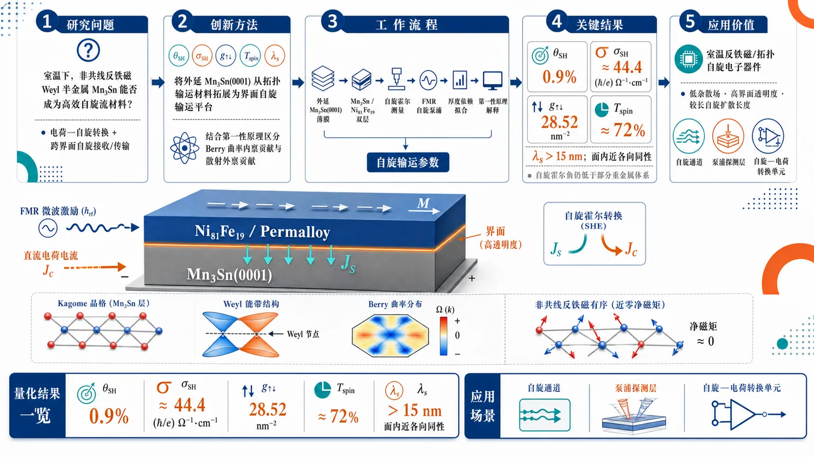
研究问题非共线反铁磁 Weyl 半金属 Mn₃Sn 能否在室温下作为高效自旋流材料：既能通过自旋霍尔效应实现电荷-自旋转换，又能在 Mn₃Sn(0001)/Permalloy 界面中高效接收、传输由铁磁共振泵浦产生的自旋流。创新方法将外延 Mn₃Sn(0001) 从传统“异常霍尔/拓扑输运材料”转化为“界面自旋输运平台”：构建 Mn₃Sn(0001)/Ni₈₁Fe₁₉ 异质结构，定量提取自旋霍尔角、自旋霍尔电导、自旋混合电导、界面自旋透明度和自旋扩散长度，并结合第一性原理区分 Berry 曲率内禀贡献与散射外禀贡献。Aha 点是：净磁矩很小的非共线反铁磁体也能像高效自旋通道一样跨界面传递自旋角动量。工作流程输入为外延生长的 Mn₃Sn(0001) 薄膜和 Mn₃Sn(0001)/Permalloy 双层结构；在室温下通过自旋霍尔/自旋-电荷转换测量获得 θSH 与 σSH，通过铁磁共振自旋泵浦观察 Ni₈₁Fe₁₉ 阻尼增强和界面自旋注入；进一步由厚度依赖和输运拟合提取 g↑↓、自旋透明度与 λs；最后用第一性原理计算解释 Mn₃Sn Kagome 拓扑能带、Berry 曲率与外禀散射共同导致的自旋霍尔响应。关键结果Mn₃Sn(0001) 在室温下表现出 0.9% 自旋霍尔角，面内近各向同性自旋霍尔电导率约 44.4 (ℏ/e) Ω⁻¹·cm⁻¹；Mn₃Sn(0001)/Ni₈₁Fe₁₉ 界面具有 28.52 nm⁻² 高自旋混合电导和约 72% 自旋透明度；Mn₃Sn 外延膜自旋扩散长度超过 15 nm，说明自旋流可在纳米尺度内有效传播，但自旋霍尔角仍低于部分重金属体系。应用价值为反铁磁/拓扑自旋电子器件提供一种室温可用的自旋流产生、传输与转换材料：Mn₃Sn 兼具低磁杂散场、拓扑 Berry 曲率输运、高界面自旋透明度和较长自旋扩散长度，可用于构建低干扰、多层集成的自旋通道、自旋泵浦探测层和自旋-电荷转换单元。第一部分：核心概览（Overview）
Mn₃Sn 作为 Kagome 拓扑非共线反铁磁 Weyl 半金属，在室温下实现了可量化的自旋霍尔效应、自旋泵浦与界面自旋输运。外延 Mn₃Sn(0001) 薄膜表现出 0.9% 自旋霍尔角、约 44.4 (ℏ/e) Ω⁻¹·cm⁻¹ 面内近各向同性自旋霍尔电导率、28.52 nm⁻² 自旋混合电导、约 72% 界面自旋透明度，且 自旋扩散长度超过 15 nm。该工作将 Mn₃Sn 从“异常霍尔/拓扑输运材料”推进到“可用于自旋流产生、传输与转换的界面自旋电子学材料”。
---
第二部分：结构化快速回顾
《Efficient spin-pumping and spin transport across epitaxial Mn₃Sn(0001) noncollinear antiferromagnet/permalloy interfaces》（None，）
背景
下一代自旋电子学依赖高效产生、传输并转换 自旋流 与 电荷流 的材料体系。传统铁磁体和重金属存在磁杂散场、能耗、材料兼容性或转换效率等限制。Mn₃Sn 兼具 Kagome 晶格、非共线反铁磁序、Weyl 半金属性 与 Berry 曲率驱动输运效应，因此成为候选自旋源与自旋-电荷转换材料。
方法
研究对象为 外延 Mn₃Sn(0001) 薄膜 以及 Mn₃Sn(0001)/Ni₈₁Fe₁₉ 异质结构。核心测量包括室温下的 自旋霍尔角、自旋霍尔电导率、自旋泵浦效率、自旋混合电导、界面自旋透明度 与 自旋扩散长度。理论解释结合 第一性原理计算，用于区分内禀与外禀贡献。
结果
室温下 Mn₃Sn(0001) 的 自旋霍尔角为 0.9%，面内 自旋霍尔电导率约为 44.4 (ℏ/e) Ω⁻¹·cm⁻¹，且接近各向同性。Mn₃Sn(0001)/Permalloy 界面具有 28.52 nm⁻² 高自旋混合电导 与约 72% 自旋透明度。Mn₃Sn(0001) 外延膜中的 自旋扩散长度超过 15 nm。
讨论
自旋霍尔响应并非单一机制主导，而是来自 内禀 Berry 曲率贡献 与 外禀散射贡献 的组合。Mn₃Sn 的拓扑能带结构和非共线反铁磁序有利于电荷-自旋转换，但其自旋霍尔角绝对值仍低于部分高效重金属或拓扑材料体系。
局限
可用信息未给出完整实验图谱、误差条、样品数量、厚度序列、温度依赖、磁场角度依赖、拟合残差或统计显著性。摘要明确同时强调 Mn₃Sn 的 “potential” 与 “limitations”，说明其应用前景与性能瓶颈并存。
结论
外延 Mn₃Sn(0001) 可在室温下实现有效自旋泵浦、自旋输运与自旋-电荷转换，尤其在与 Ni₈₁Fe₁₉ 构成界面时表现出高自旋透明度和长自旋扩散长度。Mn₃Sn 是面向反铁磁/拓扑自旋电子学的重要平台，但其转换效率仍需进一步提升。
---
第三部分：逐章节冷凝解析（Section-by-Section Condensing）
可用材料仅包含题名、摘要、题录信息与发表信息；未包含完整 PDF 正文、图表、补充材料或原始章节标题。因此严格逐章节解析只能覆盖已提供的原始标题层级：Title、Abstract、Bibliographic and publication information。未提供的 Introduction、Methods、Results、Discussion、Conclusion 等章节无法进行逐段证据提取，避免虚构数据、图号、统计量或英文引文。
---
Title
#### Efficient spin-pumping and spin transport across epitaxial Mn₃Sn(0001) noncollinear antiferromagnet/permalloy interfaces
研究对象被精确定义为外延 Mn₃Sn(0001)/Permalloy 界面。 题名直接限定材料体系为 epitaxial Mn₃Sn(0001)、磁性类型为 noncollinear antiferromagnet，界面对象为 permalloy，即通常的 Ni₈₁Fe₁₉ 软铁磁合金。题名中的 *"Efficient spin-pumping and spin transport across epitaxial Mn₃Sn(0001) noncollinear antiferromagnet/permalloy interfaces"* 表明核心问题不是单纯的 Mn₃Sn 体相输运，而是跨越 反铁磁/铁磁界面 的 自旋泵浦 与 自旋输运。
“Efficient” 将性能评价置于核心地位。 题名使用 *"Efficient spin-pumping and spin transport"*，说明研究重点在于定量证明 Mn₃Sn 界面可以高效注入、吸收或传输自旋角动量，而非仅观察到弱信号。摘要中的 28.52 nm⁻² 自旋混合电导、约 72% 界面自旋透明度 与 超过 15 nm 自旋扩散长度 构成该“高效性”的主要证据。
晶向 Mn₃Sn(0001) 是物理解释的关键约束。 题名中的 *"Mn₃Sn(0001)"* 指向六方晶系的 c 轴取向薄膜几何。对于具有 Kagome 平面 与各向异性 Berry 曲率的 Mn₃Sn，(0001) 取向直接影响面内输运、自旋极化方向与自旋霍尔响应张量分量。摘要中进一步给出 *"nearly isotropic in-plane spin Hall conductivity"*，说明该取向下的面内自旋霍尔电导近似各向同性。
---
Abstract
#### Spin-current generation and control define the technological motivation
研究动机来自下一代自旋电子学对 自旋流产生与控制 的需求。摘要开篇指出 *"The generation and control of spin currents are crucial for advancing next-generation spintronic technologies."* 这里的重点不是传统电荷电流，而是利用电子自旋角动量作为信息与功能载体。
该动机进一步指向材料设计问题：高效材料需要同时具备 自旋流源能力 与 自旋-电荷互转换能力。摘要给出明确表述：*"These technologies depend on materials capable of efficiently sourcing and interconverting spin and charge currents, while overcoming some limitations associated with conventional ferromagnets and heavy metals."* 这句话同时建立了两个评价维度：一是 sourcing spin currents，二是 interconverting spin and charge currents。
#### Mn₃Sn is positioned as a topological noncollinear antiferromagnetic platform
Mn₃Sn 被定位为 Kagome 拓扑反铁磁 Weyl 半金属，其优势来自磁结构和 Berry 曲率输运。摘要中直接写道：*"Kagome topological antiferromagnetic Weyl semimetals, such as Mn3Sn, present unique advantages owing to their distinct magnetic order and significant Berry curvature-driven transport phenomena."*
这里包含三层物理含义。第一，Kagome 晶格容易产生非平庸能带、Dirac/Weyl 节点或强 Berry 曲率热点。第二，noncollinear antiferromagnetism 可在净磁矩很小的情况下破坏某些对称性，从而允许异常霍尔或自旋霍尔响应。第三，Berry curvature-driven transport 暗示输运效应具有内禀拓扑来源，而不只是杂质散射导致的外禀效应。
#### The central experimental target is epitaxial Mn₃Sn(0001) thin films
研究体系为 外延 (0001) 取向 Mn₃Sn 薄膜。摘要中的 *"we systematically investigate spin current generation and spin-to-charge conversion phenomena in epitaxial (0001)-oriented Mn₃Sn thin films"* 明确了三项关键信息：薄膜为 epitaxial，晶向为 (0001)-oriented，功能测试聚焦 spin current generation 与 spin-to-charge conversion。
Epitaxial 说明薄膜晶体取向与衬底存在有序外延关系，有助于降低晶粒无序对输运张量的平均化影响。(0001)-oriented 则说明测量主要访问六方结构的面内方向，这与后续 *"nearly isotropic in-plane spin Hall conductivity"* 直接相关。
#### The measured spin Hall angle is modest but finite at room temperature
室温下 Mn₃Sn(0001) 的 自旋霍尔角 θSH = 0.9%。摘要给出：*"Our findings reveal a spin Hall angle of 0.9%"*。自旋霍尔角 衡量电荷电流转换为横向自旋流的效率，0.9% 表明 Mn₃Sn 存在可观测自旋-电荷转换，但绝对效率低于 Pt、β-W、β-Ta 等强自旋轨道重金属中常见的数百分比至数十百分比水平。
该数值的意义在于：Mn₃Sn 的优势可能不在最大化 θSH，而在结合 反铁磁低杂散场、拓扑 Berry 曲率、长自旋扩散长度 与 高界面透明度 后形成综合自旋输运平台。
#### The in-plane spin Hall conductivity is nearly isotropic
室温下 Mn₃Sn(0001) 的面内 自旋霍尔电导率约为 44.4 (ℏ/e) Ω⁻¹·cm⁻¹，且接近各向同性。摘要原文为：*"a nearly isotropic in-plane spin Hall conductivity of ~44.4 (hbar/e) Ømega⁻¹.cm⁻¹ at room temperature"*。
Nearly isotropic in-plane 的重要性在于，Mn₃Sn 的 Kagome 晶格和非共线磁序本可能导致明显的晶向依赖；若面内响应近各向同性，则器件设计对电流方向的敏感性降低。数值 ~44.4 (ℏ/e) Ω⁻¹·cm⁻¹ 提供了与其他自旋霍尔材料横向比较的标准化指标。
#### Intrinsic and extrinsic mechanisms jointly contribute
自旋霍尔响应被解释为 内禀机制 与 外禀机制 的共同结果。摘要写道：*"originating from a combination of intrinsic and extrinsic contributions, as discussed in light of first-principle calculations."*
Intrinsic contributions 通常对应能带结构中的 Berry curvature，不依赖具体杂质类型而与晶体电子结构有关。Extrinsic contributions 通常来自 skew scattering 或 side-jump scattering 等散射过程，依赖样品质量、缺陷、无序和电阻率。第一性原理计算用于评估内禀自旋霍尔电导的能带来源，并帮助判断实验值中外禀贡献的必要性。
#### Mn₃Sn(0001)/Ni₈₁Fe₁₉ interfaces show high spin-mixing conductance
在 Mn₃Sn(0001)/Ni₈₁Fe₁₉ 异质结构中，界面 自旋混合电导 g↑↓ = 28.52 nm⁻²。摘要给出：*"in Mn₃Sn(0001)/Ni₈₁Fe₁₉ heterostructures, we observe a high spin-mixing conductance of 28.52 nm⁻²"*。
自旋混合电导 衡量铁磁共振自旋泵浦过程中界面吸收横向自旋角动量的能力。28.52 nm⁻² 属于较高界面透明度体系的量级，说明 Mn₃Sn/Permalloy 界面能够有效传递自旋流，而不是被界面反射、粗糙、氧化或磁无序严重抑制。
#### The interface spin transparency reaches approximately 72%
Mn₃Sn(0001)/Ni₈₁Fe₁₉ 界面的 自旋透明度约为 72%。摘要写道：*"an interfacial spin-transparency of approximately 72%."* 该指标反映从铁磁层泵入的自旋流中有多大比例能够跨界面进入 Mn₃Sn 并参与输运或耗散。
约 72% 的透明度表明该界面不是简单的“自旋阻挡层”，而是具备较低自旋记忆损失和较好电子耦合的自旋传输通道。对于反铁磁自旋电子学，这一数值尤其重要，因为许多反铁磁/铁磁界面会因磁结构错配或界面无序导致自旋注入效率下降。
#### The spin diffusion length exceeds 15 nm at room temperature
Mn₃Sn(0001) 外延膜的 自旋扩散长度 λs > 15 nm。摘要中强调：*"the spin diffusion length in Mn₃Sn(0001) epitaxial films exceeds 15 nm at room temperature."*
自旋扩散长度 表征非平衡自旋积累或自旋流在材料中衰减到特征尺度的距离。超过 15 nm 对金属反铁磁材料而言相当重要，说明 Mn₃Sn 不仅能产生或转换自旋流，还能在纳米器件尺度内有效传输自旋信息。该长度也意味着在厚度小于或接近 15 nm 的器件中，自旋流不会被完全耗散。
#### The final claim balances potential and limitations
结论性表述同时强调应用潜力与局限。摘要末句为：*"Our results highlight the potential, and limitations, of the topological Weyl noncollinear antiferromagnet Mn₃Sn as an efficient material for spin transport and conversion in prospective spintronic applications."*
这句话的关键在于 potential, and limitations 的并列。潜力来自 高自旋混合电导、高界面透明度、长自旋扩散长度 和 拓扑反铁磁输运特性；局限则可能来自 0.9% 自旋霍尔角相对有限、内禀与外禀机制尚需解耦、器件级可控性仍需验证。
---
Bibliographic and publication information
#### The work is an arXiv preprint with journal publication linkage
记录显示该研究最初提交于 2025 年 8 月 4 日，修订版本为 2026 年 7 月 1 日 v2。题录给出：*"Submitted on 4 Aug 2025 ( v1 ), last revised 1 Jul 2026 (this version, v2)"*。这说明公开版本经历过至少一次修订。
期刊发表信息为 npj Spintronics 4, 17 (2026)。题录中写明：*"Journal reference: npj Spintronics 4, 17 (2026)"*。该信息表明研究不只是预印本，还与同行评议期刊版本关联。
#### The subject classification is materials science within condensed matter physics
学科分类为 Condensed Matter > Materials Science。题录中标注：*"Subjects: Materials Science (cond-mat.mtrl-sci)"*。这与研究内容一致：核心问题是材料体系、薄膜外延、界面输运和自旋电子学功能。
#### The DOI and arXiv identifier provide traceability
arXiv 标识为 arXiv:2508.02415，DOI 为 10.48550/arXiv.2508.02415。题录中显示：*"Cite as: arXiv:2508.02415 [cond-mat.mtrl-sci]"* 与 *"https://doi.org/10.48550/arXiv.2508.02415"*。期刊相关 DOI 为 10.1038/s44306-026-00136-0，题录中给出：*"Related DOI : https://doi.org/10.1038/s44306-026-00136-0"*。
---
第四部分：深度理解与语言支持（Understanding & Nuance）
1. 术语解析
#### Spin pumping
Spin pumping 指铁磁层磁化进动时，将自旋角动量注入相邻非磁、反铁磁或强自旋轨道材料的过程。语境中的 *"Efficient spin-pumping"* 不是普通电注入，而通常与 铁磁共振 FMR、阻尼增强、界面自旋混合电导有关。它测量的是界面转移动量的能力，而非单纯电阻或霍尔电压。
#### Spin-mixing conductance
Spin-mixing conductance，即 自旋混合电导 g↑↓，描述界面对横向自旋流的吸收能力。数值 28.52 nm⁻² 越大，表示界面对自旋角动量越“开放”。它不同于普通电导：普通电导衡量电荷通过能力，自旋混合电导衡量自旋泵浦过程中界面吸收进动自旋流的能力。
#### Spin transparency
Spin transparency 表示自旋流穿过界面的有效比例。约 72% 意味着多数泵浦自旋流能够进入 Mn₃Sn，而不是在界面反射或因自旋记忆损失而消失。它与自旋混合电导相关，但不完全相同；透明度更接近“实际进入目标层的有效自旋流比例”。
#### Berry curvature-driven transport
Berry curvature-driven transport 指电子能带在动量空间中的几何曲率导致的横向输运响应，例如异常霍尔效应、自旋霍尔效应。这里的微妙之处在于：电流横向偏转不一定来自洛伦兹力或普通散射，也可能来自能带波函数的几何相位结构。Mn₃Sn 的非共线反铁磁序能产生显著 Berry 曲率，因此即便净磁矩很小，也可出现强横向输运。
#### Noncollinear antiferromagnet
Noncollinear antiferromagnet 指磁矩不是简单反平行排列，而是在晶格中形成夹角结构。Mn₃Sn 中 Mn 磁矩常与 Kagome 平面相关，形成三角形非共线反铁磁序。这类材料可以在宏观净磁矩很小的情况下破坏特定对称性，从而允许异常霍尔、自旋霍尔和拓扑输运效应。
---
2. 疑难查证
#### 为什么反铁磁体也能产生类似铁磁体的横向输运？
普通直觉认为反铁磁体净磁矩为零，因此不应有明显霍尔响应。但 Mn₃Sn 属于 非共线反铁磁体，磁矩不是简单一上一下抵消，而是在 Kagome 平面中形成三角形排列。这种排列虽然总磁矩很小，却会破坏某些组合对称性，使电子在动量空间中获得非零 Berry 曲率。Berry 曲率像“动量空间磁场”，使电子在外加电场下产生横向速度，从而形成异常霍尔或自旋霍尔响应。
#### 为什么 0.9% 自旋霍尔角仍然有意义？
单看 0.9%，Mn₃Sn 的自旋霍尔角低于一些重金属。但自旋电子器件不是只看 θSH，还要看 自旋扩散长度、界面透明度、材料磁有序特性、热稳定性 和 与磁性层的耦合。Mn₃Sn 的 λs > 15 nm 与 约 72% 界面透明度 意味着它可以把自旋流传得更远、界面损失更小。综合性能可能优于某些高 θSH 但短扩散长度或界面损失严重的材料。
#### 内禀与外禀自旋霍尔贡献如何区分？
内禀贡献 来自能带结构，尤其是 Berry 曲率；理论上可通过第一性原理计算给出自旋霍尔电导。外禀贡献 来自杂质和缺陷散射，包括 skew scattering 与 side jump。实验中若自旋霍尔电导随电阻率、温度、缺陷浓度或薄膜质量变化明显，通常说明外禀机制参与。摘要中的 *"a combination of intrinsic and extrinsic contributions"* 表明单靠理想晶体能带计算不足以解释全部实验信号。
#### 自旋扩散长度超过 15 nm 为什么重要？
在纳米自旋电子器件中，功能层厚度常为数纳米到几十纳米。如果自旋扩散长度只有 1–2 nm，自旋流很快衰减，器件设计空间有限。Mn₃Sn 中 λs > 15 nm 表明自旋信息可以穿过较厚的反铁磁层，适合构建多层结构、反铁磁自旋通道或拓扑自旋转换层。
---
第五部分：创新评估与关联（Synthesis & Novelty）
1. 创新性判断
#### 从异常霍尔 Mn₃Sn 推进到自旋泵浦与界面自旋输运 Mn₃Sn
过去数年中，Mn₃Sn 的研究重点多集中在 异常霍尔效应、反常能斯特效应、Weyl 半金属拓扑能带、磁畴操控 和 非共线反铁磁序。该研究的创新点在于将 Mn₃Sn(0001) 明确置于 自旋泵浦、自旋输运和自旋-电荷转换 框架中，并给出界面级参数：g↑↓ = 28.52 nm⁻²、spin transparency ≈ 72%、λs > 15 nm。
#### 解决了 Mn₃Sn 能否作为有效自旋传输层的问题
前人已知 Mn₃Sn 具有强 Berry 曲率和异常霍尔响应，但“能否在实际铁磁/反铁磁异质结构中高效接收并传输自旋流”并非自动成立。该研究通过 Mn₃Sn(0001)/Ni₈₁Fe₁₉ 异质结构证明界面自旋注入效率较高，跨界面自旋损失有限。
#### 建立了 Mn₃Sn(0001) 室温自旋霍尔参数的定量基准
室温下给出 θSH = 0.9% 与 σSH ≈ 44.4 (ℏ/e) Ω⁻¹·cm⁻¹，为后续比较不同晶向、厚度、应变、化学计量比、缺陷浓度和衬底条件提供基准。尤其是 near isotropic in-plane spin Hall conductivity 对器件方向设计具有直接意义。
#### 将第一性原理与实验自旋输运联系起来
摘要中的 *"as discussed in light of first-principle calculations"* 表明该研究不只报告实验现象，还尝试将自旋霍尔响应分解为 内禀 Berry 曲率贡献 与 外禀散射贡献。这一点对拓扑自旋电子学很关键，因为它决定性能优化路径：若内禀主导，应调控能带、费米能级和晶向；若外禀显著，应优化缺陷、杂质和薄膜质量。
#### 揭示潜力与瓶颈并存
主要潜力来自 高界面自旋透明度 与 长自旋扩散长度；主要瓶颈来自 自旋霍尔角仅 0.9%。因此 Mn₃Sn 更像一种综合性能优良、具备拓扑和反铁磁优势的自旋输运平台，而不是单纯追求最大自旋霍尔角的重金属替代品。
-
02
📄 摘要：研究含短程非磁杂质的 Dirac 电子自旋霍尔效应，采用自洽 T 矩阵近似计算自旋与磁矩积累系数。类似反常霍尔效应普适标度，随电导率 σyy 改变出现三个区间：超洁净区由斜散射给出与 σyy 成正比的响应，中等脏区近似常数，另有更脏区行为用于统一刻画杂质散射下的自旋霍尔响应。
💡 亮点：Dirac 电子自旋霍尔响应在非磁短程杂质下呈现类似反常霍尔效应的三段普适标度。该结果把斜散射、内禀平台和脏极限统一到 σyy 标度图像中。
📖 展开分析 + 配图
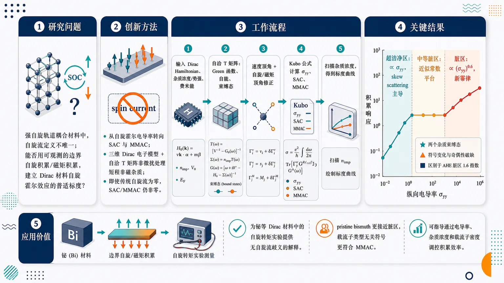
研究问题在强自旋轨道耦合材料中，传统“自旋流”定义不唯一，导致自旋霍尔效应难以统一解释；论文核心问题是：能否不用有争议的自旋流，而用可观测的边界自旋积累/磁矩积累来建立 Dirac 材料中自旋霍尔效应随电导率变化的普适标度图景。创新方法将研究对象从自旋霍尔电导率转为自旋积累系数 SAC 与磁矩积累系数 MMAC，用三维 Dirac 电子模型描述铋的低能电子，并用自洽 T 矩阵近似非微扰处理短程非磁杂质；Aha 点是：即使 conventional spin current 在该 Dirac 模型中为零，SAC/MMAC 仍非零且可形成三段标度，从而绕开自旋流定义歧义。工作流程输入三维各向同性 Dirac Hamiltonian、短程非磁标量杂质浓度与势强、费米能和电导率参数；先用自洽 T 矩阵求 Green 函数、自能和杂质束缚态，再加入速度顶角与自旋/磁矩顶角修正，通过 Kubo 型公式计算纵向电导率 σyy、SAC 与 MMAC；最后扫描杂质浓度，把积累响应绘制成随 σyy 变化的三段标度曲线。关键结果SAC 与 MMAC 随纵向电导率出现三段清晰标度：超洁净区由 skew scattering 主导，积累系数与 σyy 线性正比；中等脏区几乎为常数平台；脏区出现新幂律 −Γ⁰⁰g ∝ (σyy)⁰.6，区别于反常霍尔效应脏区的 1.6 指数。自洽 T 矩阵还揭示两个杂质束缚态、费米能奇偶性破缺和 skew scattering 被无序抑制后的符号变化。应用价值该框架为铋等 Dirac 材料中的自旋转矩实验提供无自旋流歧义的解释：pristine bismuth 的实验参数落在脏区，观测到的载流子类型无关符号更符合 MMAC 而非 SAC。它可用于判断材料处于超洁净、平台或脏区响应，并指导通过电导率、杂质浓度和载流子密度调控自旋/磁矩积累效率。第一部分：核心概览 (Overview)
该研究把自旋霍尔效应从有争议的自旋流定义转向可实验关联的自旋积累系数 SAC与磁矩积累系数 MMAC，在三维 Dirac 电子模型中用自洽 T 矩阵近似系统处理短程非磁杂质。核心贡献是建立类似反常霍尔效应的三段普适标度：超洁净区线性依赖电导率，中等脏区近似常数，脏区出现不同于反常霍尔效应的新指数 0.6。该框架为铋等 Dirac 材料中的自旋转矩实验提供了无自旋流歧义的统一解释。
---
第二部分：结构化快速回顾
《Universal Scaling of the Spin Hall Effect》（None，）
背景
自旋霍尔效应长期被视为反常霍尔效应的自旋对应物，但在存在自旋轨道耦合时，自旋不守恒，传统自旋流定义不唯一，甚至可在平衡态出现非零均匀期望值。已有理论多依赖 conventional spin current 或 conserved spin current，实验上真正可观测的是边界处的自旋积累。
方法
采用描述铋低能电子的各向同性三维 Dirac Hamiltonian，引入短程非磁标量杂质势，在自洽 T 矩阵近似中计算自能、顶角修正、电导率、SAC 与 MMAC。主要参数包括三维空间维数 d = 3、动量截止 Λ = 10³，并以一阶 Born 近似作比较。
结果
SAC 与 MMAC 随电导率出现三种标度区间：
- 超洁净区：由skew scattering主导，积累系数与 σyy 成正比；
- 中等脏区：积累系数近似常数；
- 脏区：出现新标度 ∝ (σyy)⁰.6，不同于反常霍尔效应脏区的 1.6 指数。
讨论
SAC/MMAC 在非磁体系中本质上是外禀量，但在中等脏区可表现为近似常数。对铋实验参数 Δ = 7.65 meV、εF = 30 meV、σyy = 10³ S/cm 的估算显示，pristine bismuth 落在脏区，与实验观测到的自旋转矩效率载流子密度依赖相符。
局限
模型使用各向同性 Dirac Hamiltonian而非真实铋的完整各向异性结构；杂质被简化为短程非磁标量势；脏区指数 0.6 的普适性尚不确定；实验中实际观测到的“自旋流”定义仍不清楚。
结论
基于SAC/MMAC的描述提供了一个不依赖自旋流定义的自旋霍尔效应统一理论，并揭示了 Dirac 电子中与反常霍尔效应相似但在脏区指数不同的普适标度结构。
---
第三部分：逐章节冷凝解析 (Section-by-Section Condensing)
Abstract
Spin Hall effect is reformulated through accumulation coefficients
研究对象不是传统的自旋流电导率，而是自旋积累系数 SAC 与磁矩积累系数 MMAC，具体量为 −Γ⁰⁰ gₛ₍ₘ₎zxy。这种选择直接绕开了自旋流定义在自旋轨道耦合体系中的歧义。摘要明确给出核心对象：*"We study the spin Hall (SH) effect for the Dirac electrons in terms of the spin and magnetic-moment accumulation coefficients −Γ⁰⁰gₛ₍ₘ₎zxy."*
Short-range nonmagnetic impurities are treated nonperturbatively
杂质效应通过自洽 T 矩阵近似处理，而不是简单 Born 展开；这使得 skew scattering、bound states 和强散射效应可被统一纳入。关键方法表述为：*"We take short-range nonmagnetic impurities into account within the self-consistent T-matrix approximation."*
Three conductivity regimes mirror anomalous Hall scaling but with a new dirty-limit exponent
SAC/MMAC 随纵向电导率 σyy 出现三段行为：
- superclean regime：−Γ⁰⁰g ∝ σyy，由 skew scattering 产生；
- moderately dirty regime：−Γ⁰⁰g 近似常数；
- dirty regime：−Γ⁰⁰g ∝ (σyy)⁰.6。
这一指数与反常霍尔效应脏区的 1.6 不同。摘要给出完整结论：*"we find three distinct regimes by changing the electric conductivity σyy; the superclean regime with −Γ⁰⁰gₛ₍ₘ₎zxy∝σyy owing to the skew scattering, moderately dirty regime with almost constant −Γ⁰⁰gₛ₍ₘ₎zxy, and dirty regime with a new scaling relation −Γ⁰⁰gₛ₍ₘ₎zxy∝(σyy)⁰.⁶ whose exponent differs from that of the AH conductivity."*
Unified spin Hall theory avoids spin-current ambiguity
理论目标不是修补自旋流定义，而是以积累响应作为基本可观测量。摘要最终定位为：*"Our results construct a unified theory of the SH effect without any ambiguity of spin current."*
---
Introduction
Hall, anomalous Hall, and spin Hall effects form the historical hierarchy
普通 Hall 效应起源于电场、磁场与非磁金属中的 Lorentz force；反常 Hall 效应在铁磁金属中更强；自旋 Hall 效应则在无磁场非磁金属中产生横向自旋流并导致边界自旋积累。历史脉络以 150 年为尺度展开：*"It has been almost 150 years since the celebrated discovery of the Hall effect."* 自旋霍尔效应的核心现象被概括为：*"the spin Hall (SH) effect occurs without a magnetic field, in which spin current, instead of the charge current, flows perpendicular to an electric field and turns into the spin accumulation at the boundaries."*
Anomalous Hall effect has intrinsic and extrinsic microscopic origins
反常霍尔效应的机制分为：
- intrinsic mechanism：由异常速度或Berry curvature产生，需要磁化与自旋轨道耦合；
- extrinsic mechanism：来自杂质，包括 skew scattering 与 side jump。
机制分类直接表述为：*"The microscopic origins of the AH effect are classified into the intrinsic and extrinsic mechanisms."* 内禀部分为：*"The former is the anomalous velocity, or the Berry curvature, generated by the combination of the magnetization and spin-orbit coupling."* 外禀部分为：*"The latter comes from impurities and is further classified into the skew scattering and side jump."*
Universal scaling of anomalous Hall effect supplies the conceptual template
铁磁 Rashba 模型中的自洽 T 矩阵研究建立了反常霍尔效应的三段 universal scaling：
- 超洁净区：σxy ∝ σyy，skew scattering 主导；
- 中等脏区：σxy 近似常数，由 intrinsic mechanism 与 side jump 主导；
- 脏区：σxy ∝ (σyy)¹.6。
对应原句为：*"A detailed study of the ferromagnetic Rashba model within the self-consistent T-matrix approximation demonstrated the so-called “universal scaling” of the AH effect."* 具体三段为：*"the superclean regime where the AH conductivity σxy is proportional to the longitudinal σyy owing to the skew scattering, moderately dirty regime where σxy is almost constant owing to the intrinsic mechanism and side jump, and dirty regime with σxy∝(σyy)¹.⁶."*
Spin Hall effect is widely treated as the spin counterpart of anomalous Hall effect
自旋霍尔效应通常被视为反常霍尔效应的自旋对应物，理论机制也包含相同的内禀与外禀来源。表述为：*"It is widely accepted that the SH effect is a spin counterpart of the AH effect and originates from the same mechanisms."* 早期研究强调外禀机制：*"The early proposals focused on the extrinsic mechanisms."* 后来内禀机制理论推动了实验观测：*"the recent theoretical works on the intrinsic mechanism motivated experimental observations."*
Existing spin Hall scaling studies cover only parts of the disorder range
已有理论研究覆盖了超洁净到中等脏区的 crossover，包括连续模型与 ab initio Korringa-Kohn-Rostoker/coherent potential approximation。表述为：*"The crossover between the superclean and moderately dirty regimes was theoretically studied based on continuum models and using the ab initio Korringa-Kohn-Rostoker method within the coherent potential approximation."* 实验上，中等脏区已被密集探索：*"Experimentally, the moderately dirty regime has been explored intensively."* 脏区已有实验报告 σₛzxy ∝ (σyy)⁰.8：*"the SH conductivity σₛzxy∝(σyy)⁰.⁸ was reported in the dirty regime."* 因此杂质效应仍需理论推进：*"Further theoretical research is needed for the impurity effects on the SH effect."*
Spin current is fundamentally ambiguous under spin-orbit coupling
存在自旋轨道耦合时，spin is not conserved，因此spin current is not uniquely defined。传统自旋流定义为 Ĵₛₐⁱ = ŝa, v̂i/2，但存在平衡态非零均匀期望值等严重问题。关键判断是：*"In the presence of the spin-orbit coupling, spin is not conserved, and spin current is not uniquely defined."* 传统定义为：*"the conventional spin current Ĵₛₐⁱ=ŝₐ,v̂ⁱ/2."* 问题为：*"this choice suffers from some critical problems such as the nonzero uniform expectation value in equilibrium."*
Conserved spin current improves formal properties but remains experimentally unclear
保守自旋流包含 conventional spin current 与 spin torque dipole moment，并可通过 spin torque quadrupole moment 处理平衡磁化自旋流，但实验可测性仍未明确。表述为：*"A few theoretical works chose the conserved spin current, which consists of the conventional spin current and spin torque dipole moment."* 优点与限制为：*"This choice has some desirable properties such as the magentization spin current in equilibrium by taking the spin torque quadrupole moment into account, but it remains unclear if measurable in experiments."*
Spin accumulation is the better primary observable
自旋本身定义良好，边界自旋积累已被实验观测，因此理论应以自旋积累而非自旋流为基本对象。核心判断为：*"spin is well defined, and its accumulation at the boundaries has been experimentally observed."* 进一步明确为：*"Spin, rather than spin current, should be the primary object in theories of the SH effect."*
Spin accumulation coefficient provides a bulk-computable boundary-accumulation indicator
SAC 定义为电场梯度诱导的自旋响应：
⟨Δŝa⟩ = gₛₐⁱj ∂ₓᵢEj。
它描述边界自旋积累，但可作为 bulk property 计算。原始定义为：*"the spin accumulation coefficient (SAC), namely, the linear response ⟨Δŝₐ⟩=gₛₐⁱj∂ₓ^ᵢEⱼ of spin to the gradient of an electric field Eⱼ."* 功能定位为：*"This coefficient gₛₐⁱj characterizes the spin accumulation at the boundaries caused by the SH effect but can be evaluated as a bulk property."*
SAC can reproduce a spin Hall conductivity interpretation without choosing a spin-current definition
在 relaxation time approximation 中，γₛₐⁱj = −gₛₐⁱj/τ 可解释为 SH conductivity，因为连续方程形式给出 ∂ₓᵢ𝒥ₛₐⁱ = −⟨Δŝa⟩/τ = γₛₐⁱj∂ₓᵢEj，从而 𝒥ₛₐⁱ=γₛₐⁱjEj。但该理论并不依赖某个自旋流定义。原句为：*"Within the relaxation time approximation, γₛₐⁱj=−gₛₐⁱj/τ can be interpreted as the SH conductivity."* 关键限制解除为：*"Nonetheless, this theory does not rely on a specific definition of spin current 𝒥ₛₐⁱ."*
Dirac electrons in bismuth provide the target platform
低能铋电子由 Dirac 电子描述，且可定义自旋磁矩，因此不仅能计算 SAC，还能计算 MMAC：
⟨Δm̂a⟩ = gₘₐⁱj ∂ₓᵢEj。
目标体系和方法为：*"we study the impurity effects on the SAC for the Dirac electrons describing low-energy physics of bismuth."* MMAC 定义为：*"we can also define the spin magnetic moment m̂ₐ and hence compute the magnetic-moment accumulation coefficient (MMAC) ⟨Δm̂ₐ⟩=gₘₐⁱj∂ₓ^ᵢEⱼ."*
The central claim is three-regime scaling with a new dirty-limit relation
引言结尾给出主要发现：SAC 与 MMAC 都随电导率表现三段区间，尤其在脏区出现新标度。原句为：*"We find that both the SAC and MMAC have three regimes as functions of the electric conductivity."* 关键创新为：*"In particular, a new scaling relation holds in the dirty regime."*
---
Model and Method
Isotropic Dirac Hamiltonian models low-energy bismuth electrons
铋 L 点低能电子通常由各向异性 Dirac Hamiltonian 描述；计算中采用各向同性形式：
Ĥ(k)=−ℏv k·ρyσ + Δρz。
其中 ρ 表示轨道 Pauli 矩阵，σ 表示自旋 Pauli 矩阵。原句为：*"In bismuth, low-energy electrons at the L points are described by the anisotropic Dirac Hamiltonian."* 模型简化为：*"Here, we consider its isotropic case, Ĥ(k)=−ℏv k·ρ_yσ+Δρ_z."* 自由度说明为：*"ρ’s and σ’s are the Pauli matrices for the orbital and spin degrees of freedom, respectively."*
Spin and spin magnetic moment operators differ by an orbital matrix
自旋算符为 ŝz=(ℏ/2)σz；自旋磁矩为 m̂z=−(gμB/2)ρzσz。磁矩中出现 ρz，可由 Dirac Hamiltonian 的非相对论近似理解。原句为：*"The spin and spin magnetic-moment operators are expressed by ŝ_z=(ℏ/2)σ_z and m̂_z=−(gμ_B/2)ρ_zσ_z with the g-factor g and Bohr magneton μ_B."* 物理解释为：*"ρ_z in the magnetic moment can be understood from the nonrelativistic approximation of the Dirac Hamiltonian."*
Conventional spin current vanishes but magnetic-moment current does not
在该 Dirac 模型中，传统自旋流 Ĵₛzx=ŝz,v̂x/2=0，而磁矩流 Ĵₘzx=m̂z,v̂x/2=(gμBv/2)ρxσy 非零。因此早期相关工作计算的是 magnetic-moment Hall conductivity 而非 conventional spin Hall conductivity。原句为：*"The conventional current of spin vanishes as Ĵₛzx=ŝ_z,v̂^x/2=0, while that of the magnetic moment Ĵₘzx=m̂_z,v̂^x/2=(gμ_Bv/2)ρₓσ_y is nonzero."* 历史计算对象为：*"Hence, the magnetic-moment Hall (MMH) conductivity ⟨ΔĴₘzx⟩=σₘzxyE_y was computed in the previous literature on the SH effect."*
SAC and MMAC are symmetry-allowed even when conventional spin current vanishes
尽管 conventional spin current 为零，SAC 与 MMAC 都不为零，因为体系对称性允许它们。原句为：*"On the other hand, both the SAC and MMAC are nonzero as the symmetry allows."* 这使得积累响应比传统自旋流更适合作为 Dirac 体系中 SH 效应的指标。
Short-range scalar nonmagnetic impurities define the disorder model
杂质势取为短程标量形式：
Vi(r)=vi ∑Rᵢ δ(r−Ri)，其中 Ri 为杂质位置。原句为：*"we assume that the impurity potential is scalar as Vᵢ₍ᵣ₎₌ᵥᵢ∑R_ᵢδ(r−Rᵢ₎."* 杂质浓度记为 ni，强度为 vi。
Self-consistent T-matrix approximation determines the self-energy
retarded Green’s function 为：
ĜR(ε,k)=[ε−Ĥ(k)−Σ̂R(ε)]⁻¹。
自能为 Σ̂R(ε)=ni T̂R(ε)，T 矩阵为 T̂R(ε)=[1−vi𝒢̂R(ε)]⁻¹vi。积分 Green’s function 为 𝒢̂R(ε)=∫d^dk/(2π)^d ĜR(ε,k)，空间维数 d=3。原句为：*"The retarded Green’s function, Ĝ^R(ε,k)=[ε−Ĥ(k)−Σ̂^R(ε)]⁻¹, is self-consistently solved together with Σ̂^R(ε)=nᵢT̂^R(ε)."* T 矩阵定义为：*"T̂^R(ε)=[1−vᵢ𝒢̂^R(ε)]⁻¹vᵢ."* 维数为：*"with the spatial dimension d=3."*
Carrier density is not held fixed because impurity bound states appear
改变杂质浓度和势强时，载流子密度不固定，原因是存在impurity bound states。原句为：*"The carrier density is not fixed as the impurity concentration and potential change because of the presence of the impurity bound states."* 这意味着标度关系不是在固定 carrier density 下得到，而是随杂质参数改变的输运响应。
Electric conductivity and SAC are computed from Kubo-type expressions with vertex corrections
电导率 σjj 与 SAC gₛₐⁱj 由 Green’s function、速度顶角和自旋顶角表达式计算。公式包含 RA 项 与 RR/AA 项，并显式含有 renormalized spin vertex Ŝa 与 renormalized velocity vertex V̂j。原文给出：*"The electric conductivity and SAC are computed as"*，随后列出 Eq. (5a)(5b)。顶角含义为：*"Ŝₐ and V̂^j are the renormalized spin and velocity vertices."*
Vertex corrections are explicitly included through Bethe-Salpeter-type equations
重整化自旋顶角与速度顶角分别为：
Ŝa = ŝa + ni T̂A ∫ĜA Ŝa ĜR T̂R；
V̂j = v̂j + ni T̂R ∫ĜR V̂j ĜA T̂A。
原句为：*"The second terms are the vertex corrections (VCs)."* 顶角修正对 skew scattering 和外禀机制至关重要，后续结果也专门比较了 with and without VCs。
Computational setup uses analytic momentum integration and explicit cutoffs
所有动量积分解析完成，并引入无量纲 cutoff Λ=10³。对照计算采用自洽一阶 Born 近似，cutoff Λ=10²。原句为：*"All the integrals over k are carried out analytically by introducing the dimensionless cutoff Λ=10³."* 比较方案为：*"For comparison, We also employ the self-consistent first-order Born approximation with Λ=10²."*
Zero-temperature Fermi-surface limit simplifies the energy integration
计算聚焦 μ=εF 与 T=0，因此 Eq. (5) 中能量积分不再需要。原句为：*"We focus on μ=ε_F and T=0, and the integrals over ε in Eq. (5) are not necessary."*
---
Results
Density of states reveals two impurity bound states
DOS 定义为 D⁰⁰(ε)=−π⁻¹ Im 𝒢R⁰⁰(ε)，其中 𝒢R⁰⁰ 为 ρ0σ0 分量。对于 Fig. 1 中参数 (ℏv/Δ)³ni = 5.448，出现两个 impurity bound states，位置约为
ε/Δ = −2π²(ℏv)³/(Δ²viΛ) ± 1。原句为：*"We find two impurity bound states around ε/Δ=−2π²⁽ℏv)³/Δ²vᵢΛ±1."*
Bound states approach the band edges as the cutoff goes to infinity
当 Λ → ∞ 时，这两个 bound states 趋向 band edges ε/Δ → ±1。原句为：*"which go to the band edges ε/Δ→±1 as Λ→∞."* 这说明 finite cutoff 下 bound states 的位置受 cutoff 控制，但其存在体现了 T 矩阵处理的非微扰性质。
Bound states indicate the nonperturbative nature of the T-matrix approximation
T 矩阵近似包含无限阶杂质散射，能产生 Born 近似无法捕捉的 bound states。原文明确指出：*"The presence of these bound states reflects a nonperturbative nature of the approximation."*
SAC and MMAC are compared across T-matrix and first-order Born approximations
Fig. 2 比较了 SAC −Γ⁰⁰gₛzxy 与 MMAC −Γ⁰⁰gₘzxy 随 Fermi energy 的依赖，包含四种计算：
- T 矩阵 + VCs：black solid lines；
- T 矩阵 without VCs：blue dashed lines；
- first-order Born + VCs：orange dotted lines；
- first-order Born without VCs：green dash-dotted lines。
参数为 (ℏv/Δ)³ni = 0.1，Δ²vi/(ℏv)³ = 0.1。原句为：*"we show the Fermi-energy dependence of the SAC −Γ⁰⁰gₛzxy and MMAC −Γ⁰⁰gₘzxy within the T-matrix and first-order Born approximations."* 图注给出参数：*"We choose (ℏv/Δ)³ nᵢ₌₀.1 and Δ²vᵢ/(ℏv)³⁼⁰.1."*
Multiplication by Γ⁰⁰ gives SAC/MMAC conductivity dimensions
计算中乘以 self-energy 虚部 Γ⁰⁰ = −ImΣR⁰⁰，使 SAC 与 MMAC 分别具有 SH conductivity 与 MMH conductivity 的量纲。原句为：*"Here, we have multiplied the imaginary part of the self-energy Γ⁰⁰=−ImΣR⁰⁰, which is the ρ₀σ₀₋component of Σ̂^R, so that these coefficients have the same dimensions as the SH and MMH conductivities, respectively."*
First-order Born approximation preserves simple Fermi-energy parity
在一阶 Born 近似中，无论是否包含 VCs，SAC 对 εF 为奇函数，MMAC 对 εF 为偶函数。原句为：*"Within the first-order Born approximation, with and without the VCs, the SAC in Fig. 2(a) is odd with respect to the Fermi energy ε_F, while the MMAC in Fig. 2(b) is even."*
T-matrix with vertex corrections breaks even/odd parity through skew scattering
在 T 矩阵 + VCs 下，SAC 与 MMAC 不再呈现奇偶对称，原因是 skew scattering。原句为：*"Within the T-matrix approximation with the VCs, these coefficients are neither odd nor even owing to the skew scattering."* 这表明 skew scattering 需要非 Born 和顶角修正共同体现。
For negative Fermi energy, signs change when impurity concentration suppresses skew scattering
当 εF < 0 且取 vi > 0 时，改变杂质浓度会抑制 skew scattering，甚至使 SAC/MMAC 符号改变。原句为：*"For ε_F<0, where we have chosen vᵢ>0, even their signs change by changing the impurity concentration to suppress the skew scattering."*
Particle-hole symmetry is broken by the impurity potential
符号变化与奇偶性破坏源于标量杂质势 Vi(r) 破坏 Dirac Hamiltonian 的 particle-hole symmetry。原句为：*"Such behavior was already found in the MMH conductivity and happens because the impurity potential (2) breaks the particle-hole symmetry of the Dirac Hamiltonian (1)."*
Scaling relation is evaluated at positive Fermi energy to avoid sign changes
Fig. 3 中选择 εF > 0，避免负能区 skew scattering 被抑制导致的符号变化。具体参数为 εF/Δ = 3.917，通过改变 (ℏv/Δ)³ni 从 10⁻¹ 到 10²·⁵ 扫描电导率。原句为：*"We choose ε_F>0 to avoid the aforementioned sign change."* 图注为：*"by changing the impurity concentration (ℏv/Δ)³ nᵢ from 10⁻¹ to 10².⁵. We choose ε_F/Δ=3.917."*
SAC and MMAC display three regimes analogous to anomalous Hall scaling
SAC 与 MMAC 都呈现三段行为，类似 AH conductivity 的 universal scaling。原句为：*"Both these coefficients have three regimes similarly to the AH conductivity."*
Superclean regime is dominated by skew scattering and linear in σyy
在 superclean regime，skew scattering 主导，Γ⁰⁰gₛzxy 与 −Γ⁰⁰gₘzxy 均与 σyy 成正比。原句为：*"In the superclean regime, the skew scattering is dominant, and Γ⁰⁰gₛzxy and −Γ⁰⁰gₘzxy are proportional to σyy."*
Moderately dirty regime shows nearly constant accumulation coefficients
中等脏区中 SAC/MMAC 近似不随 σyy 变化。原句为：*"In the moderately dirty regime, these coefficients are almost constant."*
Dirty regime has the new nontrivial exponent 0.6
脏区中出现新标度：
Γ⁰⁰gₛzxy, −Γ⁰⁰gₘzxy ∝ (σyy)⁰.6。
原句为：*"Finally, in the dirty regime, we find a new scaling relation Γ⁰⁰gₛzxy,−Γ⁰⁰gₘzxy∝(σyy)⁰.⁶."* 图注也标出灰线斜率：*"The slopes of two gray solid lines represent Γ⁰⁰gₛzxy,−Γ⁰⁰gₘzxy∝σyy,(σyy)⁰.⁶."*
---
Discussion
Moderately dirty regime differs conceptually between AH/SH conductivities and SAC/MMAC
对于 AH 与传统 SH conductivity，中等脏区通常由内禀机制主导，并可由 Bloch wave functions 表达。原句为：*"In terms of the AH and SH conductivities, the intrinsic mechanisms are dominant, which are expressed by Bloch wave functions."* 但 SAC/MMAC 在非磁体系中是外禀量：*"On the other hand, the SAC and MMAC in nonmagnetic systems are extrinsic."*
SAC/MMAC can resemble Bloch-form expressions under scalar self-energy and no vertex corrections
若假设 self-energy 为标量并忽略 VCs，SAC/MMAC 可通过 Bloch energy ελ(k) 与 Bloch wave function |uλη(k)⟩ 表示。原句为：*"Nonetheless, if we assume the scalar self-energy and neglect the VCs, the SAC as well as the MMAC can be computed from Bloch energy ε_λ(k) and wave function |uλη(k)⟩."* 公式 Eq. (7) 中包含 spin magnetic quadrupole moment、spin 与 orbital magnetic moment。
Equation (7) contains spin magnetic quadrupole and orbital magnetic moment contributions
Eq. (7) 中的矩阵元 [słₐₘbdₐ ₐⁱ(k)]、[słₐₘbdₐ ₐ(k)]、[młₐₘbdₐ b⁽orb⁾(k)] 分别是 spin magnetic quadrupole moment、spin 与 orbital magnetic moment。原句为：*"in which [słₐₘbdₐ ₐⁱ(k)], [słₐₘbdₐ ₐ(k)], [młₐₘbdₐ b⁽orb⁾(k)] are the spin magnetic quadrupole moment, spin, and orbital magnetic moment, respectively."*
Previous Bloch formula fails for degenerate cases
已有 SAC Bloch 公式不能直接用于简并能带情形。原句为：*"Note that the previous formula cannot be applied to degenerate cases."* 当前 Dirac 模型属于具有简并结构的 multiband case，因此需要扩展。
Scalar self-energy assumption is generally invalid in multiband systems
在一般 multiband 情况，包括当前 Dirac 模型，标量 self-energy 假设并不成立。原句为：*"In generic multiband cases including the current one, the above assumption of the scalar self-energy is not valid."* 一个可能扩展是将标量 relaxation time τ 替换为 band-dependent τλ(k)：*"a possible extension is to replace the scalar relaxation time τ with the band-dependent τ_λ(k) in Eq. (7)."*
Extrinsic SAC/MMAC can still be nearly constant in moderately dirty regime
尽管 SAC/MMAC 是外禀量，它们在中等脏区仍可近似常数。结论句为：*"Thus, the SAC and MMAC are extrinsic but almost constant in the moderately dirty regime."* 这解释了为何外禀积累响应也能出现类似内禀 conductivity 的平台。
Bismuth spin-torque experiment is consistent with dirty-regime MMAC
近期 pristine 和 doped bismuth 中 spin torque efficiency 实验发现：响应在 Dirac point 附近最大，且符号不依赖 carrier type。原句为：*"According to the recent experiment on the spin torque efficiency in pristine and doped bismuth, the value takes the maximum close to the Dirac point, and its sign is independent of the carrier type."* 这些特征先前被归因于 intrinsic MMH conductivity：*"The authors claimed that these features are consistent with the theoretical result of the intrinsic MMH conductivity."* 当前解释转向 MMAC：*"Here, we explain these results in terms of the MMAC."*
Experimental bismuth parameters map to εF/Δ = 3.917 and dimensionless conductivity 30
采用 Δ = 7.65 meV 与 cyclotron mass mc = Δ/v² = 0.00189m，实验中 pristine bismuth 的 εF = 30 meV 与 σyy = 10³ S/cm 对应
εF/Δ = 3.917，
ℏ²vσyy/q²Δ = 30。
原句为：*"Using Δ=7.65 meV and the cyclotron mass m_c=Δ/v²⁼⁰.00189m, the experimental values ε_F=30 meV and σyy=10³ S/cm in pristine bismuth correspond to ε_F/Δ=3.917 and ℏ²vσyy/q²Δ=30."*
Pristine bismuth lies in the dirty regime where skew scattering is suppressed
由 Fig. 3 判断，上述 pristine bismuth 参数位于脏区，skew scattering 基本完全被抑制。原句为：*"From Fig. 3, this system is in the dirty regime, where the skew scattering is totally suppressed."*
Carrier-type-independent sign favors MMAC over SAC
实验中符号不依赖 carrier type 的特征与一阶 Born 近似下 MMAC 的偶函数行为一致，而不符合 SAC 的奇函数行为。原句为：*"The aforementioned features are consistent with the result of the first-order Born approximation in Fig. 2(b), rather than Fig. 2(a)."* 由于 Fig. 2(b) 是 MMAC，Fig. 2(a) 是 SAC，这一判断把实验更直接关联到 magnetic-moment accumulation。
Large Fermi energy makes MMAC nearly independent of Fermi energy
当 |εF/Δ| ≫ 1 时，MMAC 几乎不依赖 Fermi energy，并与 MMH conductivity 服从相同标度。原句为：*"Furthermore, for |ε_F/Δ|≫1, the MMAC is almost independent of the Fermi energy and hence obeys the same scaling relation as the MMH conductivity."*
Superclean bismuth requires much higher conductivity
进入 superclean regime 需要
ℏ²vσyy/q²Δ > 900，即
σyy > 3 × 10⁴ S/cm。
原句为：*"ℏ²vσyy/q²Δ>900, i.e., σyy>3×10⁴ S/cm, is required for the superclean regime."*
Superclean and moderately dirty scaling may be broadly universal
超洁净区与中等脏区的标度关系被预期具有较强普适性。原句为：*"We expect that the scaling relations in the superclean and moderately dirty regimes are almost universal."*
Dirty-regime exponent 0.6 may be model-dependent
脏区标度 −Γ⁰⁰gₛ₍ₘ₎zxy ∝ (σyy)⁰.6 可能不普适。原句为：*"while the scaling relation in the dirty regime, −Γ⁰⁰gₛ₍ₘ₎zxy∝(σyy)⁰.⁶, may not."*
PtOx experiments show a different dirty-limit exponent but spin-current interpretation remains unclear
PtOx films 的实验报告脏区传统 SH conductivity 标度 σₛzxy ∝ (σyy)⁰.8，不同于当前 Dirac SAC/MMAC 的 0.6。但实验中观测到的“自旋流”究竟对应何种定义仍不清楚。原句为：*"Experimentally, σₛzxy∝(σyy)⁰.⁸ was reported in the dirty regime for PtOₓ films, though it remains unclear what definition of spin current is experimentally observed."*
Further SAC theory is needed across more models
对多种模型开展 SAC 理论研究是必要下一步。原句为：*"Further theoretical study of the SAC is needed for a variety of models."*
---
Conclusion
Dirac spin Hall effect is characterized by SAC and MMAC rather than spin current
研究对象为 Dirac 电子中的 SH effect，并采用 SAC 与 MMAC 表征。结论开头为：*"We have studied the SH effect of the Dirac electrons in terms of the SAC and MMAC."*
Short-range nonmagnetic impurities are treated using self-consistent T-matrix approximation
杂质为短程非磁杂质，处理方式为自洽 T 矩阵近似。原句为：*"We have taken short-range nonmagnetic impurities into account within the self-consistent T-matrix approximation."*
Three conductivity regimes define the universal scaling structure
随电导率变化出现三个 regime：
- superclean regime：−Γ⁰⁰gₛ₍ₘ₎zxy ∝ σyy，由 skew scattering 导致；
- moderately dirty regime：−Γ⁰⁰gₛ₍ₘ₎zxy 近似常数；
- dirty regime：−Γ⁰⁰gₛ₍ₘ₎zxy ∝ (σyy)⁰.6。
完整结论为：*"There are three distinct regimes as functions of the electric conductivity; the superclean regime with −Γ⁰⁰gₛ₍ₘ₎zxy∝σyy owing to the skew scattering, moderately dirty regime with almost constant −Γ⁰⁰gₛ₍ₘ₎zxy, and dirty regime with the nontrivial scaling relation −Γ⁰⁰gₛ₍ₘ₎zxy∝(σyy)⁰.⁶."*
Bismuth spin-torque experiment aligns with dirty-regime MMAC
实验观测到的 spin torque efficiency 的 carrier-density dependence 可由 dirty-regime MMAC 解释。原句为：*"The experimentally observed carrier-density dependence of the spin torque efficiency is consistent with the MMAC in the dirty regime."*
The framework provides spin Hall theory without spin-current ambiguity
最终意义在于建立不依赖自旋流定义的统一 SH theory。结论句为：*"Our results serve as a unified theory of the SH effect without any ambiguity of spin current."*
---
Acknowledgements
Technical discussions supported the T-matrix and degenerate Bloch-form aspects
J. Fujimoto 对 T-matrix approximation 提供讨论，K.-J. Lee 指出将 Bloch formula 扩展到简并情形的问题。原句为：*"We thank J. Fujimoto for fruitful discussion on the T-matrix approximation and K.-J. Lee for pointing out the extension of the Bloch formula to degenerate cases."*
Funding came from JSPS KAKENHI and RIKEN TRIP
资助来源包括 JSPS KAKENHI Grant Numbers JP25K07185, JP24H00197, JP24K00583, JP24H02231；N. N. 还受 RIKEN Transformative Research Innovation Platform initiative 支持。原句为：*"This work was supported by the Japan Society for the Promotion of Science KAKENHI Grant Numbers JP25K07185, JP24H00197, JP24K00583, and JP24H02231."* 另有：*"N. N. was supported by RIKEN Transformative Research Innovation Platform initiative."*
---
Appendix A Self-consistent T-matrix approximation
Generic impurity self-energy sums repeated scattering from a single impurity
附录构造一般形式的自洽 T-matrix approximation。杂质由浓度 ni 和动量依赖强度 v̂i(q) 描述，自能包含一次、二次、三次及更高阶杂质散射。原句为：*"We introduce the self-consistent T-matrix approximation."* 一般设定为：*"We consider a generic form of impurities whose concentration and strength are nᵢ and v̂ᵢ₍q), respectively."* 自能级数为 Eq. (8)，图示说明为：*"Equation (8) is schematically shown in Fig. 4(a)."*
Green’s function is solved self-consistently with the impurity self-energy
retarded Green’s function 为
ĜR(ε,k)=[ε−Ĥ(k)−Σ̂R(ε,k)]⁻¹。原句为：*"with the Green’s function, Ĝ^R(ε,k)=[ε−Ĥ(k)−Σ̂^R(ε,k)]⁻¹."* 自洽性来自 Σ̂R 依赖 ĜR，而 ĜR 又依赖 Σ̂R。
Short-range impurities make the self-energy momentum independent
当 v̂i(q) 与 q 无关时，自能不再依赖 k。原句为：*"In the case of short-range impurities, v̂ᵢ₍q) is independent of q, and the self-energy becomes independent of k."* 这一步把复杂动量卷积化为积分 Green’s function 𝒢̂R(ε) 的矩阵几何级数。
The T matrix is a geometric resummation of all single-impurity scatterings
短程情形下，自能可写为
Σ̂R(ε)=ni[1−v̂i𝒢̂R(ε)]⁻¹v̂i = niT̂R(ε)。
原句为：*"= nᵢ1+v̂ᵢ𝒢̂^R(ε)+[v̂ᵢ𝒢̂^R(ε)]²⁺…v̂ᵢ"*，最终得到：*"= nᵢ[1−v̂ᵢ𝒢̂^R(ε)]⁻¹v̂ᵢ = nᵢT̂^R(ε)."*
Integrated Green’s function defines the local propagation between impurity scatterings
积分 Green’s function 定义为
𝒢̂R(ε)=∫d^dk/(2π)^d ĜR(ε,k)。原句为：*"we have introduced the integrated Green’s function as 𝒢̂^R(ε)=∫d^dk/(2π)^d Ĝ^R(ε,k)."* 它是 T 矩阵中每两次散射之间的局域传播核。
Energy derivatives are needed for spin Hall conductivity expressions
附录给出 𝒢̂R′(ε) 与 T̂R′(ε)，其中
T̂R′(ε)=T̂R(ε)𝒢̂R′(ε)T̂R(ε)。原句为：*"The energy derivative is available from"*，随后给出 Eq. (12a)(12b)。用途为：*"which is necessary for the SH conductivity in Eq. (21)."*
Fermi-surface transport coefficients require vertex corrections at Q = 0
输运系数的 Fermi-surface 项需要考虑 Q=0 的 VCs。原句为：*"We need to take VCs at Q=0 into account for the Fermi-surface terms in transport coefficients."*
Renormalized velocity vertex sums ladder diagrams with T matrices
重整化速度顶角 V̂j(ε,k) 由 ladder-like 方程给出，并在短程杂质下化简为
V̂j(ε,k)=v̂j(k)+niT̂R(ε)𝒱̂j(ε)T̂A(ε)，其中
𝒱̂j(ε)=∫ĜR V̂j ĜA。原句为：*"The renormalized velocity vertex is obtained by solving"* Eq. (13)，图示为：*"which is schematically shown in Fig. 4(b)."* 短程化简为：*"In the case of short-range impurities, this equation is much simplified as"* Eq. (14)。最终形式为：*"= v̂^j(k)+nᵢT̂^R(ε)𝒱̂^j(ε)T̂^A(ε)."*
---
第四部分：深度理解与语言支持 (Understanding & Nuance)
1. 术语解析
#### Universal scaling
Universal scaling 在这里不是严格数学意义上的完全模型无关，而是指不同散射强度或电导率范围内出现稳定的幂律/平台结构。反常霍尔效应中已有经典三段：σxy ∝ σyy、常数平台、σxy ∝ (σyy)¹.6。当前工作把这种结构推广到 SAC/MMAC，但脏区指数变成 0.6。微妙点在于：superclean 与 moderately dirty 更可能“almost universal”，dirty exponent 明确被保留为可能模型依赖。
#### Skew scattering
Skew scattering 指杂质散射截面对左右方向不对称，导致横向响应。它通常出现在较高迁移率、低杂质浓度的 superclean regime，并导致横向响应与纵向电导率线性相关，即 ∝ σyy。在 T 矩阵 + VCs 中，它还破坏 Fermi energy 的奇偶对称性。
#### Spin accumulation coefficient (SAC)
SAC 不是自旋流，而是电场梯度诱导的局域自旋积累响应：
⟨Δŝa⟩ = gₛₐⁱj∂ₓᵢEj。
它的语义重点是“边界积累可由体性质计算”。这比传统 spin current 更接近实验，因为许多实验最终探测的是边界自旋积累或由其引起的转矩。
#### Magnetic-moment accumulation coefficient (MMAC)
MMAC 是磁矩而非自旋的积累响应：
⟨Δm̂a⟩ = gₘₐⁱj∂ₓᵢEj。
在 Dirac 材料中尤其重要，因为自旋磁矩算符含有 ρzσz，与纯自旋 σz 不同。铋实验中符号不依赖 carrier type 的现象更符合 MMAC 的偶函数行为。
#### Self-consistent T-matrix approximation
自洽 T 矩阵近似把单个杂质的重复散射求和到无限阶，并让 Green’s function 与 self-energy 相互自洽。它比一阶 Born 近似更强，可捕捉 impurity bound states 和 skew scattering。表达式 T=[1−v𝒢]⁻¹v 本质上是几何级数 v + v𝒢v + v𝒢v𝒢v + … 的矩阵求和。
---
2. 疑难查证
#### 为什么“自旋流”有歧义，而“自旋积累”没有同等歧义？
电荷守恒给出唯一连续性方程：电荷密度变化等于电流散度。因此电荷流定义受到守恒律强约束。自旋在存在自旋轨道耦合时不守恒，因为晶格轨道角动量可与自旋交换角动量，连续性方程中会出现 torque term。此时可以把 torque 的一部分重新分配到“流”里，也可以保留为“源项”，导致多个形式上合理的 spin current 定义。
自旋积累不同。局域自旋密度 ⟨ŝa⟩ 是可定义的算符期望值，实验也可通过 Kerr rotation、inverse spin Hall voltage、spin torque 等间接测量边界积累。因此以 SAC 描述 SH effect，相当于绕开“流如何定义”的规范选择问题，直接描述最终可观测后果。
#### 为什么 conventional spin current 在该 Dirac 模型中会等于零？
传统自旋流定义为
Ĵₛzx=ŝz,v̂x/2。
Hamiltonian 为 Ĥ=−ℏv k·ρyσ+Δρz，速度 v̂x=(1/ℏ)∂H/∂kx=−vρyσx。自旋 ŝz∝σz。由于 Pauli 矩阵满足 σz,σx=0，反对易子抵消，因此 conventional spin current 为零。这并不表示体系没有自旋霍尔物理，而是说明 conventional spin current 不是合适指标。
#### 为什么 MMAC 比 SAC 更适合解释铋实验？
铋 Dirac 电子的磁矩不是简单等于自旋，而是
m̂z=−(gμB/2)ρzσz。
实验 spin torque efficiency 反映的是电子角动量/磁矩对磁性层的转矩作用，而不一定只对应纯自旋密度。结果显示一阶 Born 近似下 SAC 关于 εF 为奇函数，换载流子类型会变号；MMAC 关于 εF 为偶函数，换电子/空穴不变号。实验观测“sign is independent of the carrier type”，因此更自然对应 MMAC。
#### 为什么脏区指数 0.6 与反常霍尔效应的 1.6 不同？
反常霍尔效应中的横向电荷输运由 Berry curvature、side jump、skew scattering 与强无序态共同决定，脏区标度 1.6 来自特定量子输运交叉结构。当前研究的对象不是 Hall charge conductivity，也不是传统 spin current conductivity，而是 Γ⁰⁰gₛ₍ₘ₎ 形式的积累系数。SAC/MMAC 的 Kubo 结构含有电场梯度响应、位置/动量导数、重整化自旋或磁矩顶角，其无序依赖不同。因此三段结构类似，但脏区临界样式不同，指数变为 0.6。该指数还可能受模型、能带、杂质势形式影响，不应过度外推为所有材料的普适常数。
---
第五部分：创新评估与关联 (Synthesis & Novelty)
1. 创新性判断
#### 从 spin current conductivity 转向 spin/magnetic-moment accumulation coefficient
过去 2–5 年相关研究仍大量使用 conventional spin current、conserved spin current 或 ab initio spin Hall conductivity 来分析 SH effect。当前工作的关键新颖性在于把理论中心改为 SAC/MMAC，直接对应边界积累和 spin torque，而不是先定义一个有争议的 spin current。这个转向解决了 spin-orbit coupled systems 中长期存在的定义歧义。
#### 把 anomalous Hall universal scaling 的思想移植到 SAC/MMAC
反常霍尔效应 universal scaling 已成熟，但自旋霍尔效应的对应标度主要集中在传统 SH conductivity，且多在 superclean–moderately dirty crossover。该研究将三段 scaling 系统建立在 SAC/MMAC 上，形成“无自旋流歧义”的 universal scaling 框架。
#### 在 Dirac 电子中发现 dirty-regime 新指数 0.6
此前 AH dirty regime 的标度指数为 1.6，PtOx 脏区实验报告传统 SH conductivity 指数约 0.8。当前 Dirac SAC/MMAC 的脏区指数为 0.6，揭示积累响应与传统 Hall conductivity 的无序临界行为不同。这是最明确的定量创新点。
#### 用 self-consistent T-matrix 捕捉 skew scattering 与 impurity bound states
一阶 Born 近似不能完整处理强散射和 skew scattering。自洽 T 矩阵允许出现 impurity bound states，并能解释 Fermi-energy 奇偶性破坏、符号变化、skew scattering 抑制等现象。这比简单 relaxation-time 或 Born-level SAC 计算更完整。
#### 为 bismuth spin-torque experiment 提供新的解释路径
近期铋实验中 spin torque efficiency 在 Dirac point 附近最大且符号不依赖 carrier type。过去解释依赖 intrinsic MMH conductivity；当前工作显示 dirty-regime MMAC 也能解释这些特征，并通过实际参数 εF/Δ=3.917、ℏ²vσyy/q²Δ=30 判断 pristine bismuth 位于 dirty regime。这使实验解释从“磁矩流”转向“磁矩积累”。
#### 明确区分可能普适与可能非普适的标度
超洁净区 ∝σyy 与中等脏区平台被认为更接近普适；脏区 0.6 指数则被谨慎标注为可能模型依赖。这种区分避免了过度宣称，并为后续模型比较、ab initio SAC、不同材料体系实验检验留下清晰问题。
-
03
📊 含图深析
📄 摘要：提出全息量子变换器 HQT，用全局自注意力捕捉二维受挫量子物质中的非局域纠缠，并作为生成式神经符号架构求解方格 J1-J2 海森堡模型。在强受挫 8×8 晶格、量子临界点 J2=0.5 处，基态能量每格点达到 -0.5001(1)，与文中给出的高精度结果一致。
💡 亮点：HQT 将生成式注意力用于 J1-J2 海森堡受挫模型，在 8×8、J2=0.5 处给出 E/N=-0.5001(1)。结果显示全局注意力可直接处理符号问题与长程纠缠。
📖 展开分析 + 配图
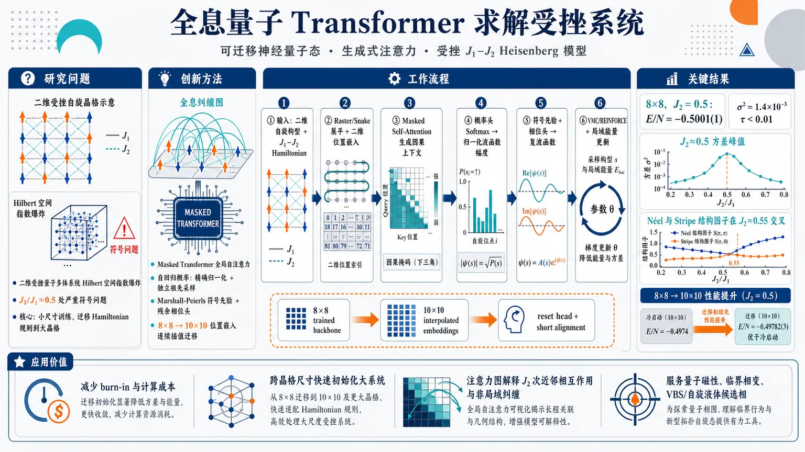
研究问题二维受挫量子多体系统的 Hilbert 空间随格点数指数爆炸，且 J₁–J₂ Heisenberg 模型在 J₂/J₁≈0.5 附近存在严重符号问题；传统 QMC、DMRG/PEPS 和多数神经量子态难以同时做到高精度、低自相关采样和跨晶格尺寸迁移。核心问题是：如何让一个在小尺寸晶格上训练的模型学习可迁移的 Hamiltonian 规则，并快速投影到更大受挫系统。创新方法提出 Holographic Quantum Transformer：用 masked Transformer 全局自注意力直接连接二维晶格中的远距自旋，将注意力矩阵解释为“全息纠缠图”；用自回归条件概率保证波函数精确归一化和独立祖先采样；用 Marshall-Peierls 符号先验加残余相位头缓解受挫符号学习；Aha 点是 Holographic Transfer：把 8×8 学到的二维位置嵌入连续插值到 10×10，并重置输出头、保留注意力 backbone，实现跨指数级 Hilbert 空间的快速尺寸外推。工作流程输入二维方格自旋构型与 J₁–J₂ Hamiltonian；将自旋按 raster/snake 路径展平成序列，同时叠加二维位置嵌入保留晶格坐标；masked self-attention 生成因果条件上下文并形成可视化的纠缠注意力图；概率头输出每个自旋的条件分布，softmax 串联成精确归一化波函数幅度；Marshall 符号先验与残余相位头组成复波函数；祖先采样产生近独立样本，VMC/REINFORCE 用局域能量更新参数；迁移时将 8×8 位置嵌入双线性插值到 10×10，冻结 backbone、重置 head，经过短程 alignment 后输出大晶格基态能量与相结构指标。关键结果在 8×8、J₂=0.5 的强受挫临界点达到 E/N=−0.5001(1)，能量方差 σ²=1.4×10⁻³，自相关时间 τ<0.01；J₂ 扫描显示 J₂≈0.5 处方差峰值，Néel 与 Stripe 结构因子在 J₂≈0.55 附近交叉，反映受挫相竞争；从 8×8 投影到 10×10 后，经快速对齐达到 E/N=−0.49782(3)，优于 HQT 冷启动 −0.4974，并接近或略优于列举的 10×10 变分 SOTA −0.4976921(4)。应用价值该研究提供一种可迁移的神经量子态模拟框架，不再只是为单一晶格尺寸从头训练求解器；它可用小尺寸模型初始化大尺寸受挫量子系统，减少 burn-in 和计算成本，并用注意力图展示 J₂ 次近邻相互作用与非局域纠缠结构。实际意义在于为量子磁性、临界相变、VBS/自旋液体候选相等难采样体系提供高精度、可解释、可扩展的经典模拟工具。第一部分：核心概览
HQT 将 Transformer 全局自注意力、自回归归一化波函数、Marshall 符号先验与 二维连续位置嵌入结合，用于求解二维受挫 J₁–J₂ Heisenberg 模型。核心贡献在于提出 Holographic Transfer：从 8×8 零样本投影到 10×10，经快速对齐达到 E/N = −0.49782(3)。其定位是面向受挫量子多体系统的可迁移神经量子态框架，而不只是单一尺寸的变分求解器。
---
第二部分：结构化快速回顾
《Holographic Quantum Transformer: A Generalist Neuro-Symbolic Architecture for Solving Frustrated Systems via Generative Attention》（None，）
背景
二维受挫量子多体系统受到 指数级 Hilbert 空间复杂度与 符号问题限制。J₁–J₂ Heisenberg 模型在 J₂/J₁≈0.5 附近高度受挫，传统 QMC 受符号问题阻碍，PEPS/DMRG 受纠缠面积律与几何限制影响，既有神经量子态多为尺寸特定求解器。
方法
HQT 使用 自回归概率分解保证波函数精确归一化，以 Transformer masked self-attention 建模非局域纠缠；通过 2D positional embeddings 注入晶格几何，通过 Marshall-Peierls sign rule 提供相位先验，通过 Projection Re-initialization 实现从小尺寸到大尺寸的零样本转移。
结果
在 8×8, J₂=0.5 上达到 E/N = −0.5001(1)，方差 σ² = 1.4×10⁻³，自相关时间 τ<0.01。在 10×10, J₂=0.5 上，8×8 模型投影后经快速对齐达到 E/N = −0.49782(3)，优于自身冷启动 −0.4974，接近或略优于列举的变分 SOTA −0.4976921(4)。
讨论
注意力图被解释为 Holographic Entanglement Map，可自动捕捉与 J₂ 次近邻相互作用几何相关的结构。J₂ 扫描中，能量方差在 J₂=0.5 出现峰值，Néel 与 Stripe 结构因子在 J₂≈0.55 附近交叉，反映受挫临界区的竞争。
局限
精确对照缺失：8×8 无 ED 精确能量，只能通过 6×6 ED ≈ −0.5038 与 10×10 变分结果 −0.4976921(4) 的有限尺寸趋势间接判断。注意力—纠缠关系为定性对应而非严格等式。零样本转移仍包含 50 次 alignment 与之后微调，不是完全无需优化。
结论
HQT 展示了 生成式注意力在受挫量子模拟中的可扩展性：既能作为高精度神经量子态，又能通过几何嵌入和投影重初始化实现跨尺寸迁移，为“可迁移量子模拟器”提供了一个具体架构范式。
---
第三部分：逐章节冷凝解析
Abstract
Grand challenge framing
二维受挫量子物质模拟的核心困难被界定为 sign problem 与 exponential Hilbert space complexity。摘要直接给出问题强度：*"Simulating two-dimensional frustrated quantum matter is a grand challenge due to the sign problem and exponential Hilbert space complexity."* 这将目标系统定位在经典数值方法最困难的区域，而不是普通无受挫自旋模型。
HQT as a physics-inspired generative architecture
HQT 被定义为一种 physics-inspired generative architecture，主要技术支点是 global self-attention，目标是处理 non-local entanglement patterns：*"we introduce the Holographic Quantum Transformer (HQT), a physics-inspired generative architecture that leverages global self-attention to resolve non-local entanglement patterns."* 关键差异在于不依赖局域卷积感受野，而让每个格点可通过注意力访问全局上下文。
Primary benchmark on 8×8 J₁–J₂ model
验证对象是 square lattice J₁–J₂ Heisenberg model。在高度受挫的 8×8 晶格、量子临界点 J₂=0.5 上，HQT 达到 E/N = −0.5001(1)：*"On the heavily frustrated 8×8 lattice at the quantum critical point (J₂=0.5), HQT reaches a ground-state energy per site (E/N) of −0.5001(1)."* 该数值被解释为与有限尺寸缩放趋势一致：*"consistent with the expected finite-size scaling trend."*
Attention maps as intrinsic physical awareness
HQT 不只输出能量，还通过注意力图恢复物理相互作用结构。摘要称其具有 intrinsic physical awareness：*"HQT exhibits intrinsic physical awareness, autonomously recovering the underlying J₂ interaction geometry through interpretable attention maps."* 这表明注意力权重被用作模型内部物理表征的可解释证据。
Holographic Transfer as central contribution
中心贡献是 Holographic Transfer，即从 8×8 训练模型直接投影到 10×10，使用 continuous positional-embedding interpolation 与 head re-initialization：*"Our central contribution is ‘Holographic Transfer’, a zero-shot size-extrapolation protocol with rapid alignment: a model trained on 8×8 systems is directly projected onto larger 10×10 lattices via continuous positional-embedding interpolation and head re-initialization."* 这里的新颖点是跨 Hilbert 空间维度迁移，而非同尺寸微调。
10×10 transfer performance
零样本协议在 10×10 上得到 E/N = −0.49782(3)：*"This zero-shot protocol yields an energy of E/N = −0.49782(3), statistically consistent with the variational state of the art while requiring no from-scratch training on the target lattice."* 其意义在于避免目标尺寸从头训练，同时达到接近 SOTA 的变分精度。
---
1. Introduction
Exponential barrier in quantum simulation
量子多体模拟面临指数维数增长，Hilbert 空间规模为 2ᴺ。引言以 Feynman 的观点开场：*"simulating quantum physics with classical computers faces an exponential barrier: the Hilbert space dimension grows as 2ᴺ."* 这说明即使每个格点只有自旋 1/2，自由度也随格点数指数爆炸。
Classical algorithms remain central despite quantum hardware progress
尽管量子硬件在误差缓解方面进展明显，实际多体问题的可验证优势仍有限：*"While quantum hardware has made strides in error mitigation, verifiable advantage on practical many-body problems remains limited."* 因此经典模拟仍被描述为主要发现工具：*"classical simulation algorithms continue to serve as the primary engine for discovery."*
Limitations of tensor networks and QMC
二维受挫体系对传统方法构成双重挑战。PEPS/DMRG 受面积律纠缠约束，常限于窄柱几何：*"Tensor Network methods like PEPS and DMRG are constrained by the Area Law of entanglement, limiting simulations to narrow cylinders."* QMC 在受挫区域因符号问题失效：*"Quantum Monte Carlo (QMC), the workhorse for unfrustrated systems, hits a hard wall in frustrated regimes."* 符号问题的一般求解被指出为 NP-hard：*"solving the generic sign problem is NP-Hard."*
NQS lineage from RBM to CNN/RNN
神经量子态由 RBM 开启代表性路线：*"Carleo and Troyer pioneered Neural Quantum States (NQS) using Restricted Boltzmann Machines (RBMs)."* CNN 利用局域相关：*"Early NQS architectures, such as Convolutional Neural Networks (CNNs), exploited local correlations."* 但 CNN 被指出难以捕捉全局拓扑序：*"CNNs struggle to capture global topological order due to limited receptive fields."* RNN 和自回归模型解决采样瓶颈，但 RNN 在二维格点上引入一维偏置：*"RNNs impose an artificial 1D bias on 2D lattices."*
Transformers as global architectures for frustrated states
Transformer 被定位为适合受挫态的全局架构：*"the Transformer architecture has emerged as a powerful tool."* 既有工作显示注意力机制能处理受挫态：*"attention mechanisms can resolve frustrated states."* 但主要缺陷是 instance-specific，小尺寸训练模型不能泛化到大尺寸：*"most existing approaches are ‘instance-specific’: a model trained on a small lattice cannot generalize to larger ones."*
Missing framework for zero-shot size extrapolation
已有 transfer learning、scaling laws、sample complexity 研究，但缺少统一的跨尺寸零样本框架：*"a unified framework for Zero-Shot Size Extrapolation with Rapid Alignment is missing."* 这直接导向 HQT 的研究空缺：模型不仅要拟合一个有限系统，还要学习 Hamiltonian 的可迁移规则。
Holographic Encoding contribution
HQT 的第一项贡献是将自注意力矩阵解释为 Holographic Entanglement Map：*"we explicitly interpret the self-attention matrix as a Holographic Entanglement Map, capturing long-range correlations that define topological order."* 这把 Transformer 注意力与纠缠重整化/全息直觉联系起来。
Generative Autoregression contribution
第二项贡献是 autoregressive sampling scheme，声称可保证精确归一化与零自相关：*"We implement an autoregressive sampling scheme that guarantees exact normalization and zero autocorrelation."* 其目标是克服传统 MCMC 的采样限制，并更有效探索 Hilbert 空间：*"overcoming the sampling limitations of traditional MCMC and enabling efficient exploration of the Hilbert space."*
Geometric Deep Learning contribution
第三项贡献是将全局注意力与 continuous positional embeddings 结合，优于 CNN 局域感受野：*"global attention, when augmented with our continuous positional embeddings, outperforms the local receptive fields of CNNs in capturing topological defects."* 这使 HQT 被定位为网格流形上的 geometric deep learning framework。
Sign problem mitigation claim
第四项贡献是通过几何归纳偏置缓解受挫能量景观困难：*"By injecting geometric inductive biases, we effectively navigate the rugged energy landscape of the J₁−J₂ model at the highly frustrated point."* 但措辞是 effectively mitigating，不是数学意义上解决 NP-hard 符号问题。
Projection Re-initialization contribution
第五项贡献是 Projection Re-initialization 转移协议：*"we introduce a ‘Projection Re-initialization’ transfer protocol."* 目标是学习 Hamiltonian 的通用语法并迁移到大系统：*"learn the universal syntax of the Hamiltonian on small lattices and generalize to large-scale systems without retraining."*
Contrast with PQC and sequence NQS
HQT 明确处于经典 NQS 域，而非量子硬件上的 PQC：*"Unlike methods like FLIP that target Parametrized Quantum Circuits (PQCs) on actual quantum hardware, HQT operates in the classical Neural Quantum States (NQS) domain."* 与一维展平序列 NQS 不同，核心新意在 Holographic Mapping：*"our core novelty lies in the Holographic Mapping."* 关键操作是注入 2D Positional Embeddings 与 Marshall Sign Rule：*"By explicitly injecting 2D Positional Embeddings and the Marshall Sign Rule, we enable a true ‘Projection Re-initialization’ size-extrapolation protocol across different Hilbert space dimensions."*
---
2. Methodology: The Holographic Quantum Transformer
Ground-state search as variational optimization
HQT 将 Heisenberg 基态搜索重写为复值概率流形上的变分优化：*"We reformulate the ground-state search of the Heisenberg Hamiltonian as a variational optimization problem over a high-dimensional complex-valued probability manifold."* 核心设计是 normalized-by-design，即架构层面保证归一化，而不是通过 partition function 或 MCMC 估计。
---
2.1. Problem Formulation: Quantum States as Autoregressive Generative Models
J₁–J₂ Heisenberg Hamiltonian definition
目标 Hamiltonian 为二维方格上的反铁磁 J₁–J₂ Heisenberg model：
[
hat H = J₁ sumłₐₙgₗₑ ᵢ,ⱼåₙgₗₑhatmathbf Sᵢḑot hatmathbf Sⱼ
+ J₂ sumłₐₙgₗₑłₐₙgₗₑ ᵢ,ⱼåₙgₗₑåₙgₗₑhatmathbf Sᵢḑot hatmathbf Sⱼ.
]
文本定义：*"We focus on the two-dimensional antiferromagnetic J₁−J₂ Heisenberg model on a square lattice Λ of N sites."* 其中 J₁ 是最近邻耦合，J₂ 是次近邻耦合。
Hilbert space exponential scaling
自旋 1/2 系统 Hilbert 空间维数为 2ᴺ，当 N>40 时精确对角化不可行：*"The Hilbert space H has a dimension of 2ᴺ, which grows exponentially with system size N, rendering exact diagonalization infeasible for N>40."* 这解释了为何 8×8, N=64 已超出常规 ED 能力。
Variational energy objective
目标基态为最小化能量泛函：
[
E[Ψ]=fracłangleΨ|hat H|ΨånglełangleΨ|Ψångle.
]
原文表述为：*"Our goal is to find the ground state wavefunction |ΨGS⟩ that minimizes the energy functional E[Ψ]."* 这是所有 VMC/NQS 方法的共同变分基础。
Complex-valued neural wavefunction
波函数在计算基 (x=(x₁,dots,x_N)) 中展开，(xᵢᵢₙ+1,-1)：*"We express the wavefunction in the computational basis x=(x₁,…,xN), where xi∈+1,−1."* 神经网络参数化复振幅：*"ψθ(x)∈C is a complex-valued amplitude parameterized by a neural network with weights θ."*
---
2.1.2. Autoregressive Decomposition and The Sign Structure
Avoiding intractable partition function
传统 NQS 常将波函数幅度建模为未归一化势函数，需要估计不可处理的 partition function：*"Traditional Neural Quantum States (NQS) typically model the wavefunction amplitude as an unnormalized potential ψ(x)∝e−E(x), which necessitates estimating an intractable partition function Z."* HQT 通过自回归分解避免这一点。
Autoregressive probability factorization
联合概率被分解为条件概率连乘：
[
P_θ(x)=prodᵢ₌₁NP_θ(xᵢ|x₁,dots,xᵢ₋₁).
]
原文为：*"we factorize the joint probability Pθ(x)=|ψθ(x)|² autoregressively."* 这使每一步只需预测局部自旋条件分布。
Raster or snake ordering
二维格点被按 raster scan 或 snake path 展平成序列：*"The ordering 1,…,N follows a raster scan (or snake) path over the 2D lattice."* 同时依赖 Transformer 注意力保留局域结构：*"flattening the spatial structure into a sequence while preserving locality via the Transformer’s attention mechanism."*
Hybrid sign decomposition
复振幅分解为概率幅、Marshall 符号与残余相位：
[
ψ_θ(x)=sqrtP_θ(x)× sgn_M(x)× eⁱφ_θ⁽x⁾.
]
原文说明：*"we inject physical inductive bias into the architecture."* 其中 Marshall-Peierls sign rule 是经典反铁磁先验：*"sgnM(x) represents the Marshall-Peierls sign rule (a classical antiferromagnetic prior)."* 神经网络只学习受挫诱导的残余修正：*"ϕθ(x)∈R is a residual phase correction learned by the neural network."*
Marshall prior stabilizes frustrated learning
该混合策略结合物理先验和深度网络表达能力：*"This hybrid approach allows the HQT to leverage classical physical intuition while utilizing the expressive power of deep learning to capture non-trivial quantum corrections induced by frustration (J₂>0)."* 关键是不用从零学习整个符号结构，而是学习偏离 Marshall 规则的部分。
---
2.1.3. Mathematical Proof of Exact Normalization
Normalization conservation theorem
定理表明，只要每个局部条件分布归一化，全局波函数就精确归一化：*"If the local conditional distributions are normalized ... then the global wavefunction is exactly normalized."* 形式条件为：
[
sumₓᵢᵢₙₚ̆ₐᵣᵣₒw,dₒwₙₐᵣᵣₒwP_θ(xᵢ|x<ᵢ)=1,
quad
łangleΨ_θ|Ψ_θångle=1.
]
Recursive summation proof
证明通过从 (x_N) 向前递归求和，逐层利用条件分布归一性：*"We verify the normalization condition by summing over all 2ᴺ configurations."* 关键步骤为：*"[∑xN P(xN|x<N)] = 1"*，最终得到：*"=⋯=1."*
Exact ancestral sampling
归一化设计意味着无需 MCMC 链估计 partition function：*"eliminating the need for Markov Chain Monte Carlo (MCMC) chains to approximate a partition function."* 采样可通过祖先采样完成：*"exact, perfect sampling via ancestral sampling."*
Zero autocorrelation claim
自回归生成被声明为独立同分布样本，理论上 τ=0：*"our autoregressive generation produces independent and identically distributed (i.i.d.) samples, theoretically guaranteeing τ=0."* 文中定义集成自相关时间为：
[
τ=1+2sumₜ₌₁ⁱⁿftyh̊o(t).
]
需要注意：在该定义下，若所有滞后相关 (h̊o(t)=0)，则 (τ=1)，而非 0；文本同时使用 τ=0 和实验 τ<0.01，存在约定或表述不一致。
Effective sample size advantage
由于样本被视为 i.i.d.，有效样本数接近总样本数：*"which ensures maximum effective sample size (Neff≈Ntotal)."* 这构成 HQT 相比局域 MCMC 的采样效率优势。
---
2.2. Architecture: The Holographic Entanglement Encoder
Architecture chosen for non-local quantum correlations
HQT 的表达能力来自 Self-Attention，用于直接建模非局域量子相关：*"our architecture leverages the Self-Attention mechanism to model non-local quantum correlations directly."* 对比对象包括 CNN 与 RNN：*"Unlike Convolutional Neural Networks (CNNs), which are limited by local receptive fields, or Recurrent Neural Networks (RNNs), which suffer from vanishing gradients over long sequences."*
---
2.2.1. Input Representation and Geometric Inductive Bias
Spin input embedding
输入为历史自旋序列 (x<ᵢ)。离散自旋 (xₖᵢₙ±1) 通过可学习线性投影映射到连续向量空间：*"we first map them to a continuous high-dimensional vector space via a learnable linear projection We∈Rdmodel×¹."*
2D positional embeddings inject lattice geometry
标准 Transformer 对置换不敏感，缺乏二维晶格结构意识：*"A standard Transformer is permutation-invariant and oblivious to the 2D lattice structure."* HQT 引入二维可学习位置嵌入：
[
hₖ⁽⁰⁾=Wₑ xₖ₊PE(rₓ⁽k⁾,r_y⁽k⁾).
]
原文强调：*"To inject this physical inductive bias, we introduce 2D learnable Positional Embeddings."*
Spatial distance awareness
位置嵌入使网络知道自旋间空间距离：*"This ensures that the network is aware of the spatial distance |ri−rj| between spins."* 这被认为对学习纠缠熵面积律必要：*"which is essential for learning the Area Law of entanglement entropy."*
---
2.2.2. Holographic Attention as an Entanglement Map
Self-attention reinterpreted as holographic entanglement encoder
核心创新是将注意力机制解释为量子纠缠的全息编码器：*"The core innovation of HQT lies in reinterpreting the Self-Attention mechanism as a holographic encoder of quantum entanglement."* 注意力分数为：
[
Aᵢⱼ=Softmaxłeft(frac{(mathbf W_Qmathbf hᵢ₎₍mathbf W_Kmathbf hⱼ₎^T}sqrtdₖi̊ght)ḑot Mᵢⱼ.
]
Causal mask enforces autoregression
因果 mask 定义为 (j<i) 可见，(jge i) 屏蔽：*"Mij is the Causal Mask."* 其作用是阻止未来自旋信息泄露：*"preventing information leakage from future spins."* 这保证自回归分解与精确归一化：*"thereby preserving the exact normalization property proved in Theorem 1."*
Attention as qualitative correlation map
注意力矩阵被解释为 Holographic Entanglement Map：*"We posit that the learned attention matrix Aij acts as a Holographic Entanglement Map."* 在受挫系统中，相关性不严格局域：*"quantum correlations are not strictly local but exhibit long-range order."* 注意力允许格点 (i) 关注任意历史格点 (j)：*"regardless of their Euclidean distance."*
Empirical relation to spin correlations
聚合注意力权重被观察到定性追踪自旋相关结构：
[
łanglehatmathbf Sᵢḑothatmathbf Sⱼångle
sim sumₗ₌₁Lsumₕ₌₁HAᵢⱼ⁽l,h⁾.
]
措辞明确是定性而非精确测量：*"provides a holographic, graph-based view of the many-body correlations rather than an exact quantitative measure."*
---
2.2.3. Complex-Valued Policy Heads
Conditional wavefunction context
经过 (L) 层 masked attention 与 FFN 后，最终隐藏状态编码条件波函数上下文：*"the final hidden state hi(L) encodes the conditional wavefunction context."*
Spin-1/2 conditional logits
对于离散自旋 1/2 基，网络输出两个局部自旋状态的 logits：
[
oᵢ₌Dense(mathbf hᵢ⁽L⁾)inmathbb R².
]
原文为：*"the network outputs the conditional logits for the local spin state xi∈↑,↓."*
Softmax conditional probability
局部条件概率由 softmax 得到：
[
P_θ(xᵢ₌σ|x<ᵢ)=
fraceoᵢ,σeoᵢ,ₚ̆ₐᵣᵣₒw+eoᵢ,dₒwₙₐᵣᵣₒw.
]
这确保每一步局部归一化，从而支撑全局精确归一化。
Residual phase head
相位通过类似 head 预测残余相位：*"For the phase ϕθ, a similar head predicts the relative phase shift."* 由于 Marshall 规则已作为乘法先验，模型只需学习残余相位：*"the network only needs to learn the residual phase corrections, significantly stabilizing training in the frustrated regime."*
---
2.3. Optimization and Zero-Shot Transfer Protocol
Physics and reinforcement learning unification
优化部分将 VMC 与 reinforcement learning 统一：*"We unify concepts from quantum physics (Variational Monte Carlo) and machine learning (Reinforcement Learning) to achieve stable convergence."* 之后引入跨尺寸泛化的 transfer protocol：*"followed by a novel transfer learning protocol for size generalization."*
---
2.3.1. Data-Free Optimization via VMC vs. MCMC
VMC as data-free self-play
VMC 被表述为无外部数据的自博弈强化学习范式：*"solving via Variational Monte Carlo (VMC) is a data-free, self-play reinforcement learning paradigm."* 训练不依赖监督数据集：*"There is no external training dataset used for supervision."*
Model generates samples on-the-fly
模型自回归即时生成自旋构型：*"the model autoregressively generates its own spin configurations x on-the-fly."* 优化信号来自 Hamiltonian 期望值：*"strictly driven by evaluating the physical expectation value of the Hamiltonian."*
REINFORCE as physical environment update
REINFORCE 被用作参数更新机制，Hamiltonian 评价相当于环境反馈：*"via the REINFORCE algorithm, which effectively acts as the physical ‘environment’ guiding the network’s parameter updates."*
MCMC bottleneck in frustrated systems
传统 VMC 依赖 Metropolis-Hastings。受挫点 J₂≈0.5J₁ 的概率景观崎岖且多模态：*"the probability landscape becomes rugged with separated modes."* 局域 MCMC 链出现高自相关与 mode collapse：*"causing MCMC chains to suffer from high autocorrelation times (τ≫1) and mode collapse."*
Ancestral sampling generates i.i.d. configurations
HQT 通过条件概率逐步生成样本：
[
xᵢ⁽k⁾sim P_θ(xᵢ|x₁⁽k⁾,dots,xᵢ₋₁⁽k⁾),quad i=1dots N.
]
原文称：*"we can generate independent and identically distributed (i.i.d.) samples via ancestral sampling."*
Computational complexity and GPU parallelization
每个样本有 O(N) 顺序步骤，但 GPU 上可并行生成批量样本：*"This procedure has a computational O(N) sequential steps per sample but guarantees zero autocorrelation (τ=0) and perfect parallelization on GPUs."* 其优势是探索局域 MCMC 动态难以到达的拓扑扇区：*"explore distinct topological sectors of the Hilbert space that are dynamically inaccessible to local MCMC updates."*
---
2.3.2. Optimization via Policy Gradients
Wavefunction probability as policy
在 RL 语言中，(|ψ_θ|²) 是策略 (π_θ(x))：*"the wavefunction |ψθ|² acts as the Policy πθ(x)."* 负局域能量是奖励：*"the negative local energy −Eloc(x) serves as the Reward."*
Energy gradient estimator
能量梯度为：
[
nabla_θ E=
2mathbb Eₘₐₜₕbf ₓₛᵢₘ P_θ
łeft[
Re{(Eₘ̊ ₗₒc(mathbf x)-bar E)
nabla_θłogψ_θ(mathbf x)^*}
i̊ght].
]
其中 (bar E) 是 moving average baseline：*"where Ē is the moving average of the energy (baseline)."*
Local energy sparse computation
局域能量定义为：
[
Eₗₒc(mathbf x)=
sumₘₐₜₕbf ₓ'łanglemathbf x|hat H|mathbf x'ångle
fracψ_θ(mathbf x')ψ_θ(mathbf x).
]
由于 Hamiltonian 只连接多项式数量的构型，计算可用稀疏矩阵—向量乘法：*"is efficiently computed via sparse matrix-vector multiplication, as the Hamiltonian connects only a polynomial number of configurations."*
Unbiased REINFORCE equivalence
score function 通过 Transformer 反向传播得到：*"The Score Function ∇θ log ψθ(x) is obtained via standard backpropagation through the Transformer."* 该形式等价于带 baseline 的 REINFORCE：*"mathematically equivalent to the REINFORCE algorithm with a baseline."* 并声称即使有符号问题仍保持无偏：*"ensuring unbiased gradient estimation even in the presence of the sign problem."*
---
2.4. Holographic Transfer Learning Framework
Instance-specific solvers vs physics learner
DMRG/QMC 等方法被描述为尺寸特定求解器：*"Standard numerical methods, such as Density Matrix Renormalization Group (DMRG) or Quantum Monte Carlo (QMC), function as ‘instance-specific solvers’."* 因维度不匹配，N 位点波函数不能直接用于 N+M 位点：*"a wavefunction optimized for an N-site lattice is mathematically incompatible with an (N+M)-site lattice due to dimension mismatch."*
HQT learns Hamiltonian syntax
HQT 被定位为 physics learner，学习局域 Hamiltonian 的通用语法：*"It learns the universal syntax of the local Hamiltonian rather than memorizing the specific ground state of a finite system."* 这构成零样本尺寸泛化的理论假设基础。
---
2.4.1. Hypothesis: Learning the Hamiltonian Syntax
Local interaction rules invariant under scaling
J₁–J₂ Hamiltonian 由最近邻与次近邻局域耦合规则定义，这些规则在晶格尺寸扩展下不变：*"The J₁−J₂ Heisenberg Hamiltonian is defined by local interaction rules ... that are invariant under lattice scaling."*
Attention weights encode interaction rules
小晶格训练后的 Transformer 被假设将相互作用规则编码在 (mathbf W_Q,mathbf W_K,mathbf W_V) 中：*"a Transformer trained on a small lattice L1×L1 encodes these interaction rules into its attention weights WQ, WK, WV."*
Backbone transfer as quantum brain transfer
由于 self-attention 可作用于任意大小集合，内部表征被认为捕获相的体性质：*"the learned internal representations ... capture the bulk properties of the quantum phase."* 例如符号结构与关联长度：*"e.g., the sign structure and correlation decay length."* 这允许转移“quantum brain”：*"transfer the ‘quantum brain’ of the network to larger systems L2×L2 without retraining the backbone."*
---
2.4.2. Manifold Interpolation via Continuous Positional Embeddings
Positional embedding dimension mismatch
跨尺寸迁移的技术障碍是位置嵌入维度不匹配：*"A technical challenge in transfer learning is the dimension mismatch of the positional embeddings (PE)."*
Learned PEs as samples from continuous manifold
源尺寸离散 PE 被视作连续几何流形上的采样：*"we treat the learned PEs as samples from a continuous underlying geometric manifold Mpos."* 这将位置嵌入从固定表格转化为可插值几何对象。
Bilinear interpolation strategy
目标尺寸 PE 通过双线性插值得到：
[
PE⁽L₂₎
=
mathcal Ibᵢₗᵢₙₑₐᵣ
(PE⁽L₁₎,scale=L₂/L₁₎.
]
原文为：*"We employ a bilinear interpolation strategy to map the latent geometric structure from the source domain to the target domain."*
Stretching learned geometric prior
该操作被解释为拉伸已学习几何先验：*"This operation effectively ‘stretches’ the learned geometric prior."* 它保留自旋间相对距离关系：*"it preserves the relative distance relationships between spins."* 因而可在扩展 Hilbert 空间中实例化面积律结构：*"ensuring that the Area Law of entanglement ... is correctly instantiated in the expanded Hilbert space."*
---
2.4.3. The “Projection Re-initialization” Protocol (Head Reset)
Policy head overfits finite-size boundary effects
Transformer backbone 捕获普适物理规律，但最终投影层容易过拟合小晶格边界条件与有限尺寸效应：*"the final projection layer ... is often overfitted to the specific boundary conditions ... and finite-size effects of the small lattice."* 直接迁移到大尺寸会导致高能畴壁：*"Direct application to L2 typically results in high-energy domain walls due to this ‘boundary bias’."*
Freeze backbone
协议第一步冻结注意力与 FFN 参数：*"Freeze Backbone: The parameters of the attention and feed-forward layers are frozen."* 作用是保留已学习的量子相关：*"preserving the learned quantum correlations."*
Reset head
第二步将最终输出层权重用近零高斯噪声重初始化：
[
mathbf Wₕₑₐdsim mathcal N(0,ϵ),quad ϵłl1.
]
原文为：*"Reset Head: The weights of the final output layer Whead are re-initialized with near-zero Gaussian noise N(0,ϵ)."*
Rapid fine-tuning
第三步在目标尺寸上快速微调：*"Rapid Fine-tuning: The model is fine-tuned on the L2 lattice."* 由于“语法”已知，只需重校准新 Hilbert 空间的概率幅：*"the network only needs to re-calibrate the probability amplitudes (the ‘vocabulary’) for the new Hilbert space dimension."*
Bypassing burn-in
该协议被称为可大幅减少大系统收敛时间：*"reduces the convergence time on large-scale systems by orders of magnitude compared to training from scratch."* 目标是绕过优化 burn-in：*"effectively bypassing the ‘burn-in’ phase of optimization."*
---
3. Experiments and Results
Three empirical hypotheses
实验验证三个问题。第一是精度极限：*"Can HQT surpass existing neural network architectures (CNNs, RNNs) and approach the ground-truth accuracy of traditional numerical methods?"* 第二是物理解释：*"Can the model autonomously detect quantum phase transitions without prior knowledge of order parameters?"* 第三是全息泛化：*"Can the entanglement structure learned from small systems be holographically transferred to larger lattices to achieve Zero-Shot Size Extrapolation with Rapid Alignment and robustness?"*
---
3.1. Experimental Setup
Hardware and software
所有实验使用单张 NVIDIA RTX 5070 Ti GPU：*"All experiments were conducted on a workstation equipped with a single NVIDIA RTX 5070 Ti GPU."* 框架使用 JAX 与 NetKet：*"The framework is implemented using JAX and NetKet."*
Hamiltonian and parameter range
实验 Hamiltonian 为方格 J₁–J₂ Heisenberg 模型，设定 J₁=1.0，扫描 J₂∈[0.0,0.8]：*"we set J1=1.0 and explore the frustration parameter J2∈[0.0,0.8]."*
Critical regime
最困难区域位于 J₂≈0.5：*"The most challenging regime lies at J2≈0.5."* 此处系统从 Néel antiferromagnetic order 转向 paramagnetic VBS 或 gapless spin liquid：*"the system undergoes a quantum phase transition from the Néel antiferromagnetic order to a paramagnetic valence bond solid (VBS) or gapless spin liquid phase."*
---
3.2. Benchmark: Achieving Highly Competitive Accuracy
8×8 maximum-frustration benchmark
HQT 首先在 8×8, N=64, J₂=0.5 上测试：*"We first benchmark HQT on an 8×8 lattice (N=64) at the maximally frustrated point (J2=0.5)."* 该区域被称为符号问题严重，因此多数序列 NQS 避开：*"most recent sequence-based NQS models avoid this regime due to the severe sign problem."*
Marshall rule exactness caveat
Marshall-Peierls 规则严格只对无受挫 J₁ 模型精确：*"the Marshall-Peierls sign rule is strictly exact only for the unfrustrated J1 model."* 但在受挫区域作为 gauge prior 仍可加速早期优化：*"employing it as an initial gauge prior in the frustrated regime still significantly accelerates early-stage optimization."*
No exact 8×8 ED benchmark
由于 ED 只到 N≤40，8×8 torus 无精确值：*"Exact diagonalization is feasible only up to N=40 ... so no exact value exists for the 8×8 torus."* 因此 8×8 结果通过有限尺寸趋势验证：*"the 8×8 entry is therefore bracketed by the exact 6×6 result and the best variational 10×10 energy."*
Energy comparison table
关键数值如下：
- 6×6 ED exact：约 −0.5038，*"Exact, N=36"*。
- 8×8 HQT：−0.5001(1)，*"τ<0.01, σ²=1.4×10⁻³"*。
- 10×10 MinSR ResNet：−0.4976921(4)，*"Variational SOTA"*。
HQT 的 8×8 能量被描述为：*"consistent with this finite-size trend."*
Finite-size trend validation
能量每站点随尺寸增大趋向不那么负：*"the ground-state energy per site (E/N) naturally becomes less negative as the system size increases toward the thermodynamic limit."* HQT 的 −0.5001(1) 位于 6×6 −0.5038 与 10×10 −0.4976921(4) 之间，因而被视为物理合理。
Sampling efficiency
HQT 自回归结构产生近似零自相关样本：*"Our autoregressive architecture generates strictly independent samples (τ<0.01, effectively zero)."* 有效样本数约等于总样本数：*"the effective sample size equals the total number of samples (Neff≈Nsamples)."* 能量方差为 σ²E/N=1.4×10⁻³：*"resulting in a highly competitive energy variance of σ²E/N=1.4×10⁻³."*
---
3.3. Physical Insights and Phase Landscape
Fine-grained J₂ scan
HQT 对 J₂=0.0 到 0.8 进行了参数扫描：*"We performed a fine-grained parameter scan of J2 from 0.0 to 0.8."* 目的不是仅获得单点能量，而是测试优化轨迹是否反映波函数拓扑：*"a valid physical model’s optimization trajectory often reflects the underlying wavefunction’s topology."*
Variance peak as landscape indicator
能量方差在 J₂≈0.5 出现相对峰值：*"We observe a relative peak in variance at J2≈0.5."* 表 2 显示 σ²E/N=0.0034，而 gapped phases 中约为 10⁻⁴：*"the variance rises to σ²E/N=0.0034 at this point, compared to ∼10⁻⁴ in the gapped phases."* 方差峰不被当作严格物理序参量，而是优化景观粗糙性的启发式指标：*"rather than serving as a direct physical order parameter, a relative peak in variance acts as a heuristic indicator."*
Order parameter crossing
结构因子包括 S(π,π) 的 Néel 序与 S(π,0) 的 Stripe 序：*"we measured the structure factors S(π,π) (Néel order) and S(π,0) (Stripe order)."* 对 J₂<0.5，Néel 序占优：*"For J2<0.5, the Néel order (Blue) dominates."* 在 J₂≈0.55 观察到交叉：*"At J2≈0.55, we observe a clear crossing point where the Néel order diminishes and the Stripe order begins to rise."*
Phase scan table values
8×8 扫描数值：
- J₂=0.00：E/N −0.6735，σ² 0.0005，Néel 20.05，Stripe 3.18，Phase Néel。
- J₂=0.20：E/N −0.6052，σ² 0.0008，Néel 8.59，Stripe 4.27，Phase Néel。
- J₂=0.40：E/N −0.5351，σ² 0.0012，Néel 6.38，Stripe 4.92，Phase Néel。
- J₂=0.45：E/N −0.5180，σ² 0.0015，Néel 6.29，Stripe 4.94，Phase Néel。
- J₂=0.50：E/N −0.5001，σ² 0.0034，Néel 6.14，Stripe 5.58，Phase Critical。
- J₂=0.55：E/N −0.5053，σ² 0.0012，Néel 5.25，Stripe 5.19，Phase VBS。
- J₂=0.60：E/N −0.5155，σ² 0.0010，Néel 5.41，Stripe 5.50，Phase VBS。
- J₂=0.80：E/N −0.5852，σ² 0.0009，Néel 4.30，Stripe 6.12，Phase Stripe。
表注提醒该粗扫描样本少于高精度 benchmark：*"This coarse phase scan uses fewer samples per point than the high-precision benchmark."* 因此只有 J₂=0.5 的相对方差峰被强调为物理有意义：*"only the relative variance spike at J2=0.5 is physically meaningful."*
---
3.4. Zero-Shot Size Extrapolation with Rapid Alignment
Transfer from 8×8 to 10×10
核心实验检验 8×8, N=64 学到的 Hamiltonian syntax 能否迁移到 10×10, N=100：*"whether the Hamiltonian syntax learned on a heavily frustrated system (8×8,N=64) can be transferred to a larger, more complex system (10×10,N=100) without training from scratch."*
Cold start versus holographic transfer
10×10, J₂=0.5 上比较两种策略：*"Cold Start (Blue): Standard training with random initialization."* 与 *"Holographic Transfer (Red): Initializing with the projected parameters from the 8×8 model."*
Warm start advantage
迁移模型在前 50 iterations alignment phase 快速进入低能流形：*"During the Alignment Phase (first 50 iterations), it rapidly locks into a low-energy manifold."* 冷启动需要更多探索：*"the Cold Start baseline requires substantially more exploration before reaching a comparable regime."*
Hilbert space explosion
从 8×8 到 10×10，状态空间从 1.8×10¹⁹ 增至 1.27×10³⁰：*"moving from an 8×8 to a 10×10 lattice expands the state space from 1.8×10¹⁹ to 1.27×10³⁰ configurations."* 这凸显跨尺寸迁移并非普通参数微调，而是跨指数级空间扩展。
10×10 benchmark table
10×10, J₂/J₁=0.5, PBC 下列举结果：
- Deep CNN / Group CNN：−0.49516(1)，Marshall prior。
- DMRG：−0.495530，tensor network。
- HQT Cold Start：−0.4974，random initialization。
- VMC Gutzwiller + 2 Lanczos：−0.4975490(2)。
- RBM + Pair Product：−0.497629(1)。
- Transformer / Deep ViT：−0.497676。
- MinSR Deep ResNet：−0.4976921(4)，*"Best from-scratch"*。
- HQT Transfer：−0.49782(3)，*"Zero-shot transfer, SOTA-level"*。
Transfer performance claim
迁移后经短暂 rapid-alignment 达到 E/N=−0.49782(3)：*"A brief rapid-alignment stage ... then converges to E/N=−0.49782(3), without any from-scratch training on the target lattice."* 该结果优于 HQT 冷启动 −0.4974：*"improves clearly over our own Cold Start baseline (−0.4974)."*
Comparison to from-scratch SOTA
HQT transfer 与 Chen & Heyl 2024 的 −0.4976921(4) 相差约 10⁻⁴：*"differing by ∼10⁻⁴ in E/N."* 表中 HQT transfer 更负，但文本谨慎表述为 comparable：*"We do not claim a strict numerical advantage."* 这很重要，因为不同优化预算、误差估计和方差水平可能影响变分能量可比性。
---
第四部分：深度理解与语言支持
1. 术语解析
Frustrated systems
Frustrated systems 指局域相互作用之间互相冲突，无法同时最小化所有键能的系统。J₁–J₂ 模型中，J₁ 最近邻反铁磁倾向 Néel 排列，而 J₂ 次近邻反铁磁在方格对角线上引入竞争，导致 J₂≈0.5 附近出现强受挫。这里的 “frustrated” 不是优化失败，而是物理相互作用本身不相容。
Sign problem
Sign problem 是量子 Monte Carlo 中路径或构型权重出现正负/复相位抵消，导致采样方差指数增长的问题。语境中，J₁–J₂ 受挫模型因非平庸符号结构难以用正概率分布采样。HQT 不是数学上解决通用 sign problem，而是通过 Marshall sign prior + residual phase learning 在目标模型上缓解学习难度。
Normalized-by-design
Normalized-by-design 表示模型结构天然保证归一化，而非训练后通过额外归一化常数修正。自回归分解中每个条件概率经 softmax 归一，因此联合概率自动归一。这个术语强调架构约束，而非经验性质。
Zero-shot size extrapolation
Zero-shot size extrapolation 指模型从源尺寸训练后，无需目标尺寸从头训练即可迁移到更大尺寸。这里的 “zero-shot” 并不等于完全不优化；文本中还包含 rapid alignment 和 head reset。因此更准确理解是“不从随机初始化开始、不完整重训 backbone”。
Holographic Entanglement Map
Holographic Entanglement Map 是将 self-attention 权重解释为多体纠缠/相关性的图结构表示。这里 “holographic” 借用纠缠重整化与全息思想，表示局域自由度之间的非局域相关可由注意力矩阵编码。文本明确说明它不是严格定量的 (łangle Sᵢḑot Sⱼångle)，而是 qualitative graph-based view。
---
2. 疑难查证与概念澄清
为什么自回归可以“精确归一化”？
普通 NQS 常给出一个未归一化振幅 (tildeψ(x))，真正概率为：
[
P(x)=frac|tildeψ(x)|²Z,
quad
Z=sumₓ |tildeψ(x)|².
]
问题是 (x) 有 (2^N) 个，(Z) 难算。自回归模型直接写成：
[
P(x₁,dots,x_N)=P(x₁₎P(x₂|x₁₎ḑots P(x_N|x<N).
]
只要每个条件分布对 (xᵢ₌ₚ̆arrow,downarrow) 求和为 1，全体 (2^N) 个构型求和必然为 1。这是概率链式法则的结构性保证。
为什么注意力可能适合受挫体系？
CNN 的卷积核只能逐层扩大感受野；远距离格点要经过多层传播。受挫体系中的竞争关系可能跨越非局域模式，例如不同子晶格、对角线耦合、拓扑缺陷。Self-attention 允许任意两个位置直接建立权重连接：
[
i i̊ghtarrow j,quad forall j<i.
]
因此它天然适合表达“某个自旋状态依赖远处多个自旋组合”的条件概率。
Marshall sign rule 为什么有用但不充分？
Marshall-Peierls sign rule 对未受挫双分格反铁磁 Heisenberg 模型给出精确符号结构。但加入 (J₂) 后，次近邻耦合连接同一子晶格，破坏简单双分格符号结构。因此 Marshall 规则不能完全解决相位/符号问题。HQT 的策略是把 Marshall 规则作为初始 gauge prior，再让神经网络学习残余相位 (φ_θ(x))。这降低学习难度，但不保证得到精确符号结构。
“τ=0” 与自相关时间定义存在什么问题？
文本定义：
[
τ=1+2sumₜ₌₁ⁱⁿftyh̊o(t).
]
若样本完全独立，则 (h̊o(t)=0)，得到 (τ=1)。但文本称理论保证 τ=0，实验表中写 τ<0.01。这可能源于另一种 convention：只统计额外自相关部分 (2sumₜₕ̊o(t))，而不含基线 1。严格阅读时应认为“零额外自相关”或“近似独立采样”，而非按该公式的 integrated autocorrelation time 等于 0。
“Zero-shot” 是否真的没有训练？
并非完全没有目标尺寸优化。流程包括：
- 8×8 训练；
- 位置嵌入插值到 10×10；
- backbone 冻结、head reset；
- 前 50 iterations alignment；
- Iter 50 后 unfreeze backbone；
- 继续 rapid alignment。
因此准确说法是：没有在 10×10 上从随机初始化完整训练；仍存在目标尺寸对齐与微调。
---
第五部分：创新评估与关联
1. 创新性判断
从“单实例 NQS”转向“可迁移 NQS”
近 2–5 年的神经量子态工作已广泛使用 CNN、RNN、Transformer、ViT、ResNet、RBM+pair product 等架构提高单一尺寸精度。HQT 的主要新颖性不只是更低能量，而是提出跨尺寸迁移机制：8×8 → 10×10，通过 continuous positional embedding interpolation + projection head re-initialization + rapid alignment 复用学到的 Hamiltonian syntax。此前很多 NQS 在每个系统尺寸上都需要从头训练；HQT 试图把模型变成“学习物理规则”的对象。
将二维几何显式注入 Transformer NQS
许多序列 Transformer NQS 将二维晶格展平成一维序列，容易引入 ordering bias。HQT 用 2D positional embeddings 保留晶格坐标，并通过插值支持尺寸扩展。这解决了标准 Transformer 对二维几何不敏感的问题，也为 zero-shot size extrapolation 提供技术基础。
自回归精确归一化与受挫符号先验结合
自回归 NQS 的精确归一化并非全新，但 HQT 将其与 Marshall sign prior、residual phase correction 和 global attention 组合到受挫 J₁–J₂ 临界点。该组合解决了两个痛点：MCMC 采样自相关与受挫体系相位/符号学习困难。
注意力可解释性被用于物理结构恢复
HQT 将注意力图解释为 Holographic Entanglement Map，并声称能恢复 J₂ interaction geometry。相较于只报告变分能量的 NQS，增加了模型内部表征与物理关联结构之间的可解释桥梁。但该解释目前仍是定性关联，尚未构成严格可观测量估计。
解决前人未充分解决的问题
核心未解决问题是：一个在小晶格训练的 NQS 如何跨越 Hilbert 空间维度变化，快速初始化大晶格基态搜索。HQT 给出的答案是：
- backbone 学习局域 Hamiltonian 的通用语法；
- PE 插值解决几何维度不匹配；
- head reset 消除边界偏置；
- rapid alignment 适配新 Hilbert 空间。
这比单纯 transfer learning 更具体，因为它针对晶格尺寸扩展设计了完整机制。
主要创新强度评估
创新强度较高，集中在 迁移协议与物理归纳偏置组合，而非单个技术组件。Transformer、自回归、Marshall 符号、位置嵌入、VMC 都已有基础，但将它们整合为可跨尺寸投影的受挫量子模拟器，并在 8×8 → 10×10 J₂=0.5 上展示 E/N=−0.49782(3)，构成明确的领域贡献。
需要谨慎看待的创新边界
若要确立为强 SOTA，需要更多证据：
- 多随机种子统计；
- 更大尺寸如 12×12、16×16；
- 与同等计算预算的 cold start 对比；
- attention map 与真实 (łangle Sᵢḑot Sⱼångle) 的定量相关；
- 对不同 (J₂)、边界条件、非方格几何的泛化；
- 严格报告 rapid alignment 的迭代数、样本数、参数规模、学习率和总 GPU 时间。
当前证据足以支持“可迁移 HQT 原型”的价值，但“generalist quantum simulator”仍需要更广泛基准验证。
-
04
📄 摘要：围绕量子机器学习是否优于经典模型的问题，比较 7 组量子/经典模型对，覆盖监督学习与强化学习任务。工作强调当前关于 QML 性能优势的证据不足，通过统一实证评估量化两类模型在不同任务上的表现差异，为判定量子模型是否带来实际收益提供基准。
💡 亮点：7 组量子与经典模型被放在同一实证框架中比较，覆盖监督学习和强化学习。结论指向 QML 优势证据仍不足，有助于过滤概念性量子加速宣称。
📖 展开分析 + 配图
研究问题在 NISQ 时代有限 qubit、噪声敏感与训练开销约束下，量子机器学习是否真的能在统一任务和公平参数规模下超越经典机器学习？画面可呈现为“量子芯片 vs 经典芯片”对照天平，旁边标出分类准确率、AUC、训练时间、强化学习胜率与策略稳定性五个评测刻度。创新方法提出统一经验评测框架，将 7 组 QML/CML 模型对放在同一实验协议下横向比较：QSVM/SVM、QNN/ANN、PegasosQSVM/PegasosSVM、QCNN/CNN、QLSTM/LSTM、QPG/PG、QQL/QL；Aha 点是通过任务一致、指标一致、参数规模近似对齐，剥离经典模型“大参数量碾压”因素，直接观察量子模型真实能力边界与局部优势。工作流程输入端分成两路：4×4 Bars and Stripes 二值图像加入 σ=0.1 高斯噪声，经归一化、PCA 降至 4 维或 2×2 平均池化后送入量子/经典分类器；6 维 Hypercube 环境从 000000 出发到 111111，经角度嵌入进入量子强化学习代理或经典代理。中间用 PennyLane、PyTorch、Scikit-learn 在 seed=42、无噪声 state-vector 模拟器和经典基线上训练。输出为分类指标 Accuracy、Precision、Recall、F1、AUC、训练时间，以及强化学习 Average Return、Win Rate、Stability、参数量、训练时间。关键结果经典模型整体领先：ANN accuracy 0.9812 高于 QNN 0.9500，SVM accuracy 0.9250 高于 QSVM 0.8250；经典 PG/QL 均达到 100% win rate，且稳定性远好于 QPG/QQL。量子模型的亮点是局部而非全面：QCNN precision 0.9014 高于 CNN 0.8537，表现为更强误报控制；QQL 仅用 66 个参数达到 94% win rate，相比经典 QL 的 422 参数大幅压缩，但训练时间和策略稳定性明显落后。应用价值该研究为 QML 落地提供“现实边界地图”：当前不宜把 QML 视为经典 ML 的通用替代品，但可优先探索低误报需求场景、参数受限决策系统和高维 Hilbert 空间表达任务。未来应用突破应集中在噪声鲁棒量子架构、量子误差缓解、可扩展训练流程和避免 barren plateaus 的稳定优化策略。第一部分：核心概览 (Overview)
该研究建立了一个统一经验评测框架，对 7 组量子机器学习（QML）与经典机器学习（CML）模型对进行横向比较，覆盖 监督分类与强化学习两类范式。实验结果显示，在当前 NISQ 时代约束下，QML 在总体准确率、召回率、AUC、策略稳定性与训练效率上尚未超过经典基线；但部分量子结构表现出局部优势，例如 QCNN 精度更高、误报控制更强，以及 QQL/QPG 参数量显著更少。该工作的重要性在于从统一任务、统一指标、近似参数规模对齐的角度，系统揭示了 QML 当前的真实能力边界与关键瓶颈。
---
第二部分：结构化快速回顾
《Quantum vs. Classical Machine Learning: A Unified Empirical Comparison》（None，）
背景
量子机器学习被视为可能超越经典机器学习的计算范式，但现阶段缺乏系统证据证明其在实际任务中的总体优势。已有研究多集中于单一任务或特定应用场景，难以回答 QML 是否在泛化能力、训练效率和决策稳定性上优于经典方法。
方法
实验比较 7 组 QML/CML 模型对：监督学习中包括 QSVM/SVM、QNN/ANN、PegasosQSVM/PegasosSVM、QCNN/CNN、QLSTM/LSTM；强化学习中包括 QPG/PG、QQL/QL。分类任务使用 Bars and Stripes（BAS）数据集，强化学习使用 6 维 Hypercube Environment。实验框架基于 PennyLane、PyTorch、Scikit-learn，量子模型运行于无噪声 state-vector 模拟器，随机种子固定为 42。
结果
经典模型在大多数指标上领先。分类任务中，经典模型在 Accuracy、Recall、F1、AUC-ROC、训练时间上整体更优；强化学习中，经典 PG/QL 均达到 100% win rate，且稳定性远优于量子模型。QML 的局部优势体现在 QCNN precision = 0.9014 高于 CNN precision = 0.8537，以及 QQL 仅用 66 个参数达到 94% win rate。
讨论
QML 当前优势不是全面性能优势，而是特定条件下的局部优势：更强的误报过滤能力、更高的参数压缩能力、潜在的高维 Hilbert 空间表达能力。其有效发挥依赖严格降维、合适编码、低噪声环境和稳定优化过程。
局限
所有量子电路主要运行于模拟器，未充分覆盖真实量子硬件噪声；BAS 与 Hypercube 环境为受控合成任务，不能完全代表复杂真实场景；量子模型受 qubit bottleneck 限制，需要 PCA 或池化降维，可能损失原始信息。
结论
当前 QML 尚未在总体性能、训练效率和强化学习稳定性上超越经典模型，但在误报控制和参数效率上展现潜力。未来突破需要聚焦 噪声鲁棒架构、量子误差缓解、可扩展训练、稳定优化策略。
---
第三部分：逐章节冷凝解析 (Section-by-Section Condensing)
Abstract
- Insufficient evidence for current QML superiority
当前阶段，QML 相对经典模型的性能优势证据不足，研究问题聚焦于是否真正存在经验层面的优势。摘要直接指出：*"the evidence supporting the performance and advantages of quantum machine learning (QML) models relative to classical models is insufficient."* 这一判断构成整个研究的出发点，即 QML 的潜力不能等同于已验证的实际优势。
- Seven model pairs across two learning paradigms
实验覆盖 监督学习和强化学习，共比较 7 组模型对，用于避免单一任务结论的偶然性。核心设计被概括为：*"We compare seven model pairs spanning supervised learning and reinforcement learning."* 这种跨范式评测比单一分类 benchmark 更能暴露 QML 在泛化、收敛、训练成本和策略稳定性方面的系统性弱点。
- Classical baselines dominate overall performance
综合实验结论显示，所评估 QML 模型没有在整体预测性能、策略稳定性或训练时间上超过经典模型。摘要明确给出结论：*"the evaluated quantum machine learning models do not yet surpass the classical baselines in overall prediction performance, policy stability, or training time."* 这意味着当前 QML 的主要价值仍不在于普遍替代经典 ML。
- Localized QML promise in noise filtering and false-positive control
尽管总体落后，QML 在噪声过滤与误报控制方面仍有潜力。摘要中的关键表述是：*"QML remains a promising approach for filtering noise and controlling false positives."* 这一结论与后续 QCNN 的高 precision 结果对应：QCNN precision 为 0.9014，高于 CNN 的 0.8537。
- Four challenge domains summarized
研究提炼出 QML 发展面临的主要挑战，包括硬件环境、训练效率、收敛稳定性、参数优化。摘要总结为：*"challenges facing quantum machine learning across hardware environments, training efficiency, and convergence stability."* 后续 RQ3 进一步细化为 qubit bottleneck、hardware noise、training efficiency gap、barren plateaus。
---
1 Introduction
- Quantum computing progress motivates QML but fault tolerance remains distant
量子计算因算力与算法进步快速发展，但容错量子计算机短期内不可用。引言指出：*"Quantum computing has made substantial progress due to advances in computing power and algorithms"*，同时强调：*"fault-tolerant quantum computers are likely not available in the near future."* 这解释了为何当前 QML 研究主要落在 NISQ-era 条件下，即有限 qubit、噪声敏感、依赖混合量子-经典优化。
- QML has theoretical potential but practical superiority remains unclear
QML 被认为可能在机器学习任务中超越经典计算，依据是：*"research on quantum machine learning has revealed the potential of quantum computers to outperform classical computers in machine learning tasks."* 但这种潜力尚未转化为系统性经验优势，尤其是在标准化任务、统一指标和公平模型规模下。
- QNN, QCNN, and QLSTM reflect rapid model diversification
QML 框架推动了量子计算与机器学习融合，出现了多类量子神经网络。引言列举：*"various quantum neural networks (QNNs) have been developed, such as QCNN and QLSTM."* 这些模型分别对应经典 ANN/CNN/LSTM 的量子化变体，用于测试量子编码、量子纠缠和参数化量子线路是否带来表达优势。
- Generalization ability is the central practical question
随着 QML 走向金融预测、医学图像分类、计算化学等应用，关键问题转向泛化能力验证。引言指出：*"it is particularly important to verify the generalization capabilities of QML models."* 这里的 generalization 不仅指测试集准确率，也包括跨任务稳定性、抗噪声性和训练收敛可靠性。
- Empirical gap: unclear whether QML beats traditional ML overall
现有应用研究不足以回答 QML 是否在整体泛化上优于传统模型。关键缺口表述为：*"it remains unclear whether QML models offer any advantages in overall generalization compared to traditional models."* 因此，统一比较 QML 与 CML 的设计具有方法学价值。
- Seven representative model pairs define the empirical scope
评测对象覆盖分类任务和序列决策任务：*"we evaluate seven representative model pairs across classification tasks and sequential decision-making tasks."* 监督学习模型对包括 QSVM/SVM、QNN/ANN、PegasosQSVM/PegasosSVM、QCNN/CNN、QLSTM/LSTM；强化学习模型对包括 QPG/PG、QQL/QL。
- Key finding 1: CML outperforms QML overall
第一个核心发现是经典模型在准确率、策略稳定性、训练效率上整体领先。原始表述为：*"Classical machine learning (CML) models currently outperform the evaluated QML models in terms of overall accuracy, policy stability, and training efficiency across both classification and sequential decision-making tasks."* 后续表格验证：例如 ANN accuracy = 0.9812 高于 QNN = 0.9500；PG win rate = 1.0000 高于 QPG = 0.8800。
- Key finding 2: QML can control false positives in specific architectures
第二个发现是部分 QML 架构在 precision 上具有局部优势，尤其是 QCNN。引言概括为：*"certain QML architectures demonstrate distinct advantages in filtering noise and false-positive control, such as the Quantum Convolutional Neural Network (QCNN), achieving notably higher precision."* 具体数据为 QCNN precision = 0.9014，高于 CNN precision = 0.8537。
- Key finding 3: Four bottlenecks hinder QML
关键障碍包括 qubit bottlenecks、hardware noise、training efficiency gaps、optimization instability/barren plateaus。引言直接列出：*"qubit bottlenecks that necessitate strict dimensionality reduction, vulnerability to hardware noise, significant gaps in training efficiency, and optimization instability, including barren plateaus."* 这些因素共同解释 QML 在实验中未能形成整体优势。
- Main contribution: first systematic unified comparison across supervised and reinforcement learning
贡献之一是统一框架下覆盖 7 组模型对和两类学习范式。原文强调：*"The first systematic empirical comparison between QML and CML models covering seven model pairs across both supervised and reinforcement learning tasks under a unified framework."* “first” 的主张定位在系统性、跨范式、统一设置，而非单个模型首次比较。
- Architectural alignment isolates representational power
研究强调公平比较，避免经典模型因参数规模巨大而天然占优。贡献描述为：*"A rigorous evaluation methodology based on architectural alignment that isolates the true representational power of quantum models from the parameter-scale advantages of classical models."* 后续方法中经典 ANN、CNN、LSTM 被刻意压缩到低容量设置。
---
2 Related Work
- Existing literature includes broad QML surveys
相关研究中已有多个 QML 综述，覆盖基础、算法、框架、数据和应用。章节指出：*"Previous research has provided a comprehensive review of quantum machine learning."* 例如 Rodríguez-Díaz 等综述被描述为：*"a comprehensive survey of the foundations, algorithms, frameworks, data, and applications of QML."*
- Recent surveys emphasize challenges and future perspectives
Lamichhane 与 Rawat 的工作关注最新进展、挑战和未来方向。原文表述为：*"review recent advances, challenges, and future perspectives of QML."* Devadas 与 Sowmya 则总结 QML 历史并强调未解决问题：*"highlighting the issues that remain unresolved at this stage."*
- Distinctive contribution: empirical rather than survey-based comparison
与综述不同，该研究直接比较 QML 与经典 ML，且在可行情况下考虑无噪声与有限噪声设置。区别表述为：*"Unlike the above surveys, this work empirically compares QML and classical ML under noiseless and limited-noise settings, where applicable."* 这使其结论来自统一实验而非文献归纳。
- Existing benchmarks are domain-specific or metric-specific
Ahmad 等提出金融预测 benchmark，发现 QML 并非所有场景都优于经典模型：*"QML does not outperform classical models in all scenarios."* Kruse 等聚焦量子强化学习评价指标：*"proposed evaluation metrics for evaluating quantum reinforcement learning models."* Adnan 比较 PennyLane 与 Fujitsu Qulacs 中的量子方法，关注：*"accuracy, computation time, resource consumption, and scalability."*
- Coverage expands to supervised and reinforcement learning
该研究覆盖典型 QML 算法和强化学习算法，目标是全面观察当前 QML 相对于传统 ML 的表现。章节结尾指出：*"Our work covers typical QML algorithms for supervised and reinforcement learning, intending to provide a comprehensive examination of how QML currently performs compared to traditional ML."* 这一点使评测对象从应用域 benchmark 扩展到学习范式 benchmark。
---
3 Methodology
- Methodology covers research questions, models, datasets, and study design
方法部分组织为研究问题、模型选择、数据构建和实验执行。章节开头说明：*"we describe how we conducted our study, including formulating research questions, selecting QML models, constructing the dataset, and conducting the study."* 这种结构支撑后续 RQ1/RQ2/RQ3 的结果解释。
---
3.1 Research Question
- RQ1 targets comparative performance and generalization
RQ1 询问 QML 与传统模型在性能上如何比较，核心目标是判断当前 QML 泛化能力是否已经超越传统模型。原始问题为：*"How do quantum machine learning models compare with traditional models in terms of performance?"* 解释为：*"to assess whether the generalization capabilities of quantum machine learning models have surpassed those of traditional models at this stage."*
- RQ2 targets conditional advantages of QML
RQ2 不是简单问 QML 是否更强，而是追问优势在哪里、需要什么条件。原始问题为：*"What are the advantages of quantum machine learning models, and what conditions are required?"* 其重要性被强调为：*"the core and foundation of this study."* 后续结果将优势限定在 false-positive control 和 parameter efficiency。
- RQ3 targets remaining development challenges
RQ3 关注 QML 发展仍有哪些障碍。原始问题为：*"What challenges remain in advancing the development of quantum machine learning models?"* 解释中明确指出 QML 泛化不仅受量子硬件噪声影响，也受经典鲁棒性问题影响：*"affected not only by noise in quantum hardware but also by robustness issues common to classical models."*
---
3.2 Experimental Objectives and Cross-Paradigm Framework
- Unified framework compares performance and parameter efficiency
实验目标是系统比较 QML 与 CML 在不同学习任务中的性能与参数效率。原文表述为：*"systematically compare the performance and parameter efficiency of Quantum Machine Learning (QML) and Classical Machine Learning (CML) models across various learning tasks under a unified experimental framework."* 这里的 parameter efficiency 对强化学习结果尤其关键：QQL 仅 66 参数，QL 为 422 参数。
- Two paradigms: supervised learning and reinforcement learning
研究同时覆盖监督学习与强化学习，以刻画性能景观与操作边界。原文为：*"covers both supervised learning and reinforcement learning to provide a comparative analysis of the performance landscapes and operational boundaries of both quantum and classical paradigms."* “operational boundaries” 指模型在哪些硬件、任务、噪声、参数规模下还能有效运行。
- BAS dataset evaluates quantum encoding for classification
分类任务使用 Bars and Stripes（BAS）数据集，目标是检测量子编码是否改善模式表示与分类。原文说明：*"a Bars and Stripes (BAS) dataset, derived from the canonical benchmark in the QML community, is selected to assess whether QML models can more effectively represent and classify data when patterns are embedded in a quantum state space."*
- Hypercube environment evaluates sequential decision-making
强化学习任务使用统一离散环境比较 QRL 与 CRL 的学习轨迹和收敛性质。原文为：*"we construct a unified discrete environment to contrast the learning trajectories and convergence properties of Quantum Reinforcement Learning (QRL) and Classical Reinforcement Learning (CRL) models in sequential decision-making problems."*
- Fairness principle 1: Task consistency
分类模型使用同一 BAS 数据集，强化学习模型使用同一 Hypercube 环境。原文为：*"All classification models are evaluated on the same BAS dataset, while reinforcement learning models interact within the same Hypercube Environment."* 这减少了任务差异带来的外部混淆变量。
- Fairness principle 2: Consistent protocol
同一领域内任务采用相同执行规则：分类任务统一训练/测试划分，强化学习任务统一环境约束、奖励结构和滚动窗口评价。原文为：*"all classification tasks adopt a unified training/test split, while reinforcement learning tasks share identical environmental constraints and reward structures, with performance evaluated via a consistent rolling window."*
- Fairness principle 3: Unified evaluation
分类任务指标包括 Accuracy、Precision、Recall、F1-Score、AUC-ROC；强化学习使用累计奖励和收敛阶段稳定性指标。原文列明：*"including Accuracy, Precision, Recall, F1-Score, and AUC-ROC"*，以及：*"cumulative rewards and stability metrics computed during the convergence phase are used."*
---
3.3 Datasets and Environments
- Dataset and environment design isolates classification and decision-making capacities
数据集与环境分别服务于结构化模式分类和序列决策。方法目标是通过受控合成任务分离模型能力，而不是被真实数据集复杂因素淹没。该思路对应：*"This controlled synthetic environment allows us to isolate and compare the classification capabilities of the models."*
---
3.3.1 Bars and Stripes (BAS) Dataset
- BAS uses N × N binary images with horizontal or vertical patterns
BAS 样本是 N × N 二值图像，被展平为特征向量，类别对应横条或竖条。原文定义为：*"Each sample consists of an N × N binary image, flattened into a feature vector representing either horizontal bars or vertical stripes."* 实验配置中具体使用 4×4 pixel grids，即原始输入为 16 维。
- Gaussian noise simulates imperfections and reduces overfitting
为模拟真实世界缺陷并防止过拟合，图像归一化前加入可调高斯噪声，标准差为 σ。原文为：*"adjustable Gaussian noise (parameterized by the standard deviation σ) is added to the images before normalization."* 后续监督配置中噪声设置为 σ = 0.1。
- PCA addresses qubit bottleneck for constrained quantum models
QSVM 等受 qubit 数限制的模型需要降维，例如 PCA。原文为：*"for specific quantum models constrained by the number of available qubits (e.g., QSVM), dimensionality reduction techniques such as Principal Component Analysis (PCA) can be applied."* 在 4-qubit 设置下，QNN 和 QSVM 将 16 维输入降至 4 维。
- Evaluation includes F1, AUC-ROC, and computational efficiency
BAS 环境用于比较分类能力，指标包括 F1-Score、AUC-ROC、计算效率。原文为：*"compare the classification capabilities of the models across comprehensive evaluation metrics, including F1-Score, AUC-ROC, and computational efficiency."*
---
3.3.2 Hypercube Environment
- Custom Gymnasium-compliant environment for sequential decision-making
Hypercube 是自定义、符合 Gymnasium 接口的环境，专为序列决策评测设计。原文为：*"a custom Gymnasium-compliant environment specifically designed and implemented for this purpose."*
- State space contains vertices of a 6-dimensional hypercube
环境状态空间是 n 维超立方体顶点，实验中 n = 6，因此共有 2⁶ = 64 个离散状态。原文为：*"The state space is defined by the vertices of an n-dimensional hypercube (n = 6 in our experiments), where each vertex corresponds to a unique classical binary string of length n."*
- Angle embedding maps classical bits to qubits
每个二进制位通过角度嵌入映射为对应 qubit 的旋转角。原文为：*"a direct mapping onto the quantum state space via angle embedding, in which each bit of the binary string is encoded as the rotation angle of the corresponding qubit."* 这使环境天然适合量子强化学习。
- Goal transition: all-zero to all-one
环境从全零字符串开始，目标是达到全一字符串。原文为：*"initialized to the classical all-zero string, and the agent aims to reach the all-one target string."* 对 6 维环境而言，起点是 000000，目标是 111111。
- Reward structure: −0.1 per step and +10.0 terminal reward
每个非终止步奖励为 −0.1，到达目标奖励为 +10.0。原文为：*"Each non-terminal step receives a penalty of −0.1, while reaching the target state grants a terminal reward of +10.0."* 该设计鼓励更短路径到达目标。
- Episode truncation at T = 40
每个 episode 最多 T = 40 步，以保证计算效率。原文为：*"Episodes are also truncated after at most T = 40 steps to ensure computational efficiency."*
- Metrics include average return, final win rate, and stability
环境用于比较量子与经典强化学习算法的平均回报、最终胜率和学习稳定性。原文为：*"evaluating the average return, final win rate, and learning stability of various quantum reinforcement learning algorithms relative to their classical counterparts."*
---
3.4 Algorithms and Architecture Alignment
- Implementation stack combines PennyLane, PyTorch, and Scikit-learn
实验使用 PennyLane 与 PyTorch 接口，并与 PyTorch/Scikit-learn 实现的经典基线对接。原文为：*"we use the PennyLane framework and the PyTorch deep learning interface, seamlessly integrating with the classical baselines implemented in PyTorch and Scikit-learn."*
- Quantum circuits run on noiseless state-vector simulator
由于当前容错量子硬件受限，量子线路在无噪声 state-vector 模拟器上评估。原文为：*"all quantum circuits are evaluated on a noiseless state-vector quantum simulator."* 这意味着主要结果反映理想化量子表达能力，而非真实硬件性能。
- Quantum kernels accelerated with multi-core parallel computing
核方法使用多核并行加速量子态保真度核矩阵计算。原文为：*"kernel methods are used to accelerate the computation of the quantum-state fidelity kernel matrix using multi-core parallel computing."*
- Reproducibility controlled by global seed 42
所有实验运行在经典计算机上，随机种子固定为 seed = 42。原文为：*"the global random seed is fixed (seed = 42) to improve reproducibility."*
- Architecture alignment prevents classical parameter-scale advantage
经典基线内部复杂度被刻意限制到与量子模型同一数量级。原文为：*"we deliberately restrict the internal complexity of the classical baselines to be on the same order of magnitude as that of their quantum counterparts."* 目的在于：*"a fair performance comparison rather than relying on the massive parameter-scale advantages of classical models."*
---
3.4.1 Supervised Learning Configurations
- Quantum models constrained to a 4-qubit simulation environment
BAS 分类任务中，量子模型在严格 4-qubit 模拟环境中运行。原文为：*"the quantum models are designed to operate within the strict constraints of a 4-qubit simulation environment."* 这直接导致输入压缩与特征降维需求。
- Input normalization to [0, π] supports angle embedding periodicity
4×4 图像产生 16 维输入特征，使用 MinMaxScaler 归一化至 [0, π]，以适应量子角度嵌入周期性。原文为：*"16-dimensional input features from the 4×4 pixel grids are normalized to the [0,π] range using MinMaxScaler."*
- QNN and QSVM use PCA from 16D to 4D
为解决 qubit bottleneck，QNN 和 QSVM 使用 PCA 将特征降至 4 维。原文为：*"the QNN and QSVM models use Principal Component Analysis (PCA) to reduce the feature dimensionality to 4 dimensions."*
- QCNN uses 2 × 2 average pooling to preserve spatial structure
QCNN 不直接使用 PCA，而是通过 2×2 平均池化降采样，同时保留空间关系。原文为：*"the QCNN employs 2 × 2 average pooling to downsample the data while preserving spatial relationships."*
- QNN architecture: angle embedding plus six BasicEntanglerLayers
QNN 结构包含角度嵌入和 6 个 BasicEntanglerLayers。原文为：*"the QNN consists of an angle embedding and six BasicEntanglerLayers."* 该结构测试浅层参数化量子线路对结构化二值模式的表示能力。
- QCNN architecture: five custom convolutional blocks and about 30 parameters
QCNN 包含 5 个自定义卷积块，由 RY rotations 和 CNOT gates 构成，总参数约 30。原文为：*"the QCNN features five custom convolutional blocks (RY rotations and CNOT gates) totaling approximately 30 parameters."*
- QLSTM includes hardware-noise simulation via Depolarizing Channel
QLSTM 使用 2 个 entangler layers 处理隐藏状态转移，并加入 Depolarizing Channel 模拟硬件噪声。原文为：*"the QLSTM employs two entangler layers for hidden-state transitions and incorporates a Depolarizing Channel to simulate hardware noise."*
- QSVM variants use ZZFeatureMaps with different entanglement patterns
QSVM 变体使用 ZZFeatureMaps，纠缠方式包括线性和全连接，以利用 Hilbert 空间表达力。原文为：*"QSVM variants leverage ZZFeatureMaps with linear or all-to-all entanglement to exploit the high-dimensional expressive power of the Hilbert space."*
- Classical ANN is deliberately simplified
ANN 被简化为 两层隐藏层网络，隐藏单元分别为 16 和 8。原文为：*"The ANN is simplified to a minimal two-hidden-layer network (16 and 8 neurons)."* 这避免经典 ANN 以大容量优势碾压 QNN。
- Classical CNN has only one 6-channel convolutional layer
CNN 被限制为单个 6-channel convolutional layer 加线性输出层。原文为：*"the CNN is restricted to a single 6-channel convolutional layer followed by a linear output."*
- Classical LSTM hidden state capped at h = 8 with early stopping
LSTM 隐状态维度上限为 h = 8，并采用 early stopping，patience = 10。原文为：*"the LSTM hidden state dimension is capped at h = 8, and an early-stopping mechanism (patience=10) is implemented."*
- Training uses Adam, MSE, and Gaussian noise σ = 0.1
训练采用 Adam optimizer 和 MSE loss，加入 σ = 0.1 高斯噪声以测试鲁棒性。原文为：*"Training is conducted using the Adam optimizer and Mean Squared Error (MSE) loss, with additive Gaussian noise (σ = 0.1) injected to assess robustness."*
- SVM baselines use RBF kernels and SGD with L2 regularization
Pegasos-SVM 与标准 SVM 使用 RBF kernels，并通过随机梯度下降与 L2 正则化优化。原文为：*"the Pegasos-SVM and standard SVM use RBF kernels and are optimized via stochastic gradient descent with L2 regularization."*
- Low-capacity classical baselines define NISQ-scale comparison boundaries
经典模型低容量设置用于揭示当经典算法被限制到当前 NISQ 量子模型规模时的性能边界。原文为：*"This low-capacity configuration serves as a critical baseline, revealing the performance boundaries of classical algorithms when restricted to the same scale as current NISQ-era quantum models."*
---
3.4.2 Reinforcement Learning Configurations
- Quantum agents operate in 6-qubit Hypercube with 64 states and 6 actions
量子强化学习代理在 6-qubit Hypercube Environment 中评估，包含 64 个离散状态和 6 个动作。原文为：*"The quantum agents are evaluated within a 6-qubit Hypercube Environment featuring 64 discrete states and 6 possible actions."*
- QPG uses 6 layers of strongly entangling gates
QPG 使用参数化量子线路，状态经旋转编码后接 6 层 strongly entangling gates，包含通用单 qubit 旋转和纠缠操作。原文为：*"followed by 6 layers of strongly entangling gates comprising universal single-qubit rotations and entangling operations."*
- QPG outputs Pauli-Z expectations and Softmax action probabilities
QPG 输出 Pauli-Z expectation values，由可学习温度参数缩放，初始值为 5.0，再经 Softmax 得到动作概率。原文为：*"outputs Pauli-Z expectation values, which are scaled by a learnable temperature parameter (initially set to 5.0) and processed through a Softmax function."*
- QQL uses 4 quantum entangling layers plus classical linear head
QQL 采用混合架构，包括 4 层参数化量子纠缠操作和一个经典线性输出层，将量子期望映射为动作价值。原文为：*"a hybrid architecture comprising 4 layers of parameterized quantum entangling operations and a classical linear output layer that maps quantum expectations to action values."*
- QQL exploration decays from 0.5 to 0.05 at 0.99 per episode
QQL 使用 ϵ-greedy，探索率从 0.5 指数衰减至 0.05，每 episode 衰减率 0.99。原文为：*"the exploration rate exponentially decaying from 0.5 to 0.05 at a rate of 0.99 per episode."*
- Quantum RL training uses Adam lr = 0.01 for 800 episodes
QPG 和 QQL 均使用 Adam optimizer，lr = 0.01，训练 800 episodes。原文为：*"Both quantum models are optimized using the Adam optimizer (lr = 0.01) over an 800-episode training horizon."*
- QQL replay buffer capacity 5,000 and batch size 16
QQL 使用经验回放，容量 5,000，batch size 16。原文为：*"the QQL agent utilizing a 5,000-capacity replay buffer and a batch size of 16."*
- Classical PG uses one-hidden-layer MLP with 32 neurons
经典 PG 是单隐藏层 MLP，隐藏层 32 个神经元，激活函数为 ReLU。原文为：*"a Multi-Layer Perceptron (MLP) with a single hidden layer of 32 neurons and ReLU activation."*
- Classical PG uses γ = 0.95 and baseline-normalized advantage
PG 使用折扣因子 γ = 0.95，通过 baseline-normalized advantage estimation 更新，以匹配 QPG 优化策略。原文为：*"It employs a discount factor γ = 0.95 and performs updates via baseline-normalized advantage estimation."*
- Classical QL baseline is DQN with identical 32-neuron hidden layer
经典 QL 是 DQN，使用与 PG 相同的 32-neuron hidden-layer architecture。原文为：*"the Classical Q-Learning (QL) baseline is developed as a Deep Q-Network (DQN) with an identical 32-neuron hidden-layer architecture."*
- Classical QL uses same replay and epsilon schedule as QQL
为公平比较，QL 使用相同 5,000 replay capacity、mini-batch size = 16、相同指数 ϵ-greedy decay schedule，折扣因子为 γ = 0.99。原文为：*"the same 5,000-capacity experience replay mechanism, a mini-batch size of 16, and an identical exponential ϵ-greedy decay schedule with a discount factor γ = 0.99."*
- All classical RL models trained for 800 episodes with Adam lr = 0.01
经典强化学习模型同样训练 800 episodes，使用 Adam lr = 0.01。原文为：*"All classical models are trained for 800 episodes using the Adam optimizer with a learning rate of 0.01."*
---
3.5 Evaluation Metrics
- Metrics cover generalization and computational efficiency
评价指标不仅衡量泛化能力，也衡量训练和计算效率。原文为：*"These metrics assess not only the models’ generalization capabilities but also their training and computational efficiency."*
---
3.5.1 Supervised Learning Metrics
- Accuracy measures total correct classification proportion
Accuracy 是分类任务主指标，表示正确分类样本比例。原文为：*"The primary measure of the proportion of total samples correctly classified."*
- Precision and Recall separate specificity and sensitivity
Precision 与 Recall 分别用于评估特异性和敏感性，尤其关注 BAS 中结构化模式识别。原文为：*"Utilized to evaluate the model’s specificity and sensitivity, particularly in identifying structured patterns within the Bars and Stripes (BAS) dataset."* 这对解释 QCNN 高 precision、低 recall 很重要。
- F1-Score handles potential class imbalance
F1 是 precision 与 recall 的调和平均，用于类不平衡情况下的稳健性能指标。原文为：*"The harmonic mean of precision and recall, serving as a robust indicator of performance under potential class imbalances."*
- AUC-ROC evaluates threshold-independent discrimination
AUC-ROC 衡量不同决策阈值下的判别能力，反映学习到的特征空间质量。原文为：*"Evaluates the model’s discriminative capability across various decision thresholds, providing insight into the quality of the learned feature space."*
- Training efficiency measures convergence-time overhead
Training Efficiency 记录训练阶段实际计算开销和总收敛时间。原文为：*"Measures the actual computational overhead and total convergence time required during the training phase."*
---
3.5.2 Reinforcement Learning Metrics
- Average return summarizes final cumulative reward
Average Return 表示最终训练阶段 episode 的平均累计奖励。原文为：*"the mean cumulative reward obtained by the agent over the final training episodes."*
- Win rate measures target-reaching frequency within T = 40
Win Rate 衡量智能体在最大步数 T = 40 内到达目标状态的频率。原文为：*"the frequency with which the agent successfully reaches the target quantum state within the maximum step limit (T = 40)."*
- Learning stability captures reward variance during convergence
Learning Stability 通过收敛阶段 episode rewards 的标准差衡量，反映算法抵抗探索方差和优化困难的能力。原文为：*"Measured by the standard deviation of episode rewards during convergence."* 该指标与 Barren Plateaus 风险相关。
- Parameter count supports parameter efficiency comparison
参数量表示可训练参数总数，可与平均回报、胜率结合比较架构参数效率。原文为：*"By observing this metric alongside the average return and win rate, we compare the parameter efficiency across different architectures."*
- Training efficiency quantifies total computational time
强化学习训练效率衡量完成训练所需总计算时间。原文为：*"quantifies the total computational time required to complete the training process."*
---
4 Empirical Results
- Results split into supervised classification and reinforcement learning
经验结果分为监督分类任务和强化学习任务。章节说明：*"our evaluation is divided into two main categories: supervised classification tasks and reinforcement learning tasks."*
- Evaluation targets prediction performance and learning dynamics
指标用于评估预测性能与学习动态。原文为：*"assess both predictive performance and learning dynamics."* 其中 classification 偏重 accuracy/F1/AUC，RL 偏重 return/win rate/stability。
- Analysis focuses on generalization, convergence, and parameter efficiency
结果解释围绕泛化、收敛和参数效率。原文为：*"examine the performance differences between quantum and classical models with respect to generalization, convergence, and parameter efficiency."*
---
4.1 RQ1:Performance of Quantum vs. classical machine learning
- Evaluation includes five supervised pairs and two RL pairs
RQ1 中系统评估 5 组分类模型对和 2 组强化学习模型对。原文为：*"five pairs of quantum versus classical models on the BAS dataset, and of two pairs of reinforcement learning algorithms in the Hypercube Environment."*
- QSVM underperforms SVM across all classification metrics and time
QSVM accuracy 0.8250、precision 0.8060、recall 0.7826、F1 0.7941、AUC 0.9059、训练时间 11.4005；SVM accuracy 0.9250、precision 0.8904、recall 0.9420、F1 0.9155、AUC 0.9861、训练时间 0.0066。这一差距支撑表述：*"classical baselines achieve higher overall accuracy, F1 Scores, and AUC-ROC than their quantum counterparts."*
- QNN is strong but still below ANN
QNN accuracy 0.9500、precision/recall/F1 均约 0.9506、AUC 0.9902、训练时间 14.2969；ANN accuracy 0.9812、precision 0.9643、recall 1.0000、F1 0.9818、AUC 1.0000、训练时间 0.6622。对应总体结论：*"Classical paradigms maintain a substantial lead in overall predictive accuracy."*
- PegasosQSVM has high precision but weaker recall than PegasosSVM
PegasosQSVM accuracy 0.9062、precision 0.9610、recall 0.8605、F1 0.9080、AUC 0.9486、训练时间 3.5874；PegasosSVM accuracy 0.9563、precision 0.9247、recall 1.0000、F1 0.9609、AUC 0.9928、训练时间 0.3362。这一结果体现 QML 可能提高 precision，但牺牲 recall。
- QCNN has higher precision but lower overall performance than CNN
QCNN accuracy 0.8187、precision 0.9014、recall 0.7442、F1 0.8153、AUC 0.9150、训练时间 42.5999；CNN accuracy 0.8250、precision 0.8537、recall 0.8140、F1 0.8333、AUC 0.9305、训练时间 2.1457。该局部优势对应：*"QCNN achieves a notably higher precision."*
- QLSTM substantially slower and less accurate than classical LSTM
QLSTM accuracy 0.7750、precision 0.7529、recall 0.8101、F1 0.7805、AUC 0.8903、训练时间 564.4091；Classical LSTM accuracy 0.8500、precision 0.8235、recall 0.8861、F1 0.8537、AUC 0.9441、训练时间 18.4982。训练效率差距超过 30 倍，对应 RQ3 中：*"the overhead of QLSTM is over 30 times greater."*
- QPG achieves 88% win rate but is unstable and slow
QPG average return 6.9360、win rate 0.8800、stability 4.1365、params 109、training time 2150.6730；PG average return 9.4440、win rate 1.0000、stability 0.1061、params 422、training time 6.2230。经典 PG 更稳定、更快，支撑表述：*"classical agents consistently reach perfect win rates and optimal average returns."*
- QQL reaches 94% win rate with 66 parameters but loses to QL in return and stability
QQL average return 8.0780、win rate 0.9400、stability 3.1567、params 66、training time 1868.4183；QL average return 9.4640、win rate 1.0000、stability 0.0866、params 422、training time 10.3986。QQL 参数效率突出，但总体性能和稳定性不足。
---
4.1.1 Objective Data Analysis
- Classical models show comprehensive performance lead
经典模型在监督分类和强化学习中均表现出一致优势。原文为：*"In both supervised classification and reinforcement learning tasks, classical machine learning (CML) models demonstrate a clear and consistent superiority."* 分类任务中经典基线多数拥有更高 accuracy、F1、AUC；强化学习中 PG/QL 均达到 1.0000 win rate。
- Classical models have stronger recall and fewer false negatives
宏观 recall 结果显示经典模型更能识别正类，QML 更容易产生假阴性。原文为：*"The consistent gap in recall indicates that current QML architectures are generally more susceptible to false negatives in structured datasets."* 例如 QCNN recall 0.7442 低于 CNN 0.8140；PegasosQSVM recall 0.8605 低于 PegasosSVM 1.0000。
- Training efficiency gap is severe
训练成本存在根本差距，经典模型显著更快。原文为：*"There is a fundamental disparity in computational costs. Across the board, classical models train significantly faster."* 例子包括 SVM 0.0066 vs QSVM 11.4005，LSTM 18.4982 vs QLSTM 564.4091，PG 6.2230 vs QPG 2150.6730。
- Quantum RL suffers higher variance during convergence
强化学习中，量子代理在策略收敛阶段方差显著更高。原文为：*"Quantum reinforcement learning agents experience significantly higher variance and uncertainty during policy convergence."* QPG stability 4.1365 远高于 PG 0.1061；QQL stability 3.1567 远高于 QL 0.0866。由于 stability 是奖励标准差，数值越低越稳定。
- RQ1 answer: QML does not yet surpass CML overall
RQ1 的直接答案是当前 QML 泛化能力尚未超过经典模型。原文结论为：*"the overall generalization capabilities of quantum machine learning models do not yet surpass those of classical models."* 经典范式在预测准确率、策略稳定性和训练效率上保持明显领先：*"Classical paradigms maintain a substantial lead in overall predictive accuracy, policy stability, and training efficiency."*
---
4.2 RQ2:Advantages and Necessary Conditions of quantum machine learning
- Granular analysis reveals localized QML advantages
尽管经典模型整体领先，细粒度分析显示 QML 在特定结构下有独特优势。原文为：*"a granular analysis of our empirical results reveals that Quantum Machine Learning (QML) possesses unique representational advantages under specific configurations."*
---
4.2.1 Specific Advantages of QML
- QCNN provides enhanced precision and false-positive control
QCNN precision 0.9014 高于 CNN 0.8537，说明量子编码可能更擅长过滤噪声和控制误报。原文为：*"the Quantum Convolutional Neural Network (QCNN) achieves a notably higher precision (0.9014) compared to its classical CNN counterpart (0.8537)."* 进一步解释为：*"quantum encoding mechanisms have distinct potential to effectively filter noise and strictly control false positives."*
- QML advantage comes with recall trade-off
QML 在 precision 上的局部优势伴随 recall 下降。章节开头明确指出：*"While QML generally trails in recall, specific architectural designs demonstrate superior specificity."* QCNN recall 0.7442 低于 CNN 0.8140，说明其更保守，误报少但漏报多。
- QQL demonstrates parameter-efficient decision-making
QQL 用 66 个参数达到 94.0% win rate，经典 QL 用 422 个参数达到 100% win rate，参数减少 84.4%。原文为：*"The Quantum Q-Learning (QQL) agent achieves a 94.0% win rate using only 66 parameters—an 84.4% reduction compared to the classical baseline (422 parameters, 100% win rate)."*
- QPG also maintains competitive performance with fewer parameters
QPG 仅 109 参数，PG 为 422 参数，但 QPG 仍达到 0.8800 win rate。原文为：*"the Quantum Policy Gradient (QPG) maintains competitive performance with only 109 parameters, versus 422 for its classical counterpart."*
- Parameterized quantum circuits have high representational density
量子参数化线路表现出较高表示密度，可在压缩参数空间中学习有效策略。原文为：*"parameterized quantum circuits possess a high representational density, enabling effective policy learning within a remarkably compressed parameter space."*
---
4.2.2 Necessary Operating Conditions
- Strict dimensionality reduction is necessary under NISQ qubit limits
由于 NISQ 时代 qubit 数限制，输入特征必须强压缩并通过角度编码归一化。原文为：*"Due to NISQ-era qubit limitations, features must be heavily compressed (e.g., via PCA) and normalized via angle encoding to fit the quantum Hilbert space."* 具体实现中，16 维 BAS 输入被降至 4 维，或经 2×2 average pooling处理。
- Noise-free simulation is used to isolate theoretical representational power
深层量子强化学习模型在无噪声模拟器上评估，以隔离理论表示能力。原文为：*"the deep quantum reinforcement learning models in this study are evaluated on noise-free simulators to isolate and verify their theoretical representational power explicitly."*
- Near-term hardware requires noise mitigation or fault tolerance
复杂 QML 网络迁移至近期真实硬件时，需要有效噪声缓解或容错设备，否则性能难以维持。原文为：*"Transitioning these complex networks to near-term physical hardware requires efficient noise mitigation techniques or fault-tolerant devices to maintain performance."*
---
4.3 RQ3: challenges of advancing quantum machine learning
- QML faces four primary obstacle categories
QML 虽具备基本可行性与局部优势，但仍面临强挑战，主要分为硬件约束、噪声干扰、训练效率、优化稳定性。原文为：*"these obstacles are primarily categorized into four dimensions: hardware constraints, noise interference, training efficiency, and optimization stability."*
---
4.3.1 Qubit Bottleneck and Dimensionality Limits
- Fault-tolerant hardware immaturity constrains model development
容错量子硬件尚不成熟，限制量子模型发展。原文为：*"The nascent state of fault-tolerant quantum hardware currently tethers the development of quantum models."*
- High-dimensional data require PCA or pooling
处理图像等高维数据时，研究者必须采用 PCA 或平均池化以缓解 qubit bottleneck。原文为：*"researchers are compelled to employ dimensionality reduction techniques, such as Principal Component Analysis (PCA) or average pooling layers, to mitigate the qubit bottleneck."*
- Feature compression can cause critical information loss
强制特征压缩限制模型直接利用高维原始数据，可能造成关键信息丢失。原文为：*"This requisite feature compression restricts the model’s ability to directly leverage high-dimensional raw data, potentially leading to critical information loss."* BAS 例子中，16 维图像压至 4 维，空间细节不可避免被损失或重构。
---
4.3.2 Hardware Noise and Robustness Issues
- QML generalization is constrained by stochastic quantum noise
QML 泛化性能不仅受经典鲁棒性问题影响，还受到量子系统内在随机噪声制约。原文为：*"intrinsically constrained by the stochastic noise inherent in quantum systems."*
- Depolarizing channels and Gaussian noise reveal sensitivity
实验通过 QLSTM 中的 Depolarizing Channels 和高斯噪声注入检验噪声影响。原文为：*"Empirical tests with simulated hardware noise (e.g., via Depolarizing Channels in QLSTM) and Gaussian-noise injections reveal that QML models are highly sensitive to environmental imperfections."*
- Noise sensitivity leads to real-world performance degradation
噪声敏感性在真实或高噪声场景中容易导致性能下降。原文为：*"This sensitivity often precipitates performance degradation in real-world or high-noise scenarios."* QLSTM 在含噪配置下 accuracy 仅 0.7750，低于 LSTM 0.8500。
---
4.3.3 Significant Gap in Training Efficiency
- Quantum supervised learning is much slower than classical learning
量子监督学习模型训练时间通常比经典模型高一个数量级。原文为：*"quantum supervised learning models inherently require an order of magnitude more training time than classical ones."* 例如 QNN 14.2969 vs ANN 0.6622；QCNN 42.5999 vs CNN 2.1457。
- QLSTM overhead exceeds 30 times
QLSTM 训练效率问题尤其严重，开销超过 LSTM 30 倍。原文为：*"the overhead of QLSTM is over 30 times greater."* 具体数值为 564.4091 / 18.4982 ≈ 30.51。
- QRL training gap is amplified by repeated circuit execution
强化学习中，每次环境交互都需执行参数化量子线路，导致状态制备和测量频率极高。原文为：*"every environmental interaction in QRL requires executing the parameterized quantum circuit."* 这解释了 QPG 训练时间 2150.6730 vs PG 6.2230，QQL 1868.4183 vs QL 10.3986。
- Real hardware decoherence limits QRL scalability
在真实硬件上，多层纠缠线路执行时间受量子退相干时间严格限制，使 QRL 可扩展性比监督学习更困难。原文为：*"executing the multi-layered entangling circuits required for such sequential decision-making is strictly constrained by quantum decoherence times."*
---
4.3.4 Optimization Stability and Barren Plateaus
- Quantum agents fluctuate during policy convergence
序列决策任务中，量子代理在策略收敛阶段出现明显波动和不确定性。原文为：*"quantum agents exhibit pronounced fluctuations and uncertainty during the policy convergence phase."*
- Classical PG stability strongly exceeds QPG stability
PG 的稳定性指标显著优于 QPG。原文为：*"The stability metrics for classical Policy Gradient (PG) significantly outperform those of Quantum Policy Gradient (QPG)."* 具体数值：PG stability 0.1061，QPG stability 4.1365。
- High variance suggests barren plateau vulnerability
量子训练轨迹高方差表明优化容易受 Barren Plateaus 和随机噪声影响。原文为：*"These high-variance trajectories suggest that QML optimization is particularly vulnerable to the 'Barren Plateaus' phenomenon and stochastic noise."*
- Future work must focus on noise-resilient architectures and optimization protocols
当前 QML 受 NISQ 物理约束和算法层面训练/收敛问题共同限制。原文为：*"Future advancements must focus on designing noise-resilient quantum architectures and developing more robust parameter-optimization protocols."*
---
5 Conclusion
- Unified comparison covers seven QML/CML pairs across two paradigms
结论总结了统一经验比较的范围：*"a unified empirical comparison of seven QML/CML model pairs across supervised learning and reinforcement learning."* 这覆盖了分类与序列决策，形成对当前 QML 能力边界的横向观察。
- QML does not yet outperform classical baselines
总体结论是 QML 尚未超过经典基线。原文为：*"the evaluated QML models do not yet outperform the classical baselines."* 数据层面，7 组对比中经典模型几乎均在 accuracy/F1/AUC、return/win rate/stability 或 training time 上占优。
- QML retains generalization potential but faces major challenges
QML 仍显示泛化潜力，但挑战明显。原文为：*"they show strong potential for generalization and still face challenges."* 潜力主要来自 QCNN precision 与 QRL 参数效率；挑战集中在 qubit、噪声、效率和优化稳定性。
- Future priorities: robustness, noise mitigation, scalable training, stable optimization
未来方向包括鲁棒性、噪声缓解、可扩展训练和稳定优化。结论明确提出：*"Future work should focus on robustness, noise mitigation, scalable training, and more stable optimization strategies for QML."*
---
第四部分：深度理解与语言支持 (Understanding & Nuance)
1. 术语解析
Generalization capabilities
学术含义是模型在未见数据或新情境中的表现能力，不等同于训练集性能。该研究中，generalization 同时包含分类测试集表现、强化学习收敛后表现、噪声条件下鲁棒性。
微妙差别：在经典 ML 中常指 test accuracy；在 QML 场景中，还隐含“量子编码是否带来可迁移的表示优势”。
Architectural alignment
指将量子模型和经典模型的结构复杂度、参数规模、训练协议尽可能对齐，避免比较被模型容量差异主导。
微妙差别：这不是完全相同架构，而是“功能和规模上公平”。例如经典 ANN 被限制为 16/8 hidden neurons，CNN 仅 6-channel convolution，强化学习 MLP 仅 32 hidden neurons。
False-positive control
指减少将负类误判为正类的能力，在分类指标中主要体现为 Precision。
微妙差别：高 precision 不意味着模型整体更好，因为可能以低 recall 为代价。QCNN precision 0.9014 高于 CNN 0.8537，但 recall 0.7442 低于 CNN 0.8140，说明 QCNN 更保守、更少误报，但漏掉更多正例。
Parameter efficiency
指以更少可训练参数达到接近性能的能力。
微妙差别：参数效率高不等于训练效率高。QQL 只有 66 参数，远少于 QL 的 422 参数，但训练时间 1868.4183 远高于 QL 的 10.3986。量子模型可能“参数少但计算贵”。
Barren Plateaus
量子变分线路训练中的梯度消失现象，表现为参数空间大部分区域梯度接近零，优化器难以找到有效下降方向。
微妙差别：它类似深度神经网络中的梯度消失，但来源不同，常与量子线路深度、随机初始化、纠缠结构和 Hilbert 空间维度有关。强化学习中回报噪声和策略采样会进一步放大这一问题。
---
2. 疑难查证
为什么 QML 参数更少，却训练更慢？
量子参数化线路的参数量只统计可训练角度或权重，例如 QQL 只有 66 参数。但每次前向传播都需要模拟或执行量子线路，包括：
- 状态制备；
- 多层量子门作用；
- 量子态演化；
- 测量 Pauli-Z 期望；
- 多次采样或精确模拟；
- 反向传播或参数移位梯度计算。
经典 MLP 的一次前向传播只是矩阵乘法和激活函数，GPU/CPU 对这类操作高度优化。因此 QML 可出现“参数维度低，但每个参数更新代价极高”的现象。
为什么 QCNN precision 高但 accuracy/F1 不领先？
Precision 高说明预测为正的样本中真正正类比例高，误报少；Recall 低说明真实正类中被识别出来的比例低，漏报多。QCNN 的 precision 0.9014 高于 CNN，但 recall 0.7442 明显偏低。
这种模式说明 QCNN 的决策边界更保守：只有在量子编码特征强烈匹配时才判为正类。结果是误报控制更好，但总体识别覆盖不足，导致 F1 和 accuracy 不占优。
为什么 BAS 适合 QML，但 QML 仍未全面胜出？
BAS 的横条/竖条结构规则清晰，适合测试量子编码对结构化模式的表示能力。但量子模型受 4-qubit 限制，需要将 16 维 4×4 图像降到 4 维或池化压缩。
这意味着原本适合量子编码的数据结构，在进入量子线路前已经损失部分空间信息。经典 CNN 即使被限制为单个 6-channel 卷积层，仍能直接处理局部空间结构，因此整体表现不一定输给 QCNN。
为什么强化学习中的 QML 更不稳定？
强化学习本身具有高方差：动作采样、奖励延迟、探索策略都会带来不稳定。量子强化学习再叠加：
- 参数化量子线路梯度不稳定；
- 测量期望带来的统计波动；
- barren plateaus 风险；
- 每次环境交互都要重新执行线路；
- 策略更新依赖量子输出分布。
因此 QPG stability 4.1365 远高于 PG 0.1061，QQL stability 3.1567 远高于 QL 0.0866。这里 stability 是标准差，越大表示越不稳定。
---
第五部分：创新评估与关联 (Synthesis & Novelty)
1. 创新性判断
跨监督学习与强化学习的统一经验比较
过去 2–5 年相关工作多聚焦单一领域，例如金融预测、医学图像分类、量子强化学习指标或量子框架性能。该研究同时覆盖 监督分类和强化学习，并比较 7 组模型对，新颖性在于把 QML/CML 对比从“单任务 benchmark”推进到“跨范式统一评测”。
参数规模对齐下检验 QML 真实表达能力
经典模型被刻意压缩到低容量，例如 ANN 仅 16/8 hidden neurons，CNN 仅 6-channel convolution，LSTM hidden size h = 8，RL MLP hidden layer 32 neurons。
这种设计解决了过去比较中的一个关键问题：经典模型可能只是因为参数更多而胜出。通过 architectural alignment，实验更接近回答“量子线路本身是否具备高表达密度”。
同时报告性能、稳定性、参数效率和训练效率
不少 QML 工作只强调 accuracy 或理论优势。该研究同时比较：
- 分类：Accuracy、Precision、Recall、F1、AUC-ROC、Training Efficiency；
- 强化学习：Average Return、Win Rate、Stability、Params、Training Efficiency。
这种多维评价揭示了一个更细腻的图景：QML 不是简单“好”或“差”，而是 precision 和参数效率局部有优势，训练效率和稳定性明显落后。
识别 QML 的局部优势而非泛化宣传
创新点不在于宣称 QML 超越 CML，而在于明确划定 QML 当前优势条件：
- QCNN precision = 0.9014 > CNN precision = 0.8537，说明误报控制潜力；
- QQL 66 参数达到 94% win rate，说明参数效率潜力；
- 这些优势需要低噪声、强降维、合适量子编码和稳定优化。
这种结论比单纯“量子优越性”叙事更符合当前 NISQ 阶段现实。
系统归纳四类核心瓶颈
该研究将经验结果归纳为四个发展障碍：
- qubit bottleneck：高维输入必须 PCA/池化；
- hardware noise：Depolarizing Channel 与高斯噪声导致性能退化；
- training efficiency gap：QRL 训练时间比经典 RL 高两个数量级以上；
- optimization instability：QPG/QQL stability 明显劣于 PG/QL，存在 barren plateaus 风险。
这为后续 QML 研究提供了清晰问题清单：不是只增加线路深度，而是要同时解决硬件、噪声、优化与计算开销。
解决前人未充分解决的问题
前人工作常回答“某个 QML 模型在某个任务上表现如何”，而该研究尝试回答更基础的问题：
- 当前 QML 是否在统一公平框架下整体优于 CML？
结论：尚未。
- QML 是否完全没有实用价值？
结论：不是，存在 precision 和参数效率优势。
- QML 的失败主要来自模型能力不足还是工程限制？
结论：两者都有，包括 qubit 限制、噪声、训练成本和优化稳定性。
- 哪些条件下 QML 更值得继续投入？
结论：误报成本高、参数预算紧、结构化数据可有效量子编码、噪声可控的场景。
-
05
📄 摘要：提出量子流匹配 QFM，用自旋 Wigner 函数表示密度矩阵，并结合函数流匹配学习量子态分布。方法将量子态转换为相空间函数后训练生成模型，以捕捉量子分布的物理结构，面向扩散与流匹配模型难以直接保持量子态性质的问题。
💡 亮点：QFM 以自旋 Wigner 函数为中介，把密度矩阵学习转化为函数空间流匹配。该方法为量子态分布生成提供了兼顾物理表示与深度生成建模的路径。
📖 展开分析 + 配图
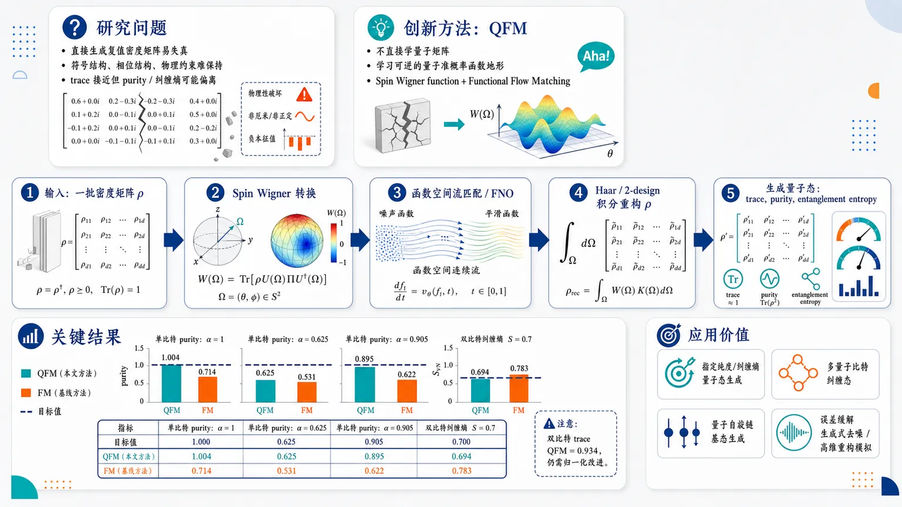
研究问题如何让生成模型学习一族量子态分布，同时保持量子态的关键物理性质；直接生成复值密度矩阵容易遇到符号结构、相位结构和物理约束失真，导致 trace 可能接近正确但 purity、entanglement entropy 等量子指标偏离目标。创新方法提出 QFM：先把密度矩阵转换成信息完备的 spin Wigner function，将复杂复值量子矩阵变成可视化的角变量函数；再用 Functional Flow Matching 在函数空间中学习这些 Wigner 函数的分布；最后通过积分重构密度矩阵。Aha 点是“不直接学量子矩阵，而学习可逆的量子准概率函数地形”。工作流程输入一批量子态密度矩阵 ρ；用旋转算符 U(Ω) 和 parity-like observable Π 计算 spin Wigner function W(Ω)=Tr[ρUΠU†]；将 Wigner 函数作为连续函数样本送入 Functional Flow Matching / Fourier Neural Operator；模型从噪声函数连续流动生成新的 Wigner 函数；对生成函数做 Haar 或 unitary 2-design 积分，重构新的量子态密度矩阵；最后评估 trace、purity、entanglement entropy。关键结果单量子比特纯度生成显著优于直接密度矩阵 FM：目标 α=1 时 QFM purity=1.004，FM=0.714；目标 α=0.625 时 QFM=0.625，FM=0.531；目标 α=0.905 时 QFM=0.895，FM=0.622。双量子比特目标纠缠熵 S=0.7 时，QFM 生成 0.694，FM 为 0.783，QFM 更接近目标纠缠结构；但双量子比特 trace 上 QFM=0.934，仍有归一化改进空间。应用价值为有限维量子系统提供一种更物理一致的生成建模路径，可用于生成指定纯度、指定纠缠熵或特定量子相的量子态分布；未来可扩展到多量子比特纠缠态、量子自旋链基态生成、量子误差缓解中的生成式去噪，以及高维量子态重构与模拟。第一部分：核心概览 (Overview)
QFM 将量子态密度矩阵转换为spin Wigner function，再用Functional Flow Matching在函数空间中生成量子分布，避免直接学习复值密度矩阵带来的符号结构与物理量失真问题。实验覆盖单量子比特纯度与双量子比特纠缠熵生成，显示 QFM 在 trace、purity、entanglement entropy 上显著优于直接 FM，是把现代 flow matching 引入有限维量子分布生成的早期探索。
---
第二部分：结构化快速回顾
《Generative Modeling of Quantum Distribution with Functional Flow Matching》（None，）
背景
现代diffusion models与flow matching已能建模复杂经典分布，但直接学习量子态分布困难，原因包括经典生成模型缺乏对purity、entanglement entropy、quantum phases of matter等物理约束的保证，以及复值密度矩阵存在sign structure problem。
方法
QFM 先将量子态密度矩阵映射为spin Wigner function，获得信息完备的经典函数表示；随后使用Functional Flow Matching在函数空间中学习 spin Wigner function 的分布；最后通过积分重构生成的量子态密度矩阵。
结果
单量子比特实验中，QFM 对目标纯度 α=1、0.625、0.905 分别生成 purity 1.004、0.625、0.895，而直接 FM 仅为 0.714、0.531、0.622。双量子比特实验中，目标纠缠熵 S=0.7，QFM 生成 0.694，直接 FM 为 0.783。
讨论
spin Wigner function 使产品态与最大纠缠态在函数表示中更易区分，并且可从函数表示完整重构密度矩阵。FFM 的resolution-invariant特性有利于从生成函数恢复量子态。
局限
实验规模较小：单量子比特数据集为 7000 个样本，双量子比特数据集为 900 个样本；多量子比特、更高维态、真实物理系统基态、误差缓解任务尚未验证。
结论
QFM 提供了一条绕开直接密度矩阵学习的路径，通过spin Wigner representation + functional flow matching实现更物理一致的量子分布生成。
---
第三部分：逐章节冷凝解析 (Section-by-Section Condensing)
Abstract
Generative quantum distribution learning remains difficult
深度生成模型在复杂分布建模上已取得突破，但量子分布学习仍然困难，核心瓶颈不是采样能力本身，而是能否准确保持量子态的物理性质。摘要直接指出：*"The emergence of powerful deep generative models based on diffusion and flow matching has enabled the learning and modeling of complex distributions."* 随后限定问题领域：*"Learning quantum distributions, however, remains challenging due to the inherent difficulty of accurately modeling the meaningful physical properties of quantum states."* 这里的“meaningful physical properties”在后文具体落到 trace、purity、entanglement entropy 等量子物理量。
QFM combines spin Wigner function with flow matching
核心方法是 Quantum Flow Matching (QFM)，把量子态先转换为 spin Wigner function，再使用 flow matching 学习函数空间中的分布。摘要明确给出：*"We propose Quantum Flow Matching (QFM), a novel generative model designed to learn quantum distribution by utilizing spin Wigner function and flow matching."* 该设计的关键不是直接在密度矩阵空间做生成，而是借助信息完备的函数表示进行建模。
Function-space learning enables multi-qubit quantum generation
QFM 使用 functional flow matching，学习对象从有限维向量或矩阵扩展为函数空间中的 spin Wigner functions。摘要中的关键表述为：*"By converting density matrix into the spin Wigner function and leveraging functional flow matching to learn distributions in function space, QFM enables accurate and effective learning of multi-qubit quantum distributions."* 这说明 QFM 的目标并非仅限单量子比特，而是面向多量子比特量子分布。
Evaluation targets physical validity rather than image-like fidelity
实验评价不依赖常规生成模型指标，而是直接检查生成态的物理量，包括 trace、purity、entanglement entropy。摘要给出：*"We demonstrate the effectiveness of our method by evaluating physical quantities such as trace, purity, and entanglement entropy of the generated quantum states, accurately capturing the underlying physics of the given quantum distributions."* 这体现了论文的评价标准：生成分布是否保持量子物理结构，而不只是数值相似。
---
1 Introduction
Classical generative modeling success does not directly transfer to quantum states
diffusion models 与 flow matching 在经典复杂分布上表现强大，但量子态分布并不能直接套用这些模型。引言开头指出：*"Despite the unprecedented success of deep generative models, such as diffusion models (Song et al., 2020; Ho et al., 2020) and flow matching (Lipman et al., 2022), learning the distributions of quantum states remains a challenging task."* 这里的核心断裂点在于：经典数据分布通常不需要满足密度矩阵的正定性、单位迹、量子纠缠结构、相干性等约束。
Quantum-state modeling is an active machine-learning research direction
利用机器学习建模量子态已有明确研究脉络，包括量子态重构、神经网络量子态、物理科学中的机器学习方法等。引言写道：*"Leveraging state-of-the-art machine learning methods to model quantum states has been an interesting research direction (Carrasquilla et al., 2019; Carleo et al., 2019)."* 这将 QFM 放入“机器学习 × 量子态表示/生成”的交叉领域，而不是单纯的生成建模应用。
Existing diffusion and flow matching methods lack physical consistency guarantees
直接把现有 diffusion 或 flow matching 用于量子分布学习会失败，第一类原因是这些方法主要面向经典数据，不能自然保证物理量一致性。原文指出：*"First, existing diffusion and flow matching methods are solely focused on learning representations of classical data such as images or classical PDEs."* 随后指出其不足：*"These are inadequate for applications requiring consistency with important physical quantities such as purity, entanglement entropy, and quantum phases of matter."* 关键问题是生成模型可能学到矩阵外观，却不一定学到量子态的物理不变量。
Complex-valued density matrices create a sign-structure barrier
密度矩阵通常是复值矩阵，直接学习会遇到 sign structure problem。引言明确写道：*"Second, complex-valued density matrices pose a significant challenge due to the sign structure problem, making previous methods unsuitable for handling them (Westerhout et al., 2020; Dugan et al., 2023)."* 这意味着密度矩阵中的相位、符号、复数结构并非普通实值网络容易稳定捕捉的对象。
QFM bypasses direct density-matrix learning
QFM 的核心路线是绕过直接学习量子态矩阵，转向学习 spin Wigner function。Figure 1 的说明直接给出整体流程：*"We bypass the direct learning of quantum states by converting them into spin Wigner function and learn the underlying distribution."* 这种绕行策略是整篇工作的主要技术判断：不是强迫生成模型适配密度矩阵，而是改变表示空间。
Spin Wigner function supports physically valid reconstruction
QFM 的目标不是只生成 Wigner 函数，而是最终恢复为物理有效的量子态。Figure 1 说明强调：*"This approach allows us to effectively generate physically valid and accurate quantum states, which was not achievable by direct learning from density matrices."* 这里“physically valid”对应后续实验中的单位迹、目标纯度、目标纠缠熵等约束。
The pipeline has three explicit stages
QFM 的流程包含三步：第一，将量子态转换为信息完备的 spin Wigner functions；第二，用 Functional Flow Matching 学习函数分布；第三，从生成的 spin Wigner functions 重构新量子态。引言逐步描述：*"First, we convert quantum states into informationally complete functional representations using spin Wigner functions."*；*"Second, we employ Functional Flow Matching (FFM) to learn the distribution of spin Wigner functions in function space."*；*"Finally, the new quantum states are reconstructed from these generated spin Wigner functions."*
The first claimed contribution is a quantum-distribution generative model
贡献之一是提出 QFM，目标是生成给定量子系统的分布并保持物理规律。贡献列表写道：*"We propose QFM, a pioneering generative model for quantum distributions that accurately capture the underlying physics of a given quantum system."* “pioneering”说明该工作定位为早期探索性方法，而非增量式模型调参。
The second claimed contribution is representation-level bypass plus FFM
第二项贡献是用 spin Wigner function 绕开直接密度矩阵学习，并利用 FFM 的分辨率不变性进行重构。原文写道：*"We bypass the direct density matrix learning by using spin Wigner function."* 随后补充：*"FFM is utilized to leverage resolution-invariant nature of functional models, enabling accurate reconstruction of quantum states from the learned spin Wigner functions."* 这把创新点定位在“表示变换 + 函数空间流匹配”的组合。
The third claimed contribution is physics-based empirical validation
第三项贡献是用物理量验证生成质量。原文写道：*"We demonstrate that our method effectively learns the underlying physics of given quantum systems by evaluating various physical quantities, such as trace, purity, and entanglement entropy."* 这说明实验不是面向视觉质量、似然或 FID，而是直接面向量子物理可解释指标。
---
2 Learning Quantum Distribution with Flow Matching
The section formalizes QFM as a flow-matching method over quantum representations
该章节建立 QFM 的技术基础：先定义量子态如何转为 spin Wigner function，再说明如何用 Functional Flow Matching 学习该函数分布。章节标题本身给出方法范围：*"Learning Quantum Distribution with Flow Matching"*。这里的“quantum distribution”不是单个量子态，而是一族量子态的概率分布；“flow matching”不是在密度矩阵上直接运行，而是在 Wigner 函数空间中运行。
---
2.1 Quantum State to Spin Wigner Function
Effective classical representation is required for quantum generative learning
要用深度生成模型学习量子态分布，必须先找到合适的经典表示。原文指出：*"Learning the distributions of quantum states using deep generative models requires effective classical representations of these quantum states."* 这意味着表示层面的选择决定了生成模型能否捕捉量子态的物理结构。
State vectors and density matrices alone are insufficient
单纯使用state vector或density matrix训练生成模型不足以保证重要物理量准确。原文明确写道：*"Training the generative model using the state vector or density matrix representation alone is insufficient, as it does not ensure that important physical quantities are accurately captured."* 关键问题是这些矩阵或向量表示虽然数学上完整，但对神经生成模型并不一定是物理友好的学习坐标。
Wigner function maps density matrices to quasi-probability distributions
Wigner function 可以把量子密度矩阵映射到经典相空间中的准概率分布。原文给出定义性描述：*"The Wigner function effectively addresses these shortcomings by mapping a quantum density matrix onto a quasi-probability distribution in classical phase space (Rundle et al., 2017; Wigner, 1932)."* “quasi-probability”表示它类似概率分布，但可出现非经典特征，例如负值或非经典相干结构。
Standard Wigner functions have mostly targeted continuous-variable systems
传统 Wigner function 更多用于连续变量和无限维 Hilbert 空间，如量子光学和化学，因此在机器学习中的适用场景受限。原文写道：*"However, since the Wigner function has been primarily explored in continuous variable and infinite-dimensional Hilbert spaces, such as in quantum optics and chemistry, its application in machine learning is still limited in these settings (Dugan et al., 2023)."* QFM 选择 spin Wigner function 的原因正是为了覆盖有限维量子系统。
Spin Wigner function handles arbitrary finite-dimensional quantum systems
spin Wigner function 能完整描述任意维度的量子系统，包括有限维量子系统。原文写道：*"In this work, we utilize spin Wigner function, which fully describes quantum systems of arbitrary (including finite) dimensions (Tilma et al., 2016; Rundle et al., 2017)."* 这一点对量子比特系统特别关键，因为 N-qubit Hilbert 空间是有限维的 (2^N) 维空间。
The representation enables finite-dimensional quantum tasks
spin Wigner function 使深度生成模型可用于有限维 Hilbert 空间任务，例如生成具有特定量子相的自旋链基态。原文指出：*"This approach enables the application of deep generative models to a range of intriguing tasks involving finite-dimensional Hilbert spaces, such as generating the ground state of a quantum spin chain with specific quantum phases."* 这暗示 QFM 的潜在用途超过合成数据实验，可扩展到量子多体物理。
Spin Wigner function is defined through trace over a rotated observable
任意量子态 (h̊o) 的 spin Wigner function 定义为
[
W(Ømega)=Tr[h̊o U(Ømega)Π Udagger(Ømega)].
]
原文给出：*"For an arbitrary quantum state (h̊o), the spin Wigner function is given by (W(Ømega)=Tr[h̊o U(Ømega)Π Udagger(Ømega)]), where (U(Ømega)) and (Π) are analogous to the displacement and parity operator in the original Wigner function, respectively."* 其中 (U(Ømega)) 类似相空间位移，(Π) 类似 parity operator。
Density matrices are reconstructable from spin Wigner functions
只要选择合适的 Hermitian observable (Π)、unitary (U) 和参数化 (Ømega)，原始密度矩阵可完整重构：
[
h̊o=dim(h̊o)intØₘₑgₐW(Ømega)U(Ømega)Π Udagger(Ømega)dØmega.
]
原文写道：*"With an appropriate choice of Hermitian observable (Π), along with unitary (U) and parameterization (Ømega), the original density matrix can be fully reconstructed as (h̊o = dim(h̊o)intØₘₑgₐ W(Ømega) U(Ømega)Π Udagger(Ømega)dØmega)."* 这保证 spin Wigner representation 是信息完备的。
The integration measure must correspond to Haar random or unitary 2-design sampling
重构积分中的 (dØmega) 需要使 (U(Ømega)) 服从 Haar random 或 unitary 2-design 分布。原文指出：*"Here, (dØmega) should be chosen such that (U(Ømega)) follows a Haar random, or unitary 2-design, distribution."* 进一步解释 unitary 2-design：*"Specifically, unitary 2-design, denoted by (U), is a distribution of unitary matrices where the expectation value matches that of the Haar distribution up to the second moment."* 该条件保证二阶矩足以完成密度矩阵恢复。
The reconstruction derivation uses identity and swap decomposition
重构积分被写成 Haar 分布上的期望，并分解到 identity operator 与 swap operator 上：
[
intØₘₑgₐW(Ømega)Δ(Ømega)dØmega
= EUTrA[(h̊oøtimes I_B)Uøtⁱmes ²Πøtⁱmes ²Udaggerøtⁱmes ²]
]
[
= TrA[(h̊oøtimes I_B)(cΠ,II+cΠ,FF)]
= cΠ,II_B+cΠ,Fh̊o.
]
原文完整给出该推导，并说明：*"(Δ(Ømega)equiv U(Ømega)Π Udagger(Ømega)), and expectation over (U) is taken with respect to the Haar distribution."* 其中 (I) 与 (F) 分别代表 identity 与 swap operator：*"I and F denote identity and swap operator on the composite system, respectively."*
The constants ensure exact reconstruction
关键常数为 (cΠ,I=0)，(cΠ,F=1/dim(h̊o))，因此积分结果正比于 (h̊o)，从而可完全恢复密度矩阵。原文写道：*"the constants are calculated as (cΠ,I=0) and (cΠ,F=1/dim(h̊o)) (Mele, 2024)."* 结论明确：*"Therefore, we can fully reconstruct the original density matrix (h̊o)."*
The N-qubit construction follows Rundle et al. conventions
多量子比特推广中，(U(Ømega)) 与 (Π) 有选择自由；该工作采用 Rundle et al. (2017) 的约定。原文写道：*"To generalize this to (N) qubits, there is flexibility in the choice of (U(Ømega)) and (Π)."* 随后说明：*"Throughout our work, we adhere to the conventions of Rundle et al. (2017)."*
The parity-like matrix (Π_N) has a specific diagonal structure
(Π_N) 是 (2^N× 2^N) 的对角矩阵，第一项为
[
2⁻N[1+(2^N-1)sqrt2^N+1],
]
其余元素为
[
2⁻N[1-sqrt2^N+1].
]
原文给出：*"(Π_N) is (2^N× 2^N) diagonal matrix with (2⁻N[1+(2^N-1)sqrt2^N+1]) as the first element and (2⁻N[1-sqrt2^N+1]) as the remaining elements."* 该选择与前述常数计算一致：*"This choice aligns with the previous calculations of (cΠ,I) and (cΠ,F)."*
The N-qubit unitary is a tensor product of local rotations
N-qubit 的 unitary 被定义为
[
U_N(boldsymbolØmega)=bigotimesⱼ₌₁Neⁱθⱼ Zⱼeⁱφⱼ Yⱼ,
]
其中 (boldsymbolØmega=(ěcθ,ěcφ))，(Zⱼ)、(Yⱼ) 是第 (j) 个量子比特上的 Pauli operators。原文写道：*"The unitary operator and parameterization are generalized to (U_N(boldsymbolØmega)=bigotimesⱼ₌₁Neⁱθⱼ Zⱼeⁱφⱼ Yⱼ), where (boldsymbolØmegaequiv(ěcθ,ěcφ)) and (Zⱼ₍Yⱼ₎) denotes the Pauli (Z(Y)) operator on (j)-th qubit."*
The practical reconstruction uses Monte Carlo-style approximation
N-qubit 密度矩阵重构可写为
[
h̊o=dim(h̊o)EU[W(Ømega)Δ(Ømega)],
]
并进一步近似为
[
h̊osimeq π^Nḑot
Eθ_ᵢₛᵢₘ U[₀,₂π],φ_ᵢₛᵢₘ U[₀,π]
łeft[
W(Ømega)Δ(Ømega)
prodᵢ₌₁Nsinφᵢ
i̊ght].
]
原文写道：*"Specifically, we reconstruct (N)-qubit density matrix (h̊o) from spin Wigner Function by the following approximation."* 这里 (prodᵢsinφᵢ) 是球面测度因子，(π^N) 来自采样范围和测度规范化。
The representation uses functions of 2N parameters
N-qubit spin Wigner function 是关于 (2N) 个参数的函数：每个量子比特对应 (θᵢ,φᵢ)。原文总结：*"Using this approach, we can construct an informationally complete representation of (N)-qubit density matrices with functions of (2N) parameters."* 这表明输入维度随量子比特数线性增长为函数参数维度，但函数本身仍承载 (2^N×2^N) 密度矩阵信息。
Spin Wigner representation visually separates product and entangled states
Figure 2 展示两量子比特产品态与最大纠缠态在密度矩阵和 spin Wigner function 下的差异。图注写道：*"An Example of two-qubit product states (h̊o₁,h̊o₂) (top) and two-qubit maximally entangled states (σ₁,σ₂) (bottom), in both density matrix (left) and spin Wigner function (right)."* 关键观察是：*"Unlike in the density matrix form, the product states and maximally entangled states are clearly distinguishable in the spin Wigner function representation."* 这为使用 spin Wigner function 学习物理结构提供直观证据。
The figure uses fixed and varied angular parameters
Figure 2 中，spin Wigner functions 显示 (θ₁) 与 (φ₁) 参数化，固定 (θ₂₌π)、(φ₂₌π/2)。图注给出：*"For the spin Winger functions, parameterizations on (θ₁) and (φ₁) are shown, with (θ₂) and (φ₂) fixed at (π) and (π/2), respectively."* 这说明图像只是高维函数的二维切片，而非完整 (2N)-参数函数。
The product and entangled examples use random local rotations
产品态从 (|00ångle) 经双量子比特局域随机旋转得到；最大纠缠态从 ((|00ångle+|11ångle)/sqrt2) 经双量子比特局域随机旋转得到。图注写道：*"Random arbitrary single-qubit rotation gates (U(α,β,γ)=exp(-iα Z/2)exp(-iβ Y/2)exp(-iγ Z/2)) were applied to both qubits of (|00ångle) for the product states and to both qubits of ((|00ångle+|11ångle)/sqrt2) for the maximally entangled states."* 这保证对比关注纠缠结构，而不是简单基态差异。
---
2.2 Functional Flow Matching
Flow matching models a continuous vector field
Flow Matching (FM) 是一种 continuous normalizing flow，通过学习向量场 (uₜ) 或 flow (φₜ) 来模拟从噪声分布到数据分布的连续变换。原文写道：*"Flow Matching (FM) is a continuous normalizing flow that models the integration of vector field (uₜ), or the flow (φₜ), by learning the vector field of the prescribed dynamics."* 在 QFM 中，流动对象是时间 (tin[0,1]) 上的 spin Wigner function (Wₜ)。
The flow is governed by an ODE over spin Wigner functions
FM 的动力学由常微分方程描述：
[
fracddtφₜ₍Wₜ₎₌ᵤₜ₍φₜ₍Wₜ₎₎.
]
原文给出：*"This can be described with the ordinary differential equation (fracddtφₜ₍Wₜ₎₌ᵤₜ₍φₜ₍Wₜ₎₎), where (Wₜ) is the spin Wigner function at time (tin[0,1])."* 这说明 QFM 的生成过程可理解为 Wigner 函数在函数空间中的连续演化。
Conditional flow matching learns marginal vector fields stably
Lipman et al. (2022) 的 conditional flow matching objective (CFM) 学习与目标概率密度路径 (pₜ₍Wₜ₎) 对应的边缘向量场 (uₜ₍Wₜ₎)，并被认为比 diffusion models 更稳定、更鲁棒。原文写道：*"Lipman et al. (2022) proposed conditional flow matching objective (CFM), that learns the marginal vector field (uₜ₍Wₜ₎) which corresponds to the target probability density path (pₜ₍Wₜ₎), known to be more stable and robust compared to diffusion models (Ho et al., 2020; Song et al., 2020)."*
The CFM objective minimizes vector-field regression error
CFM 损失函数为
[
LCFM
=
Eₜₛᵢₘ U₍₀,₁₎,W_ₜₛᵢₘ ₚ_ₜ₍W_ₜ₎
|vₜ₍Wₜ₎₋ᵤₜ₍Wₜ|W₁₎|².
]
原文写道：*"The CFM objective is given by (LCFM=Eₜₛᵢₘ U₍₀,₁₎,W_ₜₛᵢₘ ₚ_ₜ₍W_ₜ₎|vₜ₍Wₜ₎₋ᵤₜ₍Wₜ|W₁₎|²), where (vₜ₍W)) is a trainable neural network."* 也就是说，神经网络 (vₜ) 学习在任意时间点把样本推向目标分布所需的速度场。
Functional Flow Matching extends FM to function space
QFM 使用 Functional Flow Matching (FFM) 学习 spin Wigner functions 的分布。原文写道：*"To learn the distribution of spin Wigner function, we utilize Functional Flow Matching, which is a functional version of FM (Kerrigan et al., 2023), generalized to the function space, implemented with Fourier Neural Operator (Li et al., 2020)."* 这里的学习对象是函数 (W(Ømega))，不是固定长度向量；实现模型为 Fourier Neural Operator (FNO)。
Resolution invariance supports reconstruction
FFM 的重要性质是resolution-invariant，即模型可在不同函数离散分辨率下操作。原文写道：*"It features a resolution-invariant property of functional models, and we leverage it when reconstructing the generated spin Wigner functions back into the quantum states."* 这对重构积分特别重要，因为 spin Wigner function 理论上定义在连续参数空间，实际训练和采样只能使用离散网格或采样点。
---
3 Experiments
Single-qubit experiments target trace and purity
单量子比特实验目标是生成具有指定 purity 的密度矩阵，并检查生成态是否满足单位迹约束。原文写道：*"We first demonstrate the generation of single-qubit density matrices using QFM."* 实验目标为：*"Our objective is to generate quantum states with a specified purity (α=Tr[h̊o²]), where (h̊o) denotes density matrix of the quantum state."* 约束检查为：*"Moreover, we also examine the trace of the generated data to ensure it satisfies the unit trace constraint."*
The single-qubit dataset contains 7000 states with three target purities
单量子比特实验使用合成数据集，共 7000 个纯态与混态，目标纯度为 (α=1)、(α=0.625)、(α=0.905)。原文写道：*"We conduct experiments with a synthetic dataset consisting of 7000 pure states ((α=1)) and mixed states ((αin0.625,0.905))."* 这提供了从纯态到不同混合度量子态的测试。
Single-qubit states are sampled on constrained Bloch spheres
单量子比特态写作
[
(I+nḑotboldsymbolσ)/2,
]
其中 (n) 是 Bloch vector，(boldsymbolσ) 是 Pauli vector。原文写道：*"Single-qubit quantum states can be expressed as ((I+nḑotboldsymbolσ)/2), where (n) and (boldsymbolσ) are Bloch and Pauli vectors, respectively."* 指定纯度的数据通过约束 Bloch 向量范数采样：*"Datasets of purity (α) are prepared by sampling (n) from uniform distribution with the constraint (|n|₂₌sqrt2α-1)."* 因此 (α=1) 对应 Bloch 球面，较低 (α) 对应球内较短半径壳层。
QFM preserves purity far better than direct FM for pure states
目标纯度 (α=1) 时，直接 FM 生成态平均 trace 为 0.998，但 purity 仅为 0.714；QFM 平均 trace 同为 0.998，purity 为 1.004。表 1 标注：*"(α), (Tr[h̊o]) and (Tr[h̊o²]) represent the purity of training dataset, average values of the trace, and the purity over the generated quantum states, respectively."* 表中数值为：*"FM 1 0.998 0.714"* 与 *"QFM 1 0.998 1.004"*。这说明直接 FM 虽几乎满足单位迹，却严重低估纯度；QFM 几乎恢复目标纯态纯度。
QFM exactly matches the α=0.625 mixed-state target
目标纯度 (α=0.625) 时，直接 FM 的 trace 为 1.001，purity 为 0.531；QFM 的 trace 为 0.997，purity 为 0.625。表 1 给出：*"FM 0.625 1.001 0.531"* 与 *"QFM 0.625 0.997 0.625"*。QFM 在该混合态设置中与目标纯度完全一致，而 FM 显著偏低。
QFM remains closer to α=0.905 than direct FM
目标纯度 (α=0.905) 时，直接 FM 的 trace 为 0.999，purity 为 0.622；QFM 的 trace 为 0.995，purity 为 0.895。表 1 给出：*"FM 0.905 0.999 0.622"* 与 *"QFM 0.905 0.995 0.895"*。QFM 的 purity 误差为 (|0.895-0.905|=0.010)，直接 FM 误差为 (|0.622-0.905|=0.283)。
Multi-qubit experiments target trace and entanglement entropy
多量子比特实验聚焦双量子比特态，目标是生成指定 entanglement entropy 的量子态。原文写道：*"We further demonstrate the capability of QFM in a multi-qubit setting."* 具体任务为：*"Specifically, we focus on generating 2-qubit quantum states with a desired entanglement entropy (S=-Tr[h̊o_Alogh̊o_A]), where (h̊o_A) is the reduced density matrix."* 这里 (h̊o_A) 是对双量子比特系统中一个子系统取偏迹后的约化密度矩阵。
The two-qubit dataset contains 900 states with S=0.7
双量子比特实验使用 900 个量子态，目标纠缠熵固定为 S=0.7。原文写道：*"We prepare a synthetic dataset consisting of 900 quantums states with fixed entanglement entropy (S=0.7)."* 数据构造方式为：*"This is done by initializing two-qubit quantum states with an entanglement entropy of 0.7 and applying random arbitrary single-qubit rotations."* 局域单量子比特旋转不改变纠缠熵，因此生成具有同一纠缠熵但局域基不同的状态族。
QFM better matches the target entanglement entropy than direct FM
目标纠缠熵 (S=0.7) 时，直接 FM 的 trace 为 1.009、生成纠缠熵为 0.783；QFM 的 trace 为 0.934、生成纠缠熵为 0.694。表 2 标注：*"S, (Tr[h̊o]) and (S(h̊o_A)) represent the entanglement entropy of training dataset, the average values of the trace, and the entanglement entropy over the generated quantum states, respectively."* 表中给出：*"FM 0.7 1.009 0.783"* 与 *"QFM 0.7 0.934 0.694"*。QFM 的纠缠熵误差为 (|0.694-0.7|=0.006)，直接 FM 误差为 (|0.783-0.7|=0.083)。
QFM has weaker trace accuracy in the two-qubit experiment but stronger physics-target accuracy
双量子比特实验中，QFM 的 trace 0.934 明显偏离单位迹，比直接 FM 的 1.009 更差；但目标纠缠熵更接近 0.7。表 2 数值为：*"FM 0.7 1.009 0.783"* 和 *"QFM 0.7 0.934 0.694"*。这表明 QFM 在当前双量子比特设置中更擅长保持目标纠缠结构，但重构后的 trace normalization 仍有改进空间。
The experimental comparison is specifically against direct density-matrix FM
实验基线是直接对密度矩阵使用 FM，而不是其他量子生成模型。原文写道：*"Tables 1 and 2 present a comparative analysis between QFM and direct learning of FM using density matrices."* 这一对比隔离出表示选择的影响：同样是 flow matching，spin Wigner function 表示显著改善 purity 与 entanglement entropy。
The main empirical claim is physical-quantity fidelity
实验结论是 QFM 比直接 FM 更能捕捉数据集物理量。原文写道：*"QFM effectively captures the physical quantities of the dataset compared to direct learning of FM."* 证据来自：*"This is demonstrated by its better performance in the target purity values (Table 1) and entanglement entropy (Table 2)."* 具体数值上，QFM 对三组单量子比特纯度目标的误差分别约为 0.004、0.000、0.010；直接 FM 分别约为 0.286、0.094、0.283。
---
4 Future Work
Scaling to larger multi-qubit systems is an open direction
未来方向之一是扩展到更大的多量子比特系统，包括真正多体纠缠态与具有特定量子相的广义 cluster Hamiltonian 基态。原文写道：*"One potential future direction is extending the method to larger multi-qubits system such as generating genuinely multipartite entangled states (Goyeneche and Życzkowski, 2014) and the ground states of generalized cluster Hamiltonian with specific quantum phases (Caro et al., 2022; Gil-Fuster et al., 2024)."* 这也是当前实验局限的直接延伸：现有验证仅覆盖单量子比特与双量子比特。
Quantum error mitigation can be formulated as generative denoising
另一个方向是把生成模型作为去噪器，用于quantum error mitigation，并将其表述为逆问题。原文写道：*"Another interesting direction is quantum error mitigation by leveraging generative model as denoiser and formulating as solving an inverse problem (Kawar et al., 2022; Chung et al., 2022; Shim and Kim, 2024)."* 这将 QFM 与 diffusion inverse problems、manifold constraints、SDE-based quantum error mitigation 等方向连接起来。
Quantum Autoencoders may help high-dimensional quantum-state generation
结合 Quantum Autoencoders 可能缓解高维量子态生成的计算成本问题。原文写道：*"Lastly, by simultaneously utilizing Quantum Autoencoders (Romero et al., 2017), our method potentially enables the accurate generation of high-dimensional quantum states, which have been intractable due to heavy computational costs."* 这里的关键瓶颈是密度矩阵维度随量子比特数指数增长：N-qubit 密度矩阵大小为 (2^N×2^N)。
---
第四部分：深度理解与语言支持 (Understanding & Nuance)
1. 术语解析
Quantum distribution
Quantum distribution 指一组量子态上的概率分布，而不是单个量子态。普通量子态学习可能只重构一个 (h̊o)，而 quantum distribution learning 要学习许多 (h̊o) 构成的分布，例如同一 purity、同一 entanglement entropy、不同局域旋转下的状态族。语境中对应：*"learning the distributions of quantum states remains a challenging task."*
Spin Wigner function
Spin Wigner function 是有限维量子系统的 Wigner 表示，把密度矩阵 (h̊o) 映射为关于角变量 (Ømega) 的函数 (W(Ømega))。它不是普通概率分布，而是quasi-probability representation，可保留量子相干、纠缠等结构。微妙点在于：它既是经典函数，又是信息完备的量子表示，可从中恢复 (h̊o)。
Informationally complete
Informationally complete 表示该表示包含重构原始量子态所需的全部信息。不是“近似可视化”，也不是“特征提取”，而是理论上可逆。对应公式为
[
h̊o=dim(h̊o)int W(Ømega)Δ(Ømega)dØmega.
]
语境中对应：*"informationally complete functional representations using spin Wigner functions."*
Functional Flow Matching
Functional Flow Matching 是把 flow matching 从有限维向量空间推广到函数空间。普通 FM 学习图像、向量、矩阵上的速度场；FFM 学习函数 (W(Ømega)) 的演化速度场。微妙点是“functional”不是“有功能的”，而是“以函数为对象”的数学含义。
Resolution-invariant
Resolution-invariant 表示模型处理函数时不绑定某个固定离散网格分辨率。对于 spin Wigner function，理论对象是连续函数，实际训练只能离散采样；resolution-invariant 能帮助模型在训练网格与重构积分采样之间保持一致。语境中对应：*"resolution-invariant property of functional models."*
---
2. 疑难查证
为什么直接学习密度矩阵会失败，即使密度矩阵本身已经完整描述量子态？
密度矩阵当然是完整量子态表示，但“数学完整”不等于“生成模型易学习”。生成模型直接输出矩阵时，需要同时满足多个强约束：
- (Tr[h̊o]=1)；
- (h̊osucceq0)，即半正定；
- (h̊o=h̊o^dagger)，即 Hermitian；
- 复数相位结构正确；
- 纯度、纠缠熵、量子相等非局域物理量正确。
直接 FM 可以学到 trace 接近 1，例如单量子比特 (α=1) 时 trace 为 0.998，但 purity 只有 0.714，说明矩阵“归一化”不代表物理结构正确。QFM 通过 spin Wigner function 把量子结构转化为函数空间几何，使模型更容易学习物理区分特征。
为什么 spin Wigner function 能帮助区分产品态和纠缠态？
产品态和纠缠态在密度矩阵中可能都表现为复杂复值矩阵，视觉或数值模式未必清晰。spin Wigner function 把态投影到一组旋转测量方向上的期望函数：
[
W(Ømega)=Tr[h̊oΔ(Ømega)].
]
纠缠会改变多量子比特旋转方向之间的相关结构，因此在 (W(Ømega)) 的函数形状中更明显。Figure 2 的结论是产品态与最大纠缠态在 spin Wigner representation 中“clearly distinguishable”。
unitary 2-design 为什么足够用于重构？
Haar 随机 unitary 是全体 unitary 上最均匀的分布，但直接采样和计算困难。许多量子态重构只需要匹配 Haar 分布的低阶矩，尤其是二阶矩。unitary 2-design 的定义就是其一阶、二阶统计与 Haar 分布一致。密度矩阵重构公式中出现 (Uøtⁱmes²Πøtⁱmes²Udaggerøtⁱmes²)，因此二阶矩已经足够。最终积分可分解为 identity 与 swap 两个结构项，并通过 (cΠ,I=0)、(cΠ,F=1/dim(h̊o)) 恢复 (h̊o)。
为什么 QFM 的双量子比特 trace 不如 FM，但纠缠熵更准？
trace 是线性归一化性质，直接矩阵学习很容易通过数据均值或简单尺度学到；纠缠熵是非线性、非局域物理量，需要正确捕捉子系统约化密度矩阵谱。双量子比特实验中 FM trace 为 1.009，QFM trace 为 0.934，但 FM 纠缠熵为 0.783，QFM 为 0.694，目标为 0.7。这说明 FM 更会保持简单线性约束，QFM 更会保持目标量子相关结构。后续可通过重构后 normalization 或物理投影改善 trace。
---
第五部分：创新评估与关联 (Synthesis & Novelty)
1. 创新性判断
Novel representation-model pairing
过去 2–5 年的相关生成模型主要沿两条路线发展：一类是 diffusion / flow matching 在经典图像、PDE、连续数据上的扩展；另一类是量子态机器学习、神经网络量子态、量子态重构。QFM 的新颖性在于把 spin Wigner function 作为有限维量子态的生成表示，并与 Functional Flow Matching 直接耦合。创新不只是“把 FM 用到量子数据”，而是重新选择学习空间。
Bypassing complex density-matrix learning
已有方法直接面对复值 density matrix 时容易遇到 sign structure problem，生成态物理量也难以保持。QFM 解决的问题是：如何避免直接生成复值矩阵，同时仍可完整恢复量子态。spin Wigner function 提供信息完备的实函数式表示，FFM 则适合学习这种函数分布。
Physics-first generative evaluation
该工作把生成质量指标从常规机器学习指标转向量子物理量，包括 trace、purity、entanglement entropy。这一区别重要：生成量子态的目标不是视觉或统计相似，而是物理可用性。QFM 在 purity 与 entanglement entropy 上显著优于 direct FM，说明表示变换确实提升了物理结构学习。
Function-space formulation for finite-dimensional quantum states
spin Wigner function 把有限维 N-qubit 密度矩阵变成 (2N)-参数函数；FFM/FNO 可在函数空间学习其分布，并利用 resolution-invariant 特性辅助重构。这提供了一种不同于传统矩阵向量化、神经网络量子态参数化、normalizing flow on density matrices 的建模路线。
Remaining novelty is proof-of-concept rather than full-scale quantum advantage
当前实验规模有限：单量子比特 7000 样本，双量子比特 900 样本；尚未展示大规模多体系统、真实 Hamiltonian 基态、噪声实验数据或量子硬件数据。因此创新性主要体现在概念与方法组合层面：spin Wigner functional representation + FFM generative learning + physical reconstruction。领域地位更接近一项 early-stage methodological proposal，而非已充分验证的通用量子生成模型。
-
06
📊 含图深析
📄 摘要：针对门控半导体量子点调谐瓶颈，构建语义分割流程识别完整电荷稳定图中的跃迁线，并输出单电荷区目标门压。数据集含 1015 张实验 CSD，来自 300 mm FD-SOI 硅量子点器件，覆盖 9 种设计、多晶圆与多批次。U-Net 式卷积网络用于在异质实验图像上执行自动调谐。
💡 亮点：1015 张 300 mm FD-SOI 硅量子点稳定图被标注并用于 U-Net 分割跃迁线。该方法直接返回单电荷区门压，是硅自旋量子比特规模化调谐的实用自动化步骤。
📖 展开分析 + 配图
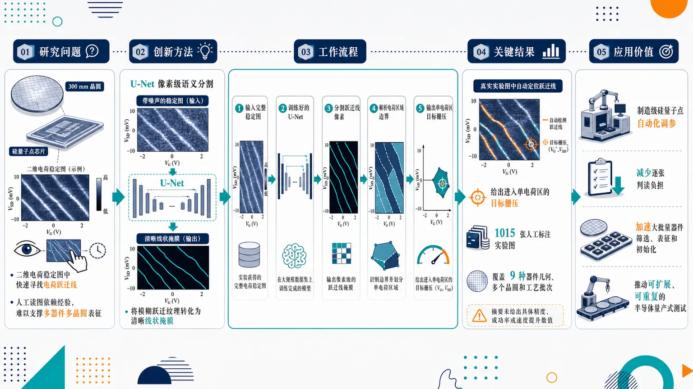
研究问题300 mm FD-SOI 栅定义硅量子点需要从二维电荷稳定图中快速找到电荷跃迁线，并确定进入单电荷区的栅压；传统人工读图和调参效率低、依赖经验，难以支撑多器件、多晶圆的大规模量子点表征。创新方法将电荷稳定图当作可分割的图像，使用 U-Net 类卷积神经网络对跃迁线进行像素级语义分割；Aha 点是把模糊、噪声背景中的量子电荷跃迁纹理转化为清晰的线状掩膜，再由掩膜自动推导单电荷区目标栅压，实现从“看图判断”到“机器标线并给电压”的自动化。工作流程输入完整二维电荷稳定图；经过人工标注实验数据训练的 U-Net 网络；网络在图中分割出电荷跃迁线像素；算法根据跃迁线位置解析电荷区域边界；最终输出可把器件调入单电荷区的栅压目标。关键结果该方法能在真实实验电荷稳定图中自动定位跃迁线，并给出进入单电荷区的目标栅压；训练集包含 1015 张人工标注实验图，覆盖 9 种器件几何、多个晶圆和多个工艺批次，显示出面向不同器件版图和制造条件的适用潜力；摘要未给出具体分割精度、成功率或速度提升数值。应用价值为制造级硅量子点平台提供自动化调参工具，可减少研究人员逐张判读稳定图的负担，加速大批量量子器件筛选、表征和初始化；有助于把量子点调控从实验室手工流程推进到可扩展、可重复的半导体量产式测试流程。核心概览
论文面向栅定义硅量子点的自动调谐，提出用 U-Net 语义分割识别电荷稳定图中的跃迁线，并推断单电荷区栅压目标，属于半导体量子点自动化调控与机器学习辅助实验方向。
方法要点
- 构建基于语义分割的自动调谐流程，用于分析完整电荷稳定图。
- 目标识别对象是电荷稳定图中的电荷跃迁线。
- 基于识别到的跃迁线，给出单电荷区对应的栅压目标。
- 使用人工标注的实验电荷稳定图作为训练/评估数据来源。
- 数据集包含 1015 张 FD-SOI 硅量子点实验电荷稳定图。
- 数据覆盖 9 种器件几何、多晶圆和多工艺批次，体现一定器件与工艺多样性。
- 采用 U-Net 型卷积神经网络执行图像语义分割。
关键结果
- 摘要明确称其构建了一个基于语义分割的自动调谐流程。
- 该流程可在完整电荷稳定图中定位跃迁线。
- 该流程可给出单电荷区的栅压目标。
- 摘要未详述分割精度、调谐成功率、与人工/传统算法对比结果或实验闭环验证细节。
创新性判断
- 可能的新颖点在于将 U-Net 语义分割直接用于完整实验电荷稳定图的跃迁线定位，并服务于量子点单电荷区自动调谐；但摘要未说明与既有自动调谐方法的具体差异。
- 数据集覆盖多器件几何、多晶圆和多工艺批次，可能增强了模型跨器件/跨工艺泛化能力，这是相对单器件或小规模数据工作的潜在优势；具体泛化性能摘要未详述。
- 以人工标注的真实 FD-SOI 硅量子点实验图像训练网络，而非仅依赖模拟数据，可能是实用化方向上的贡献；但是否为首次或优于已有实验数据方法，摘要无法确定。
-
07
📊 含图深析
📄 摘要：面向柱状等离子体微波散射逆问题，先用随机森林替代 COMSOL 三维全波仿真，训练数据为电子密度剖面及相互作用后的微波束功率分布。该代理模型能准确复现全波模拟，用于加速从散射图样到等离子体参数的推断，并形成正向代理与逆向重构结合的双机器学习框架。
💡 亮点：随机森林被用于替代柱状等离子体中的三维全波散射计算，并服务于逆散射求解。该路线把昂贵电磁仿真转化为可快速调用的代理模型。
📖 展开分析 + 配图
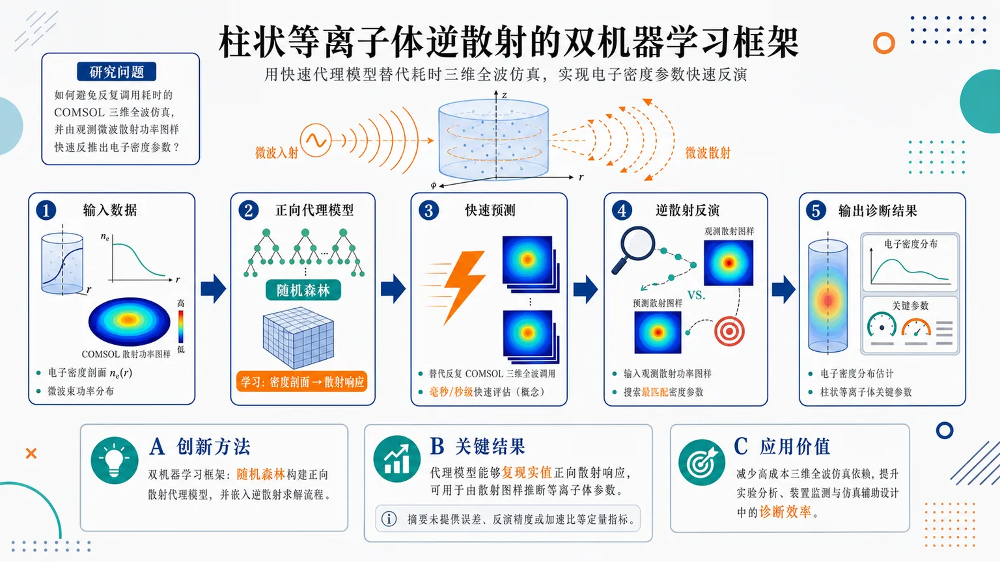
研究问题如何在柱状等离子体微波诊断中，避免反复调用耗时的 COMSOL 三维全波仿真，并根据观测到的微波散射功率图样快速反推出等离子体电子密度等关键参数。创新方法提出“双机器学习框架”：用随机森林学习“电子密度剖面 → 微波散射功率分布”的正向映射，作为 COMSOL 全波模拟的快速代理模型；再基于该代理模型构建逆散射求解流程，实现由散射图样到等离子体参数的反演。Aha 点是把昂贵的物理仿真压缩成可快速调用的机器学习正向引擎，再服务于反问题诊断。工作流程输入柱状等离子体电子密度剖面及对应 COMSOL 生成的微波束功率分布数据；训练随机森林正向代理模型；用代理模型快速预测不同密度剖面的散射响应；将实验或目标散射功率图样输入反演框架；搜索或推断最匹配的电子密度参数；输出柱状等离子体参数估计结果。关键结果随机森林能够复现实值正向散射响应，可从电子密度剖面预测对应微波束功率分布；该正向代理模型可嵌入柱状等离子体逆散射框架，用于由散射图样推断等离子体参数。论文摘要未提供误差、反演精度、加速比等定量指标。应用价值为等离子体微波诊断提供一种更快的反演计算路径，可减少对高成本三维全波仿真的依赖，提升柱状等离子体参数诊断效率，适用于需要快速估计电子密度分布的实验分析、装置监测和仿真辅助设计场景。核心概览
论文研究柱状等离子体微波散射逆问题，用随机森林替代 COMSOL 三维全波仿真，并构建双机器学习流程反演电子密度。
方法要点
- 以电子密度剖面及其对应的散射后微波功率分布作为训练数据。
- 使用随机森林模型学习“电子密度剖面 → 散射微波功率分布”的正向映射。
- 将该替代模型用于减少 COMSOL 三维全波高保真仿真的计算成本。
- 构建“双机器学习”框架，用于从散射场信息反演柱状等离子体密度。
- 具体反演模型类型、网络结构、训练规模、误差指标等摘要未详述。
关键结果
- 随机森林能够准确复现实验/仿真中的输入输出映射。
- 所提出框架可服务于由散射场反演等离子体电子密度的逆问题求解。
- 方法降低了依赖高保真 COMSOL 三维全波计算的成本。
- 摘要未给出具体精度、加速倍数、样本数量或与其他方法的定量比较。
创新性判断
- 可能的新颖点在于将随机森林作为 COMSOL 三维全波仿真的快速替代模型，用于柱状等离子体微波散射问题；但摘要未说明是否已有类似替代建模工作。
- “双机器学习框架”可能体现为正向散射代理模型与逆向密度反演模型的联合流程，这是相对单一正向建模或直接反演方法的潜在创新点；具体实现摘要未详述，创新程度仍需全文验证。
- 将该框架面向柱状等离子体电子密度剖面反演，有一定应用针对性，但其相较现有等离子体诊断或逆散射机器学习方法的优势，摘要未提供充分证据。
-
08
📊 含图深析
📄 摘要：用 LightGBM 梯度提升框架预测分子动力学轨迹中的准粒子能量，以绕开 GW 计算中反介电矩阵评估的高成本。输入仅依赖可从热构型中高效获得的计算特征，目标是在需要数千个热采样构型的 MD 场景中替代重复多体微扰计算，加速激发态电子性质分析。
💡 亮点：LightGBM 被用于沿分子动力学轨迹预测 GW 准粒子能量，避免逐帧计算反介电矩阵。该框架把高精度激发态计算推向热涨落采样场景。
📖 展开分析 + 配图
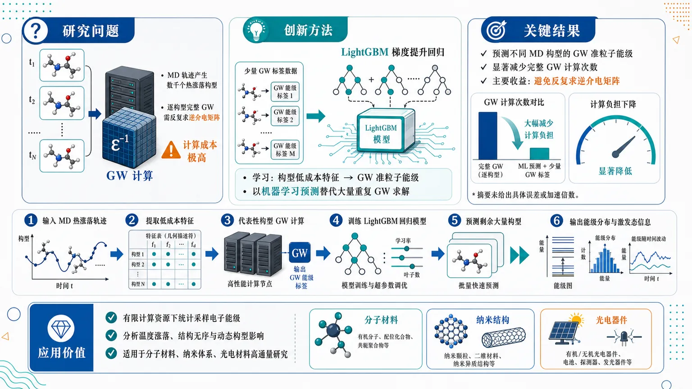
研究问题分子动力学轨迹会产生数千个热涨落构型，若对每个构型逐一执行完整 GW 计算，需要反复求逆介电矩阵，计算成本极高；核心问题是如何在保留 GW 准粒子能级精度与激发态信息的同时，快速获得整条 MD 轨迹上的能级变化。创新方法以 LightGBM 梯度提升回归模型作为核心预测器，用少量已计算 GW 的 MD 构型作为训练样本，学习“分子构型可计算特征 → GW 准粒子能级”的映射；Aha 点是把昂贵的逐构型 GW 求解替换为轨迹上的机器学习能级预测，尤其绕开大量重复的介电矩阵求逆。工作流程输入 MD 热涨落轨迹构型；从每个构型提取低成本可计算特征；选择部分代表性构型进行高成本 GW 计算并得到准粒子能级标签；训练 LightGBM 回归模型；将训练好的模型应用到剩余大量构型；输出整条轨迹上的 GW 准粒子能级分布与随热涨落变化的激发态信息。关键结果框架能够预测 MD 轨迹中不同构型的 GW 准粒子能级，并显著减少对大量热涨落构型重复执行完整 GW 计算的需求；主要收益来自避免反复求逆介电矩阵，从而降低轨迹采样中的多体微扰计算负担。摘要未给出具体误差、加速倍数或测试体系数值。应用价值该方法可用于大规模分子动力学轨迹中的电子能级与激发态性质统计采样，使研究者能够在有限计算资源下分析温度涨落、结构无序和动态构型对准粒子能级的影响，适合分子材料、纳米体系和光电材料的高通量电子结构研究。核心概览
该论文属于计算材料/分子电子结构与机器学习交叉方向，提出用 LightGBM 预测分子动力学轨迹中 GW 准粒子能量，以减少逐构型 GW 计算的高昂成本。
方法要点
- 采用 LightGBM 梯度提升机器学习框架预测 GW 准粒子能量。
- 输入特征限定为可由常规计算获得的量，避免依赖昂贵的 GW 中间量。
- 面向分子动力学采样中的大量热构型，替代或减少逐一进行 GW 计算的需求。
- 核心目标是绕开对数千个构型逐一求逆介电矩阵这一计算瓶颈。
- 方法定位为在保持激发态电子结构描述能力的同时，加速 MD 轨迹上的能级评估。
关键结果
- 摘要明确指出，该框架可用于预测 GW 准粒子能量。
- 摘要声称该方法能够显著提升分子动力学轨迹上 GW 能级评估效率。
- 摘要强调其目标是在不逐一求逆介电矩阵的情况下，仍保留对激发态电子结构的描述能力。
- 具体预测精度、训练集规模、测试体系、加速倍数等摘要未详述。
创新性判断
- 可能的新颖点在于：将 LightGBM 这类梯度提升模型系统用于 MD 热构型序列上的 GW 准粒子能量预测，从而缓解大规模轨迹采样中的 GW 计算瓶颈。
- 另一潜在创新是：仅使用常规计算即可获得的特征，而非依赖昂贵的介电矩阵或完整 GW 计算信息，来近似激发态相关能级。
- 相比传统逐构型 GW 计算，该工作的新意可能主要体现在“机器学习代理模型 + MD 轨迹 GW 能级评估”的效率提升策略。
- 但摘要未详述与既有机器学习 GW 方法、Δ-learning 方法或其他代理模型的直接比较，因此创新幅度和相对优势仍不确定。
-
09
📊 含图深析
📄 摘要：提出 NanoPhotoNet-Lase，将 Maxwell 矢量 Helmholtz 方程与染料增益介质四能级速率方程嵌入 PINN，用于主动纳米光子器件设计。框架面向超表面纳米激光器，可物理约束地预测光场与激光动力学，并支持按需相干纳米激光超透镜和波束偏转设计。
💡 亮点：NanoPhotoNet-Lase 把电磁方程和四能级激光速率方程耦合进 PINN，用于超表面纳米激光器反设计。它把主动增益动力学纳入可微设计流程。
📖 展开分析 + 配图
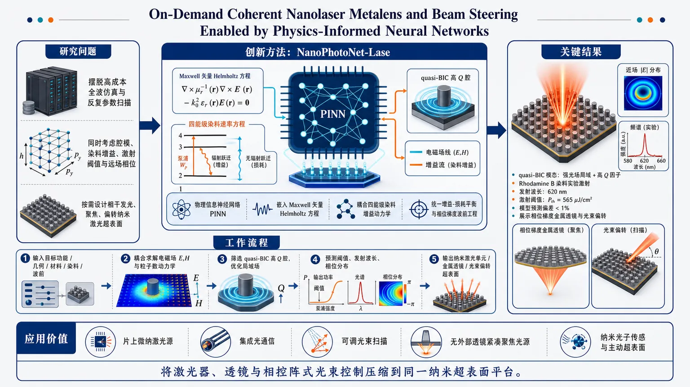
研究问题如何摆脱主动纳米光子激光器依赖高成本全波仿真和反复参数扫描的设计瓶颈，在同时考虑电磁腔模、染料增益动力学、激射阈值和远场相位控制的情况下，快速按需设计可相干发光、聚焦或偏转的纳米激光超表面。创新方法提出 NanoPhotoNet-Lase：把 Maxwell 矢量 Helmholtz 方程与四能级染料增益介质速率方程直接嵌入物理信息神经网络训练，使网络不只是拟合几何到光谱的黑箱映射，而是在物理约束下预测纳米结构光场、quasi-BIC 高 Q 腔、激射阈值与发射波长；关键 Aha 点是将“主动激光增益-损耗平衡”和“超表面相位梯度波前工程”统一进一个可快速推理的 AI 设计框架。工作流程输入目标功能与器件参数，包括纳米结构几何、材料配置、染料增益介质和期望发射方向或聚焦波前；PINN 内部耦合求解电磁场分布与四能级粒子数动力学；筛选支持 quasi-BIC 的高折射率超表面腔，优化强局域场和高 Q 因子；预测激射阈值、发射波长和相位分布；输出可实验制备的纳米激光单元、相位梯度金属透镜或光束偏转超表面。关键结果模型设计的高折射率超表面腔支持 quasi-BIC 模态，实现强光场局域和高品质因子；使用 Rhodamine B 染料作为增益介质完成实验激射，发射波长为 620 nm，测得激射阈值 Pth = 565 μJ/cm²；阈值和波长与模型预测偏差低于 1%；进一步展示相位梯度纳米激光金属透镜和光束偏转，实现相干、定向、聚焦或转向发射。应用价值为相干发光超表面提供实时、可解释、可扩展的设计范式，可用于片上微纳激光源、集成光通信、可调光束扫描、无外部透镜的紧凑聚焦光源、纳米光子传感和主动超表面波前工程；其价值在于把激光器、透镜和相控阵式光束控制压缩到同一纳米超表面平台中。第一部分：核心概览 (Overview)
该研究提出 NanoPhotoNet-Lase：将 Maxwell 矢量 Helmholtz 方程 与 四能级染料增益介质速率方程 嵌入神经网络训练过程，用于快速设计 主动纳米光子超表面激光器。核心贡献在于把 PINN 物理约束预测、准 BIC 高 Q 腔设计、Rhodamine B 实验验证、相位梯度纳米激光金属透镜与光束偏转整合到同一框架中，实现阈值与波长预测误差低于 1%，展示了 AI 驱动相干发光超表面设计的可扩展路径。
---
第二部分：结构化快速回顾
《On-Demand Coherent Nanolaser Metalens and Beam Steering Enabled by Physics-Informed Neural Networks》（None，）
背景
主动纳米光子器件设计通常依赖高成本电磁仿真与反复参数扫描。人工智能与物理建模结合为快速设计 metasurface nanolasers 提供新路径，尤其适用于需要同时处理 光场分布、增益动力学、激射阈值、远场相位控制 的复杂系统。
方法
构建 NanoPhotoNet-Lase，一种 physics-informed neural network, PINN 框架。网络学习过程中直接嵌入 Maxwell's vector Helmholtz equation 与 four-level population dynamics of dye gain media，用于预测任意纳米结构几何与材料配置下的光学响应和激射阈值。
结果
模型识别出支持 quasi-bound states in the continuum, quasi-BICs 的高折射率超表面腔结构，获得强光场局域和高品质因子。实验采用 Rhodamine B dye 作为增益介质，实现 620 nm 发射，测得激射阈值 Pth = 565 μJ/cm²，与模型预测偏差 低于 1%。
讨论
框架不仅用于单个纳米激光腔优化，还进一步扩展到 phase-gradient nanolaser metalens 与 beam steering，实现相干、定向、聚焦或偏转的激光发射，体现出从器件级预测到波前工程的连续设计能力。
局限
可见材料仅包含摘要和 arXiv 元数据，缺少完整方法、数据集规模、网络结构、训练损失、实验平台、误差统计、消融实验、对照基线和复现实验细节。当前证据足以确认核心主张，但不足以独立评估鲁棒性、泛化能力和统计可靠性。
结论
物理信息神经网络 + 纳米激光超表面 + 相位梯度波前控制构成主要技术路线。该路线把可解释物理方程约束与实验纳米光子学结合，支持实时、可扩展、按需设计相干发光超表面器件。
---
第三部分：逐章节冷凝解析 (Section-by-Section Condensing)
可获得的原始材料仅包含 arXiv 页面信息与摘要，未提供完整 PDF 正文。因此，严格可解析的原始章节标题只有 Abstract 以及 arXiv 元数据字段。以下所有细节均限于已给出的英文内容，不补造不存在的实验、模型或章节信息。
---
Abstract
Physics-informed neural network framework for active nanophotonic design
NanoPhotoNet-Lase 被定义为用于 metasurface nanolasers 的 physics-informed neural network, PINN 框架，目标是加速主动纳米光子器件设计。关键创新不是单纯用神经网络拟合仿真数据，而是把激光器相关的物理方程直接纳入学习过程。摘要中的原文表述为：*"we present NanoPhotoNet-Lase, a physics-informed neural network (PINN) framework that embeds the electromagnetic and rate equations of lasing directly into its learning process to expedite the design of metasurface nanolasers."*
该句明确给出三层信息：
- 框架名称：NanoPhotoNet-Lase；
- 方法类型：PINN；
- 物理嵌入对象：electromagnetic equations 与 rate equations of lasing；
- 应用对象：metasurface nanolasers。
Coupled electromagnetic and gain-medium dynamics
核心物理模型由 Maxwell's vector Helmholtz equation 与 four-level population dynamics 组成，覆盖纳米腔中电磁模态与染料增益介质粒子数动力学之间的耦合。原文为：*"By coupling Maxwell's vector Helmholtz equation with the four-level population dynamics of dye gain media, the model achieves physics-guided prediction of optical responses."*
这意味着模型不只预测几何到光谱响应的黑箱映射，而是同时约束：
- 电磁场传播与共振模式，由矢量 Helmholtz 方程控制；
- 增益介质吸收、泵浦、受激辐射与弛豫过程，由四能级速率方程描述；
- 光学响应预测，通过物理约束实现 physics-guided prediction。
Rapid lasing threshold estimation across arbitrary designs
模型被用于快速估计不同纳米结构和材料条件下的 lasing thresholds。摘要中的关键表述为：*"enabling rapid estimation of lasing thresholds across arbitrary nanostructure geometries and material configurations."*
该主张包含两个重要范围：
- 几何范围：arbitrary nanostructure geometries，即不限于单一预设几何；
- 材料范围：material configurations，即允许材料参数变化；
- 输出目标：lasing thresholds，激射阈值是主动纳米激光器设计的核心性能指标。
然而，已给材料未披露训练数据规模、几何参数维度、材料参数边界、阈值定义方法或推理速度，因此“arbitrary”的实际泛化边界尚无法量化。
High-index metasurface cavity and quasi-BIC optimization
设计对象包含 high-index metasurfaces cavity，模型识别了支持 quasi-bound states in the continuum, quasi-BICs 的优化几何。原文为：*"Using high-index metasurfaces cavity, the NanoPhotoNet-Lase model identifies optimized geometries supporting quasi-bound states in the continuum (BICs) with strong confinement and high-quality factors."*
该要点涉及三个关键物理目标：
- quasi-BIC 模态：通过对理想 BIC 的对称性破缺或有限尺寸扰动，使其能够与外界辐射通道弱耦合；
- strong confinement：增强局域电磁场，提高增益介质与腔模相互作用；
- high-quality factors：降低腔损耗，通常有助于降低激射阈值。
摘要未给出具体 Q factor 数值、模式体积、几何参数或仿真边界条件，因此无法判断腔性能在同类 BIC 纳米激光器中的绝对水平。
Experimental lasing with Rhodamine B dye
预测激射在实验中通过 Rhodamine B dye 增益介质实现。原文为：*"The predicted lasing was experimentally realized using Rhodamine B dye as gain medium."*
该句确认理论设计并非停留在数值阶段，而是进入实验验证。Rhodamine B 是常用有机染料增益介质，发射谱通常覆盖橙红区域，与后续 620 nm 发射结果一致。
已给材料未包含：
- 染料浓度；
- 溶剂或聚合物基质；
- 泵浦波长与脉宽；
- 样品制备工艺；
- 光谱线宽；
- 输入-输出曲线；
- 偏振与时间相干性数据。
因此，实验可重复性仍无法从摘要单独验证。
Threshold and emission wavelength agree with model predictions
实验测得激射阈值为 Pth = 565 μJ/cm²，发射波长为 620 nm，二者与模型预测偏差 低于 1%。摘要原文给出：*"The measured lasing threshold (Pth = 565 uJ/cm2) and emission wavelength of 620 nm exhibited below 1% deviation from model predictions."*
这是摘要中最硬的定量证据。其意义在于：
- 阈值预测准确性：若偏差 <1%，模型对增益-损耗平衡点的预测非常接近实验；
- 波长预测准确性：620 nm 发射位置与腔模/增益谱匹配预测一致；
- 实验闭环验证：PINN 设计结果得到实际激射现象支持。
但缺失信息包括：
- 预测阈值的具体数值；
- 预测波长的具体数值；
- 测量误差条；
- 样品数量 n；
- 阈值提取方法；
- 统计显著性或重复性。
因此，below 1% deviation 是强主张，但需要完整正文和补充材料支持其统计可信度。
Phase-gradient nanolaser metalens and beam steering
框架进一步设计 phase-gradient nanolaser metalens 与 beam steering 器件，实现可控相干发射方向和聚焦功能。摘要中的核心句为：*"Importantly, the framework enables design phase-gradient nanolaser metalens and beam steering that demonstrated coherent, directional, focused or steered emission."*
该结果的科学意义在于从“单点纳米激光器”扩展到“发光波前工程”：
- phase-gradient 控制出射相位；
- metalens 实现聚焦发射；
- beam steering 实现非轴向定向发射；
- coherent emission 表明多个发光单元之间存在相位相关性或腔模相干输出。
摘要未提供焦距、数值孔径 NA、偏转角、远场光斑尺寸、发散角、相干长度或相位误差，因此只能确认概念实现，无法评估光束质量。
Scalable and interpretable design paradigm
研究定位为连接 physics-informed machine learning 与 experimental nanophotonics 的设计范式，强调实时性、可解释性和可扩展性。原文为：*"This work bridges physics-informed machine learning with experimental nanophotonics, establishing a scalable paradigm for real-time, physically interpretable design of coherent light-emitting metasurfaces."*
该句包含领域定位：
- physics-informed machine learning：机器学习受物理方程约束；
- experimental nanophotonics：实验级纳米光子器件验证；
- real-time design：推理速度可能显著快于传统全波仿真；
- physically interpretable design：输出受电磁学与速率方程解释；
- coherent light-emitting metasurfaces：目标器件为相干发光超表面，而非被动透镜或非相干 LED 阵列。
由于没有完整正文，实时设计速度、硬件配置和与 FDTD/FEM 的速度对比无法量化。
---
Title
On-demand coherent nanolaser metalens and beam steering
标题中的 On-Demand 指向可按功能需求快速生成器件设计，而不是一次性特定结构优化。Coherent Nanolaser Metalens 表示激光发射源本身集成了金属透镜相位功能，不是外加被动透镜。Beam Steering 表示通过纳米结构相位梯度调控出射方向。标题完整表述为：*"On-Demand Coherent Nanolaser Metalens and Beam Steering Enabled by Physics-Informed Neural Networks."*
该标题将三个研究线索合并：
- 主动相干光源：nanolaser；
- 波前整形器件：metalens / beam steering；
- AI 设计引擎：physics-informed neural networks。
---
Metadata
Single-author arXiv optics submission
arXiv 元数据显示该稿件属于 physics.optics，提交时间为 1 Jul 2026，作者为 Omar A. M. Abdelraouf。页面信息包括：*"arXiv:2607.00739 (physics) [Submitted on 1 Jul 2026]"* 以及 *"Authors: Omar A. M. Abdelraouf."*
学科分类为：*"Subjects: Optics (physics.optics)."*
该分类说明研究主要面向光学与纳米光子学，而非纯机器学习或材料化学。
Preprint status and citation information
稿件以 arXiv 预印本形式发布，引用标识为：*"Cite as: arXiv:2607.00739 [physics.optics]"*。页面还显示 DOI 链接：*"https://doi.org/10.48550/arXiv.2607.00739"*，并注明 arXiv-issued DOI pending registration。
这意味着当前材料属于预印本记录，同行评议状态、期刊版本和最终修订内容尚未由页面信息确认。
---
第四部分：深度理解与语言支持 (Understanding & Nuance)
1. 术语解析
#### Physics-informed neural network, PINN
PINN 不是普通监督学习网络。普通网络主要依赖输入-输出样本拟合；PINN 把物理方程残差加入损失函数，使网络输出必须尽量满足已知物理规律。语境中的关键表达是 *"embeds the electromagnetic and rate equations of lasing directly into its learning process"*。
微妙差别：
- data-driven neural network：从数据中学规律；
- physics-informed neural network：从数据和物理方程共同学规律；
- physics-guided prediction：预测不是任意插值，而受到 Maxwell 方程和速率方程限制。
#### Maxwell's vector Helmholtz equation
矢量 Helmholtz 方程 是频域电磁场方程，用于描述介质中电场或磁场的空间分布、共振模式和边界条件。这里的 vector 很关键，因为纳米结构中的电磁场具有偏振、方向耦合和近场矢量特性，不能简单用标量波方程处理。
语境对应：*"coupling Maxwell's vector Helmholtz equation with the four-level population dynamics."*
微妙差别：
- scalar Helmholtz equation：适合简化波动问题；
- vector Helmholtz equation：更适合高折射率纳米结构、强散射结构和偏振敏感超表面。
#### Four-level population dynamics
四能级粒子数动力学 描述染料增益介质在泵浦、非辐射弛豫、受激辐射和基态恢复之间的粒子数变化。它比简单增益常数更真实，因为激射阈值取决于粒子数反转是否足以补偿腔损耗。
语境对应：*"the four-level population dynamics of dye gain media."*
微妙差别：
- gain coefficient：常被当作固定参数；
- population dynamics：增益随泵浦、寿命、受激辐射过程动态变化；
- four-level system：通常比三能级系统更容易实现粒子数反转。
#### Quasi-bound states in the continuum, quasi-BICs
BIC 是处于辐射连续谱中却不向外辐射的束缚态，理想情况下 Q 值可趋于无穷。真实器件有限尺寸、材料损耗和结构扰动会让 BIC 变成 quasi-BIC，即仍然具有高 Q，但允许一定辐射耦合。
语境对应：*"optimized geometries supporting quasi-bound states in the continuum (BICs) with strong confinement and high-quality factors."*
微妙差别：
- ideal BIC：理论上不辐射，难以直接输出激光；
- quasi-BIC：有有限辐射通道，既能高 Q 储能，又能输出光；
- 对纳米激光器而言，quasi-BIC 比完全暗态更实用。
#### Phase-gradient nanolaser metalens
Phase-gradient metalens 通过空间变化的相位延迟把波前变成聚焦或偏转形式。这里的特殊性在于它不是被动透镜，而是 nanolaser metalens：每个单元同时参与发光和相位控制。
语境对应：*"design phase-gradient nanolaser metalens and beam steering."*
微妙差别：
- passive metalens：外部光入射后被聚焦；
- nanolaser metalens：器件自身发出相干光并直接形成聚焦波前；
- beam steering：相位梯度近似线性时，远场主瓣偏转到指定角度。
---
2. 疑难查证
#### 为什么把 Maxwell 方程和速率方程耦合很重要？
纳米激光器不是单纯的“有腔就会发光”。激射条件本质上是：
增益 ≥ 损耗
损耗由纳米腔的辐射泄漏、吸收损耗和散射损耗决定；增益由染料分子的粒子数反转决定。
Maxwell 方程回答：
- 腔模在哪里？
- 电场强在哪里？
- Q 值多高？
- 模式和外界如何耦合？
速率方程回答：
- 泵浦后有多少分子进入激发态？
- 粒子数反转能否形成？
- 受激辐射何时超过自发辐射？
- 阈值泵浦强度是多少？
两者必须耦合，因为光场越强，受激辐射越强；增益越高，腔模越容易达到阈值。单独做电磁仿真只能知道“腔好不好”，不能准确知道“多大泵浦会激射”。
#### quasi-BIC 为什么适合低阈值纳米激光？
激光阈值近似与腔损耗成正比。Q 值越高，光在腔内停留越久，单位泵浦产生的受激辐射越容易积累。
BIC 类模式的优势是高 Q 和强局域，但理想 BIC 完全不向外辐射，反而不适合作为可观测激光输出。quasi-BIC 通过轻微打破对称性或有限尺寸效应引入可控泄漏：
- 泄漏太小：光出不来；
- 泄漏太大：Q 值下降、阈值升高；
- quasi-BIC 的设计重点：在高 Q 和可输出之间找到平衡。
#### “coherent, directional, focused or steered emission” 到底意味着什么？
这句话描述的是发射光的四种质量：
- coherent：发光具有明确相位关系，区别于普通荧光；
- directional：能量集中到特定方向，区别于各向发散；
- focused：波前在空间某处汇聚，类似透镜聚焦；
- steered：主发射方向可偏转，类似相控阵天线。
关键难点是：普通金属透镜只需要调控透射相位；纳米激光金属透镜需要每个发光单元同时满足 激射条件、相位条件、振幅均匀性、相干耦合条件。这就是 AI 与物理约束结合具有价值的原因。
---
第五部分：创新评估与关联 (Synthesis & Novelty)
1. 创新性判断
#### 从被动超表面 AI 设计推进到主动纳米激光超表面设计
过去 2–5 年内，机器学习在纳米光子学中的常见应用包括：
- 被动超表面透镜逆向设计；
- 光谱滤波器、吸收器、偏振器优化；
- FDTD/FEM 仿真的神经网络代理模型；
- 拓扑优化与生成式模型设计纳米结构。
相较之下，该研究聚焦 主动相干发光超表面。主动器件比被动器件更复杂，因为性能不只由散射矩阵决定，还受 增益饱和、粒子数反转、激射阈值、腔损耗、相干输出 控制。创新点在于把 lasing rate equations 和 electromagnetic equations 同时嵌入 PINN。
#### 从单一纳米激光器优化扩展到波前工程
许多 BIC 纳米激光研究集中在降低阈值、提高 Q 值或控制偏振。该研究进一步瞄准 nanolaser metalens 和 beam steering，即让激光器阵列本身成为波前调制器。
突破点在于：
- 不只是“做出一个会激射的超表面”；
- 而是“按需生成具有聚焦或偏转功能的相干激光超表面”。
#### 从黑箱代理模型转向物理可解释预测
常规神经网络代理模型容易在训练分布外失效，也难以解释为什么某个几何能降低阈值。PINN 的优势在于物理残差约束提高可解释性。摘要中的关键定位是 *"physically interpretable design of coherent light-emitting metasurfaces."*
该点解决的问题是：
- 黑箱模型缺乏物理可信度；
- 激射阈值预测对增益和损耗高度敏感；
- 仅靠数据拟合难以保证满足 Maxwell 方程与激光速率方程。
#### 实验预测误差低于 1% 是强验证主张
Pth = 565 μJ/cm² 与 620 nm 发射波长的实验结果偏离预测 below 1%，若完整数据支持，则代表模型对实际纳米激光器的预测非常精确。
这解决了机器学习纳米光子设计中的一个关键痛点：很多模型只在仿真数据上表现良好，无法经受制备误差、材料色散、增益非理想性和实验噪声检验。
#### 可扩展实时设计范式是潜在领域地位
摘要将该框架定位为 *"a scalable paradigm for real-time, physically interpretable design."* 若完整正文给出显著快于全波仿真的推理速度，并展示多种几何与材料泛化能力，则该工作可被视为 AI-assisted active metasurface lasers 的代表性路线之一。
当前可确认的新颖性集中在三者耦合：
- PINN 物理约束建模；
- quasi-BIC 纳米激光实验实现；
- 相干发光金属透镜与光束偏转设计。
-
10
📊 含图深析
📄 摘要：面向电池供电加速度节点的结构健康监测，在传感端加入小型模态滤波器、水平穿越时间对比编码器和紧凑脉冲神经网络，用于多层建筑刚度退化损伤定位。单一阈值 θ 同时控制准确率、突触操作数和离开传感器的数据量，使计算与传感信号事件含量相关。
💡 亮点：水平穿越尖峰编码把建筑振动损伤定位转为事件驱动推理，阈值 θ 同时调节精度、能耗和通信量。该方案适合低功耗近传感器结构监测节点。
📖 展开分析 + 配图
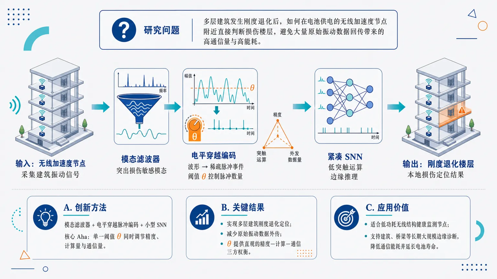
研究问题多层建筑发生刚度退化后，如何在电池供电的无线加速度传感节点附近直接判断损伤所在楼层，避免把大量原始振动数据传回中心端造成高通信量和高能耗。创新方法将“模态滤波器 + 电平穿越脉冲编码 + 小型脉冲神经网络”组成近传感器损伤定位链路：先提取与结构模态相关的振动成分，再把连续加速度信号转换为稀疏脉冲事件，最后用紧凑SNN识别刚度退化位置；核心Aha点是用单一阈值θ同时控制定位精度、突触运算次数和外发数据量。工作流程输入为多层建筑无线加速度节点采集的振动信号；信号先经过模态滤波器突出结构损伤敏感的模态信息；随后通过电平穿越时间对比编码，将波形变化转化为脉冲事件序列；稀疏脉冲输入小型SNN；网络输出对应的刚度退化楼层或损伤位置；阈值θ贯穿编码阶段，用于调节脉冲数量、计算负担和通信数据量。关键结果该流程能够面向多层建筑进行刚度退化定位；近传感器处理减少了传感器向外传输的原始数据；电平穿越阈值θ提供了一个直观的精度—计算量—通信量三方权衡旋钮；论文摘要强调其适合低功耗无线加速度节点，但未给出具体精度、能耗、压缩率、网络规模或实验建筑层数等数值细节。应用价值适用于建筑、桥梁等结构健康监测中的低功耗边缘部署，让无线传感节点不仅采集振动，还能本地完成初步损伤定位，降低通信能耗，延长电池寿命，并为大规模长期监测系统提供轻量化智能诊断能力。核心概览
本文属于结构健康监测与近传感器智能计算方向，提出在电池供电加速度节点端集成模态滤波、水平穿越脉冲编码和紧凑脉冲神经网络，用于多层建筑刚度退化损伤定位，并兼顾低功耗与低数据传输量。
方法要点
- 在加速度传感节点端加入小型模态滤波器，用于提取或强化与结构模态相关的信息。
- 采用水平穿越时间对比编码器，将连续振动信号转换为事件/脉冲形式。
- 使用紧凑脉冲神经网络在近传感器端执行损伤定位推断。
- 通过单一阈值 θ 调节事件产生过程，从而影响准确率、突触操作数和外传数据量。
- 计算负载与传感信号的事件含量相关，即信号触发事件越多，计算与通信可能越多。
关键结果
- 摘要明确指出该方法面向多层建筑刚度退化损伤定位。
- 单一阈值 θ 可同时控制定位准确率、突触操作数以及离开传感器的数据量。
- 该设计使计算和通信需求与信号事件含量相关，适合电池供电加速度节点。
- 具体准确率、功耗、压缩比、突触操作数降低幅度等数值结果，摘要未详述。
创新性判断
- 可能的新颖点在于将模态滤波、水平穿越事件编码和紧凑脉冲神经网络联合部署在传感端，用于结构损伤定位；这一点相对传统云端/边缘端集中处理的结构健康监测方法具有近传感器计算特色。
- 使用单一阈值 θ 同时调控准确率、计算量和通信数据量，可能是其系统级权衡机制上的创新；但具体是否优于已有自适应事件编码或脉冲神经网络方法，摘要未详述。
- 面向电池供电加速度节点的事件驱动损伤定位框架具有低功耗潜力，但实际能耗优势和硬件实现细节摘要未详述。
-
11
📊 含图深析
📄 摘要：题名显示 BiL-AttNet 是一种用于材料性质预测的深度学习架构，目标是降低对固定结构表示的依赖，实现结构无关的性质建模。已知发表信息为 Computational Materials Science 第 271 卷，2026 年 6 月 25 日；输入摘要未提供数据集、网络细节、性质类型或误差指标。
💡 亮点：BiL-AttNet 面向结构无关的材料性质预测，强调深度学习表征对不同材料结构的适配性。当前列表缺少摘要与数值结果，无法判断其相对基线表现。
📖 展开分析 + 配图
研究问题如何在缺少统一晶体/分子结构表示的情况下预测材料性质：画面可表现为多种材料形态（晶体格点、分子链、无序材料块）汇入同一个预测模型，核心矛盾是“结构形式不同，但都需要得到性质数值”。创新方法提出 BiL-AttNet 深度学习架构，核心 Aha 点是面向“结构无关”的材料表示学习：不把模型绑定到某一种固定结构输入形式，而是尝试从通用材料特征中学习与性质相关的关键信息；名称暗示可能包含双向建模与注意力聚焦机制，可视觉化为双向信息流与高亮关键特征点。工作流程输入不同类型的材料信息或材料特征，经 BiL-AttNet 编码为统一隐空间表示；模型在内部提取跨结构形式可共享的特征，并通过注意力式聚焦突出对性质预测更重要的部分；最终输出目标材料性质预测值，如强度、能带、稳定性或其他物性指标。关键结果论文摘要未给出具体数据集、评价指标、基线对比或数值提升；可确定的主要结果是提出了一个用于结构无关材料性质预测的深度学习框架。信息图中应以“无明确性能数字”的占位式结果呈现，突出模型目标而非夸大实验优势。应用价值该研究有助于减少材料性质预测对特定结构格式和人工结构描述符的依赖，潜在支持跨晶体、分子和复杂材料体系的快速筛选；实际意义是为高通量材料发现提供更通用的预测引擎，降低建模门槛并加速候选材料评估。核心概览
该论文提出 BiL-AttNet，一种结合深度学习与注意力机制的材料性质预测架构，面向计算材料科学中的“结构无关”预测任务，旨在不依赖固定结构表示学习材料与性质映射。
方法要点
- 提出名为 BiL-AttNet 的深度学习架构用于材料性质预测。
- 方法核心包含 注意力机制，用于增强模型对材料表征中关键信息的捕捉能力。
- 目标是实现 structure-agnostic 预测，即不依赖固定或特定形式的结构表示。
- 模型试图学习材料组成/结构信息与目标性质之间的映射关系。
- 摘要未详述具体输入特征、网络层设计、训练策略、损失函数或对比模型。
关键结果
- 论文声称 BiL-AttNet 可用于结构无关的材料性质预测。
- 摘要表明其属于深度学习辅助材料性质预测方向。
- 摘要未提供具体数据集、预测性质类型、误差指标、性能提升幅度或消融实验结果。
- 摘要未详述其相较已有模型的定量优势。
创新性判断
- 可能的新颖点在于将 双向学习结构/序列建模思想 与 注意力机制 结合，用于材料性质预测；但“BiL”的具体含义摘要未详述。
- 另一潜在创新是强调 结构无关预测，即减少对固定晶体结构表征或特定结构输入格式的依赖，这在材料性质预测中具有实际价值。
- 若其确能在缺少统一结构信息的条件下保持较好预测能力，则相对依赖晶体图、三维结构或固定描述符的方法具有应用优势；但摘要未给出实验验证细节，因此该判断具有不确定性。
- 总体看，创新性可能主要体现在架构设计和输入表征适应性上，而非摘要可确认的性能突破。
-
12
📊 含图深析
📄 摘要：针对无线传感网节点级故障影响实时观测可靠性的问题，使用温度、电池寿命和传感读数等时间特征进行故障分类。比较 CNN、RNN 与 LSTM 模型，并结合实时图映射和性能分析评估节点状态识别能力；摘要未给出具体数据集规模、准确率或部署开销。
💡 亮点：CNN、RNN 与 LSTM 被用于无线传感网节点故障分类，输入包含温度、电池与传感读数时间特征。工作重点在实时图映射下比较深度模型的故障识别表现。
📖 展开分析 + 配图
研究问题无线传感器网络中单个节点可能因温度异常、电池耗尽或传感读数漂移而失效，论文关注如何利用节点时间序列状态数据，在节点级别及时识别故障节点，并以图形方式呈现整个网络的健康状态。创新方法将温度、电池寿命、传感读数等节点时间特征输入深度神经网络，对 CNN、RNN、LSTM 三类模型进行故障分类对比，并叠加实时图映射，把抽象的分类结果转化为网络拓扑中的节点状态可视化，形成“深度诊断 + 实时网络地图”的监测方案。工作流程采集无线传感器节点的温度、电池寿命和传感读数等时间序列数据；进行特征整理后分别输入 CNN、RNN、LSTM 模型训练；模型输出节点正常或故障分类结果；将结果映射到实时网络图中，用不同节点状态显示故障位置；最后结合性能分析比较不同模型的监测效果。关键结果研究实现了基于深度神经网络的无线传感器网络节点级故障分类监测，并完成 CNN、RNN、LSTM 在该任务上的能力比较；实时图映射能够直观展示故障节点和网络状态。但摘要未给出最优模型、准确率、召回率或具体性能提升数值。应用价值该研究可用于无线传感器网络的运维监控、故障预警和节点维护决策，使管理者在拓扑图上快速定位异常节点，减少人工排查成本，提高环境监测、工业物联网、农业传感网络等场景中的系统可靠性与连续运行能力。核心概览
该论文属于无线传感网（WSN）故障监测与深度学习应用方向，研究利用节点时间特征对节点级故障进行分类，并比较 CNN、RNN、LSTM 在实时图映射场景下的状态识别能力。
方法要点
- 使用温度、电池寿命、传感读数等节点时间序列/时间相关特征进行故障分类。
- 对 CNN、RNN 与 LSTM 三类深度神经网络模型进行对比评估。
- 引入实时图映射，用于呈现或辅助分析无线传感网中节点状态。
- 结合性能分析评估模型对节点状态或故障的识别能力。
- 摘要未详述数据集来源、规模、故障类型定义、训练配置或评价指标细节。
关键结果
- 摘要表明该方法面向提升无线传感网实时观测可靠性中的节点级故障识别问题。
- 摘要明确提到比较了 CNN、RNN 和 LSTM 的节点状态识别能力。
- 摘要未给出具体准确率、召回率、F1 值、延迟、能耗或部署开销等量化结果。
- 摘要未说明哪一种模型表现最佳，因此无法判断最终推荐模型。
创新性判断
- 可能的新颖点在于将深度神经网络故障分类与无线传感网节点级实时图映射结合，用于动态监测节点状态。
- 相比仅做离线故障分类的工作，该研究可能更强调“实时观测”和“图映射”下的性能分析，但这一点仅能从摘要合理推断。
- CNN、RNN、LSTM 用于时序故障识别本身并非高度新颖，创新性更可能体现在具体系统集成、实时可视化或节点级监测流程上；具体贡献强度摘要未详述。
-
13
📄 摘要：用第一性原理与量子输运模拟研究电荷有序交替磁体 α-Fe2PO5。尽管费米能级附近交替磁自旋劈裂较弱，Fe2+ 与 Fe3+ 在每个子晶格内因电荷有序变为不等价；褶皱 C 型磁结构进一步导致实空间自旋选择性，产生区别于动量空间劈裂图像的原子选择性自旋极化输运。
💡 亮点：α-Fe2PO5 中 Fe2+/Fe3+ 电荷有序与褶皱 C 型磁结构导致实空间自旋选择输运。该结果把交替磁体的自旋电子学机制从动量劈裂扩展到原子位点选择性。
📖 展开分析 + 配图
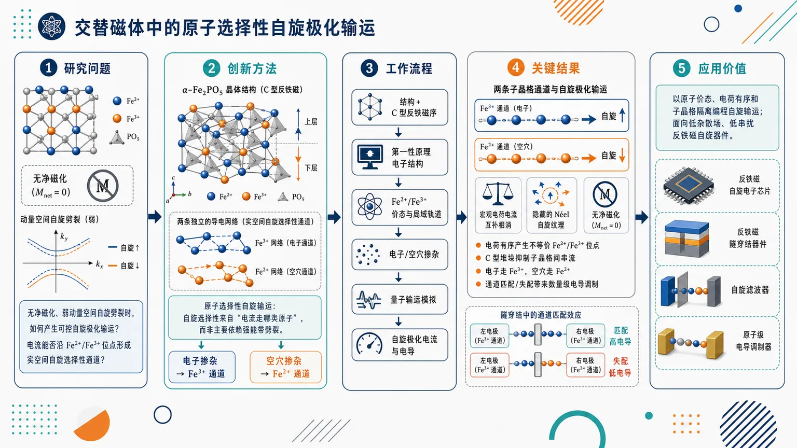
研究问题在无净磁化且费米能级附近动量空间自旋劈裂较弱的交替磁体中，如何仍然产生可控的自旋极化输运？核心对象是电荷有序 α-Fe₂PO₅：电流是否能不依赖强能带自旋劈裂，而沿 Fe²⁺/Fe³⁺ 原子位点形成实空间自旋选择性通道。创新方法提出“原子选择性自旋输运”机制：电荷有序把铁位点分成 Fe²⁺ 与 Fe³⁺ 两类导电网络，褶皱 C 型反铁磁堆垛削弱子晶格间串流；电子掺杂点亮 Fe³⁺ 通道，空穴掺杂点亮 Fe²⁺ 通道。Aha 点是：自旋选择性来自“电流走哪类原子”，而不是主要来自“k 空间能带劈裂多强”。工作流程以 α-Fe₂PO₅ 晶体结构和 C 型反铁磁序为输入，进行第一性原理电子结构计算，识别 Fe²⁺/Fe³⁺ 价态、局域轨道贡献和费米能级附近态；再引入电子/空穴掺杂，用量子输运模拟追踪载流子在两个反铁磁子晶格及不同 Fe 位点上的传播；最后比较 Fe³⁺/Fe²⁺ 通道的匹配与失配，输出自旋极化电流、隐藏 Néel 自旋纹理和隧穿电导调制。关键结果电荷有序产生不等价 Fe²⁺/Fe³⁺ 原子位点，C 型反铁磁层状堆垛抑制子晶格间输运；电子掺杂主要通过 Fe³⁺ 通道导电，空穴掺杂主要通过 Fe²⁺ 通道导电。两个反铁磁子晶格上的通道携带相反自旋极化，使总电荷流宏观补偿但保留隐藏 Néel 自旋特征；在一体化 α-Fe₂PO₅ 隧穿结中，原子通道匹配/失配可带来数量级电导调制。应用价值为交替磁体自旋电子学提供实空间器件设计原则：用原子价态、电荷有序和子晶格隔离来编程自旋输运。该机制有望用于低杂散场、低串扰的反铁磁自旋器件，以及基于 Fe²⁺/Fe³⁺ 通道开关的隧穿结、自旋滤波器和原子级可控电导调制器。第一部分：核心概览 (Overview)
该研究提出一种区别于传统动量空间自旋劈裂的反铁磁自旋输运机制：在电荷有序交替磁体 α-Fe₂PO₅ 中，Fe²⁺/Fe³⁺ 原子位点不等价性与 C 型反铁磁层状堆垛共同产生实空间原子选择性自旋极化输运。电子/空穴掺杂分别激活 Fe³⁺/Fe²⁺ 主导通道，并在两个反铁磁子晶格上携带相反自旋极化，形成全局补偿但具有隐藏 Néel 自旋特征的电流。该工作将交替磁体自旋电子学从能带自旋劈裂扩展到原子级通道工程。
---
第二部分：结构化快速回顾
《Atom-selective spin-polarized transport in a charge-ordered altermagnet》（None，）
背景
交替磁体能够在无净磁化条件下实现自旋极化输运，通常依赖动量空间自旋劈裂解释。α-Fe₂PO₅ 的特殊性在于，即使费米能级附近的交替磁性自旋劈裂较弱，仍能通过实空间原子选择性通道产生自旋选择性。
方法
使用第一性原理计算与量子输运模拟研究 α-Fe₂PO₅ 的电子结构、原子轨道贡献、反铁磁子晶格输运通道，以及掺杂条件下的自旋极化输运行为。
结果
电荷有序产生不等价的 Fe²⁺ 与 Fe³⁺ 位点；褶皱 C 型反铁磁堆垛抑制子晶格间输运。电子掺杂主要激活 Fe³⁺ 通道，空穴掺杂主要激活 Fe²⁺ 通道。两个通道在两个反铁磁子晶格上携带相反自旋极化。
讨论
输运自旋极化不再主要由全局动量空间自旋分裂决定，而由局域原子价态、子晶格隔离、掺杂选择性共同控制。由此产生的电流在总电荷上补偿，但保留隐藏 Néel 自旋特征。
局限
可用材料未给出具体计算参数、能带图、输运几何、U 值、k 点网格、器件尺寸、导电率数值、隧穿磁阻比或统计误差，因此无法核验定量强度与实验可实现性。
结论
α-Fe₂PO₅ 展示了基于原子选择性导电通道的交替磁体自旋功能设计原则，并可构建“一体化”隧穿结，通过通道匹配/失配实现数量级级别的电导调制。
---
第三部分：逐章节冷凝解析 (Section-by-Section Condensing)
可用原文仅包含题名、摘要、学科分类与投稿信息；未提供 Introduction、Methods、Results、Discussion、Conclusion 等完整章节。以下严格基于可见原始内容解析，避免补造不存在的章节、数值或引文。
---
Title: Atom-selective spin-polarized transport in a charge-ordered altermagnet
Atom-selective transport as the central claim
题名直接锁定核心机制：原子选择性自旋极化输运，即输运通道不是仅由晶体动量、能带自旋劈裂或宏观磁矩决定，而是与特定原子位点相关。标题中的 *"Atom-selective spin-polarized transport"* 表明，自旋极化电流可在原子层级被选择性开启或调控。
Charge order as the material basis
题名中的 charge-ordered altermagnet 指向两个关键前提：其一，体系具有电荷有序，能够区分不同价态或电荷环境的原子；其二，体系属于交替磁体，即具备反铁磁式净磁矩补偿，同时可能存在自旋相关的输运响应。标题短语 *"charge-ordered altermagnet"* 暗示，电荷有序并非附带结构特征，而是输运选择性的物理基础。
Altermagnetism beyond conventional antiferromagnetism
交替磁体不同于普通共线反铁磁体，其对称性允许在无净磁化条件下产生自旋分裂或自旋选择性。题名没有使用 “antiferromagnet” 而使用 *"altermagnet"*，强调研究对象属于近年来自旋电子学中快速发展的新型磁性分类。
---
Abstract
Altermagnets enable spin transport without net magnetization
交替磁体的基础优势是可在无宏观磁矩条件下提供自旋极化输运平台。摘要开篇指出：*"Altermagnets provide a promising platform for spin-polarized transport without net magnetization"*。这一定义将研究放在无 stray field、低串扰、反铁磁自旋电子学的语境中，同时保留自旋极化输运能力。
Conventional interpretation relies on momentum-space spin splitting
传统交替磁体输运通常从动量空间自旋劈裂解释，即不同自旋态在 k 空间能带中出现分裂。摘要明确对照：*"but their transport properties are usually discussed in terms of momentum-space spin splitting"*。该句奠定创新对比对象：不是否定动量空间机制，而是引入另一种实空间机制。
α-Fe₂PO₅ displays real-space spin selectivity despite weak Fermi-level spin splitting
核心异常现象是：即使费米能级附近的交替磁性自旋劈裂较弱，α-Fe₂PO₅ 仍表现出明显实空间自旋选择性。摘要给出直接证据框架：*"we show that the charge-ordered altermagnet α-Fe₂PO₅ exhibits a distinct form of real-space spin selectivity despite weak altermagnetic spin splitting near the Fermi level"*。这说明自旋极化输运不必依赖强费米面自旋劈裂。
First-principles and quantum transport simulations provide the technical basis
研究方法为第一性原理计算与量子输运模拟。摘要写明：*"using first-principles calculations and quantum transport simulations"*。这意味着材料电子结构、原子轨道成分、掺杂响应、输运通道等结论来自理论模拟，而非实验测量。可见原文未提供 DFT 泛函、Hubbard U、赝势、k 点采样、NEGF 设置或器件结构参数。
Charge order creates inequivalent Fe²⁺ and Fe³⁺ sites
电荷有序将铁位点分化为不等价的 Fe²⁺ 与 Fe³⁺。摘要原句：*"The charge order creates inequivalent Fe²⁺ and Fe³⁺ sites within each sublattice"*。这一点是“原子选择性”的根源：输运不再仅区分上/下自旋或不同能带，而区分不同价态铁原子形成的导电网络。
Inequivalence exists within each antiferromagnetic sublattice
Fe²⁺/Fe³⁺ 的不等价性发生在每一个子晶格内部，而不仅是两个反铁磁子晶格之间。短语 *"within each sublattice"* 很关键：它意味着每个反铁磁子晶格都包含电荷有序引起的局域通道分化，从而允许两个子晶格分别承载相反自旋的对应通道。
Puckered C-type antiferromagnetic stacking suppresses inter-sublattice transport
结构磁性耦合的关键是褶皱 C 型反铁磁堆垛抑制子晶格间电荷传输。摘要写道：*"while the puckered C-type antiferromagnetic stacking suppresses inter-sublattice transport"*。这一句说明，子晶格间输运被弱化后，电流更倾向在某一子晶格或某类原子通道内传播，从而增强实空间选择性。
Electron doping activates Fe³⁺-based spin-polarized channels
电子掺杂主要激活 Fe³⁺ 基通道。摘要原文：*"electron and hole doping activate spin-polarized transport predominantly through Fe³⁺- and Fe²⁺-based channels, respectively"*。其中 electron doping → Fe³⁺ 通道，意味着导带附近态或可导电态更强地分布在 Fe³⁺ 相关轨道/位点上。
Hole doping activates Fe²⁺-based spin-polarized channels
空穴掺杂主要激活 Fe²⁺ 基通道。同一句 *"electron and hole doping activate spin-polarized transport predominantly through Fe³⁺- and Fe²⁺-based channels, respectively"* 中的 respectively 明确给出配对关系：electron → Fe³⁺，hole → Fe²⁺。这构成双极性调控：掺杂类型决定导电原子位点。
Opposite spin polarizations emerge on the two antiferromagnetic sublattices
这些原子选择性通道在两个反铁磁子晶格上携带相反自旋极化。摘要写明：*"These atom-selective channels carry opposite spin polarizations on the two antiferromagnetic sublattices"*。这与反铁磁/交替磁体的补偿特征一致：局部有自旋极化，整体可能无净自旋或无净磁化。
Charge current is globally compensated but spin texture remains hidden
输运电荷流具有全局补偿，但保留隐藏 Néel 自旋特征。摘要指出：*"giving rise to a globally compensated charge current with hidden Néel spin character"*。这表明宏观上可能难以通过普通电荷测量直接看到净自旋流，但在子晶格分辨或原子通道分辨尺度上存在 Néel 型自旋结构。
Hidden Néel spin character links transport to antiferromagnetic order
Néel 自旋特征意味着两个反铁磁子晶格上的自旋方向相反，整体磁矩抵消。短语 *"hidden Néel spin character"* 强调其“隐藏性”：不是传统铁磁电流那样出现净自旋极化，而是在子晶格/原子通道层面编码自旋信息。
All-in-one α-Fe₂PO₅ tunnel junction is proposed
研究提出由同一种材料 α-Fe₂PO₅ 构成的一体化隧穿结。摘要原文：*"We further propose an all-in-one α-Fe₂PO₅ tunnel junction"*。all-in-one 表示电极、势垒或功能层可能全部基于同一母体材料或同一相近材料体系，减少界面材料不匹配问题；但可见内容未给出器件层厚、终止面、势垒高度或输运方向。
Channel matching and mismatching yield large conductance modulation
隧穿结的电导调制来自原子选择性导电通道的匹配或失配。摘要写道：*"where matching or mismatching atom-selective conduction channels yields orders-of-magnitude conductance modulation"*。这里的 orders-of-magnitude 表明电导变化不是小幅百分比调制，而可能达到 10 倍、100 倍或更高量级；可见材料未给出具体倍率。
Real-space design principle is the broader conceptual contribution
最广泛的贡献是建立实空间设计原则，用于原子级自旋功能控制。摘要结尾：*"Our findings establish a real-space design principle for atomically controlled spin functionality and spintronic devices"*。该原则可概括为：利用电荷有序造成原子位点不等价，再借助反铁磁子晶格隔离，使不同掺杂或器件构型选择不同原子通道，从而实现自旋功能。
---
Subjects: Materials Science; Mesoscale and Nanoscale Physics
Materials science orientation
学科分类包含 *"Materials Science (cond-mat.mtrl-sci)"*，说明问题核心属于新型功能材料、磁性材料和自旋电子材料设计，而非纯粹模型哈密顿量研究。
Mesoscopic and nanoscale transport orientation
分类同时包含 *"Mesoscale and Nanoscale Physics (cond-mat.mes-hall)"*，反映其关注对象包括量子输运、隧穿结、纳米尺度电导调制等器件物理问题。
---
Submission information
Preprint status and date
该工作为 arXiv 预印本，提交日期为 *"Submitted on 1 Jul 2026"*，版本信息为 *"[v1] Wed, 1 Jul 2026 06:42:00 UTC"*。当前可用信息不能判断其是否已通过同行评议。
Authorship and DOI status
作者列表为 Liu Yang、Yuan-Yuan Jiang、Xiao-Yan Guo、Yi-Dong Liu、Xian-Zhe Chen、Wen-Jian Lu、Yu-Ping Sun、Ming Li、Ding-Fu Shao。页面列出 DOI：*"https://doi.org/10.48550/arXiv.2607.00506"*，并标注 *"arXiv-issued DOI via DataCite (pending registration)"*。
---
第四部分：深度理解与语言支持 (Understanding & Nuance)
1. 术语解析
Altermagnet
交替磁体是一类兼具反铁磁净磁矩补偿与自旋分裂特征的新型磁性体系。其关键不是“有无净磁化”，而是晶体对称性允许自旋上/下电子在动量空间或实空间呈现交替结构。摘要中的 *"spin-polarized transport without net magnetization"* 正是交替磁体区别于铁磁体的核心。
Momentum-space spin splitting
动量空间自旋劈裂指能带结构中不同自旋态在 k 空间具有不同能量色散。传统交替磁体研究常关注这一点，因为它能解释无净磁化条件下的自旋极化响应。这里的微妙处在于，α-Fe₂PO₅ 的机制并不依赖强烈的费米能级附近自旋劈裂，摘要明确使用 *"despite weak altermagnetic spin splitting near the Fermi level"*。
Real-space spin selectivity
实空间自旋选择性指不同原子、价态、子晶格或局域轨道选择性地承载某种自旋极化输运。它与 momentum-space 机制相对：前者强调“电流从哪些原子走”，后者强调“电子在哪些 k 态运动”。该研究中的 real-space selectivity 由 Fe²⁺/Fe³⁺ 通道分化产生。
Atom-selective conduction channels
原子选择性导电通道表示导电路径与特定原子类别绑定，例如 Fe³⁺ 或 Fe²⁺。摘要中的 *"Fe³⁺- and Fe²⁺-based channels"* 说明通道选择性不只是轨道选择性，也涉及电荷价态选择性。其重要性在于，可通过掺杂类型或器件界面匹配来选择通道。
Hidden Néel spin character
隐藏 Néel 自旋特征表示两个反铁磁子晶格上的自旋极化方向相反，宏观总量抵消，但局部或子晶格分辨层面仍存在有序自旋结构。“hidden” 的微妙含义是：常规总电流或总磁矩测量可能看不到净自旋信号，但原子/子晶格分辨输运中存在自旋信息。
---
2. 疑难查证
为什么弱费米能级自旋劈裂仍能产生自旋极化输运？
传统直觉认为，自旋极化输运需要费米能级附近存在明显自旋分裂，否则自旋上/下态数量近似相等，电流难以极化。α-Fe₂PO₅ 的机制绕开了这一点：输运不是由全局自旋分裂主导，而是由局域原子通道选择主导。若电子掺杂后载流子主要进入 Fe³⁺ 网络，而该网络在某一子晶格上对应特定自旋方向，那么即使总能带劈裂弱，实际导电路径仍可自旋选择。
“全局补偿电荷流”与“自旋极化通道”是否矛盾？
不矛盾。两个反铁磁子晶格可以分别携带大小相近、方向相反的自旋极化电流。总电荷流相加后仍然存在，因为电荷不带方向性自旋标签；但总自旋极化可能抵消。局部看，每条子晶格通道有自旋偏好；整体看，净磁矩和净自旋电流可为零或接近零。这就是 *"globally compensated charge current with hidden Néel spin character"* 的含义。
为什么 Fe²⁺/Fe³⁺ 价态会决定电子/空穴掺杂通道？
电荷有序使 Fe²⁺ 与 Fe³⁺ 拥有不同 d 电子占据、局域能级和轨道杂化。电子掺杂相当于向低能未占据态填电子；若这些态主要位于 Fe³⁺，电子导电就走 Fe³⁺ 通道。空穴掺杂相当于从高能已占据态移除电子；若这些态主要位于 Fe²⁺，空穴导电就走 Fe²⁺ 通道。摘要用 *"electron and hole doping activate spin-polarized transport predominantly through Fe³⁺- and Fe²⁺-based channels, respectively"* 概括了这一对应关系。
“通道匹配/失配”为何能造成数量级电导调制？
隧穿输运对波函数对称性、轨道成分、原子位点连接性高度敏感。如果左右电极的导电通道都由同类原子位点主导，例如 Fe³⁺ 对 Fe³⁺，波函数耦合强，隧穿电导高；若一侧是 Fe³⁺ 通道、另一侧是 Fe²⁺ 通道，轨道能级、空间分布或自旋结构不匹配，隧穿矩阵元显著降低，电导可下降多个数量级。这对应摘要中的 *"matching or mismatching atom-selective conduction channels yields orders-of-magnitude conductance modulation"*。
---
第五部分：创新评估与关联 (Synthesis & Novelty)
1. 创新性判断
从动量空间机制转向实空间机制
近几年交替磁体研究的主线通常围绕自旋劈裂能带、反常霍尔效应、自旋流、磁光效应、隧穿磁阻等动量空间或对称性响应展开。该研究的新颖性在于提出：即使费米能级附近 altermagnetic spin splitting 较弱，仍可通过电荷有序诱导的原子通道选择实现自旋极化输运。摘要中的对比句 *"usually discussed in terms of momentum-space spin splitting"* 与 *"real-space spin selectivity"* 直接标出范式转换。
把电荷有序引入交替磁体自旋输运设计
以往交替磁体材料设计更强调晶体对称性、磁空间群、非相对论自旋劈裂和自旋动量锁定。该研究把Fe²⁺/Fe³⁺ 电荷有序作为功能核心，使价态不等价性直接参与输运通道选择。创新点不只是发现 α-Fe₂PO₅ 是交替磁体，而是利用其 charge order 产生原子级自旋通道。
实现电子/空穴掺杂的双极性原子通道切换
电子掺杂选择 Fe³⁺，空穴掺杂选择 Fe²⁺，构成一种可调控的双极性机制。相比单一自旋滤波材料，这种机制允许通过载流子类型在不同原子通道间切换，具有更高器件可编程性。
提出隐藏 Néel 自旋电流概念的器件价值
全局补偿电流避免净磁化带来的杂散场问题，同时局域保留反铁磁 Néel 自旋信息。该设计兼具反铁磁器件的低串扰优势与自旋选择输运功能，解决了“无净磁化体系如何产生可用自旋功能”的关键难题之一。
一体化 α-Fe₂PO₅ 隧穿结降低异质界面复杂性
传统磁隧穿结常依赖铁磁电极/绝缘势垒/非磁层多材料组合，界面失配、氧化、晶格应变和自旋散射会显著影响性能。该研究提出 *"all-in-one α-Fe₂PO₅ tunnel junction"*，以同一材料体系内的通道匹配/失配实现电导调制，为交替磁体器件提供更简洁的材料架构。
解决的前人问题
前人难点主要包括：
- 弱自旋劈裂材料难以产生强自旋输运响应；
- 反铁磁或交替磁体中局域自旋信息难以转化为可控电导信号；
- 自旋电子器件常依赖复杂异质界面；
- 自旋极化输运缺乏原子级可选择设计规则。
该研究通过 Fe²⁺/Fe³⁺ 电荷有序 + C 型反铁磁子晶格隔离 + 掺杂选择性 + 通道匹配隧穿结 提供了一条实空间解决路径。
-
14
📊 含图深析
📄 摘要：提出基于单层磁体堆叠工程构造多铁金属的策略，并用第一性原理验证 6 种已实验合成材料。所得多铁金属以线性磁电响应为主，其来源不是绝缘多铁中的传统机制，而是外电场调制费米能级后产生的直接自旋-电荷相互作用。
💡 亮点：单层磁体堆叠可构造多铁金属，并在 6 种实验材料中用第一性原理验证。线性磁电响应来自费米能级调制诱导的直接自旋-电荷耦合。
📖 展开分析 + 配图
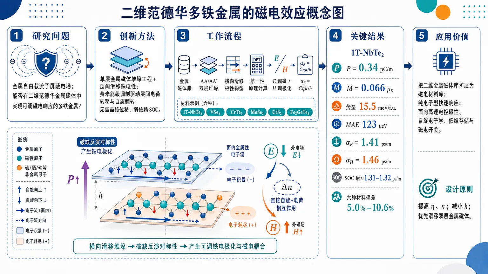
研究问题金属自由载流子会屏蔽电场，传统上难以同时实现铁电性、磁性与金属性；论文核心问题是：二维范德华金属磁体能否构造成真正具有可调磁电响应的多铁金属，并且其磁电耦合是否能摆脱传统绝缘多铁体对晶格畸变或强自旋轨道耦合的依赖。创新方法提出“单层金属磁体堆垛工程 + 层间滑移铁电性”的构造路线：让两层金属磁体横向滑移，破坏反演对称性产生面外极化，同时保留面内金属性和磁性。Aha 点是“费米能级调制机制”：外电场或磁场改变上下层费米能级对齐，驱动层间电荷转移，并同步引发自旋翻转/自旋重排，形成直接自旋-电荷相互作用；该过程无需晶格位移，弱依赖 SOC。工作流程输入已实验合成的二维单层金属磁体，如 1T-NbTe₂、VSe₂、CrTe₂、MnSe₂、CrS₂、Fe₃GeTe₂；通过 AA′ 或 AA 堆垛形成双层结构；允许层间横向滑移，寻找能量最低的极性构型；用第一性原理计算极化、磁矩、金属性和翻转势垒；施加面外电场观察磁矩变化，施加面外磁场观察极化变化；最后用 αE = Cηκ/h 将磁电响应归结为自旋极化率 η、层间介电常数 κ 和双层厚度 h。关键结果1T-NbTe₂ 滑移双层被预测为范德华多铁金属：极化 0.34 pC/m、净磁矩 0.066 μB、铁电翻转势垒 15.5 meV/f.u.、面外磁各向异性能 123 μeV。电场调磁和磁场调极化均近似线性，磁电系数 αE = 1.41 ps/m、αH = 1.46 ps/m；加入 SOC 后仍保持线性，仅降至约 1.31–1.32 ps/m。六种金属磁体验证了机制普适性，公式预测与第一性原理拟合偏差仅 5.0%–10.6%。应用价值该研究给出可设计多铁金属的新材料路线，把二维金属磁体库扩展为候选磁电材料库；纯电子型磁电耦合避免慢速晶格响应，有望用于高速电控磁性器件、自旋电子学、低维存储器和快速磁电开关。设计原则清晰：提高电荷自旋极化率 η 和层间介电常数 κ，减小双层厚度 h，优先寻找反铁磁层间补偿容易被电荷转移打破的滑移双层金属磁体。第一部分：核心概览（Overview）
该研究建立了范德华多铁金属的可设计路线：通过单层金属磁体的堆垛工程与层间滑移铁电性，在金属性、铁电性和磁性之间实现共存。以 1T-NbTe₂ 双层为原型，第一性原理计算给出 0.34 pC/m 极化、0.066 μB 净磁矩和约 1.4 ps/m 线性磁电耦合。核心突破在于提出费米能级调制机制：外场改变层间费米能级对齐，诱导层间电荷转移与同步自旋重排，形成无需晶格位移、弱依赖自旋轨道耦合的直接自旋-电荷相互作用。这一机制区别于传统多铁绝缘体的晶格或 SOC 中介磁电耦合，并通过六种已实验合成单层金属磁体验证其普适性。
---
第二部分：结构化快速回顾
《Magnetoelectric effect in multiferroic metals via a direct spin-charge interaction》（None，）
背景
多铁材料通常集中于绝缘体，因为金属自由载流子会屏蔽外电场，且金属性与铁电性长期被认为难以共存。二维范德华体系中的滑移铁电性提供了突破口：极化来自层间相对滑移，而非面内离子位移，因此可与面内金属性共存。
方法
采用 DFT/PBE+U 第一性原理计算，使用 VASP、DFT-D3(BJ) 范德华修正、500 eV 平面波截断、17×17×1 Γ-centered k 网格、Nb 4d 轨道 U = 2.91 eV。以 1T-NbTe₂ 双层为原型，并扩展到 VSe₂、CrTe₂、MnSe₂、CrS₂、Fe₃GeTe₂。
结果
滑移 1T-NbTe₂ 双层表现为多铁金属：极化 0.34 pC/m、净磁矩 0.066 μB、铁电翻转势垒 15.5 meV/f.u.、垂直磁各向异性能 123 μeV。外电场调控磁矩、外磁场调控极化均呈近似线性，磁电系数分别为 αE = 1.41 ps/m、αH = 1.46 ps/m；考虑 SOC 后降至 1.31 ps/m 与 1.32 ps/m。
讨论
磁电响应来自外场调制费米能级：电场引起层间势差，驱动电荷转移并伴随自旋翻转；磁场引入 Zeeman splitting 并改变两层自旋劈裂不对称性，诱导层间电荷转移。该过程是纯电子机制，不依赖晶格位移，也不依赖强 SOC。
局限
证据主要来自第一性原理计算，缺少实验磁电测量验证；部分关键参数如 η、κ 的具体计算细节依赖补充材料；磁场计算涉及高达 100 T 的外场验证，实际器件可达性需进一步评估。
结论
堆垛工程可系统构造多铁金属；磁电耦合可由统一公式
αE = Cηκ/h
描述。增强响应的设计原则是：提高电荷自旋极化率 η与层间介电常数 κ，降低双层厚度 h。纯电子磁电耦合赋予多铁金属潜在高速响应优势。
---
第三部分：逐章节冷凝解析（Section-by-Section Condensing）
Abstract / 摘要
- Multiferroic metals are underexplored relative to multiferroic insulators
多铁绝缘体的磁电效应已有大量研究，而多铁金属仍缺乏系统理解；核心问题在于金属载流子屏蔽电场、铁电性与金属性难以共存。研究动机由原文直接界定为：*"Much is known about the magnetoelectric effect of multiferroic insulators, yet little is understood about multiferroic metals."* 这一定义将研究对象从传统多铁绝缘体扩展到金属多铁体系。
- Stacking engineering of monolayer magnets is proposed as a construction strategy
通过单层磁体堆垛工程构造多铁金属，并用六种已实验合成材料进行验证。关键策略为：*"we propose a stacking engineering strategy based on monolayer magnets to construct multiferroic metals, with validation through first-principles calculations on six experimentally synthesized materials."* 这里的六种体系包括 NbTe₂、VSe₂、CrTe₂、MnSe₂、CrS₂、Fe₃GeTe₂。
- Linear magnetoelectricity originates from direct spin-charge interaction
多铁金属的磁电响应主要为线性磁电效应，来源不是离子位移或强 SOC，而是外场调制费米能级后产生的直接自旋-电荷相互作用。核心机制被压缩为：*"Such multiferroic metals exhibit predominantly linear magnetoelectric response, originating from direct spin-charge interactions as a result of external field-modulated Fermi energy."*
- Mechanism differs fundamentally from insulating multiferroics
与多铁绝缘体中常见的自旋-电荷-晶格耦合或自旋轨道耦合机制不同，该体系具有纯电子响应潜力。原文明确强调：*"This fundamentally differs from spin-charge-lattice or spin-orbit coupling mechanisms in multiferroic insulators, offering application advantages in the field of high-speed response."*
- Universal formula provides a design principle
通过统一公式解释该类多铁金属的磁电耦合，为材料筛选提供定量规则。关键表述为：*"We derive a universal formula for understanding the magnetoelectric coupling in these multiferroic metals."* 后续公式给出 αE = Cηκ/h，其中 η 是电荷自旋极化率，κ 是层间介电常数，h 是双层厚度。
---
Introduction / 引言
- Multiferroics couple ferroelectricity and magnetism for device applications
多铁材料同时具有铁电性与磁性，可通过电场调控磁性或通过磁场调控电学性质，适用于自旋电子学、存储器和数据存储。原文定义为：*"Multiferroics, which combine ferroelectricity and magnetism, constitute a fascinating class of magnetoelectric systems"*，并指出其应用范围：*"spintronic devices, memories, and data storage"*。
- Traditional focus on insulating multiferroics leaves metallic systems largely ignored
传统磁电多铁研究偏向具有明确带隙的绝缘材料，金属体系被忽视。原因之一是金属自由载流子会屏蔽外电场：*"the screening of free charge carriers in metals repels applied electric fields to their surfaces, hindering the observation of significant electric field effects."* 但当金属尺寸接近电场穿透深度时，电场效应可增强：*"when the characteristic dimension of the metal is reduced to a scale comparable to the electric field penetration depth, electric field effects can become pronounced."*
- Electric-field control of magnetism in metals is experimentally plausible
金属中电控磁性并非不可实现。FePt 和 FePd 薄膜中已实现室温电场调控矫顽力，推动了金属磁性电控研究。原文证据为：*"With the realization of room-temperature electric field modulation of coercivity in FePt and FePd films"*，说明金属体系的外场响应具有实验基础。
- Metallicity and ferroelectricity are historically difficult to reconcile
金属性与铁电性长期被视为矛盾：自由电子会屏蔽长程库仑相互作用，削弱传统位移型铁电性。原文概括为：*"metallicity and ferroelectricity are difficult to reconcile."* 尽管 Anderson-Blount ferroelectric metal 概念在六十年前提出，真正实验证实的铁电样金属 LiOsO₃ 较晚才出现：*"Although the ferroelectric metal was proposed sixty years ago Anderson, it was only recently that LiOsO3 was confirmed as the first ferroelectric-like metal"*。
- Sliding ferroelectricity enables coexistence of out-of-plane polarization and in-plane metallicity
范德华多层材料的独特性在于滑移铁电性，极化来自层间横向滑移，而不是离子位移。原文为：*"a spontaneous out-of-plane polarization arising from lateral interlayer sliding rather than ionic displacement."* 因为极化是堆垛结果，可与面内金属性解耦：*"As such ferroelectricity is a consequence of stacking, it is decoupled from in-plane nature, thereby enabling coexistence with in-plane metallicity."*
- Layered metallic magnets provide a material basis for multiferroic metals
二维层状磁体已快速发展，尤其是 CrGeTe₃ 与 CrI₃ 中本征磁性的实验确认。随后报道了多种二维金属磁体，如 NbTe₂、Fe₃GeTe₂、VSe₂、MnSe₂、CrS₂、CrTe₂。原文列举为：*"a number of two-dimensional metallic magnets have been reported, such as NbTe2, Fe3GeTe2, VSe2, MnSe2, CrS2 and CrTe2."*
- Key knowledge gap concerns magnetoelectric behavior in multiferroic metals
多铁金属本身稀少，更缺乏外电场/磁场响应研究。核心空白为：*"It remains unknown what kind of magnetoelectric behaviour they exhibit, or whether they can be utilized in magnetoelectric devices like multiferroic insulators."* 这一问题直接指向磁电响应类型、机制和器件可用性。
- 1T-NbTe₂ is selected as prototype for sliding multiferroic metal
原型体系为 1T-NbTe₂ 反平行堆垛双层。横向滑移诱导层间电荷转移，一方面产生垂直极化 P，另一方面破坏反平行磁矩完全抵消并产生非零总磁矩 M。关键机制表述为：*"Lateral sliding induces interlayer charge transfer, which on the one hand generates an out-of-plane polarization P, and on the other hand prevents the complete compensation of antiparallel magnetic moments, giving rise to a non-zero total moment M."*
- Magnetoelectric coupling in NbTe₂ is about 1.4 ps/m
通过追踪外电场下 M 与外磁场下 P 的演化，得到主要为线性的磁电行为，耦合参数约 1.4 ps/m。原文数值为：*"The results show predominantly linear magnetoelectric behavior with a coupling parameter of ∼1.4 ps/m."*
- Direct spin-charge mechanism is distinguished from insulating multiferroic mechanisms
该磁电效应来自外场调制费米能级诱导的直接自旋-电荷相互作用，区别于绝缘多铁材料常见的晶格中介或 SOC 机制。原文为：*"It originates from direct spin-charge interactions arising when external electric/magnetic fields modulate the Fermi level, which fundamentally differs from insulating multiferroics typically relying on lattice-mediation or spin-orbit coupling."*
---
Computational methods / 计算方法
- DFT setup uses VASP with PBE functional
计算采用 Vienna Ab initio Simulation Package（VASP） 与 PBE 泛函。原始方法为：*"Density functional theory (DFT) calculations were performed using the Vienna Ab initio Simulation Package (VASP) with the Perdew-Burke-Ernzerhof (PBE) exchange-correlation functional."*
- Hubbard U correction is applied to Nb 4d orbitals
对 Nb 4d 轨道加入 U = 2.91 eV，与既有 NbTe₂ 研究保持一致。原文给出：*"A Hubbard U term of 2.91 eV was applied for Nb 4d orbitals, as previously employed."* 这对描述 Nb 过渡金属 d 电子局域相关效应较关键。
- van der Waals interactions are treated by DFT-D3(BJ)
双层体系层间相互作用依赖范德华力，使用 Grimme DFT-D3(BJ) 修正。原文为：*"The vdW interactions were considered using the Grimme’s DFT-D3 (BJ) scheme."*
- PAW method, 500 eV cutoff, and large vacuum spacing are used
电子-离子相互作用采用 PAW 方法；平面波截断能为 500 eV；真空层至少 20 Å，用于避免相邻周期镜像之间虚假相互作用。原文细节为：*"Electron-ion interaction was described by the projector augmented wave method with an energy cutoff of 500 eV."* 以及 *"A vacuum layer at least 20 Å was added to avoid spurious interactions between two neighboring images."*
- Brillouin-zone sampling uses a 17×17×1 Γ-centered k-mesh
布里渊区采样为 17×17×1 Γ-centered k 网格，并使用 0.05 eV 二阶 Methfessel-Paxton 展宽。原文为：*"A 17 × 17 × 1 Γ-centered k-mesh was used to sample the Brillouin zone with a second-order Methfessel-Paxton smearing of 0.05 eV."*
- Energy and force convergence criteria are stringent
总能和力收敛标准分别为 10⁻⁶ eV 与 10⁻³ eV/Å。原文为：*"The convergence criteria of energy and force were set to 10−6 eV and 10−3 eV/Å, respectively."*
- Phonons are calculated by DFPT using a 4×4×1 supercell
声子谱使用 PHONOPY 中的密度泛函微扰理论，超胞为 4×4×1。原文为：*"The phonon spectrum was calculated using a 4 × 4 × 1 supercell within the density functional perturbation theory as implemented in the PHONOPY package."*
- Polarization and external fields are computed via dipole method and VASP field tags
极化用偶极矩方法计算；垂直电场和磁场分别通过 EFILED 与 BEXT 标签施加，并使用偶极修正评估极化。原文为：*"Polarization was computed using the dipole method."* 以及 *"The out-of-plane electric and magnetic fields were implemented using the VASP EFILED and BEXT tags, with dipole corrections employed to evaluate the polarizations."*
---
Results: Construction of sliding multiferroic metal in 1T-NbTe₂ bilayer / 结果：1T-NbTe₂ 双层滑移多铁金属构造
- Monolayer 1T-NbTe₂ is a ferromagnetic metal with 0.57 μB moment
单层 1T-NbTe₂ 为三角相，空间群 Pøverline3m1；计算显示其为铁磁金属，总磁矩 0.57 μB。原文为：*"Its monolayer features a trigonal phase with space group Pøverline3m1."* 以及 *"it is a ferromagnetic metal with a total moment of 0.57 μB."*
- Antiparallel AA′ stacking has mirror symmetry but is structurally unstable
初始反平行 AA′ 堆垛具有关于 Mz 平面的镜面对称性，但出现软声子模，显示结构不稳定。原文为：*"the antiparallel AA’ stacking configuration ... exhibits the mirror symmetry about the Mz plane."* 以及 *"the appearance of soft phonon modes ... indicates structural instability."*
- Steric repulsion between Te atoms drives lateral sliding
AA′ 堆垛迫使上下层较大的 Te 原子正对，增强空间位阻排斥，导致层间横向滑移。原文解释为：*"the stacking forces the large Te atoms of the top and down layers to directly face each other, thereby enhancing steric repulsion."* 以及 *"To mitigate such repulsion, lateral interlayer sliding occurs."*
- Sliding structure is parameterized by l = ma + nb
横向滑移矢量定义为 l = ma + nb，其中 a、b 为面内晶格矢量；在周期边界条件下 m,n ∈ (-1,1)。原文为：*"lateral interlayer sliding occurs, which can be characterized by the vector l = ma + nb, where a and b are in-plane lattice vectors."* 以及 *"Under periodic boundary conditions, m and n range from (-1, 1)."*
- Eight degenerate energy minima define ME and −ME states
总能面存在八个极小值：
ME 态：((1/3,2/3))、((1/3,-1/3))、((-2/3,2/3))、((-2/3,-1/3))；
−ME 态：((2/3,1/3))、((2/3,-2/3))、((-1/3,1/3))、((-1/3,-2/3))。
原文列出：*"The total energy exhibits eight minima, namely..."* 并将前四个称为 *"the ME state"*，后四个称为 *"the −ME state"*。
- All minima have 0.34 pC/m polarization and 0.066 μB moment
八个能量极小构型均具有自发极化 0.34 pC/m 和总磁矩 0.066 μB，但极化方向相反：ME 态沿 +z，−ME 态沿 −z。原文为：*"They all possess spontaneous polarization of 0.34 pC/m and total magnetic moment of 0.066 μB, but with the former four ... along the +z direction and the latter four ... along the −z direction."*
- Polarization is comparable to WTe₂ and larger than CrI₃ bilayers
0.34 pC/m 极化与 WTe₂ 双层 0.35 pC/m 接近，高于 CrI₃ 双层 0.18 pC/m。原文为：*"Such polarization is on a par with that of the WTe2 bilayer (0.35 pC/m) but exceeds that of the CrI3 bilayer (0.18 pC/m)."*
- Ferroelectric switching barrier is 15.5 meV per formula
通过 CI-NEB 找到铁电翻转路径，势垒为 15.5 meV/f.u.。原文为：*"Employing the CI-NEB method, we have identified a ferroelectric switching path ... which gives a barrier of 15.5 meV per formula."*
- Sliding ferroelectric barriers are much lower than displacive ferroelectrics
15.5 meV/f.u. 与典型滑移铁电体接近：MoS₂ 双层 15 meV、SiC 双层 12 meV；显著低于位移型铁电体 BaTiO₃ 170 meV/f.u. 与 BiFeO₃ 475 meV/f.u.。原文为：*"This value is comparable to typical sliding ferroelectrics, such as 15 meV for MoS2 bilayer and 12 meV for SiC bilayer."* 以及 *"an order of magnitude lower than that of displacive ferroelectrics such as 170 meV and 475 meV per formula, respectively, for BaTiO3 and BiFeO3."*
---
Results: Electronic structure and spin-layer locking / 结果：电子结构与自旋-层锁定
- ME state is metallic, including hybrid-functional confirmation
ME 态带结构显示费米能级穿过能带，体系为金属；杂化泛函也确认该金属性。原文为：*"Figure 2 presents the band structure of the ME state. It is a metal, as further confirmed by the hybrid functional."*
- Spin-layer locking separates spin channels into different layers
出现自旋-层锁定：多数自旋完全来自下层，少数自旋完全来自上层。原文为：*"We find an intriguing spin-layer locking phenomenon, wherein the spin-majority is fully contributed by the down layer and the spin-minority is fully contributed by the top layer."* 这意味着自旋自由度与层自由度强耦合。
- Net magnetic moment arises from incomplete interlayer compensation
上下层磁矩反平行耦合，净磁矩由层间磁矩不完全抵消决定。原文为：*"This causes antiparallel coupling of magnetic moments between the top and down layers, and the magnitude of the net magnetic moment is determined by the incomplete interlayer compensation."*
- Spin splitting correlates with incomplete compensation
层间补偿越不完全，能带自旋劈裂越明显，对应更大的净磁矩。原文为：*"The more incomplete the interlayer compensation, the more pronounced the band spin-splitting, corresponding to a larger net moment."*
- High-symmetry AA′ stacking has zero net moment
高对称 AA′ 构型中上下层磁矩完全补偿，总磁矩为零。原文为：*"For the high-symmetry AA’ configuration, compensation is complete, resulting in a zero total moment."*
- Out-of-plane easy axis has 123 μeV magnetic anisotropy energy
ME 态易磁化轴为面外方向，相对于面内轴的磁各向异性能为 123 μeV。原文为：*"the ME state possesses an out-of-plane easy axis with a magnetic anisotropy energy of 123 μeV relative to the in-plane axis."*
- Ground state combines ferroelectricity, magnetism, and metallicity
滑移 1T-NbTe₂ 双层基态同时具备铁电性、磁性和金属性，因此属于罕见的多铁金属。原文总结为：*"the ground-state of the sliding 1T−NbTe2 bilayer combines ferroelectricity, magnetism and metallicity. It is therefore a rare multiferroic metal."*
---
Results: Magnetoelectric response / 结果：磁电响应
- Only out-of-plane fields effectively couple M and P
面内电场或磁场对 M/P 基本无效，因此磁电耦合张量在该体系中退化为常数 αE/αH。原文为：*"As in-plane electric/magnetic fields are ineffective for M/P, the magnetoelectric coupling tensor here degrades to a constant αE/αH."*
- In-plane magnetic field up to 40 T does not change polarization
测试计算显示，即使施加高达 40 T 的面内磁场，极化 P 也无变化。原文为：*"Test calculations confirm that no change in P is observed even under an in-plane magnetic field as high as 40 T."*
- M(E) and P(H) are predominantly linear
电场调控磁矩 M、磁场调控极化 P 均呈近似线性。原文为：*"Figures 3(a) and 3(b) present the responses of M and P to electric and magnetic fields, respectively, both of which exhibit predominantly linear characteristics."*
- Magnetoelectric coefficients are αE = 1.41 ps/m and αH = 1.46 ps/m
使用关系式 μ0ΔM = αE E V 与 ΔP = αH H h，其中 h = 10.53 Å，得到 αE = 1.41 ps/m、αH = 1.46 ps/m。原文为：*"Using μ0ΔM=αEEV ... and ΔP=αHHh [h = 10.53 Å] ... it yields αE=1.41 ps/m and αH=1.46 ps/m."*
- Coupling magnitude matches type-I multiferroics
约 1 ps/m 属于 I 型多铁体常见磁电耦合量级。原文为：*"Approximately 1 ps/m is a typical value for type-I multiferroics."*
- SOC slightly reduces but does not alter linear response
考虑 SOC 后，线性磁电响应仍保持，耦合参数略降至 αE = 1.31 ps/m、αH = 1.32 ps/m。原文为：*"When spin-orbit coupling is considered, the linear magnetoelectric response remains unchanged, with a slight decrease in the coupling parameters to αE = 1.31 ps/m and αH = 1.32 ps/m."*
- Lattice-mediated magnetoelectric response is numerically zero
计算精度范围内，外电场/磁场未诱导原子位移或结构畸变，说明晶格介导磁电响应严格为零。原文为：*"within our numerical accuracy limits, no induced atomic displacements or structural distortions are observed from the applied electric/magnetic fields, indicating a strictly zero lattice-mediated magnetoelectric response."*
- Interlayer-spacing strain modifies M and P but barely affects α
通过人工改变层间距 dz 定义应变
[
ǎrepsilon = fracd_z-d₀d₀× 100%
]
M 与 P 随应变呈相似的（次）线性趋势；但 αE 与 αH 在 −10% 到 10% 范围内几乎不变。原文为：*"They follow very similar trends, exhibiting (sub)linear relationships with ε."* 以及 *"αE and αH remain virtually unchanged within the range (−10%, 10%)."*
---
Results: Fermi-energy-modulation mechanism / 结果：费米能级调制机制
- High-symmetry AA′ bilayer has no charge transfer and zero net moment
高对称 AA′ 构型中层间无净电荷转移，上下层磁矩完全抵消，因此表现为面内金属性与面外反铁磁性的共存。原文为：*"For the high-symmetry AA’ configuration, not only is there no net charge transfer between layers, but the magnetic moments of the top and down layers also completely compensate each other."* 以及 *"Consequently, in-plane metallicity coexists with out-of-plane antiferromagnetism."*
- Out-of-plane electric field creates interlayer potential difference
垂直电场使上层电子态相对于下层上移，产生层间势差。原文为：*"Applying a z-orientated electric field induces a potential difference across the layers, causing the electronic states of the top layer to shift upward relative to those of the down layer."*
- Fermi-level alignment drives charge transfer and spin flipping
为维持整个体系统一费米能级，上层部分电子转移到下层，该过程伴随自旋翻转，使层间磁矩补偿不完全并产生非零磁矩。原文为：*"To maintain the same Fermi level across the system, some electrons from the top layer transfer to the down layer."* 以及 *"This process accompanies spin flipping, rendering the interlayer compensation incomplete and yielding a non-zero moment."*
- Magnetic field has spin alignment and Zeeman-splitting effects
垂直磁场产生双重作用：一方面使部分自旋沿外磁场方向排列；另一方面引入 Zeeman splitting ΔH。原文为：*"Applying a z-orientated magnetic field has two effects."* 以及 *"On the other hand, it adds a Zeeman splitting, ΔH, to the already spin-splitting monolayer NbTe2."*
- Opposite Zeeman contributions in two layers create Fermi-level asymmetry
由于层间反铁磁耦合，磁场对上下层加入的 ΔH 符号相反，使上层自旋劈裂变宽、下层变窄，造成层间费米能级差并驱动电荷转移与面外极化。原文为：*"Due to antiferromagnetic interlayer coupling, the sign of ΔH added to the top and down layers is opposite."* 以及 *"This broadens the spin-splitting in the top layer while narrowing it in the down layer."* 最终结果是：*"Such asymmetry creates a difference in the Fermi levels between the layers, thereby driving interlayer charge transfer and out-of-plane P."*
- First-principles calculations support the mechanism at 0.25 V/Å and 100 T
该解释由外电场 0.25 V/Å 与外磁场 100 T 下第一性原理计算验证。原文为：*"this interpretation is corroborated by first-principles calculations under applied electric and magnetic fields of 0.25 V/Å and 100 T."*
- Sliding acts as embedded internal electric and magnetic fields
对滑移 1T-NbTe₂ 双层，层间滑移等效于嵌入内部电场 Ein 与内部磁场 Hin。原文为：*"Interlayer sliding creates an effect equivalent to embedding an electric field Ein and magnetic field Hin."*
- External field direction controls enhancement or suppression of P and M
外场与 Ein/Hin 同向时，增强层间电荷转移和能带自旋劈裂，从而增加 P/M；反向时削弱两者，从而降低 P/M。原文为：*"When the external field aligns with Ein/Hin, it enhances interlayer charge transfer and band spin-splitting, thereby increasing P/M."* 以及 *"Conversely, an external field of opposite direction weakens interlayer charge transfer and band spin-splitting, decreasing P/M."*
- Changing dz modifies internal fields but not coupling coefficient
减小/增大 dz 会增强/削弱 Ein/Hin，导致 P 和 M 随 dz 增大而单调下降，但对 α 影响很小。原文为：*"decreasing/increasing dz strengthens/weakens Ein/Hin, causing P and M to decrease monotonically with increasing dz ... but with negligible effect on α."*
- Direct spin-charge interaction replaces lattice or SOC mediation
多铁绝缘体中磁电耦合通常通过自旋-电荷-晶格或 SOC 间接实现；这里的范德华多铁金属通过层间电荷转移与同步自旋重排实现直接耦合。原文对比为：*"In multiferroic insulators, magnetoelectric coupling manifests as an indirect interaction between spin and charge, typically via spin-charge-lattice or spin-orbit coupling mechanisms."* 以及 *"magnetoelectric coupling arises from interlayer charge transfer and synchronised spin rearrangement as a result of external field-modulated Fermi levels, not relying on lattice mediation or spin-orbit coupling."*
---
Results: Universal formula and material generality / 结果：统一公式与材料普适性
- AA′ bilayers generally possess Mz or MzT symmetry before sliding or field breaking
典型 AA′ 双层具有 Mz 或 MzT 对称性，其中 T 为时间反演。原文为：*"Typically, AA’ bilayers exhibit Mz or MzT symmetry (where T denotes time-reversal symmetry)."*
- Interlayer magnetic order can be AFM or FM despite antiparallel stacking
尽管几何上是反平行堆垛，单层磁化方向差异可使 AA′ 双层表现为反铁磁或铁磁层间序。原文为：*"Despite the antiparallel stacking, the difference in the monolayer magnetization direction permits AA’ to exhibit either antiferromagnetic or ferromagnetic interlayer ordering."*
- Perpendicular electric field breaks symmetry and induces interlayer charge transfer Q
垂直电场破坏 Mz/MzT 对称性并诱导层间电荷转移 Q。原文为：*"This field breaks Mz/MzT symmetry and induces a net interlayer charge transfer Q."*
- Chain rule links magnetoelectric coefficient to charge transfer and spin response
磁电系数满足链式关系：
[
α^E propto fracpartial Mpartial E
=
fracpartial Mpartial Q
fracpartial Qpartial E
]
原文为：*"By definition, αE ∝ ∂M/∂E = ∂M/∂Q ∂Q/∂E (applying the chain rule)."*
- Parallel-plate capacitor approximation gives ∂Q/∂E = ε0κh
将 AA′ 双层看作平行板电容，层间电荷对电场响应为
[
fracpartial Qpartial E=ϵ₀κ h
]
原文为：*"Treating AA’ as a parallel-plate capacitor yields ∂Q/∂E = ε0κh."*
- Spin polarizability η connects charge transfer to magnetization
定义 η 为转移电荷 Q 的自旋极化率，则
[
fracpartial Mpartial Q=frac2ημ_Be
]
因子 2 来自自旋翻转。原文为：*"Define η as the spin polarizability of Q, then ∂M/∂Q = 2ημB/e, where the factor of 2 arises from spin flipping."*
- Universal formula αE = Cηκ/h gives the design rule
完整公式为：
[
α^E=frac2ϵ₀μ₀μ_Befracηκh
=
Cfracηκh
]
其中
[
C=2ϵ₀μ₀μ_B/e
]
原文公式为：*"αE = 2ε0μ0μB/e ηκ/h = Cηκ/h."*
- Linear response dominates when η changes little with E
κ 与 h 是材料内禀属性，η 与电场有关；若 η 在特定电场范围内变化很小，则线性磁电响应占主导。原文为：*"Here κ and h are intrinsic attributes of the vdW multiferroics, while η is related to E."* 以及 *"If η varies little within a specific E range, the linear magnetoelectric response dominates."*
- Six known metallic magnets validate the strategy and mechanism
额外计算五种已知金属磁体，加上 NbTe₂ 共六种：NbTe₂、VSe₂、CrTe₂、MnSe₂、CrS₂、Fe₃GeTe₂。原文为：*"For further validation, we calculate five additional known metallic magnets, with results summarized in Table I."*
- Antiparallel stacking is not required for multiferroic metals
Fe₃GeTe₂ 非 1T 相，采用 AA 平行堆垛也可由滑移产生铁电性，说明关键不是反平行堆垛，而是滑移破缺反演对称性。原文为：*"antiparallel stacking is not a prerequisite for multiferroic metals."* 以及 *"the key lies in sliding breaking the inversion symmetry."*
- Sliding can change interlayer magnetic ordering
VSe₂、MnSe₂、Fe₃GeTe₂ 中，滑移可将非滑移堆垛的反铁磁层间序转化为铁磁层间序。原文为：*"For VSe2, MnSe2, and Fe3GeTe2, sliding transforms antiferromagnetic ordering into ferromagnetic ordering."*
- αE varies by up to three orders of magnitude across materials
不同多铁金属的 αE 差异可达三个数量级，主要由 η 决定，而 κ 和 h 变化影响较小。原文为：*"αE values across different multiferroic metals exhibit differences spanning up to three orders of magnitude."* 以及 *"This variation primarily originates from the η parameter, while changes in κ and h are negligible."*
- AFM ordering tends to produce larger η than FM ordering
η 与层间磁序紧密相关，反铁磁层间序中的 η 显著高于铁磁层间序。原文为：*"η is closely correlated with interlayer magnetic ordering, exhibiting significantly higher values in antiferromagnetic than ferromagnetic ordering."*
- Formula agrees with first-principles fitting within 5.0–10.6%
公式给出的 αE 与第一性原理线性拟合值偏差为 5.0%–10.6%。原文为：*"The αE value given by Eq. (1) agrees with first-principles fitting within 5.0% to 10.6%."* 该精度被评价为超过二维激子结合能的屏蔽氢模型：*"Such precision surpasses that of the (screened) hydrogen model used to calculate exciton binding energies."*
- Table I provides quantitative comparison across six materials
六种体系的关键参数如下：
- NbTe₂：InterM = AFM，h = 10.53 Å，κ = 1.26，η = 0.82，αEₘₒd = 1.27 ps/m，αE_fir = 1.41 ps/m，偏差 10.1%。
- VSe₂：InterM = FM(AFM)，h = 9.29 Å，κ = 1.24，η = 0.088，αEₘₒd = 0.15 ps/m，αE_fir = 0.16 ps/m，偏差 6.2%。
- CrTe₂：InterM = FM，h = 9.63 Å，κ = 1.28，η = 0.0091，αEₘₒd = 0.016 ps/m，αE_fir = 0.017 ps/m，偏差 9.0%。
- MnSe₂：InterM = FM(AFM)，h = 8.46 Å，κ = 1.27，η = 0.0033，αEₘₒd = 0.0063 ps/m，αE_fir = 0.0068 ps/m，偏差 7.5%。
- CrS₂：InterM = FM，h = 8.26 Å，κ = 1.25，η = 0.00049，αEₘₒd = 0.00095 ps/m，αE_fir = 0.0010 ps/m，偏差 5.0%。
- Fe₃GeTe₂：InterM = FM(AFM)，h = 13.27 Å，κ = 1.19，η = 0.076，αEₘₒd = 0.088 ps/m，αE_fir = 0.095 ps/m，偏差 8.1%。
表格标题强调：*"Summary of ground-state interlayer magnetic coupling ... and magnetoelectric response for six bilayer multiferroic metals."*
---
Summary / 总结
- General strategy for constructing multiferroic metals is established
通过单层金属磁体的堆垛与滑移可构造多铁金属。原文总结为：*"we propose a general strategy for constructing multiferroic metals."*
- Mechanism is Fermi-energy modulation via direct spin-charge interaction
与绝缘多铁体不同，该类金属的磁电耦合来自费米能级调制机制驱动的直接自旋-电荷相互作用。原文为：*"Unlike insulating multiferroics, the magnetoelectric coupling in these multiferroic metals originates from a Fermi-energy-modulation mechanism driven by direct spin-charge interactions."*
- Six monolayer ferromagnetic metals support broad applicability
第一性原理计算覆盖六种已知单层铁磁金属，验证策略和机制的广泛适用性。原文为：*"Through first-principles calculations on six known monolayer ferromagnetic metals, we validate the broad applicability of this strategy and mechanism."*
- Purely electronic coupling offers faster response than lattice-mediated systems
耦合系数量级接近 I 型多铁体，但纯电子性质使其响应速度有望快于晶格介导多铁体，且不依赖 SOC 强度。原文为：*"Although the coupling coefficient falls within the range typical for type-I multiferroics, the purely electronic nature of the magnetoelectric coupling enables these multiferroic metals to exhibit faster response times than lattice-mediated multiferroics, while remaining independent of spin-orbit coupling strength."*
- Design principle is maximizing ηκ and minimizing h
公式 αE = Cηκ/h 给出增强磁电响应的直接规则：最大化 ηκ，最小化 h。原文为：*"Eq. (1) provides a clear design principle for enhancing response, namely, maximizing the product of η and κ while minimizing h."*
- Application relevance lies in high-speed magnetoelectric devices
多铁金属扩展了材料选择空间，有助于突破绝缘多铁材料应用限制，尤其适合高速响应场景。原文为：*"offers a fresh avenue for overcoming the application limitations of insulating multiferroic materials, particularly in fields requiring high-speed response."*
---
第四部分：深度理解与语言支持（Understanding & Nuance）
1. 术语解析
- Sliding ferroelectricity（滑移铁电性）
指极化不是来自传统铁电体中阳离子/阴离子相对位移，而是来自二维层状材料层间横向滑移造成的空间反演对称性破缺。语境中的关键句为：*"a spontaneous out-of-plane polarization arising from lateral interlayer sliding rather than ionic displacement."* 微妙点在于：滑移铁电性可与面内金属性共存，因为极化源自堆垛几何而非需要绝缘带隙支持的长程离子位移。
- Fermi-energy modulation（费米能级调制）
指外加电场或磁场改变上下层电子态相对能量位置，使两层产生局域费米能级不匹配；系统为重新达到统一费米能级而发生层间电荷转移。该机制的核心不是改变晶格结构，而是改变电子占据与自旋分布。语境句为：*"external electric/magnetic fields modulate the Fermi level."*
- Direct spin-charge interaction（直接自旋-电荷相互作用）
指自旋态与电荷转移在同一电子过程中同步变化，不需要通过晶格畸变或 SOC 作为中介。其对比对象是传统绝缘多铁体中的间接机制：*"magnetoelectric coupling manifests as an indirect interaction between spin and charge, typically via spin-charge-lattice or spin-orbit coupling mechanisms."* 这里“direct”不是指基本相互作用层面的电荷-自旋直接库仑耦合，而是指材料响应路径中没有晶格/SOC 中介。
- Spin-layer locking（自旋-层锁定）
指不同自旋通道高度局域在不同层：多数自旋来自下层，少数自旋来自上层。语境句为：*"the spin-majority is fully contributed by the down layer and the spin-minority is fully contributed by the top layer."* 这种锁定使层间电荷转移天然携带自旋选择性，因此电荷转移能够改变总磁矩。
- Spin polarizability η（自旋极化率 η）
公式中 η 描述转移电荷 Q 对磁矩变化的贡献强弱，即“每单位转移电荷带来多少净自旋/磁矩变化”。语境定义为：*"Define η as the spin polarizability of Q."* η 越大，电场诱导的层间电荷转移越容易转化为磁矩变化，因此 αE 越大。
2. 疑难查证
- 为什么金属也能有铁电性？
传统铁电体依赖长程库仑相互作用与稳定的极化位移，金属自由电子会屏蔽电场，因此“金属铁电性”看似矛盾。二维滑移铁电性绕开了这个矛盾：极化来自上下层电子云和原子位置的相对堆垛不对称，而不是体相绝缘体中的长程离子位移软模。只要层间滑移破坏反演对称性，就能产生垂直偶极；面内仍可导电。因此，“铁电金属”中的铁电性通常更准确地理解为可翻转极性结构/极化态，而不是完全等同于传统绝缘铁电体中的宏观无屏蔽极化。
- 为什么外电场能改变金属双层的磁矩？
外电场在上下层之间产生势差，使上层电子态相对下层上移。金属体系必须保持全局统一费米能级，于是电子从能量较高的一层转移到另一层。在 spin-layer locking 存在时，这些转移电子不是自旋无关的；电子跨层转移伴随自旋翻转或自旋通道重新占据，导致上下层原本反平行的磁矩不再完全抵消。于是外电场通过“电荷转移 → 自旋重排 → 净磁矩变化”实现磁电效应。
- 为什么外磁场能改变极化？
外磁场通过 Zeeman 效应改变自旋上/下能级。由于上下层磁化方向相反，同一个外磁场对两层自旋劈裂的影响符号相反：一层劈裂增强，另一层劈裂减弱。这造成上下层电子态填充和费米能级位置的不对称。为恢复全局费米能级一致，电子在层间重新分布，形成层间电荷转移；层间电荷不对称就是垂直极化变化的电子来源。
- 为什么 SOC 不是必要条件？
传统磁电耦合常依赖 SOC，因为要把磁矩方向和电荷/轨道分布联系起来。但这里磁电耦合依赖的是层间电子占据变化和自旋通道重排。计算显示考虑 SOC 后 αE 只从 1.41 ps/m 降至 1.31 ps/m，αH 从 1.46 ps/m 降至 1.32 ps/m，线性响应仍存在。因此 SOC 可修正数值，但不是机制核心。
- 为什么 η 决定不同材料间巨大差异？
公式 αE = Cηκ/h 中，六种材料的 κ 约 1.19–1.28，h 约 8.26–13.27 Å，变化有限；而 η 从 0.00049 到 0.82，跨越约三数量级。因此磁电耦合差异主要由 η 决定。物理上，η 衡量电荷转移能否有效携带自旋不平衡；反铁磁层间序通常更容易通过破坏补偿产生大净磁矩，因此 η 更大。
---
第五部分：创新评估与关联（Synthesis & Novelty）
1. 创新性判断
- 从“多铁绝缘体”转向“多铁金属”的磁电机制问题
过去 2–5 年中，二维铁电金属、极性金属、二维磁体和电控磁性分别快速发展，但真正围绕多铁金属的磁电响应机制展开的研究仍少。已有工作更多证明金属性与极性/铁电样结构可共存，或证明二维材料可磁有序；该研究进一步回答了“金属多铁体能否具有可量化磁电效应、其机制是什么、如何设计增强”的问题。
- 提出堆垛工程构造多铁金属的通用路线
创新点不只是发现单一材料，而是提出可迁移策略：用已知单层金属磁体构造双层，通过滑移破缺反演对称性产生极化，同时保留金属性与磁性。该路线避免了传统铁电金属中材料稀缺的问题，并把二维磁体库转化为候选多铁金属库。
- 识别“费米能级调制”作为金属多铁体磁电耦合机制
传统多铁绝缘体的磁电耦合通常来自晶格畸变、交换作用变化、Dzyaloshinskii-Moriya 相互作用、SOC 或轨道重构。这里的机制是：外场改变层间电子态相对能量 → 费米能级重新对齐 → 层间电荷转移 → 自旋翻转/自旋重排 → 磁矩或极化改变。这是典型金属电子结构特有的机制，不能简单套用绝缘体框架。
- 证明磁电响应不依赖晶格位移和强 SOC
数值上未观察到外场诱导原子位移或结构畸变，说明晶格介导项为零；SOC 加入前后线性响应几乎保持，只是耦合系数略降。这直接解决了传统磁电材料中响应速度受限于晶格动力学、响应强度受限于 SOC 强度的问题，提供了高速电子型磁电响应方向。
- 建立可预测的统一公式 αE = Cηκ/h
多铁金属磁电耦合被压缩为三个材料参数：η、κ、h。该公式不仅解释 NbTe₂，也在六种材料中达到 5.0%–10.6% 的偏差范围。相对于单纯计算材料性质，这一解析模型更具设计价值：筛选时优先寻找高 η、高 κ、小 h 的滑移多铁金属。
- 揭示反铁磁层间序对强磁电耦合的优势
六种材料中 NbTe₂ 具有 AFM 层间序，η = 0.82，αE_fir = 1.41 ps/m，远高于多数 FM 层间序体系；CrS₂ 的 η = 0.00049，αE_fir = 0.0010 ps/m。这说明强响应设计应关注能被电荷转移有效破坏补偿的反铁磁层间构型。
- 解决前人未充分解决的问题
关键未解问题包括：
- 多铁金属是否能表现出类似多铁绝缘体的磁电响应？——结果显示可以，且主要为线性响应。
- 金属中被屏蔽的电场如何仍能调磁？——二维双层尺度与层间费米能级调制使外场能驱动层间电荷转移。
- 金属多铁体磁电耦合是否必须依赖晶格或 SOC？——不必须，直接自旋-电荷机制足以产生约 1 ps/m 量级耦合。
- 是否存在普适设计原则？——公式 αE = Cηκ/h 给出明确筛选方向。
- 材料空间是否足够广？——六种已实验合成单层金属磁体的计算验证显示该策略具备跨材料普适性。
-
15
📄 摘要：用动力学相场模拟研究单轴应变 BaTiO3 膜中 Ising 型 180°畴壁的集体激发。薄膜同时作为极化波与声波腔，允许腔增强共振激发极化波；模拟识别出畴壁集体模式及太赫兹振荡行为，关联铁电畴壁纳米电子与光电子器件中的高速动力学。
💡 亮点：BaTiO3 膜的 180°畴壁在相场模拟中表现出太赫兹集体振荡，薄膜腔增强极化波共振。该结果给出铁电畴壁高速器件可利用的具体动力学模式。
📖 展开分析 + 配图
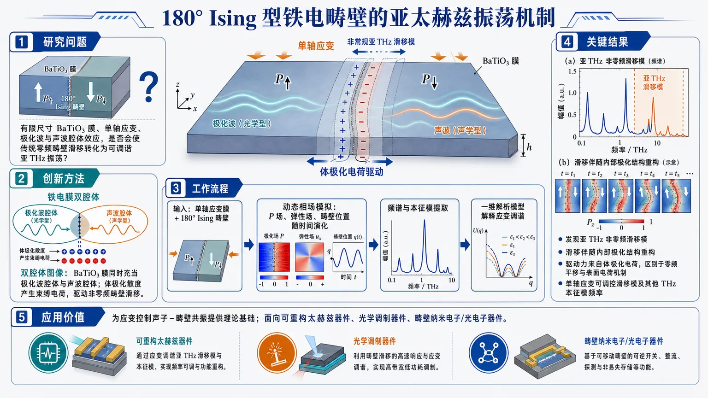
研究问题铁电膜中 180° Ising 型畴壁的高频集体激发机制尚不清楚：传统滑移模通常被视为零频平移，而有限尺寸 BaTiO₃ 铁电膜、单轴应变、极化波与声波腔体效应是否会让畴壁产生可调谐的亚太赫兹振荡，是论文要回答的核心问题。创新方法提出“铁电膜双腔体 + 体极化电荷驱动畴壁滑移”的新图像：BaTiO₃ 膜不仅是承载畴壁的薄膜，而是同时充当极化波腔体和声波腔体；动态相场模拟发现一种非零频的非常规 180° 畴壁滑移模，其回复力来自体内极化散度产生的束缚电荷，而不是传统零频平移或表面极化电荷机制。工作流程输入单轴应变 BaTiO₃ 铁电膜结构与 Ising 型 180° 畴壁初始构型；通过动态相场模拟激发并追踪极化场、弹性场和畴壁位置随时间演化；提取畴壁集体振荡频谱与本征模式；结合本征模分析和简化一维解析模型解释应变如何改变模式频率；输出非常规亚 THz 滑移模、其他 THz 畴壁本征模及其应变调谐规律。关键结果发现 180° 畴壁存在一种亚太赫兹非零频滑移模：畴壁并非刚性整体平移，而是在滑移时内部极化结构动态重构；该模式由体极化电荷驱动，与已知零频滑移模和表面电荷驱动滑移模不同。模拟还表明，单轴应变可调控该非常规滑移模以及其他 THz 畴壁本征模频率，说明声子–畴壁共振具有可调谐性。应用价值为应变控制的声子–畴壁共振提供理论基础，可用于设计可重构太赫兹器件、光学调制器件和畴壁纳米电子/光电子器件；该研究提示普通 180° 铁电畴结构也能承载非常规高频模式，为利用畴壁作为可调谐动态功能单元开辟新路径。第一部分：核心概览 (Overview)
该研究以动态相场模拟识别单轴应变 BaTiO₃ 铁电膜中 Ising 型 180° 畴壁的集体激发模式，提出铁电膜可同时作为极化波与声波腔体，从而实现腔增强共振。核心贡献是发现一种非常规畴壁滑移模：其共振频率不为零，位于亚太赫兹频段，由体极化电荷驱动，并伴随滑移过程中的内部结构动态变化。该机制区别于既有的零频滑移模和表面极化电荷驱动滑移模，为应变调控声子–畴壁共振及可重构 THz/光学器件提供理论基础。
---
第二部分：结构化快速回顾
《Terahertz oscillation of 180ⁱ̧rc domain walls in ferroelectric membranes》（None，）
背景
铁电畴壁集体激发仍是铁电物理中基础但未充分理解的问题，尤其与畴壁纳米电子学和光电子器件潜在应用相关。
方法
采用动态相场模拟研究单轴应变 BaTiO₃ 薄膜/膜结构中 Ising 型 180° 畴壁的本征集体模式，并结合本征模分析与简化 一维解析计算解释应变调频规律。
结果
发现一种非常规 180° 畴壁滑移模式，其频率并非传统滑移模中的零频，而是处于亚 THz 区间；该模式由体极化电荷驱动，并在滑移过程中出现畴壁内部结构动态变化。
讨论
铁电膜不仅是结构载体，还充当极化波与声波腔体，可产生腔增强共振激发。应变能够调控该非常规模式及其他已知 THz 畴壁本征模频率。
局限
可解析材料仅包含题名、摘要与 arXiv 元数据；缺少完整正文、图表、方程、模拟网格、边界条件、材料参数、数值误差、样本重复性与补充信息。因此无法核验所有章节级证据与定量细节。
结论
应变铁电膜中的 180° 畴壁具有可调控的高频集体动力学；非常规亚 THz 滑移模拓展了传统畴壁模式分类，为应变控制 THz 畴壁共振和可重构器件设计提供新路径。
---
第三部分：逐章节冷凝解析 (Section-by-Section Condensing)
Abstract
#### Ferroelectric domain-wall collective excitation remains an unresolved fundamental problem
铁电畴壁集体激发被定位为一个基础且尚未充分理解的问题，并与未来畴壁纳米电子学、畴壁光电子学潜在器件直接相关。摘要明确指出该主题的科学地位：*"A fundamentally intriguing yet not well understood topic in the field of ferroelectrics is the collective excitation of domain walls (DWs), with potential applications to DW-based nanoelectronic and optoelectronic devices."*
关键含义在于，研究对象不是单个离子振动或普通声子，而是畴壁作为介观拓扑/结构缺陷整体的集体动力学自由度。
#### Dynamical phase-field simulations identify collective modes of an Ising-type 180° domain wall
核心方法为动态相场模拟，对象为单轴应变 BaTiO₃ 膜中的 Ising-type 180° 畴壁。摘要给出的直接方法描述为：*"Here we use dynamical phase-field simulations to identify the collective modes of an Ising-type 180ⁱ̧rc DW in a uniaxially strained BaTiO3 membrane."*
可提取的精确信息包括：
- 材料体系：BaTiO₃；
- 几何/边界对象：membrane；
- 畴壁类型：Ising-type 180° DW；
- 外场/调控量：uniaxial strain；
- 理论工具：dynamical phase-field simulations。
未提供的关键数值包括：膜厚、横向尺寸、网格间距、时间步长、阻尼系数、Landau 系数、弹性常数、梯度能系数、电边界条件、机械边界条件。
#### The membrane acts as both a polarization-wave and acoustic-wave cavity
铁电膜被赋予双重物理角色：既是极化波腔体，也是声波腔体。摘要原文为：*"The membrane, which concurrently functions as a cavity for polarization and acoustic waves, permits cavity-enhanced resonant excitation of polarization waves."*
该表述包含三个重要机制：
- 有限尺寸膜结构可限制波动传播，形成离散化腔模；
- 极化波与声波均可在该结构中受限；
- 腔体效应能够增强极化波共振激发。
这意味着畴壁模式不是孤立局域振动，而可能与膜内离散声学/极化本征模发生耦合。
#### An unconventional domain-wall sliding mode appears in the sub-terahertz regime
最核心结果是发现一种非常规 DW sliding mode，其频率非零并位于亚太赫兹频段。摘要原文为：*"The simulation reveals an unconventional DW sliding mode that exhibits a bulk-polarization-charge-driven nonzero resonant frequency in the sub-terahertz (THz) regime with a dynamically changing internal structure during sliding."*
该模式具有三个区别性特征：
- nonzero resonant frequency：不同于传统连续平移对称性下的零频 Goldstone-like 滑移；
- sub-terahertz (THz) regime：频率进入高频动力学范围，具有 THz 器件意义；
- dynamically changing internal structure：畴壁滑移过程中内部极化构型并非刚性平移，而是动态重构。
摘要未给出具体频率数值，例如 0.1 THz、0.5 THz 或更精确峰位；因此不能进行定量频谱比较。
#### The driving mechanism is bulk-polarization charge rather than previously known mechanisms
该非常规滑移模的驱动力来自体极化电荷，区别于既有机制。摘要明确对比：*"These features differ from the previously reported zero-frequency DW sliding mode or the surface-polarization-charge-driven DW sliding mode."*
此处形成一个三分分类：
- zero-frequency DW sliding mode：传统零频畴壁平移；
- surface-polarization-charge-driven DW sliding mode：由表面极化电荷相关效应驱动的滑移；
- bulk-polarization-charge-driven nonzero sliding mode：该研究强调的新类型。
关键创新点不是简单观察到滑移，而是将滑移模的频率属性和电荷来源重新分类。
#### Strain tunes the unconventional mode and known THz domain-wall eigenmodes
应变效应是研究的主要调控维度。摘要说明：*"The effect of strain on the frequency of this unconventional DW sliding mode and other previously known THz DW eigenmodes is investigated by dynamical phase-field simulations and interpreted by eigenmode analysis or analytical calculation in a simplified one-dimensional (1D) system."*
该句包含方法链条：
- 使用动态相场模拟获取应变–频率关系；
- 使用本征模分析解释数值结果；
- 使用简化一维系统解析计算建立物理图像。
但摘要未提供应变量范围，例如拉伸/压缩百分比，也未提供频率随应变变化的斜率、线性/非线性趋势、临界应变或模式软化点。
#### The results point toward strain-controlled phonon–domain-wall resonance
应用指向为应变控制声子–畴壁共振和非常规畴壁模调控。摘要给出的总结为：*"These results provide new insights into the high-frequency dynamics of ferroelectric DWs and suggest opportunities for realizing strain control of phonon-DW resonance, and more broadly, for discovering and controlling unconventional DW modes in conventional domain patterns with applications to reconfigurable THz and optical devices."*
关键外延包括：
- high-frequency dynamics of ferroelectric DWs：扩展畴壁动力学到 THz/亚 THz 区域；
- strain control of phonon-DW resonance：应变作为可调谐旋钮；
- unconventional DW modes in conventional domain patterns：即使在常规畴结构中也可能存在未识别的非常规模式；
- reconfigurable THz and optical devices：潜在器件方向包括可重构 THz 调制、光学响应调控、声子–极化耦合器件。
---
Title and bibliographic metadata
#### The title defines the central phenomenon as terahertz oscillation of 180° domain walls
题名将核心现象限定为铁电膜中 180° 畴壁的太赫兹振荡：*"Terahertz oscillation of 180ⁱ̧rc domain walls in ferroelectric membranes."*
该题名同时限定三个层级：
- 频率层级：Terahertz oscillation；
- 缺陷对象：180° domain walls；
- 材料形态：ferroelectric membranes。
“180° domain walls”通常表示畴壁两侧极化方向反向平行，区别于 90° ferroelastic/ferroelectric 畴壁。
#### The work is positioned in materials science and mesoscale/nanoscale physics
学科分类为：*"Materials Science (cond-mat.mtrl-sci); Mesoscale and Nanoscale Physics (cond-mat.mes-hall)."*
这表明研究处于铁电材料物理、介观缺陷动力学、纳米器件物理交叉区域，而非纯凝聚态场论或纯电子输运研究。
#### The arXiv record indicates a recent preprint with revision
版本记录显示：*"Submitted on 23 Nov 2025 (v1), last revised 1 Jul 2026 (this version, v2)."*
这说明该成果属于较新的预印本阶段，并经历至少一次修订。元数据未显示期刊发表状态、同行评议结果或正式卷期页码。
---
第四部分：深度理解与语言支持 (Understanding & Nuance)
1. 术语解析
#### Collective excitation
Collective excitation 指多个微观自由度共同参与的模式，而不是单个原子、单个偶极或单个局域缺陷的独立运动。在该语境中，畴壁整体及其内部极化分布共同振荡。
细微差别：
- “vibration” 可泛指振动；
- “mode” 强调本征形态；
- “collective excitation” 强调多自由度相干参与。
#### Ising-type 180° domain wall
Ising-type 180° domain wall 表示畴壁两侧极化方向相差 180°，且极化翻转主要沿同一轴完成，类似 Ising 自旋从 +P 到 −P 的翻转。
与之相对：
- Bloch-type wall：极化可能在畴壁内旋转出平面；
- Néel-type wall：极化可能在畴壁内沿壁法向旋转；
- Ising-type：强调翻转路径较“直”，内部旋转成分较弱或被忽略。
#### Domain-wall sliding mode
Domain-wall sliding mode 指畴壁整体位置发生平移式振荡或滑移。传统上，如果体系具有理想平移对称性且没有钉扎势，畴壁整体平移不需要回复力，因此可对应零频模式。
该研究中的特殊性在于：滑移模具有 nonzero resonant frequency，说明存在有效回复力或电荷–场–弹性耦合导致的有限频振荡。
#### Bulk-polarization-charge-driven
Bulk-polarization-charge-driven 指驱动力来自材料体内极化散度相关的束缚电荷，而不是表面极化终止形成的电荷。极化电荷通常可由
[
h̊o_b=-nabla ḑot P
]
描述。
细微差别：
- surface polarization charge：来自表面法向极化分量终止，常写作 (σ_b=Pḑotn)；
- bulk polarization charge：来自体内极化空间不均匀，尤其是畴壁附近或波动场中的极化散度。
#### Cavity-enhanced resonant excitation
Cavity-enhanced resonant excitation 表示有限尺寸结构形成腔体，允许某些频率满足驻波或本征模条件，从而增强响应。
在该研究中，膜结构同时限制极化波和声波，使它们具备离散本征频率，并可能与畴壁动力学发生共振耦合。
---
2. 疑难查证
#### 为什么传统畴壁滑移模可能是零频，而这里变成非零频？
理想情况下，一条无限长、无缺陷、无边界约束的畴壁如果整体平移，体系能量不变；畴壁从 (x₀) 移到 (x₀₊δ x) 没有额外能量代价。这类连续对称性对应零频滑移模，类似 Goldstone 模式。
在有限铁电膜中，情况不同：
- 膜有边界
畴壁移动会改变体内与边界附近的极化分布，破坏理想平移对称性。
- 极化波与声波被腔体量子化/离散化
膜厚与边界条件使某些波长被选择，畴壁滑移可能与特定腔模耦合。
- 体极化电荷产生退极化场
若滑移过程中畴壁内部结构变化导致 (nablaḑot P≠ 0)，会产生体束缚电荷，进而产生电场能。这个电场能可提供回复力。
- 回复力 + 惯性/有效质量 = 有限频率
畴壁可被视为具有有效质量的集体坐标 (q(t))。若能量近似为
[
U(q)=frac12kq²
]
则频率为
[
ømega=sqrtk/Mₑff
]
只要有效刚度 (k≠ 0)，滑移模就不再是零频。
#### “内部结构动态变化”为什么重要？
如果畴壁是刚性的，滑移只是位置坐标变化，内部极化剖面保持不变，例如
[
P(x,t)=P₀₍ₓ₋q(t)).
]
但摘要指出滑移伴随 dynamically changing internal structure，意味着畴壁内部极化分量、宽度、局域电荷或局域应变场会随时间变化。此时畴壁不再是一个简单刚体，而是一个具有内部自由度的可变形对象。
这会带来三个后果：
- 模式频率可能偏离简单平移模预测；
- 畴壁可与极化波、声波、局域电场更强耦合；
- 非零体极化电荷更容易出现，从而解释 bulk-polarization-charge-driven 机制。
#### “phonon-DW resonance”可以怎样理解？
phonon-DW resonance 是声子/声学振动与畴壁本征振动频率匹配时出现的共振增强。若声波频率 (ømegaₚₕ) 接近畴壁模式频率 (ømegaDW)，则能量可高效转移到畴壁集体运动中：
[
ømegaₚₕapprox ømegaDW.
]
应变会改变材料弹性常数、极化稳定性、畴壁宽度和耦合强度，因此可调节 (ømegaDW) 或 (ømegaₚₕ)，实现共振开关或频率调谐。
---
第五部分：创新评估与关联 (Synthesis & Novelty)
1. 创新性判断
#### A nonzero-frequency sliding mode challenges the conventional zero-frequency picture
传统畴壁滑移通常被理解为接近零频的平移自由度，尤其在无钉扎、近似连续平移对称体系中更明显。该研究提出的滑移模具有 nonzero resonant frequency，并且位于亚 THz 频段，因此改变了“滑移模 = 低频/零频”的默认图像。
#### Bulk-polarization-charge driving differs from surface-charge-driven mechanisms
近年铁电薄膜、超薄膜和自由表面体系中，表面极化电荷常被视为畴壁高频动力学的重要来源。该研究强调驱动源来自体极化电荷，即畴壁内部或体内极化散度导致的电荷分布。这使得非常规模式不再依赖单纯表面效应，而可能在更一般的膜内畴结构中出现。
#### The membrane is treated as an active wave cavity rather than a passive geometry
铁电膜不仅是有限尺寸样品，而是同时作为极化波腔体和声波腔体。这一点将畴壁动力学与腔增强共振联系起来，使研究从“畴壁局域模式”拓展到“膜腔–极化波–声波–畴壁”耦合系统。
#### Strain becomes a control knob for THz domain-wall eigenmodes
过去 2–5 年内，铁电畴壁研究已广泛关注导电性、手性、拓扑畴结构、负电容、畴壁迁移和光响应，但对THz 畴壁本征模的应变调控仍相对不足。该研究直接讨论应变如何改变非常规滑移模及其他已知 THz 畴壁本征模频率，为可调谐 THz 器件提供理论依据。
#### Conventional domain patterns may host unconventional high-frequency modes
创新点还在于：非常规畴壁模式并不一定需要复杂拓扑结构、涡旋、skyrmion-like 极化纹理或人工超晶格；普通 180° 畴壁在膜腔和应变条件下即可出现高频非常规模式。这降低了实验实现门槛，也扩大了可探索材料平台。
-
16
📊 含图深析
📄 摘要：用紧束缚模型研究二维 kagome 晶格边缘态对边界终止、自旋轨道耦合和磁序的依赖。无相互作用极限下，局域边缘态高度依赖边界几何，某些终止可完全抑制边缘模；Kane-Mele 自旋轨道耦合打开体能隙并稳定拓扑保护螺旋边缘态，形成对终止不敏感的 Z2 绝缘相。
💡 亮点：kagome 边缘态在无自旋轨道耦合时强烈依赖晶格终止，而 Kane-Mele 项可稳定 Z2 螺旋边缘态。该工作厘清 kagome 材料边界几何与拓扑保护的竞争关系。
📖 展开分析 + 配图
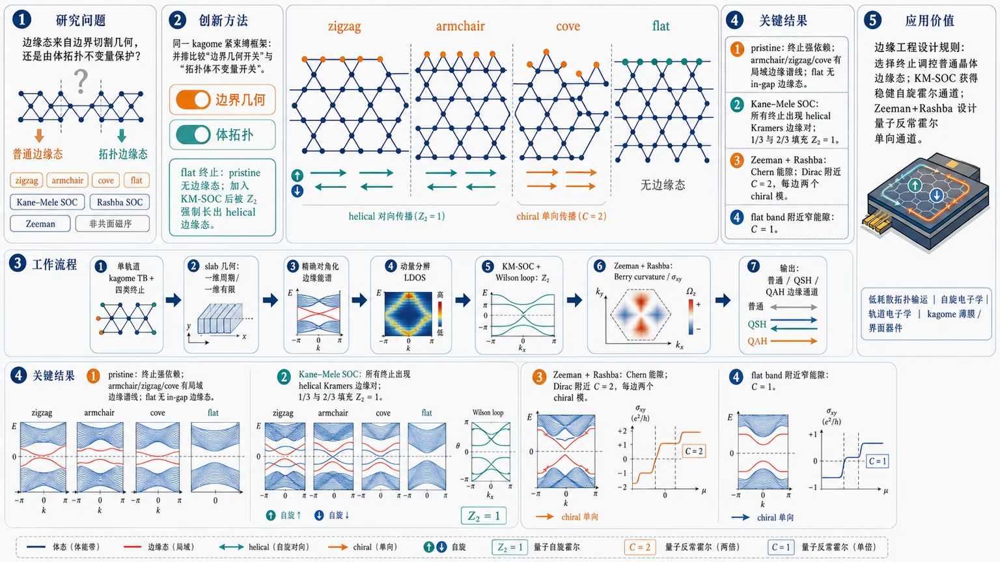
研究问题二维 kagome 晶格的边缘态究竟是由边界切割几何产生的普通晶体边缘态，还是由体拓扑不变量保护的拓扑边缘态？论文聚焦四种晶格终止（zigzag、armchair、cove、flat）、Kane–Mele 自旋轨道耦合、Rashba 自旋轨道耦合、Zeeman 磁场与非共面磁序如何共同决定边缘通道是否出现、是否稳健、是否量子化。创新方法Aha 点是用同一个 kagome 紧束缚框架把“边界几何开关”和“拓扑体不变量开关”并排比较：flat 终止在 pristine 极限下像一堵“无边缘态的平墙”，完全抑制普通边缘模；但加入 Kane–Mele SOC 后，即使 flat 边界也被体 ℤ₂ 拓扑强制长出 helical 边缘态。进一步用 Zeeman 场打破时间反演、Rashba SOC 混合自旋并开拓扑能隙，生成 Chern 绝缘相与单向 chiral 边缘通道。工作流程输入单轨道 kagome 紧束缚模型与四类边界切割 → 构造 slab 几何，一方向周期、一方向有限 → 精确对角化得到边缘能谱 → 用动量分辨 LDOS 标出边缘局域位置 → 加入 Kane–Mele SOC 并用 Wilson loop 判断 ℤ₂ 指数 → 加入 Zeeman+Rashba SOC，计算 Berry curvature 与异常霍尔电导 → 输出普通边缘态、QSH helical 边缘态、QAH/Chern chiral 边缘态的对应图谱。关键结果pristine kagome 中边缘态强烈依赖终止：armchair、zigzag、cove 可出现多条局域边缘谱线，LDOS 聚集在 dangling 或低配位边缘位点；flat 终止完全没有 in-gap 边缘态。Kane–Mele SOC 打开体能隙，使所有终止都出现终止无关的 helical Kramers 边缘对，Wilson loop 在 1/3 与 2/3 填充均给出非平庸 ℤ₂=1。Zeeman 场加 Rashba SOC 打开 Chern 能隙，Dirac 点附近异常霍尔平台对应 C=2，每条边两个 chiral 模；flat band 附近窄能隙对应 C=1。应用价值该研究为 kagome 材料的边缘工程提供可视化设计规则：通过选择边界终止可关闭或选择普通晶体边缘态，通过 Kane–Mele SOC 可获得稳健自旋霍尔边缘通道，通过 Zeeman+Rashba 机制可设计量子反常霍尔单向通道。其意义面向低耗散拓扑输运、自旋电子学、轨道电子学以及 kagome 薄膜/界面器件中的边界态调控。第一部分：核心概览 (Overview)
该研究系统揭示二维 kagome 晶格边缘态如何受 晶格终止、Kane–Mele 自旋轨道耦合、Rashba 自旋轨道耦合、Zeeman 场与非共面磁序调控。核心贡献在于：区分了终止依赖的普通晶体边缘态与由体拓扑不变量保护的边缘态；发现 flat 终止在 pristine 极限下完全抑制边缘态；证明 Kane–Mele SOC 可产生终止无关的 ℤ₂ 量子自旋霍尔相；证明 Zeeman+Rashba SOC 可产生具有量子化霍尔电导的 Chern 绝缘相。其地位在于把 kagome 边缘工程从几何终止扩展到 SOC 与磁序协同调控。
---
第二部分：结构化快速回顾
《Kagome edge states under lattice termination, spin-orbit coupling, and magnetic order》（None，）
背景
二维 kagome 晶格具有 Dirac cones、van Hove singularities、flat bands 等电子结构特征，易产生强关联与拓扑相。边缘态既可来自普通边界几何，也可来自非平庸体拓扑。kagome 材料中有限 SOC 与磁序普遍存在，使边缘态可在 termination-dependent trivial states 与 topologically protected states 之间转换。
方法
采用单轨道 tight-binding model 描述 kagome 晶格；使用 slab geometry 与精确对角化研究不同边界终止；通过 momentum-resolved LDOS 定位边缘态；通过 Wilson loop 计算 ℤ₂ index；通过 Berry curvature 与 anomalous Hall conductivity 识别 Chern number。
结果
pristine kagome 中，不同终止产生显著不同边缘谱：armchair、zigzag、cove 支持多种边缘态，flat termination 完全不支持边缘态。加入 Kane–Mele SOC 后，bulk gap 打开，并出现不依赖终止的 helical edge states。加入 Zeeman field + Rashba SOC 后，系统进入 QAH / Chern insulating phases，其中 Dirac 点附近 gap 对应 𝒞 = 2，flat band 附近窄 gap 对应 𝒞 = 1。
讨论
普通边缘态对边界几何极端敏感，而拓扑边缘态由体不变量保护，对终止细节不敏感。SOC 不只是打开能隙，还能改变边缘态的拓扑性质。Zeeman 场破坏 TRS，Rashba SOC 混合自旋通道并打开动量依赖 gap，从而产生量子反常霍尔响应。
局限
模型为理想化单轨道 tight-binding；边界主要限制为沿主轴的 line cuts；真实材料中的多轨道效应、表面重构、无序、电子相互作用、衬底耦合未系统纳入。提供文本在 V.1 处截断，非共面磁序章节细节无法完整核验。
结论
kagome 边缘态可通过 晶格终止、SOC 类型、磁性破缺 TRS 实现多维调控。flat 边界抑制普通边缘态 与 Kane–Mele SOC 恢复终止无关拓扑边缘态 构成关键对照；Zeeman+Rashba SOC 提供实现 Chern 相与 QAH 边缘通道的简洁机制。
---
第三部分：逐章节冷凝解析 (Section-by-Section Condensing)
Abstract
Termination sensitivity of pristine kagome edge states
pristine 二维 kagome lattice 的边缘态强烈依赖 boundary geometry；某些终止可完全消除局域边缘模。摘要明确指出：*"In the pristine limit, we show that the existence of localized edge states is highly sensitive to boundary geometry, with certain terminations completely suppressing edge modes."* 这一区分奠定了后续 trivial crystalline edge states 与 topological edge states 的对照。
Kane–Mele SOC produces robust ℤ₂ helical edge states
Kane–Mele spin–orbit coupling 打开体能隙，并稳定 topologically protected helical edge states；所得相为对边界细节不敏感的 ℤ₂ insulating phase。摘要给出核心结论：*"Kane–Mele spin–orbit coupling opens a bulk gap and stabilizes topologically protected helical edge states, yielding a robust ℤ2 insulating phase that is insensitive to termination details."*
Zeeman field and Rashba SOC generate Chern phases
Zeeman field 与 Rashba spin–orbit coupling 的组合驱动系统进入 Chern insulating phases，且 Chern numbers 与 chiral edge modes 数目一致。摘要表述为：*"the combined effect of a Zeeman field and Rashba spin–orbit coupling drives the system into Chern insulating phases, with Chern numbers consistent with the number of chiral edge modes."*
Non-coplanar magnetism adds scalar-spin-chirality-driven topology
Non-coplanar magnetic textures 通过有限 scalar spin chirality 生成多个 Chern phases；Kane–Mele coupling 可强烈调节拓扑 gap。摘要指出：*"non-coplanar magnetic textures generate multiple Chern phases through finite scalar spin chirality, with Kane–Mele coupling strongly tuning the topological gaps."*
由于提供文本在 V.1 截断，非共面磁序的具体模型、参数与图像证据不可完整核验。
---
I Introduction
Edge states connect boundary physics to bulk topology
Edge states 是局限在材料边界的低维电子态，在拓扑凝聚态中具有核心作用。引言定义为：*"Edge states refer to low-dimensional electronic states that are pinned to the boundaries of a material."* 其拓扑意义来自 bulk-boundary correspondence：*"nontrivial bulk invariants manifest as gapless modes confined to system boundaries."* 因而边缘态既是 nontrivial bulk topology 的诊断信号，也是稳健输运通道：*"functional channels for robust, dissipation-resistant transport."*
Kagome geometry creates frustration and exotic correlated physics
二维 kagome lattice 由共享角三角形以六角形式排列，产生强 geometrical frustration。结构描述为：*"corner-sharing triangles arranged in a hexagonal fashion"*，并导致自旋难以简单磁有序：*"preventing spins from aligning magnetically."* 相关后果包括 kagome spin ice states、emergent gauge fields、fractionalized excitations。
Kagome electronic structure hosts Dirac cones, VHS, and flat bands
kagome 能带包含 Dirac cones、van Hove singularities (VHS)、flat bands (FB)。引言明确：*"the band structure contains Dirac cones, van Hove singularities (VHS), and flat bands (FB) at various fillings."* VHS 与 FB 附近的大态密度可增强关联效应：*"The existence of a large density of states around VHS and FB can produce strong correlation effects."* 相关相包括 charge density waves、spin density waves、pair density waves、nematicity、skyrmionic texture、loop currents、unconventional superconductivity。
Boundary termination is already known to control edge states in graphene
普通晶格边缘态对边界终止高度敏感，石墨烯是典型参照。引言对比指出：*"zigzag termination supports localized, nearly flat edge states at half filling"*，而 *"armchair termination lacks such modes."* 这种终止敏感性预计在 kagome 中更丰富，因为 kagome 具有 corner-sharing triangular geometry。
Experimental kagome materials already show termination-dependent surface states
实际 kagome 材料已显示终止可设计表面/边缘态。Co₃Sn₂S₂ 中，不同终止平面产生 Fermi 能级附近差异化表面态：*"different termination planes produce contrasting surface states near the Fermi level."* FeGe 中，“terrace”-like 结构产生台阶边界，并观察到 Fermi 能级附近 spin-polarized edge states：*"revealed spin-polarized edge states around the Fermi level, further enhanced by charge order."*
Trivial and topological edge states differ in robustness
普通边缘态可被边界条件移除或强烈改变，而拓扑边缘态来自体不变量。关键区分为：*"trivial edge states can be removed or significantly modified by boundary conditions"*；相反，*"topological edge states originate from a nonzero topological invariant defined in the bulk."* 后者对不闭合 bulk gap 或不破坏保护对称性的扰动稳健：*"robust against any perturbations that do not close the bulk gap or break the protecting symmetry."*
Kane–Mele SOC motivates ℤ₂ topology in kagome systems
Kane–Mele model 通过自旋依赖的次近邻 hopping 与 staggered potential 产生 ℤ₂ topological insulating phase。引言写明：*"spin-dependent next-nearest-neighbor hopping and a staggered potential give rise to a ℤ2 topological insulating phase in the honeycomb lattice."* 该机制可推广到 kagome；例如 KV₃Sb₅ 正常态中通过 TRIM 波函数宇称确认 ℤ₂ topological phase：*"the ℤ2 nature is confirmed by the wavefunction parity at time-reversal invariant momenta."*
Time-reversal symmetry breaking enables Chern topology and QAH
TRS 可被外磁场、内禀磁性或手性电荷序打破。TRS 破缺可诱导 Chern phase，其特征是非零 Chern number，并支撑 quantum anomalous Hall effect。引言定义 QAH：*"a transverse Hall current arises purely from the Berry curvature of the electronic bands, without the need for an applied magnetic field."*
Ferromagnetic kagome materials motivate Zeeman-field modeling
磁性 kagome 中 QAH 常由 ferromagnetism 驱动；Fe、Co 基 kagome 化合物及 kagome-based 166 family 已有异常输运与中子衍射证据。ferromagnetism 可用面外 Zeeman field 建模：*"The ferromagnetism can be effectively modeled as an out-of-plane Zeeman field."* Zeeman 场产生自旋分裂能带：*"Such a Zeeman field produces spin–split bands."*
Non-coplanar kagome magnetism can generate scalar spin chirality
kagome 自旋常形成非共线结构，最简单是平面 120° q = 0 构型。平面共面序不破坏 TRS，但非共面 canting 可生成有限 scalar spin chirality 并诱导 QAH。引言指出：*"a non-coplanar canting of the spins has been shown to generate a finite scalar spin chirality, which can induce a QAH phase."* 这种 canting 可来自 Dzyaloshinskii–Moriya interactions 或薄膜界面，形成 umbrella-like spin structure。
Research gap lies in edge-state interplay with SOC and magnetism
已有工作对 pristine kagome 有一定研究，但不充分，尤其缺少 SOC、magnetism 与 edge states 的系统联系。研究空白明确为：*"it is not exhaustive, and in particular, does not answer how the edge states intertwine with spin-orbit coupling (SOC) and magnetism."* 非共面磁序下 QAH 已预测，但边缘色散与 SOC 协同仍缺乏研究：*"the edge state dispersion and interplay with spin–orbit coupling remain largely unexplored for such magnetic configurations."*
Four line-cut terminations and flat-edge suppression form a central claim
通过 line cut 识别四种终止，并发现其中一种终止边缘模消失。引言总结为：*"we identify four distinct terminations arising from a line cut."* 以及：*"edge modes vanish for one of these terminations similar to armchair honeycomb system, which has not been previously reported."* 这构成 pristine 部分的主要新发现。
---
II Key properties of the kagome band structure
Single-orbital nearest-neighbor tight-binding model sets the baseline
kagome 晶格以单轨道 tight-binding 模型描述，哈密顿量为
Hₖᵢₙ = −t∑⟨ij⟩σ c†ᵢσ cⱼσ − μ∑ᵢσ c†ᵢσ cᵢσ。对应文字为：*"We start with a single-orbital tight-binding description of the kagome lattice"*。其中 t 是 nearest-neighbor hopping amplitude，μ 是 chemical potential：*"t is the amplitude of the NN hopping integral, and μ is the chemical potential."*
Momentum-space Hamiltonian uses three-sublattice basis
Fourier 变换后，动量空间基矢为 ψₖσ = [cₖAσ, cₖBσ, cₖCσ]ᵀ。原始表述为：*"Here the basis is given by ψkσ=[ckAσ,ckBσ,ckCσ]T"*。三子晶格 A, B, C 对应 kagome 单胞内部自由度。
Nearest-neighbor vectors define the off-diagonal hopping structure
Hamiltonian kernel 中 off-diagonal 元素为 −2t cos δᵢ，其中 δᵢ = k·dᵢ。NN 向量为 d ∈ a₁/2, a₂/2, (a₁−a₂)/2。文字说明：*"For brevity, we use the notation δi=k⋅di"*，并说明 dᵢ 是连接 NN sites 的向量：*"the vector connecting NN sites."*
Analytic eigenvalues reveal two dispersive bands and one flat band
在 μ = 0 时，本征值为 E(k)=2t, −t[1 ± √f(k)]，其中
f(k)=3+2cos kₓ+4cos(kₓ/2)cos(√3kᵧ/2)。对应陈述：*"The eigenvalues of Eq. (3) are given by E(k)=2t,−t[1±√f(k)]"*。因此能带由一个 flat band 与两个 dispersive bands 构成。
Dirac points and van Hove singularities structure the kagome DOS
能带沿高对称路径显示两个 dispersive bands 与一个 flat band。关键电子结构为：*"the dispersive bands contain a Dirac point (DP) at K (K’) and saddle points at M, which leads to a logarithmic van Hove singularity (VHS) in the density of states."* 因此 K/K′ 处为 DP，M 点 saddle points 导致 logarithmic VHS。
---
III Crystalline edge states: termination dependence
Slab geometry is required to study edge states
边缘态不能存在于无限无边界晶格中，因此必须使用显式终止。该逻辑写为：*"Since edge states cannot exist in an infinite lattice without boundaries, their study requires an explicit lattice termination."* 使用 slab geometry：*"one of the directions is under periodic boundary conditions, while the other direction is finite."*
Line cuts produce four kagome edge patterns
沿主轴 line cut 产生四种边界终止：zigzag、armchair、cove、flat。原文给出：*"This leads to four types of edge patterns on the kagome lattice: zigzag, armchair, cove, and flat."* 这些终止构成后续边缘谱分类基础。
Projected slab Brillouin zones alter Dirac-point visibility
slab BZ 是 bulk BZ 的投影。固定 x 边缘时周期方向为 kᵧ，高对称路径为 K̄–Γ̄–K̄。原文：*"A slab with edges at fixed x has periodic BZ along ky direction — this leads to the high symmetry path: K¯–Γ¯–K¯."* 因此 bulk Dirac 点在不同 slab 方向可投影到不同动量。
Momentum-resolved LDOS diagnoses real-space edge localization
边缘态空间分布通过 momentum-resolved site LDOS 计算：
ρᵢ(E,kₐ)=∑ₙ |ψᵢₙ(kₐ)|² δ[E−Eₙ(kₐ)]。公式说明中 a=x/y 是周期方向，i=1,…,N 是 site index。Dirac delta 用 Lorentzian 近似：*"We approximate the Dirac delta function by a Lorentzian"*，展宽取 ϵ = 10⁻³：*"with a small broadening ϵ=10−3."*
---
III.1 Edge types at fixed y
Armchair termination supports two edge-state branches
固定 y 方向的 armchair termination 在能带结构中支持两类边缘态：一类连接 K̄ 与 K̄′ 的 Dirac points，另一类位于 flat band 附近。原文描述：*"The armchair termination hosts two edge states in the band structure: one that connects the DPs from K¯ and K¯′, while the other exists near the FB."*
Armchair edge states are two-fold degenerate due to similar top and bottom edges
在 M̄ 点取能量截面后，谱中出现三段 bulk 连续谱与两对 isolated gap states。原文：*"The spectrum shows three continuous spectra arising from the bulk bands, plus two pairs of isolated states located in the gaps."* 这些 gapped states 位于相反能量并且二重简并：*"These gapped states lie at opposite energies and are two-fold degenerate."* 简并来源于上下边界相似性：*"the degeneracy stems from the similarity between the top and bottom edges."*
Mirror symmetry is not required for identical spectra in same-type edges
即使边界类型相同，也不一定有镜面对称；相对边界可能由 screw symmetry 相连。原文：*"even with similar edge types, mirror symmetry may not always be present."* 以及：*"This is the case when opposite edges are connected by screw symmetry (reflection+translation)."* 但有无 mirror symmetry 的 band structure 无明显差异：*"we find no difference in the band structure in the presence and absence of mirror symmetry."*
Armchair LDOS peaks on two-neighbor edge sites and forms triangular plaquettes
在 M̄ 点绘制 LDOS 后，电子主要局域于边界：*"the electrons are mostly localized at the boundaries."* 更具体地，LDOS 在具有两个最近邻的边缘位点强峰化：*"the LDOS strongly peaks at the edge sites with two nearest neighbors."* LDOS 图案形成边缘三角 plaquette：*"the LDOS map forms a triangular plaquette at the edge."*
Triangular edge motion suggests finite orbital angular momentum
边缘三角 plaquette 内的 s 型电子 cycloid 轨道可携带有限 orbital angular momentum (OAM)。原文：*"Electrons (of s-type) moving in such a cycloid trajectory are predicted to carry a finite orbital angular momentum (OAM)."* bulk 中上下三角 OAM 相互抵消，边缘处抵消消失：*"Inside the bulk, neighboring upward and downward triangles negate the OAM, but this cancellation does not occur at the edges."* 因而 kagome edge states 的有限群速度 vₖ=∂ₖE(k) 可用于 orbitronics：*"a finite group velocity vk=∂kE(k) of kagome edge states can be useful in orbitronics."*
Flat termination completely suppresses pristine edge states
flat edge termination 下边缘态完全消失。原文直接表述：*"For the flat edge termination, we find that the edge states completely disappear."* 该终止产生类似 bulk 的 band structure，且无 in-gap edge states：*"This type of termination instead yields a band structure similar to the bulk, with no in-gap edge states."* 因无边缘态，LDOS 未绘制：*"For this reason, we omit the LDOS."*
Armchair-flat mixed slabs localize edge states only on armchair side
一侧 armchair、另一侧 flat 的混合 slab 仍出现类似 armchair 的边缘态：*"the resulting edge states are similar to the armchair termination."* 但由于缺少 mirror symmetry，边缘态不再二重简并：*"the edge states are no longer two-fold degenerate due to the lack of mirror symmetry."* LDOS 显示两类边缘态都局域在 armchair 终止：*"both edge states are localized at the armchair termination."*
---
III.2 Edge types at fixed x
Zigzag termination projects three Dirac points into the slab spectrum
固定 x 方向的 zigzag termination 中，bulk spectrum 在 K̄、K̄′、Γ̄ 处含三个 Dirac points。原文：*"The bulk spectrum contains three DPs at the K¯, K¯′, and Γ¯, respectively."* Γ̄ 处 DP 来自 bulk K 点投影：*"the DP at the Γ¯ point appears due to projection of the K point onto the Γ point."* 这不同于沿 kₓ 方向的 slab BZ，其只含两个 DP：*"This is in contrast to the slab BZ along the kx direction, which has only two DPs."*
Termination-dependent projection can affect device hybridization
特定晶格终止会决定 Γ 点处 edge/bulk states 与 substrate 或 impurity states 的 hybridization。原文强调：*"specific lattice terminations can dictate hybridization at the Γ point with other states (e.g. substrate/impurity), which is important for device applications."*
Zigzag termination supports twofold-degenerate edge states
zigzag slab 谱中存在一对二重简并边缘态：一类连接 DPs，另一类靠近 flat band。原文：*"there exists a pair of twofold-degenerate edge states: one connecting the DPs and another near the FB."* 这种行为类似 armchair：*"reminiscent of the armchair case."* 简并来自 mirror symmetry：*"This degeneracy arises due to mirror symmetry."*
Zigzag LDOS can peak on two- or four-neighbor sites depending on edge-state energy
在 Γ̄ 与 K̄ 之间取能量截面后，LDOS 显示 in-gap states 局域于 slab 边界：*"the in-gap states are localized at the slab boundary as edge states."* 依据边缘态能量不同，LDOS 发生相位移动，最大值可位于两个或四个最近邻的 site 上：*"the LDOS acquires a phase shift so that the maximum LDOS is on a site with either two or four NN sites."*
Cove termination hosts both degenerate and non-degenerate edge states
cove termination 谱中出现一个非简并边缘态，同时另有二重简并边缘态。原文：*"a non-degenerate edge state appears in the spectrum."* 其余由 circle 和 square 标记的态二重简并：*"the others ... are twofold degenerate due to mirror symmetry."*
Cove LDOS spreads into the bulk and distinguishes dangling from non-dangling localization
cove 终止下所有 edge states 均局域，但向 bulk 有一定扩展：*"all edge states are localized, but with some spread into the bulk."* 接近零能的边缘态局域在 dangling site：*"only the edge state close to zero energy localizes on a dangling site."* 其他边缘态局域于更靠内、具有四个 NN 的非 dangling edge sites：*"other edge states are localized on non-dangling edge sites with four NN sites, further into the slab."*
Zigzag-cove mixed termination combines all edge states and removes global degeneracy
混合 zigzag-cove termination 同时包含两种终止的全部可能边缘态：*"mixing both terminations yields all possible edge states from each termination."* 但 mirror symmetry 被破坏，因此全局简并消失：*"this breaks the mirror symmetry and removes any global degeneracy of the states."* 仍可存在点简并：*"point degeneracies are still possible."* 总计出现五个非简并边缘态：*"We thus find five non-degenerate edge states in total."*
Most mixed-edge states localize on the cove side
在 mixed zigzag-cove slab 中，只有 circle 标记的 edge state 同时局域在 slab 两侧：*"only the edge state marked by the circle is localized on both sides of the slab."* 其余边缘态局域于 cove termination：*"In all other cases, the edge states are localized on the cove termination."*
Pristine kagome edge states are strongly termination dependent
总体现象为 pristine kagome 存在大量边缘态，但强烈依赖终止。该节总结为：*"Overall, we find that the pristine kagome lattice hosts a multitude of edge states, strongly dependent on the lattice terminations."*
---
IV Quantum spin Hall phase and ℤ₂ classification
Intrinsic SOC is experimentally relevant in kagome materials
kagome 材料已确认存在内禀 SOC。最早在铁磁 nodal-line semimetal Fe₃Sn₂ 中报道，SOC 完全打开 nodal lines 的 gap 并产生 massive Dirac bands：*"SOC fully gaps out the nodal lines, leading to massive Dirac bands."* 后续 135 与 166 kagome 材料中也确认 intrinsic SOC：*"intrinsic SOC was also confirmed in 135 and 166 kagome materials."*
Kane–Mele SOC is introduced as next-nearest-neighbor chiral hopping
使用 Kane–Mele type SOC (KMSOC) 研究 intrinsic SOC 对 crystalline edge states 的影响。其哈密顿量为
H_QSH = H_KIN + H_KM，其中
H_KM = iλ_KM∑⟪ij⟫σ νᵢⱼ c†ᵢσ σ_z cⱼσ。原文说明：*"KMSOC is a NNN hopping with a chiral factor ν, which takes values 1 or −1 if the hopping is anticlockwise or clockwise, respectively."*
Kane–Mele SOC preserves time-reversal symmetry
虽然 KMSOC 对自旋引入手性 hopping，但由于相反自旋赋予相反 chirality，整体保持 TRS。原文：*"HKM preserves time-reversal symmetry (TRS) since opposite spins are assigned opposite chiralities."*
Momentum-space KM Hamiltonian uses spinful three-sublattice basis
动量空间基矢为
ψₖ=[cₖA↑, cₖB↑, cₖC↑, cₖA↓, cₖB↓, cₖC↓]ᵀ。KMSOC kernel 为
h_KM(k)=σ_z⊗2iλ_KM[...]，其中 τᵢ=k·d′ᵢ，d′ᵢ 是 NNN vectors。原文标明：*"where τi=k⋅d′i, k is the wavevector, and d′i are the vectors connecting NNN sites."*
Finite KMSOC opens two bulk gaps and disperses the flat band
参数 λ_KM/t = 0.15、μ/t = 0 时，KMSOC 在原本 band touching 的高对称点打开 gap：一个在 K 点、位于第一与第二 dispersive bands 之间；另一个在 Γ 点、位于第二 dispersive band 与第三 flat band 之间。原文：*"A finite KM coupling λKM/t=0.15 opens band gaps at high-symmetry points where bands were originally touching."* 并且：*"the presence of KMSOC renders the flat band dispersive."*
Bulk gaps generate gapless edge states for mixed terminations
在 slab geometry 中，KMSOC 打开的 bulk gaps 支持 gapless edge states。原文：*"The opening of band gap leads to gapless edge states in a slab geometry."* 使用两种 mixed-edge slabs，并保证 slab width 足够大以避免边缘态杂化：*"keep the slab width large enough to avoid any hybridization between edge states."*
Position-weighted amplitude identifies edge localization
通过位置算符期望投影确定边缘态位置：
ρₙ,a(k)=∑ᵢ |ψᵢₙ(k)|² r·êₐ。原文说明：*"It is also judicious to project the expectation of the position operator on the bands to pinpoint edge state localization."*
Each boundary hosts two localized edge states in each gap
两个 slab 方向中，每个 boundary 在每个 gap 内均包含两个局域边缘态。原文：*"For both slab directions, we find that each boundary contains two localized edge states in each gap."* 这说明 KMSOC 诱导的边缘态不再依赖 pristine 终止是否原本支持 edge states。
KMSOC enables flat boundary edge states absent in pristine limit
最关键对照是 flat boundary：pristine 时无边缘态，KMSOC 后出现边缘态。原文：*"the SOC enables the flat boundary to host edge states, even though it does not exhibit any edge states without KMSOC."* 这种 termination-independence 指向拓扑起源：*"This termination-independence hints at topological edge states, which depend on bulk topology rather than boundary details."*
Projected Dirac points make Γ̄ and K̄ bands similar in zigzag-cove geometry
在 zigzag-cove edge type 中，Γ̄ 与 K̄ 附近 bands 相似，源自 Dirac point 在 Γ̄ 的投影。原文：*"bands at Γ¯ and K¯ are similar – this happens due to projection of the DP on Γ¯."* 同时 TRS 由 E(K̄)=E(K̄′) 验证：*"We can verify the presence of TRS since E(K¯)=E(K¯′)."*
Wilson loop computes the ℤ₂ invariant
TRS bands 的 topology 通过 ℤ₂ index 分类。QSH 相对应 ℤ₂ = 1，普通绝缘体对应 ℤ₂ = 0。原文：*"A time-reversal invariant QSH phase has ℤ2=1, which distinguishes it from ordinary insulators with ℤ2=0."* Wilson loop 方法等价于追踪 maximally localized Wannier centers：*"This method is equivalent to tracking maximally localized Wannier centers."*
Odd Wilson-loop crossing diagnoses nontrivial ℤ₂ topology
Wilson loop transfer matrix 为
W(kᵧ)=∏ᵢ Pᵢ,i+1(kᵧ)，其中 overlap matrix 为
Pᵢ,i+1ᵐⁿ(kᵧ)=⟨uₘ(kₓⁱ,kᵧ)|uₙ(kₓⁱ⁺¹,kᵧ)⟩。本征值相位为 θₙ(kᵧ)=Im[ln λₙ(kᵧ)]。判据为：*"if θ(ky) crosses a reference line θc odd number of times, we have ℤ2=1, otherwise it is trivial and ℤ2=0."*
Both one-third and two-third fillings are ℤ₂ nontrivial
由于 spin degeneracy，1/3 filling 有两个 occupied bands，2/3 filling 有四个 occupied bands：*"there are two occupied bands at 1/3 filling and four at 2/3 filling."* TRS 下只需演化半个 BZ；kᵧ = 0 与 kᵧ = 2π 是 Kramers-degenerate points：*"ky=0 and ky=2π are Kramers-degenerate points related by TRS."* 当 kᵧ: 0→π 时，θ(kᵧ) 对两个 filling 均近似发生 π jump：*"θ(ky) exhibits an approximately π jump for both fillings."* 取参考线 θc = −0.3 时，θ 穿越一次：*"θ(ky) crosses this line once ... signaling non-trivial ℤ2 bulk topology."*
Helical edge states are spin-polarized counter-propagating Kramers pairs
ℤ₂ 相的直接结果是 helical edge states，即相反方向传播的自旋极化边缘模对。原文定义：*"pairs of spin-polarized edge modes that propagate in opposite directions."* 给定 boundary 上边缘态斜率相反，表示 counter-propagating motion：*"edge states associated with a given boundary exhibit opposite slopes, indicating counter-propagating motion."* 自旋极化由补充材料确认：*"these counter-propagating modes carry opposite spin polarizations."*
KMSOC transforms the edge spectrum into termination-independent QSH topology
KMSOC 将 pristine kagome 的 gapless edge modes gap out，并产生与 ℤ₂ topological phase 一致的 helical spin-polarized edge states。结论性表述：*"the inclusion of KMSOC gaps out the otherwise gapless edge modes of the pristine kagome lattice, yielding helical, spin-polarized edge states that are consistent with a ℤ2 topological phase."* 这些 edge modes 以 Kramers pairs 出现，数目不依赖 termination：*"their number is independent of the lattice termination."*
---
V Quantum anomalous Hall phase via ferromagnetism
V.1 Zeeman field and Rashba SOC
Breaking TRS converts QSH physics toward QAH physics
QSH phase 在 TRS 破缺后可演化为 QAH phase。原文开篇：*"The QSH phase discussed in Sec. IV evolves into a QAH phase once TRS is broken."* QAH 关键特征是无外磁场的 Hall 响应：*"an anomalous Hall conductivity, which is a Hall response generated without any magnetic field."*
Ferromagnetism in kagome motivates an out-of-plane Zeeman field
kagome 材料中 ferromagnetism 普遍存在，可能源于 flat band 或 VHS 靠近 Fermi level。原文：*"the kagome lattice generally supports FM due to the presence of a non-dispersive FB or a VHS, if appearing near the Fermi level."* 用 Zeeman field 简化表示 TRS 破缺机制：*"we use a Zeeman field to provide a simple mechanism to break TRS."*
Rashba SOC models SOC-induced lifting of nodal degeneracies
磁性 kagome semimetals 中 SOC 可解除 nodal line degeneracies，并可由 RSOC 建模。原文：*"the inclusion of SOC lifts the nodal line degeneracies, which can be modeled by RSOC."* 在 global topological gap 内，异常霍尔电导以 e²/h 为单位量子化：*"The anomalous Hall conductivity is known to be quantized in units of e2/h inside a global topological gap."* 该相称为 Chern insulating phase，由 Chern number 表征：*"characterized by a ℤ invariant known as the Chern number."*
Zeeman plus Rashba SOC opens topological gaps
实现量子化 QAH 时，Zeeman/exchange field 与 Rashba SOC 的组合很有用。Zeeman 场产生自旋极化能带，RSOC 在动量空间进一步解除自旋简并并打开 bulk gap。原文：*"the exchange field creates spin-polarized bands, the RSOC can further lift spin degeneracy in momentum space to create a bulk gap."*
Rashba SOC mixes spin sectors and breaks Sz conservation
RSOC 产生 spin-momentum locking，即自旋取向依赖动量：*"spin orientation depends on momentum, and as a result, the bulk bands exhibit a momentum-dependent splitting."* 与 KMSOC 不同，RSOC 混合自旋部门，使 S_z 不再守恒：*"unlike KMSOC, the RSOC mixes the spin sector, so that Sz is no longer a conserved quantum number."* Rashba 项要求 inversion symmetry broken，可由非中心对称层堆叠或表面/界面效应产生：*"requires broken inversion symmetry ... due to non-centrosymmetric stacking of layers or surface/interface effects."*
Minimal QAH Hamiltonian combines kinetic, Rashba, and Zeeman terms
模型为
H_QAH = H_KIN + H_R + H_Z。RSOC 项为
H_R = −iλ_R∑⟨ij⟩,σσ′ c†ᵢσ(dᵢⱼ×σ_σσ′)_z cⱼσ′；Zeeman 项为
H_Z = −h_z∑ᵢ(c†ᵢ↑cᵢ↑ − c†ᵢ↓cᵢ↓)。原文说明：*"The second and third terms describe the Hamiltonian for RSOC and out-of-plane Zeeman field, respectively."*
Zeeman and Rashba parameters define the studied bulk bands
图 4 使用 h_z/t = 0.6，RSOC 为 λ_R/t = 0.2。图注给出：*"with RSOC (λR/t=0.2) under constant Zeeman field (hz/t=0.6)."* Zeeman 场产生 spin-polarized and split bands，并形成一对 DP、FB 以及四个 VHS points：*"The Zeeman field leads to spin-polarized and -split bands, which create a pair of DP and FB, as well as four VHS points."*
Rashba SOC opens gaps at Dirac and flat-band features
加入 RSOC 后，自旋通道混合并在 DP 与 FB 处打开 gap。原文：*"Applying RSOC mixes the spin channels and opens up a gap at the DP and FB."* 这些 bulk gaps 支持 gapless edge states：*"These bulk gaps host gapless edge states."* Dirac point 附近 global gap 中存在两对 edge states：*"two pairs of edge states exist in the global gap around DP."* flat band 附近的 edge states 因 gap 小而不明显：*"the pair of edge states near FB are less visible due to the small band gap."*
Berry curvature and anomalous Hall conductance establish topology
仅有 bulk gap 与 edge states 不能证明非平庸拓扑：*"The opening of a bulk gap and existence of edge states cannot verify non-trivial topology alone."* 因此计算 intrinsic anomalous Hall conductance：
σₓy(E)= (e²/h)∫BZ d²k/A_BZ ∑ₙ Ωₙ,k Θ(Eₙ,k−E)。Berry curvature 为
Ωₙ,k = −Im∑ₘ≠ₙ [Fᵐⁿ,xy − Fᵐⁿ,yx]/(Eₙ−Eₘ)²。TRS 破缺意味着：*"Ωn,k≠Ωn,−k"*，从而 σₓy 非零。
Quantized plateau around μ/t = −1 gives Chern number 𝒞 = 2
σₓy 随 μ/t 变化，在 μ/t = −1 附近出现完美量子化平台。原文：*"exhibits a perfect quantized plateau around μ/t=−1."* 该平台对应 Dirac point 附近 bulk gap：*"This corresponds to the bulk gap around the DP."* 在 global topological QAH gap 内，σₓy = 𝒞 e²/h：*"Inside a global topological QAH gap, the anomalous conductance is a constant given by σxy=𝒞e2/h."* 此处 𝒞 = 2：*"Here we find 𝒞=2 for the gap around DP."*
Bulk-boundary correspondence predicts two protected chiral edge states per edge
由于 bulk-boundary correspondence，𝒞 = 2 意味每个边界有两个受保护边缘态。原文：*"this implies two protected edge states per edge."* 这一数量与 slab band structures 中的 chiral edge modes 一致。
Flat-band gap is also topological with 𝒞 = 1 but narrow
flat band 附近窄 gap 同样拓扑非平庸，Chern number 为 𝒞 = 1。原文：*"the narrow gap near the flat band ... is topological with 𝒞=1."* 但由于 gap 很小，边缘态分辨率较差：*"although the edge states are poorly resolved due to the small gap."*
Zigzag-cove projected Brillouin zone duplicates chiral modes
对于 zigzag-cove termination，BZ 周期由 Γ̄ 与 K̄ 给出，因此图中 chiral modes 显示两次。原文：*"for the zigzag-cove termination, the BZ has a period given by Γ¯ and K¯, such that Fig. 4(c) displays the chiral modes twice."*
Berry curvature patterns distinguish different Chern gaps
𝒞 = 2 gap 的 Berry curvature 呈 satellite-like 分布，峰值集中在 K 与 K′ 附近：*"The map for 𝒞=2 contains satellite-like Berry curvature, with peaks concentrated near K and K′."* TRS 缺失使 valleys 间峰值不对称：*"the lack of TRS ensures the satellite peaks are asymmetric between valleys."* 𝒞 = −1 gap 的 Berry curvature 峰值形成围绕 Γ 的 ring：*"the Berry curvature peaks form a ring around Γ."*
Nearly quantized metallic regions do not define Chern numbers
除 global gaps 外，σₓy 有时接近量子化，但系统为金属，Chern number 不适定。原文：*"σxy sometimes shows a nearly quantized behavior. This is, however, not related to a finite Chern number since the system is here metallic, which makes the Chern number ill-defined."*
---
第四部分：深度理解与语言支持 (Understanding & Nuance)
1. 术语解析
Bulk-boundary correspondence
学术含义：体相拓扑不变量决定边界上必须出现的无能隙态。语境中强调边缘态不是偶然表面态，而是 bulk topology 的必然显现。原句：*"nontrivial bulk invariants manifest as gapless modes confined to system boundaries."*
微妙点：并非所有边缘态都来自 bulk-boundary correspondence；pristine kagome 的许多边缘态是 termination-dependent crystalline edge states，不一定受拓扑保护。
Termination-dependent
学术含义：物理性质随边界切割方式变化。这里指 zigzag、armchair、cove、flat 等不同终止导致边缘态存在性、简并性、局域位置不同。
微妙点：termination-dependent 通常暗示 非拓扑稳健性较弱；flat 终止完全抑制 pristine edge states，是这一概念的极端例子。
Helical edge states
学术含义：一对相反传播方向的边缘模，且两个方向携带相反自旋极化。原句：*"pairs of spin-polarized edge modes that propagate in opposite directions."*
微妙点：helical 不等同于 chiral。helical 有 counter-propagating Kramers partners，依赖 TRS 保护；chiral edge states 单向传播，常见于 Chern/QAH 相。
Spin-momentum locking
学术含义：电子自旋方向与动量相关联。RSOC 使自旋随 k 改变，从而产生动量依赖的能带分裂。原句：*"spin orientation depends on momentum, and as a result, the bulk bands exhibit a momentum-dependent splitting."*
微妙点：KMSOC 保持 S_z 守恒，而 RSOC 混合 spin sectors，使 S_z 不再是好量子数。
Scalar spin chirality
学术含义：通常为三自旋标量积 χᵢⱼₖ = Sᵢ·(Sⱼ×Sₖ)，非零时等效产生 Berry flux，可诱导 Chern topology。语境中对应非共面 kagome 磁序诱导 QAH。
微妙点：共面 120° q=0 order 可非共线但 scalar chirality 为零；必须有非共面 canting 才能产生有限 scalar chirality。
---
2. 疑难查证
为什么 flat termination 能完全没有 pristine edge states，却在 KMSOC 后出现边缘态？
pristine 边缘态依赖局域边界几何。flat termination 的边界切割方式不支持局域化 in-gap 解，因而 slab spectrum 类似 bulk，原文给出：*"edge states completely disappear"*。
KMSOC 后，边缘态来源改变：不再由 dangling bonds 或局域边界几何决定，而由 bulk ℤ₂ invariant 决定。只要 bulk gap 不闭合、TRS 不破坏，边界必须承载 helical modes。因此 flat boundary 虽然在普通晶体意义上“不长边缘态”，但在 QSH 相中必须出现拓扑边缘态。
为什么 Wilson loop crossing odd number of times 表示 ℤ₂ = 1？
Wilson loop 相位可理解为 hybrid Wannier center 随动量演化的轨迹。TRS 约束下，Wannier centers 只能以特定方式连接。若轨迹穿越任意参考线奇数次，说明无法连续变形为普通绝缘体的平庸配对结构，拓扑指数为 ℤ₂ = 1。若穿越偶数次，可两两湮灭，属于 ℤ₂ = 0。
这里 θc = −0.3 被穿越一次，因此两个 filling 均为非平庸 QSH。
为什么 Zeeman field alone 不足以稳定量子化 QAH，而常需 Rashba SOC？
Zeeman field 主要做两件事：破坏 TRS、分裂自旋能带。但量子化 QAH 还需要在相关能带交叉处打开全局拓扑 gap。Rashba SOC 混合自旋通道，在动量空间解除简并并开 gap。只有当 Fermi level 位于全局 gap 内，σₓy 才能严格量子化并定义 Chern number。金属区即使 Hall conductance 接近量子化，也不能定义 Chern number。
为什么 Chern number 等于边缘模数？
二维 Chern insulator 的 bulk-boundary correspondence 表明，occupied bands 的 Chern number 等于边界上净手性模数量。𝒞 = 2 表示每条边有两个同向净 chiral modes；𝒞 = 1 表示一个净 chiral mode。这里 Dirac gap 附近 𝒞 = 2，因而 slab spectrum 中每边出现两个受保护 chiral edge states。
---
第五部分：创新评估与关联 (Synthesis & Novelty)
1. 创新性判断
Flat termination suppresses pristine kagome edge modes
相对于已有 pristine kagome 边缘研究，四类 line-cut terminations 的统一比较提供了更完整的 termination map。最突出的新颖点是 flat termination 完全消除边缘模。研究动机中明确标注该现象此前未报道：*"edge modes vanish for one of these terminations similar to armchair honeycomb system, which has not been previously reported."*
Unified distinction between crystalline and topological kagome edge states
过去 2–5 年 kagome 研究多聚焦材料特定能带、bulk topology、CDW/SC/磁性相，边缘态常作为附带结果出现。这里以同一 tight-binding 框架区分两类边缘态：
普通 crystalline edge states：强 termination dependence，可被 flat edge 抑制；
拓扑 QSH/QAH edge states：由 ℤ₂ 或 Chern number 控制，termination-independent。
这一对照直接解决了“边缘态来自边界几何还是体拓扑”的判别问题。
Kane–Mele SOC turns termination-sensitive kagome edges into robust QSH channels
KMSOC 不仅打开 bulk gap，还使 flat boundary 也承载边缘态。创新性在于把 SOC-induced topology 与具体 kagome termination 逐一关联，证明拓扑边缘态可覆盖原本不支持普通边缘态的边界。关键证据为：*"the SOC enables the flat boundary to host edge states, even though it does not exhibit any edge states without KMSOC."*
Zeeman plus Rashba mechanism gives explicit Chern-edge correspondence in kagome slabs
通过 h_z/t = 0.6 与 λ_R/t = 0.2 的最小模型，展示 spin-split kagome bands 在 RSOC 下打开 topological gaps，并给出 𝒞 = 2 与 𝒞 = 1 的量子化 Hall plateau。相较仅讨论 bulk Chern bands 的工作，这里把 Berry curvature、σₓy plateau、slab chiral modes 三者连接起来，提供直接边缘态证据。
SOC and magnetism are treated as tunable knobs rather than fixed material details
kagome 材料中 SOC、FM、非共面磁序通常被作为材料特异参数处理；该研究将其抽象为可调模型项：KMSOC、RSOC、Zeeman field、non-coplanar texture。这样可系统回答：同一 kagome lattice 在不同终止、不同 SOC、不同 TRS-breaking 机制下如何从 trivial edge states 转变为 QSH 或 QAH edge states。
Remaining gap
已提供文本中，非共面磁序部分尚未完整呈现；因此无法核验其具体新颖性细节，如 magnetic texture 参数、scalar chirality 数值、Chern phase diagram、KMSOC 对 topological gaps 的定量调控幅度。根据摘要和引言，预期创新点是将 non-coplanar scalar-spin-chirality-induced QAH 与 edge dispersion / SOC tuning 系统结合。
-
17
📄 摘要：分析交替磁体在外磁场下由磁振子-声子耦合形成的磁振子极化子对自旋塞贝克效应的影响。由于补偿反平行自旋与非简并磁振子谱共存，自旋塞贝克系数出现显著方向各向异性；这种输运特征可作为识别交替磁有序的实验可及信号。
💡 亮点：外磁场下交替磁体的磁振子极化子使自旋塞贝克系数呈方向各向异性。该输运信号为交替磁序识别提供了比谱学更易接近的热自旋探针。
📖 展开分析 + 配图
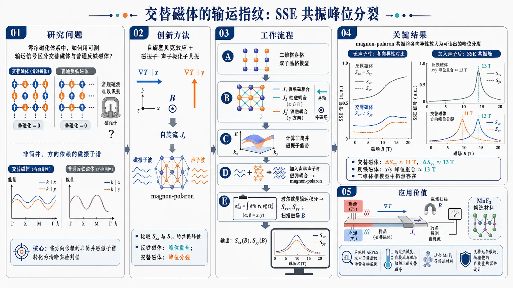
研究问题如何在零净磁化、常规磁测难以识别的交替磁体中，用可测输运信号区分其与普通反铁磁体；核心是寻找一种能把“非简并、方向依赖的磁振子谱”转化为清晰实验图像的判据。创新方法提出利用自旋塞贝克效应结合磁振子-声子极化子共振作为交替磁体指纹：沿 x、y 方向施加温度梯度和磁场，比较 Sxx 与 Syy 的共振峰位；反铁磁体峰位重合，交替磁体因各向异性磁振子色散出现峰位分裂。工作流程输入二维棋盘格双子晶格磁模型，设置 J1 反铁磁耦合、J2/J2′ 方向依赖铁磁耦合、易轴各向异性和外磁场；计算非简并磁振子能带；加入声学声子与磁弹耦合形成 magnon-polaron；用玻尔兹曼输运积分计算 Sxx、Syy；扫描磁场，输出不同方向的 SSE 曲线和共振峰位置。关键结果无声子时，普通反铁磁极限满足 Sxx=Syy，交替磁体出现明显 Sxx≠Syy，且磁场越强差异越大；加入声子后，SSE 出现尖锐 magnon-polaron 共振峰，反铁磁体 x/y 峰均约在 13 T，交替磁体中 ΔSxx 峰约 11 T、ΔSyy 峰约 13 T；三维体相模型中该方向峰位分裂仍然存在。应用价值提供一种不依赖 ARPES 或中子散射动量分辨成像的输运识别方案，可通过热梯度、自旋流和磁场扫描读出交替磁序；尤其适合 MnF₂ 等候选材料，并为无杂散场、场稳健的自旋量热器件设计提供材料判据。第一部分：核心概览
该研究提出一种基于自旋塞贝克效应（SSE）与磁振子-声子极化子（magnon-polaron）共振识别交替磁体（altermagnet）的输运方案。核心贡献在于证明：交替磁体因非简并、方向依赖的磁振子谱产生强烈各向异性 SSE；加入磁弹耦合后，SSE 随磁场出现方向相关的共振峰，峰位直接反映内禀磁振子能带各向异性。该方案相比 ARPES、中子散射更具输运可测性，尤其适用于 MnF₂ 等候选材料。
---
第二部分：结构化快速回顾
《Magnon-polaron mediated spin Seebeck effect in altermagnets》（None，）
背景
交替磁体兼具反铁磁体的零净磁化与铁磁体式的自旋极化输运通道，但实验识别困难。传统磁强计对补偿自旋序不敏感，ARPES 与非弹性中子散射又依赖动量分辨探测。自旋塞贝克效应可将温度梯度转化为自旋流，为交替磁序提供输运探针。
方法
采用二维棋盘格双子晶格玩具模型：最近邻反铁磁交换 J₁，次近邻同子晶格铁磁交换 J₂、J₂′；当 J₂≠J₂′ 时产生交替磁性，当 J₂=J₂′ 时退化为普通反铁磁体。通过玻尔兹曼理论计算 Sxx、Syy，并加入声学声子、磁弹耦合与 Fermi 黄金律散射，扩展到 2D 与 3D 情形。
结果
无声子时，反铁磁极限满足 Sxx=Syy，交替磁体中 Sxx≠Syy，且外磁场越强各向异性越明显。加入声子后，磁振子与声子杂化形成 magnon-polaron，SSE 出现共振峰。反铁磁体中 x、y 方向峰位相同；交替磁体中峰位不同，2D 示例中 ΔSxx 峰约 11 T，ΔSyy 峰约 13 T。
讨论
峰位差异源自交替磁体的方向依赖磁振子色散。磁弹耦合产生局域化共振峰，相比平滑背景输运信号更易区分。即使没有精确点接触，有限反交叉能隙也使近共振动量窗口显著贡献 SSE。
局限
分析基于 d-wave 交替磁体玩具模型，参数为代表性选择而非特定材料拟合。主要考虑声学声子，忽略光学声子，因为高能杂化对 SSE 贡献较小。可观测多个 SSE 峰要求磁振子与声子在近共振区域相交，并存在可分辨的能带分裂。
结论
方向依赖 SSE 与 magnon-polaron 共振峰位偏移构成识别交替磁性的稳健输运标志。该机制可推广到其他交替磁对称性，并为无杂散场、自旋量热器件中的交替磁体应用奠定理论基础。
---
第三部分：逐章节冷凝解析
Abstract
- Altermagnets bridge ferromagnets and antiferromagnets
交替磁体同时具有补偿反平行自旋与非简并磁振子谱，在磁学分类中处于铁磁体与反铁磁体之间。摘要直接界定其物理地位：*"Altermagnets, distinguished by compensated antiparallel spins yet nondegenerate magnon spectra, bridge the gap between ferromagnets and antiferromagnets."* 这里的关键不是净磁化，而是补偿磁序仍允许能带自旋分裂。
- Directional anisotropy of SSE is the central transport signature
外磁场下，交替磁体的 spin Seebeck coefficient 沿不同面内方向显著不同，并且磁场越强差异越大：*"the spin Seebeck effect exhibits pronounced directional anisotropy"*；更具体地，*"the spin Seebeck coefficient differs significantly along in-plane directions, and this anisotropy increases with field strength."* 这给出一种不依赖动量分辨谱学的输运识别方式。
- Magnetoelastic coupling creates resonant field-dependent fingerprints
磁弹相互作用使磁振子与声子杂化，产生 magnon-polaron 共振峰；峰位相对于外磁场的位置编码内禀磁振子带各向异性：*"Magnetoelastic interactions further produce resonant peaks whose positions with respect to an applied magnetic field reflect the intrinsic magnon band anisotropy."* 这些峰不是宽泛背景，而是局域化特征：*"provide localized features that enhance the distinguishability of the altermagnetic response."*
- Resonance peaks are proposed as robust experimental signatures
摘要将共振峰定位为实验判据：*"The peaks provide a robust experimental signature of altermagnetic order."* 关键逻辑是：普通反铁磁体的等向简并磁振子导致同一场强峰位，而交替磁体的方向性磁振子谱导致不同方向峰位分裂。
---
Main text: Magnetic context and motivation
- Ferromagnets and antiferromagnets define the conventional contrast
铁磁体具有平行自旋排列和有限净磁化：*"Ferromagnets are characterized by parallel alignment of spins, resulting in a finite net magnetization."* 反铁磁体具有反平行自旋排列和宏观零磁化：*"Antiferromagnets, in contrast, host antiparallel spin alignment with a vanishing macroscopic magnetization."* 该对比为交替磁体的“零磁化但自旋分裂”属性提供参照。
- Antiferromagnets are technologically attractive but hard to detect
反铁磁体的零净磁矩带来抗杂散场能力和超快自旋动力学，但也造成探测困难：*"This absence of net moment provides robustness against stray fields and ultrafast spin dynamics, but simultaneously complicates their detection as conventional magnetometry is largely insensitive to compensated spin order."* 这解释了为何补偿磁序需要非传统探针。
- Altermagnets form a distinct collinear magnetic class
交替磁体不是普通反铁磁体的微小修正，而是新的共线磁类：*"Altermagnets, recently identified as a distinct class of collinear magnets, provide a new paradigm in this landscape."* 其核心在于补偿反平行自旋序与对称保护的能带简并解除并存：*"They combine compensated antiparallel spin order with a symmetry-protected lifting of magnon (and electronic) band degeneracy."*
- Altermagnets combine zero net magnetization with spin-polarized transport
交替磁体的中间性体现在：无净磁化，却有自旋极化输运通道：*"altermagnets occupy an intermediate position between ferromagnets and antiferromagnets as they host no net magnetization, yet exhibit spin-polarized transport channels."* 这使其具有类似铁磁体的功能性，但避免铁磁体的杂散场问题。
- Spintronic relevance arises from stray-field-free functionality
应用意义来自低串扰紧凑器件潜力：*"they promise spintronic functionality akin to ferromagnets without producing stray fields, thus enabling compact device architectures with reduced cross-talk."* 交替磁体因兼具自旋极化和零净磁矩，被定位为新型自旋电子材料平台。
- Experimental identification remains a central bottleneck
交替磁体的实验确认困难主要来自两点：无净磁化使常规磁测失效；能带分裂通常需动量分辨技术：*"their experimental identification remains challenging"*；*"direct observation of their symmetry-induced band splitting often requires momentum-resolved probes such as angle-resolved photoemission spectroscopy or inelastic neutron scattering."*
- Transport anisotropy is positioned as an alternative diagnostic
输运量各向异性可将交替磁体与普通铁磁/反铁磁体区分：*"Anisotropies in the spin transport quantities can potentially offer unambiguous signature that differentiates altermagnets from conventional ferro- and antiferromagnets."* 该判断直接引出 SSE 作为候选探针。
- Spin Seebeck effect probes magnon-mediated spin transport
SSE 被定义为温度梯度到自旋流的转化：*"the spin Seebeck effect (SSE) - the conversion of a temperature gradient into a spin current"*。其领域地位是探测磁振子输运的核心平台：*"has been established as a central platform for probing magnon-mediated spin transport in ferromagnets."*
- Conventional collinear antiferromagnets have vanishing zero-field SSE
共线反铁磁体中相反自旋角动量的磁振子带通常在整个布里渊区简并：*"magnon bands associated with opposite spin angular momentum are typically degenerate across the Brillouin zone."* 因此零场 SSE 抵消：*"the SSE vanishes at zero magnetic field unless this degeneracy is lifted by spin canting, external fields, or Dzyaloshinskii–Moriya interactions."*
- Altermagnets can host finite anisotropic zero-field SSE
交替磁体即使没有自旋轨道耦合或外场，也可保持非简并磁振子带：*"magnon bands in altermagnets remain non-degenerate even in the absence of spin–orbit coupling or external fields."* 这使零场有限、各向异性 SSE 成为独特判据：*"enabling a finite, anisotropic SSE at zero field, and providing a unique signature to distinguish them from antiferromagnets."*
- Magnon-polaron physics adds a resonant enhancement channel
磁弹相互作用指磁振子与晶格振动声子的耦合：*"magnetoelastic interactions, i.e., the coupling between magnons and lattice vibrations (phonons)."* 特定场构型下二者杂化为 magnon-polaron：*"magnon and phonon modes hybridize to form magnon–polarons, producing pronounced enhancements of the SSE."*
- Magnon-polaron SSE in altermagnets was unexplored
已有研究主要集中在铁磁体和少量反铁磁体：*"this effect has been extensively investigated in ferromagnets and to a lesser extent in antiferromagnets."* 对交替磁体的作用尚未探索：*"its role in altermagnets has not, to the best of our knowledge, been explored."*
- Localized magnon-polaron peaks are more robust than broad anisotropic backgrounds
实验中可能存在多种自旋相关输运机制，且通常随磁场平滑变化：*"the measured response can contain multiple spin-dependent transport mechanisms. These contributions typically vary smoothly with magnetic field and can obscure the interpretation of broad spin Seebeck anisotropies."* 与此相对，磁振子-声子杂化给出局域化 SSE 峰：*"magnon–phonon hybridization gives rise to localized peaks in the SSE as a function of magnetic field."*
- Resonance fields are predictable from spectra
共振发生在磁振子和声子色散相交处：*"occurring at the resonant fields where the magnon and phonon dispersions intersect."* 因峰位可由谱计算预测：*"the positions of these resonances can be predicted from the magnon and phonon spectra"*，所以即便存在背景贡献仍具诊断性：*"such peaks provide a more robust diagnostic signature even in the presence of additional background contributions."*
- MnF₂ motivates the proposed transport route
候选交替磁体 MnF₂ 的理论分裂尚未被非弹性中子散射捕捉：*"in the candidate altermagnet MnF₂, whose predicted splitting has so far eluded inelastic neutron scattering."* 但两个分支的理论 magnon-polaron 共振场仍可分辨：*"the theoretical magnon–polaron resonance fields of the two branches remain resolvable below the neutron sensitivity bound."* 这支持声子介导 SSE 作为竞争性探针：*"Phonon-mediated SSE can be competitive with neutron spectroscopy as a probe of altermagnetic order."*
- Field direction and measurement direction are aligned
研究设置明确为磁场沿 SSE 测量方向施加：*"The magnetic field is applied along the same direction in which the SSE is measured."* 因此比较 Sxx 与 Syy 时，既改变温度梯度/自旋流方向，也改变外场方向。
- Key discriminant: same peak field in antiferromagnets, different peak fields in altermagnets
反铁磁体中 magnon-polaron SSE 峰在所有方向出现在相同场强：*"In an antiferromagnet, a peak is seen in the magnon-polaron-mediated spin Seebeck coefficient at the same magnetic field along all directions."* 交替磁体中不同方向峰位对应不同外场强度：*"in an altermagnet, the peaks in the SSE in different directions appear on applying different strengths of magnetic field."* 这反映内禀磁振子色散各向异性：*"reflecting the intrinsic anisotropy of magnon dispersion."*
---
Main text: Minimal lattice model and magnon spectrum
- Toy model uses a checkerboard two-sublattice compensated spin structure
最小模型为二维棋盘格双子晶格，具有反平行自旋：*"we consider a minimal lattice model shown in Fig. 1 (a) comprising two sublattices with antiparallel spins."* 图注进一步说明：*"The lattice has a checkerboard shape with sites alternating between up and down spins."*
- Exchange anisotropy J₂≠J₂′ generates altermagnetism
相邻异子晶格自旋通过 J₁ 反铁磁耦合；同子晶格次近邻通过 J₂、J₂′ 铁磁耦合：*"Neighboring spins from opposite sublattices are coupled antiferromagnetically (exchange J₁) while next-nearest neighbors on the same sublattice have ferromagnetic couplings (J₂ along one crystal axis and J₂′ along the other)."* 交替磁性条件为：*"J₂≠J₂′ enables altermagnetism while J₂=J₂′ corresponds to antiferromagnetic behavior."*
- Model geometry has material relevance to Cr₂Te₂O
该单层结构并非完全抽象，存在于材料结构中：*"This monolayer structure is seen in Cr₂Te₂O."* 这为玩具模型提供候选材料背景，但计算参数并未声称拟合 Cr₂Te₂O。
- Hamiltonian contains five physical ingredients
哈密顿量包括：最近邻反铁磁交换 J₁、Zeeman 场 H₀、方向依赖次近邻交换 J₂/J₂′、易轴各向异性 D。定义为：*"J₁ is the inter-sublattice nearest neighbor antiferromagnetic exchange, J₂ and J₂′ are the intra-sublattice next-nearest neighbor exchanges, D is the easy-axis anisotropy along y, and H₀ is a Zeeman term for an external field along y."*
- Diagonalization yields two magnon branches
对哈密顿量对角化得到两个磁振子模式：*"Diagonalizing the Hamiltonian in Eq. (1) yields two magnon modes ωA(k) and ωB(k)."* 两支能量由 Λ₁、Λ₂、X 控制：*"Λ₁,₂, and X are combinations of the Zeeman field, exchange parameters and anisotropy."*
- Altermagnetic phase has nondegenerate magnon modes at every wavevector
当 J₂≠J₂′ 时，Λ₁≠Λ₂，导致两支磁振子谱不同：*"In the altermagnetic phase (J₂≠J₂′), one finds Λ₁≠Λ₂, yielding ωA(k)≠ωB(k) for every wavevector k."* 这给出交替磁体的核心能谱特征。
- Antiferromagnetic limit recovers degenerate branches at zero field
当 J₂=J₂′ 且无外场时，Λ₁=Λ₂，两支磁振子简并：*"setting J₂=J₂′ results in Λ₁=Λ₂ in the absence of an external field, recovering two degenerate magnon modes ωA(k) at H₀=0."* 该极限对应普通方格反铁磁体：*"the model reduces to a square-lattice antiferromagnet with degenerate magnon branches."*
- Nondegenerate direction-dependent dispersion enables zero-field SSE
交替磁体区别于反铁磁体的关键在于磁振子色散既非简并又依赖方向：*"The presence of nondegenerate, direction-dependent magnon dispersion in altermagnets is the key distinction that enables a finite SSE without applied field."*
---
Main text: Magnetoelastic coupling and SSE formalism
- Directional SSE becomes stronger after including phonons
声子引入后，系统方向性增强：*"The directional anisotropy in the spin Seebeck effect becomes even more pronounced when phonons are included in the system."* 物理机制是磁振子与声子杂化：*"Magnons and phonons can hybridize to form magnon-polarons."*
- Magnetoelastic energy is written in terms of Néel vector and strain
长波极限下，磁弹能量由 Néel 矢量 L 的小偏离与应变张量 u 表示：*"In the long-wavelength limit, the magnetoelastic energy per unit cell n can be expressed in terms of small deviations of the Néel vector L(n)=SA(n)−SB(n), ... and strain u(n) from equilibrium."* 这里 L 描述两个反平行子晶格的差分磁序。
- Only linear resonant magnon-phonon coupling is retained
计算聚焦于最直接影响共振的耦合项：*"Here, we have only considered the linear resonant coupling between magnons and phonons."* 因此非共振高阶磁弹项不参与主要数值结果。
- SSE tensor definition links spin-current direction and temperature-gradient direction
Sαβ 定义为沿 α 测量的自旋流对沿 β 温度梯度的响应：*"the spin Seebeck coefficient Sαβ, defined as the spin-current response measured along α for a temperature gradient applied along β."* 研究重点是纵向分量 Sxx 与 Syy。
- Boltzmann expression includes magnonic weight, spin polarization, lifetime, velocities and Bose factor
混合 magnon-polaron 模式的 SSE 形式为积分表达式，包含 Wi(k)、𝒮i(k)、τi(k)、vi,α vi,β 与热权重 ε(k,T)：*"Within Boltzmann theory, the SSE with hybridized magnon-polaron modes is given by an expression of the form..."* 其中 Ωi(k) 为混合模能量：*"Ωi(k) is the hybridized magnon-polaron mode energy."*
- Magnonic weight quantifies magnetic content of hybrid modes
Wi(k) 表示第 i 个 magnon-polaron 模式的磁性振幅：*"Wi(k) is the magnonic weight, or the magnetic amplitude, of the ith magnon-polaron mode."* 由于声子本身不直接携带磁自旋，混合模对 SSE 的贡献取决于其磁性成分。
- Spin polarization of each magnon branch is encoded as ±1
每个模式的自旋极化取 ±1：*"𝒮i(k)=±1 is the spin polarization corresponding to magnon mode."* 在反铁磁简并情形中，相反极化分支相互抵消；交替磁性破坏这种完美抵消。
- Numerical parameter set is explicit and representative
二维计算采用参数：J₁=1 meV、J₂=−1 meV、D=−0.1 meV、S=3/2：*"we adopt the parameter set J₁=1 meV, J₂=−1 meV, D=−0.1 meV, and S=3/2."* 参数选择被描述为代表性量级：*"chosen to be representative, lying within the same order of magnitude as those reported for antiferromagnets and candidate altermagnetic materials."*
- Antiferromagnetic and altermagnetic cases differ only by J₂′
反铁磁极限设置 J₂′=J₂：*"In the antiferromagnetic limit, J₂′=J₂."* 交替磁体设置 J₂′=−2 meV：*"for the altermagnetic case, we set J₂′=−2 meV."* 声速取 c=3500 m/s：*"The phonon speed is set to c=3500 m/s."*
---
Main text: 2D SSE without phonons
- 2D calculations first isolate bare magnon contribution
研究先考察二维极限、无声子贡献的 SSE：*"First, we focus on the 2D limit."* 图 2 展示无声子时 Sαα²D 随磁场变化：*"Fig. 2 shows the spin Seebeck coefficient in the magnetic sample, Sαα²D, plotted vs. the applied magnetic field H, in the 2D limit and the absence of phonons."*
- Antiferromagnetic configuration is nondirectional
当 J₂′=J₂ 时，纵向 SSE 不具有方向性：*"For the antiferromagnetic configuration (J₂′=J₂), the longitudinal SSE is non-directional, i.e., Sxx=Syy for all values of the external magnetic field."* 这对应普通反铁磁体的 x/y 对称性与磁振子简并性。
- Altermagnetic configuration is highly directional
当 J₂′≠J₂ 时，SSE 对 x、y 方向显著不同：*"in the altermagnetic configuration (J₂′≠J₂), the longitudinal SSE is highly directional."* 具体表现为同一磁场强度下 x 与 y 方向响应不同：*"the SSE is different for the same magnitude of magnetic field applied along x- and y-directions."*
- Directional asymmetry grows with magnetic field
各向异性随外磁场增强：*"this directional asymmetry becomes more pronounced with increasing magnitude of the magnetic field."* 这说明磁场不是交替磁性的根源，而是放大其可测输运差异。
- Group-velocity anisotropy is the microscopic origin
方向性来自交替磁体中 x/y 群速度不同：*"This enhancement arises directly from the anisotropy in the group velocities along the x- and y-directions in altermagnets."* 由于 SSE 积分中含 vi,α vi,β，群速度各向异性会直接转化为 Sxx/Syy 差异。
- Bare directional SSE is already an altermagnetic signature
无声子条件下的磁场方向依赖 SSE 本身已构成判据：*"The directional asymmetry in the SSE with respect to the applied magnetic field is a signature of altermagnetic character."*
---
Main text: 2D SSE with acoustic phonons and magnon-polaron peaks
- Only acoustic phonons are retained
声子部分只考虑声学声子：*"We do not consider the coupling to optical phonons, as their hybridization with magnons occurs at high energies and thus contributes negligibly to the SSE."* 声学模具有线性色散且关于 k 对称：*"The acoustic modes have a linear and symmetric dispersion with respect to the wavevector k."*
- Phonons enhance directionality through hybridization
引入声子后，计算反铁磁体与交替磁体中的 SSE：*"we now proceed to calculate the SSE in both an antiferromagnet and an altermagnet in the presence of acoustic phonons."* 这一部分验证 magnon-polaron 是否能将平滑各向异性转化为清晰峰位差异。
- Antiferromagnets show common SSE peaks in Sxx and Syy
反铁磁极限中，Sxx 与 Syy 都出现明显峰：*"We observe a pronounced peak in both Sxx and Syy."* 峰来自磁振子频率等于声子频率处：*"This peak arises at the point where the magnon frequency is equal to the phonon frequency."* 杂化结果为 magnon-polaron 带：*"the magnons and phonons hybridize to form magnon-polaron bands."*
- Magnon-polaron enhancement is consistent with known SSE physics
这种 SSE 增强不是全新机制，而是已知 magnon-polaron 效应在交替磁体中的应用：*"The enhancement in the SSE due to magnon-polarons is well-known."* 新意在于用峰位方向差异识别交替磁性。
- Symmetric mode crossing enforces equal peak fields in antiferromagnets
反铁磁体中模式交叉关于波矢 k 对称，因此不同方向峰位相同：*"Since the mode crossing is symmetric with respect to the wavevector k, the peaks in Sxx and Syy appear at the same magnitude of the magnetic field."*
- Altermagnetic asymmetric dispersion shifts resonance fields by direction
交替磁体中磁振子色散关于 k 不对称：*"in the altermagnetic limit, the magnon dispersion is asymmetric with respect to k."* 因而磁振子带与声子带沿不同波矢方向在不同磁场相交：*"the magnon bands and phonon bands cross at different magnetic fields along different wavevector."* 观测结果为不同磁场处出现峰：*"we observe the peaks at different values of magnetic field."*
- Different resonance fields are claimed unique to altermagnets
这种方向依赖峰位被定义为交替磁体特有行为：*"This behavior is unique to altermagnets."* 其“唯一性”建立在与具有 x/y 等价简并谱的普通反铁磁极限比较之上。
- Phonon-induced SSE difference isolates the peaks
通过计算有无声子杂化带来的增量 ΔSxx²D、ΔSyy²D，峰位更清楚：*"Fig. 3 (c) and Fig. 3 (d) show the difference gained in the SSE due to the hybridization with phonons, ΔSxx²D and ΔSyy²D."* 该差分去除了裸磁振子背景，使共振结构更突出：*"The positions of the peaks are seen much clearly in this case."*
- 2D altermagnetic peak positions differ by about 2 T
交替磁体中，ΔSxx 峰约在 11 T，ΔSyy 峰约在 13 T：*"The peak appears at H∼11 T in ΔSxx but at H∼13 T in ΔSyy for the altermagnetic case."* 这直接量化了方向各向异性。
- 2D antiferromagnetic peak positions coincide near 13 T
反铁磁极限中，两个方向峰位均约为 13 T：*"In the antiferromagnetic limit, the peak appears at H∼13 T for both Sxx²D and Syy²D."* 这提供了与交替磁体 11 T/13 T 峰位分裂的清晰对照。
- Exact magnon-phonon touching is unnecessary
可观测峰不要求严格点接触：*"Exact point-touching is not required."* 原因是磁弹耦合在有限动量窗口内杂化模式：*"the magnetoelastic coupling hybridizes the modes over a finite momentum window set by the anticrossing gap."*
- Near-resonant regions dominate the observable signal
近共振区域对 SSE 贡献显著：*"This near-resonant region contributes significantly to the spin Seebeck response."* 因而即使交替磁体共振只在孤立点发生，仍能产生清晰峰：*"even in the altermagnetic case, where the resonance occurs only at isolated points, the magnon-polaron contribution remains sufficiently strong to generate clearly observable peaks."*
- Magnon-polaron response differs from bare SSE even away from exact resonance
由于有限反交叉窗口，magnetoelastic 信号不仅出现在严格接触场：*"For the same reason, the magnon–polaron signal deviates from the bare magnon Seebeck response even at fields away from the exact touching condition."*
---
Main text: 3D bulk extension
- 3D model stacks 2D checkerboard layers with weak interlayer exchange
三维类比模型由二维棋盘格层堆叠而成，层间耦合弱：*"we investigate a three-dimensional analog of our model, which is defined as layers of the 2D checkerboard stacked on top of each other with a weak interlayer exchange Jinter."*
- Bulk calculation includes all phonon modes
与二维简化不同，体相极限考虑所有声子模式：*"In the bulk limit, we consider all phonon modes."* 这使 3D 结果更接近真实材料的声学谱结构。
- 3D phonon velocities are anisotropic and material-realistic
横向模式速度取 cλx=cλz=3500 m/s，纵向模式取 cλy=7000 m/s：*"We adopt realistic material parameters for the phonon velocities: cλx=cλz=3500 m/s for the two transverse modes, and cλy=7000 m/s for the longitudinal mode."*
- Magnonic parameters match 2D plus weak out-of-plane exchange
磁性参数保持二维设置，只加入 0.01 meV 层间交换：*"The parameters for the magnonic subsystem are kept the same as in the two-dimensional case, with the addition of a 0.01 meV out-of-plane exchange coupling to account for the bulk geometry."*
- Bulk behavior remains similar to 2D behavior
三维体相的 SSE 与二维极限相似：*"The behavior in the bulk limit is similar to the behavior in the 2D limit."* 这说明方向峰位分裂不是二维特例。
- Bulk antiferromagnet retains equal Sxx and Syy peaks
在体相反铁磁极限中，Sxx³D=Syy³D，峰出现在相同场强：*"we show the SSE Sxx³D=Syy³D and its derivative with respect to the magnetic field."*；*"The peaks are seen at the same strength of magnetic field along the x and y directions."*
- Bulk altermagnet retains different peak fields in x and y
体相交替磁体中，Sxx³D 与 Syy³D 的峰仍出现在不同磁场：*"Similar to the 2D case, the peaks appear at different strengths of the magnetic field for Sxx³D and Syy³D."* 因此三维中仍可用 SSE 非对称性区分两类磁体：*"the asymmetry in the spin Seebeck response can be used to distinguish antiferromagnets from altermagnets even in the bulk limit."*
---
Conclusion
- SSE is established as a transport probe of altermagnetism
结论明确将 SSE 定位为交替磁性的输运探针：*"we have demonstrated that the spin Seebeck effect provides a clear transport-based probe of altermagnetism."* 其优势是无需直接解析动量空间能带分裂。
- Antiferromagnets are isotropic because magnon degeneracy constrains SSE
普通反铁磁体中，磁振子简并使 SSE 特征各向同性：*"In contrast to antiferromagnets, where magnon degeneracy enforces isotropic SSE signatures."* 这与交替磁体的非简并方向依赖谱形成判别基础。
- Altermagnets exhibit finite strongly anisotropic SSE even at zero field
交替磁体即使零场也有有限强各向异性响应：*"altermagnets exhibit a finite, strongly anisotropic response even at zero field."* 这源于其在无 SOC、无外场条件下仍可存在的磁振子能带分裂。
- Magnon-polaron resonances amplify the distinction
加入声子后，magnon-polaron 共振进一步增强交替磁体与反铁磁体差异：*"When phonons are included, the resulting magnon–polaron resonances further enhance this distinction."*
- Peak-position comparison is the clean diagnostic rule
反铁磁体：所有方向同一场强出现峰；交替磁体：不同方向峰位对应不同场强：*"In antiferromagnets, a peak appears in the SSE at a fixed field along all directions, whereas in altermagnets the peak positions in the SSE along different directions appear at different field strengths."* 这种差异反映底层磁振子色散：*"reflecting the underlying anisotropic magnon dispersion."*
- Directional SSE and magnon-polaron peaks are robust hallmarks
方向依赖性与 magnon-polaron 特征共同构成稳健标志：*"SSE measurements, particularly their directional dependence and magnon–polaron mediated features, can serve as robust hallmarks of altermagnetism."*
- Spin caloritronic relevance is emphasized
交替磁体可作为场稳健、无杂散场的自旋量热材料：*"open the way to exploiting altermagnets as field-robust, stray-field-free spin caloritronic materials."*
- Mechanism is general beyond the d-wave toy model
虽然计算集中于 d-wave 交替磁体玩具模型，机制可推广：*"Although our analysis focused on a d-wave altermagnet toy model, the mechanism is general and can be extended to other altermagnetic symmetries."*
- Observability requires magnon-phonon near resonance and splitting near resonance
多个 SSE 峰的观察需满足两项条件：磁振子与声子近共振相交、近共振处存在分裂：*"The effect requires for magnon and phonons to cross near resonance and for there to be splitting near resonance."* 这些条件可在 MnF₂ 等材料中出现：*"conditions that can occur in known materials such as MnF₂."*
- MnF₂ is used to argue possible advantage over neutron scattering
结论再次强调相较中子散射的潜在优势：*"We highlight the potential advantages of our method over neutron scattering in the supplementary information by focusing on MnF₂."*
---
Acknowledgements
- Funding source is Dutch Research Council support
R. D. 与 Y. M. B. 获得荷兰研究委员会项目支持：*"R. D. and Y. M. B. acknowledge support from the project 'Ronde Open Competitie ENW pakket 21-3' (file number OCENW.M.21.215) which is (partly) financed by the Dutch Research Council (NWO)."*
---
第四部分：深度理解与语言支持
1. 术语解析
- Altermagnets
中文常译为交替磁体或交错磁体。其关键不是“另一种反铁磁体”，而是具有补偿反平行自旋序但仍允许动量依赖自旋分裂/磁振子分裂的共线磁相。语境中强调：零净磁化 + 非简并磁振子谱 + 自旋极化输运。
- Compensated antiparallel spins
指两个或多个子晶格磁矩大小相等、方向相反，总磁矩抵消。compensated 强调宏观净磁化为零；antiparallel 强调微观自旋方向相反。普通反铁磁体和交替磁体都可满足这一点，但交替磁体还有能带非简并。
- Nondegenerate magnon spectra
指两条或多条磁振子能带在相同波矢 k 处能量不同。普通共线反铁磁体中，相反自旋角动量磁振子常简并；交替磁体中晶体对称性使这种简并解除。这里的 nondegenerate 是 SSE 不完全抵消的根源。
- Magnon-polaron
磁振子-声子极化子，即磁振子与声子在能量和动量接近时通过磁弹耦合形成的混合准粒子。它既有磁性成分，也有晶格振动成分。SSE 中只有磁性成分直接携带自旋，因此公式引入 magnonic weight Wi(k)。
- Resonant peaks
指随外磁场扫描时，在磁振子与声子色散交叉/近交叉处出现的尖锐增强。这里的 resonant 不是普通实验噪声峰，而是由能量匹配、杂化和反交叉窗口共同产生的可预测峰位。
2. 疑难查证
- 为什么交替磁体零净磁化却能有有限 SSE？
普通反铁磁体中，两支相反自旋角动量磁振子通常能量相同、速度对称、占据相同，因此温度梯度驱动的相反自旋流相互抵消。交替磁体虽然总磁矩仍为零，但晶体旋转对称性与自旋子晶格结构使两支磁振子在相同 k 处能量不同、速度不同，抵消不再完全。因此即使没有外场，也可出现有限且方向依赖的 SSE。
- 为什么 magnon-polaron 峰位能识别交替磁性？
声子色散近似线性且方向上较规则。磁振子色散若是普通反铁磁型对称，则 x 与 y 方向上与声子相交所需磁场相同，SSE 峰位一致。交替磁体中，磁振子色散沿 x、y 不同，外场调节磁振子能量时，不同方向达到磁振子-声子共振的场强不同，于是 Sxx 与 Syy 峰位分裂。
- 为什么不需要精确的磁振子-声子点接触？
有限磁弹耦合会在交叉附近打开反交叉能隙，使两种模式在一个有限动量范围内混合，而不是只在数学上的单个点混合。SSE 是对整个布里渊区积分的输运量，只要近共振区域贡献足够大，就能产生可测峰。交替磁体即使共振点较孤立，也可因有限反交叉窗口出现清晰信号。
- 为什么光学声子被忽略？
光学声子通常能量较高，与低能磁振子在相关温度和磁场范围内难以强烈杂化；即便发生杂化，热占据较低，对 SSE 的贡献小。声学声子低能、线性色散，更容易与磁振子在可实验磁场下共振。
---
第五部分：创新评估与关联
1. 创新性判断
- 从谱学识别转向输运识别
近年交替磁体研究大量依赖 ARPES、极化中子散射、非弹性中子散射 等动量分辨技术。该研究将识别重心转移到 spin Seebeck transport，用温度梯度与自旋流测量捕捉交替磁性，降低了对直接能带成像的依赖。
- 把 magnon-polaron 共振引入交替磁体诊断
magnon-polaron SSE 已在铁磁绝缘体和部分反铁磁体中研究较多，但交替磁体中的作用此前基本空白。这里的创新不是单纯“有 magnon-polaron 增强”，而是利用共振峰位的方向分裂作为交替磁序的指纹。
- 解决了宽背景 SSE 各向异性不易判读的问题
裸 SSE 各向异性可能被其他平滑磁场依赖输运机制掩盖。magnon-polaron 产生局域化峰，峰位可由磁振子-声子谱预测，因此比宽泛幅值差异更稳健。该点直接面向实验复杂性。
- 提出与中子散射互补甚至竞争的方案
MnF₂ 等候选交替磁体中的磁振子分裂可能低于中子散射灵敏度或难以解析。若两个 magnon-polaron 共振场仍可分辨，SSE 峰位差可成为间接但清晰的证据。这为“谱学看不到分裂但输运能看到差异”提供了新路径。
- 从 2D 扩展到 3D，增强普适性
结果不仅在二维单层模型中成立，也在含层间交换与多声子模式的三维体相模型中保持。由此说明该机制不是低维模型偶然性，而是由交替磁体内禀磁振子各向异性驱动的普适效应。
- 明确提出可实验判据：比较 Sxx 与 Syy 的峰位
最简洁的实验规则是：
反铁磁体：Sxx 与 Syy 的 magnon-polaron SSE 峰在同一磁场；交替磁体：Sxx 与 Syy 峰在不同磁场。
该判据比绝对信号强度更可靠，因为峰位通常比幅值更不受样品尺寸、界面透明度、热接触质量等实验因素影响。
-
18
📊 含图深析
📄 摘要：综述物理信息机器学习在基于偏微分方程的地震波传播建模中的应用。检索 OpenAlex 与 Scopus，梳理相对昂贵的标准数值模拟在反问题中的计算瓶颈，以及机器学习在降低成本同时维持物理精度方面的策略、模型类型与应用场景。
💡 亮点：该综述系统整理地震波 PDE 建模中的物理信息机器学习，聚焦正演与反演的成本瓶颈。它为波动方程类 AI 代理模型提供了跨方法地图。
📖 展开分析 + 配图
研究问题地震波传播由声波、弹性波、Helmholtz 等 PDE 控制，传统有限差分/有限元/边界元求解精确但昂贵，尤其全波形反演需要反复正演；核心问题是：物理信息机器学习如何在保持物理一致性的同时，加速地震波正演、反演和代理建模，并在何种条件下优于或补充标准数值方法。创新方法Aha 点是用范围综述将“物理如何进入机器学习”清晰拆成三条视觉主线：observational bias 用真实或数值模拟数据携带物理，inductive bias 把波动方程、有限差分时间推进等物理结构嵌入网络架构，learning bias 通过 PDE 残差和物理约束损失训练模型；该框架把 PINNs、神经算子、代理模型、混合数值-学习方法放在同一张黑箱到白箱的连续谱上比较。工作流程输入为 OpenAlex 与 Scopus 中关于 machine learning、seismology、wave equation、modeling 的文献记录；经 PRISMA-ScR 五步流程筛选：提出研究问题→数据库检索→标题摘要与全文筛选→提取方法、方程、架构、正反演任务、效率和局限→按正演/反演、控制方程、数值基准和三类物理偏置汇总；输出为 2018–2024 年 40 项研究的领域地图、方法分类、性能趋势和未来挑战。关键结果检索 OpenAlex 163 条、Scopus 142 条，过滤合并去重后得到 165 篇唯一出版物，最终纳入 40 项研究；多项代理模型在推理阶段显著加速，部分神经网络比标准求解器快 20–500 倍，U-NO 在二维弹性波场模拟中约快 60 倍，FNO/U-NO/MIFNO 可跨速度模型、震源位置和网格分辨率泛化；同时发现训练数据依赖大量数值模拟、训练成本高、三维真实地震验证不足、基准不统一。应用价值该研究为地震学中的快速波场预测、全波形反演、地下速度结构估计、微震源定位和不确定性评估提供方法地图；实际意义不是立即替代有限差分等标准求解器，而是在反演和大规模重复模拟场景中作为快速代理、物理约束学习模块或混合求解组件，帮助降低计算成本并推动可复现基准、三维扩展和真实地球物理验证。第一部分：核心概览 (Overview)
该综述系统梳理物理信息机器学习在地震学波传播建模中的应用，覆盖正演建模、反演问题、代理模型与PINNs等路径。核心贡献在于用范围综述方法将文献按物理知识嵌入机制划分为observational bias、inductive bias、learning bias，并指出该领域已显示降低计算成本、辅助反演和替代部分数值求解流程的潜力，但仍受限于基准不一致、训练成本高、三维扩展和真实地球物理验证不足。
---
第二部分：结构化快速回顾
《A Scoping Review of Physics Informed Machine Learning for Wave Propagation Modeling in Seismology》（None，）
背景
地震波传播通常由偏微分方程 PDEs描述，标准数值方法如有限差分法、有限元法、边界元法精度高但计算成本大，尤其在反演问题中需要反复求解正演模型。机器学习与物理信息神经网络 PINNs被视为降低计算成本并保持物理一致性的补充方案。
方法
采用PRISMA-ScR范围综述流程，检索OpenAlex与Scopus数据库，使用查询式：*"("machine learning" OR "deep learning" OR "neural networks") AND ("seismic" OR "seismology") AND "wave equation" AND (modeling OR modelling OR model OR simulation)"*。经筛选后形成最终纳入文献集。
结果
检索得到 OpenAlex 163 条、Scopus 142 条；过滤后分别保留 134 与 108 条；合并去重后得到 165 篇唯一出版物；最终纳入 40 项 2018–2024 年研究。物理信息嵌入机制被归为三类：observational bias、inductive bias、learning bias。
讨论
机器学习方法可用于代理建模、快速波场预测、FWI和参数反演。部分方法在推理阶段比传统求解器快 20–500 倍，U-NO 在二维弹性波模拟中约快 60 倍。神经算子可跨速度模型、源位置和网格分辨率泛化。
局限
主要问题包括：训练数据依赖大量数值模拟、训练成本高、跨研究基准不统一、三维真实地球物理场景验证不足、与标准数值方法公平比较困难。文献中还存在最终纳入数量表述不一致：正文写 40 studies，图注写 44 selected studies。
结论
标准数值方法仍是地震学工作流基础；物理信息机器学习更适合作为反演问题和代理建模中的补充工具。未来重点应包括一致基准、混合公式、可复现实验、三维扩展和真实地球物理条件下验证。
---
第三部分：逐章节冷凝解析 (Section-by-Section Condensing)
Abstract
Computational bottleneck in seismic wave simulation
标准数值方法能够准确模拟地震波，但在反演问题中计算代价高。摘要直接界定问题背景：*"Standard numerical methods accurately simulate seismic waves but are computationally expensive, particularly for inverse problems."* 这一判断确立了机器学习方法进入地震波传播建模的主要动机：不是单纯替代数值方法，而是在高成本场景中提供更快近似或辅助求解。
Machine learning as a physically constrained alternative
机器学习方法被定位为降低计算成本、保持可接受物理精度的替代或补充路径。摘要给出核心前提：*"Machine learning approaches have been proposed as alternatives that can reduce computational cost while maintaining acceptable physical accuracy."* 这里的关键不是纯数据驱动预测，而是面向物理约束与PDE 控制系统的机器学习。
Review objective centered on PDE-based seismic wave propagation
综述目标是映射物理信息机器学习如何应用于基于偏微分方程的地震波传播建模。原始目标表述为：*"To map how physics-informed machine learning methods have been applied to seismic wave propagation modeling based on partial differential equations."* 研究范围明确限制在seismology中的wave propagation modeling，而非一般地球物理机器学习。
Scoping review design with OpenAlex and Scopus
方法采用范围综述，数据库包括 OpenAlex 与 Scopus，并按问题类型与机器学习策略分类。摘要写明：*"A scoping review was conducted using the OpenAlex and Scopus databases."* 同时，文献被分类为：*"Selected studies were classified by problem type (forward or inverse) and machine learning strategy to identify research trends, methodological patterns, and gaps in the literature."*
Three physics incorporation mechanisms
结果识别出三种嵌入物理知识的机制：observational bias、inductive bias、learning bias。摘要给出分类核心：*"Application of three mechanisms for incorporating physical knowledge were identified: observational bias, inductive bias, and learning bias."* 这构成整篇综述的主要分析框架。
PINN reproducibility through PyTorch replication
代表性方法的可复现性通过复现原始 PINN 框架进行测试。摘要中指出：*"To evaluate methodological reproducibility of a representative method, the original PINN framework was replicated in PyTorch, obtaining results consistent with and in most cases more accurate than those originally reported."* 这说明该综述不仅是文献地图，也包含方法复现实验维度；不过正文提供内容中尚未出现复现实验的详细数值表。
Persistent limitations
主要局限集中于benchmarking consistency、training cost、3D scalability与experimental validation。摘要直接列出：*"limitations remain in benchmarking consistency, training cost, and scalability to three-dimensional and experimentally validated problems."* 这些局限决定了该领域尚未形成成熟替代标准数值方法的范式。
Complementary rather than replacement role
结论强调标准数值方法仍是地震学工作流基础，物理信息机器学习更适合作为补充。摘要表述为：*"Standard numerical methods remain the basis of seismological workflows, while physics-informed machine learning offers complementary approaches that are useful for inverse problems and surrogate modeling."* 未来方向包括：*"consistent benchmarking, hybrid formulations, and validation under realistic geophysical conditions."*
---
Introduction
Wave propagation is governed by PDEs across science and seismology
波传播被定义为由偏微分方程 PDEs描述的物理现象，广泛应用于医学和地震学。开篇说明：*"Wave propagation is a physical phenomenon described by partial differential equations (PDEs), which are widely used due to their applicability in fields such as medicine and seismology."* 当解析解不可得时，需要数值近似：*"analytical solutions are not always available in many practical situations, and therefore numerical methods are generally required to obtain approximate solutions."*
Standard numerical methods discretize space but incur cost under refinement
有限差分法 FDM、有限元法 FEM、边界元法 BEM是最常用标准方法。原文列出：*"Among the most widely used standard numerical approaches are the finite difference method, the finite element method, and the boundary element method."* 这些方法依赖空间离散：*"These methods rely on discretizing the spatial domain to obtain approximate solutions to the governing differential equations."* 网格加密提高精度但增加成本：*"The mesh refinement improves the numerical approximation, reduces the relative error with respect to the analytical solution, and simultaneously increases the computational cost."*
Helmholtz equation example quantifies accuracy–cost tradeoff
二维 Helmholtz 方程示例用于展示网格加密的误差与时间权衡。方程为：(nabla²f+(5π)²f=0) 于 (Ømega)，边界条件 (f=0) 于 (partialØmega)。解析解为：*"f(x,y)=sin(5π x)sin(5π y)."* 图 1 比较 N = 10×10、20×20、30×30 的点分布、近似解、剖面线和收敛图，图注写明：*"Point distributions used in the simulations, corresponding to N = 10×10, 20×20, and 30×30."*
Mathematical modeling balances efficiency and physical fidelity
建模目标是在低误差和高效率之间取得平衡。原文强调：*"the main objective is to ensure that solution methods are computationally efficient and exhibit a sufficiently low error to capture the inherent physical details of the system required by the problem to be solved."* 这为后续引入机器学习提供了评价标准：不能只看速度，也必须看物理细节捕捉能力。
Unbounded domains and inverse problems expose numerical challenges
标准数值方法在无界域与反演问题中面临特别强的计算挑战。关键表述为：*"standard numerical methods often face computational challenges when dealing with complex problems, particularly in unbounded domains and inverse problems."* 地震学反演通常需要大量正演调用，因此计算瓶颈尤其明显。
Machine learning publication growth accelerates after 2016
图 2 用 Scopus 2010–2024 出版物比例和 2015–2025 Google 搜索兴趣展示趋势。核心观察为：*"These data reflect an increasing scientific interest in machine learning methods, as well as the growing integration of standard numerical methods with machine learning, with a notable rise in publication rates since 2016."* 增长驱动因素包括 GPU、数据增长和开源框架：*"advances in hardware, such as graphics processing units (GPUs), a substantial increase in data availability, and the development of open-source computational frameworks."*
TensorFlow, PyTorch, and JAX enable broader adoption
图 2 下半部分比较 TensorFlow、PyTorch、JAX 的 Google 搜索兴趣。原文指出：*"the emergence of widely adopted Python frameworks, including TensorFlow, PyTorch, and JAX, has further facilitated the implementation of these methods."* 这些框架降低了跨学科研究者实现物理信息机器学习的门槛。
Machine learning approximates variables of interest in PDE-governed systems
机器学习可作为受物理定律支配系统的计算工具，其中被近似的函数代表目标变量。原文写道：*"Machine learning has emerged as a valuable computational tool for modeling systems governed by physical laws and described by partial differential equations, in which the function to be approximated represents the variable of interest."* 优势包括推理速度和适应性：*"Machine learning methods offer significant advantages in terms of evaluation speed and adaptability."*
Machine learning flexibility comes with interpretability limitations
机器学习可以适配不同介质、边界条件或数据类型，而不必完全重构物理模型。原文指出：*"they can be adjusted to different medium configurations, boundary conditions, or data types without the need to fully reformulate the underlying physical model."* 但限制是物理可解释性不足：*"they also present important limitations, such as limited physical interpretability."*
Universal approximation motivates neural-network function approximation
前馈神经网络 FFNN的通用逼近性质被用于解释神经网络为何可近似函数。原文表述为：*"a feedforward neural network (FFNN) with a single hidden layer and a finite number of neurons can arbitrarily approximate any continuous function defined on a compact subset of the input space."* 条件是激活函数：*"non-constant, bounded, and continuous."*
ReLU piecewise construction illustrates expressiveness
函数 (f(x)=x³⁺x²⁻x-1) 被用作神经网络逼近示例。每段采用 ReLU：*"ReLU(x-xᵢ^*)=max(0,x-xᵢ^*)"*，分段表达为：*"gᵢ₍ₓ₎₌wᵢ ReLU(x-xᵢ^*)+yᵢoffset"*。整体近似为：*"f(x)approxhatfᵢ₍ₓ₎₌sumᵢ₌₁Ngᵢ₍ₓ₎."* 关键概念为expressiveness：*"As the number of segments increases, the approximation gains accuracy and becomes capable of representing more complex functions. This representational capacity is known as the network’s expressiveness."*
Approximation capacity does not guarantee trainability or generalization
神经网络具备表示能力不等于训练一定成功。原文警告：*"there is no guarantee that the training algorithm will be able to learn the desired function."* 失败原因包括优化器找不到合适参数或过拟合：*"The optimizer might not find the appropriate parameter values or might choose an incorrect function due to overfitting."* 单层网络理论上能逼近任意函数，但可能需要不可实际接受的神经元数量：*"a single-layer FFNN can approximate any function, such a layer might require an impractical number of neurons and still not guarantee adequate learning and generalization."*
PINNs explicitly incorporate physics while preserving machine-learning advantages
PINNs被定义为一种保留机器学习优势同时显式融入物理知识的方法。原文写道：*"A method that seeks to preserve the advantages of machine learning while explicitly incorporating physical knowledge is PINNs."* 该方法适用于反演问题：*"PINNs also enable the solution of inverse problems, in which physical parameters of a model are inferred from experimental or observational data."*
Seismology benefits from combining observations and wave physics
在地震学中，地下结构表征依赖观测数据和波传播物理模型结合。关键表述为：*"This capability is particularly valuable in seismology, where subsurface characterization relies on methods capable of effectively combining observational data with physical models of wave propagation."* 因此 PINNs 被定位为参数估计的潜在高效替代：*"PINNs emerge as a promising alternative for the efficient estimation of model parameters."*
Existing reviews leave uncertainty about comparative advantage
已有综述覆盖科学工程中的机器学习和地震反演，但对哪些技术优于标准方法仍不确定。原文指出：*"uncertainty remains regarding which techniques have have demonstrated advantages over standard methods, and under what conditions."* 这正是范围综述的必要性：识别何种场景下机器学习真正带来优势，而非泛泛宣称有效。
Surrogate models promise fast prediction without solving governing equations
代理模型 surrogate models被定义为物理系统的近似表示，可不直接求解控制方程而给出预测。原文解释：*"machine learning approaches have the potential to learn surrogate models, that is, approximate representations of physical systems allowing predictions to be obtained without directly solving the governing equations."* 对计算地震学意义重大：*"Such surrogates can significantly reduce evaluation time, a critical advantage in computational seismology."*
Review scope centers on physics-informed ML for seismic wave propagation
综述采用范围综述方法映射该领域：*"We adopted a scoping review approach to map physics informed machine learning in wave propagation modeling."* 重点关注地震反演：*"Particular attention is given to seismic inversion, where they are used to infer subsurface properties from data."* 核心任务包括分类方法、讨论相对标准数值方法的优势和局限：*"This review categorizes existing methodological approaches, and discusses the advantages and limitations of machine learning relative to standard numerical methods."*
---
Methods
PRISMA-ScR establishes review protocol
方法遵循 PRISMA Extension for Scoping Reviews PRISMA-ScR。原文说明：*"This review was conducted following the PRISMA Extension for Scoping Reviews (PRISMA-ScR) guidelines."* 范围综述目的被引用为：*"map rapidly the key concepts underpinning a research area and the main sources and types of evidence available."*
Five-stage review workflow
流程包含五个阶段：研究问题识别、相关研究识别、纳入研究选择、数据制图、汇总报告。原文列出：*"the review process was structured into five sequential stages"*，具体包括：*"Identifying the research question"*, *"Identifying relevant studies"*, *"Selecting studies to be included in the review"*, *"Charting the data"*, *"Collating, summarizing, and reporting the results."*
Workflow designed for reproducibility
图 4 汇总筛选流程，方法设计目标是可复现。原文明确：*"These methodological steps were designed to ensure reproducibility."* 数据库检索、限制条件、去重、摘要筛选和最终文献集均被流程化记录。
---
Stage 1: Identifying the research question
Central question targets physics-informed ML methods in seismology
核心问题为：*"What physics informed machine learning methods have been applied to model the wave propagation in seismology?"* 范围限制于地震波传播，原文强调：*"Although this area has broad applicability, the scope of this review is restricted to seismic wave propagation."*
Machine learning is evaluated as complement or alternative to numerical wave-equation modeling
研究问题关注机器学习如何补充或替代标准数值波动方程建模。原文说明：*"applications where machine learning methods complement or serve as alternatives to standard numerical approaches to wave equation modeling."* 这包括用标准求解器生成合成数据训练 ML 模型，从而减少推理成本：*"synthetic data generated using standard numerical solvers are used to train a machine learning model, leading to a reduction in computational cost during inference."*
Standalone ML solvers are included only when efficiency gains are reported
范围包括作为独立求解器的机器学习方法，但要求报告相对传统技术的效率改善。原文写道：*"scenarios in which machine learning methods are used as standalone solvers and are reported to offer improvements in efficiency relative to traditional techniques."*
Inverse problems are a central focus
地震反演被纳入核心范围，因为机器学习可处理不同数据量、嵌入物理约束、降低反复正演的时间。原文指出：*"machine learning approaches are applied to inverse problems in seismology, where these methods have been shown to be particularly promising."* 动机包括：*"their ability to consider varying amounts of data, incorporate physical constraints directly into the learning process, and reduce the computational time associated with iterative solution strategies that require repeated evaluations of forward models."*
Four sub-questions define the analytical frame
四个子问题覆盖物理信息策略、混合方法、反演优势证据、真实地震应用扩展局限。原文逐项列出：*"What physics-informed strategies are employed in machine learning-based modeling of seismic wave propagation?"*、*"What hybrid methods combine standard numerical solvers with machine learning techniques?"*、*"In the context of inverse problems, what evidence is reported on the advantages of machine learning-based methods over standard numerical approaches?"*、*"What limitations remain in scaling machine learning methods to realistic seismic applications?"*
---
Stage 2: Identifying relevant studies
Search strategy combines ML, seismology, wave equation, and modeling terms
检索式为：*"("machine learning" OR "deep learning" OR "neural networks") AND ("seismic" OR "seismology") AND "wave equation" AND (modeling OR modelling OR model OR simulation)"*。该检索式强制同时出现机器学习、地震学、波动方程与建模相关概念，保证主题相关性。
OpenAlex and Scopus provide complementary coverage
检索数据库为 OpenAlex 与 Scopus。原文写道：*"The literature search was conducted using the OpenAlex and Scopus databases."* OpenAlex 是主数据源，Scopus 用于验证和补充：*"OpenAlex was employed as the primary data source, while Scopus was used to validate and complement the results obtained from OpenAlex."*
Search restricted to title or abstract
两个数据库均限制检索词位于标题或摘要。原文说明：*"In both databases, searches were restricted to documents containing the specified terms in their titles or abstracts."* 这种策略提高精确率，但可能遗漏正文中相关、标题摘要未显式出现检索词的研究。
OpenAlex supports transparency through open access
选择 OpenAlex 的理由是开放性和可验证性。原文指出：*"The inclusion of OpenAlex as a data source was motivated by its open-access nature, which enables transparency and allows readers to independently access and verify the studies included in this review."*
---
Stage 3: Selecting studies to be Included in the review
Inclusion requires PDE-modeled physical phenomena plus ML
纳入标准要求研究同时包含由 PDEs 描述的物理现象与机器学习技术。原文表述为：*"Eligible studies incorporated physical phenomena modeled by PDEs, such as seismic wave equations, in combination with machine learning techniques."*
Machine learning is used broader than neural networks
虽然大多数方法是神经网络，但术语采用更广义的机器学习。原文说明：*"Although most of the approaches were neural network–based, we adopt the broader term machine learning to encompass a wider range of methods beyond neural networks."*
Efficiency comparison with standard numerical methods is required
纳入研究必须报告定量或有支持的定性效率比较。原文写道：*"studies were included when they reported quantitative or supported qualitative comparisons of the computational efficiency of machine learning approaches relative to standard numerical methods."* 这意味着单纯展示 ML 精度但不与标准数值方法比较的研究会被排除。
Inverse seismological problems are included
地震学反演问题被明确纳入范围：*"studies addressing inverse problems in seismology were considered within scope."* 这与全文重点一致，因为反演是计算成本最突出的场景之一。
Exclusion removes accuracy-only and ML-only comparison studies
排除标准包括只关注正演精度、不讨论效率、不与标准数值方法比较、只比较机器学习方法之间差异、非地震学领域。原文写明：*"Studies were excluded if they focused exclusively on forward modeling accuracy without addressing computational efficiency or if they did not include a comparison with standard numerical methods."* 以及：*"Studies that compared machine learning approaches solely with other machine learning methods, without reference to standard numerical techniques, were also excluded."*
Screening proceeds from title/abstract to full text
筛选流程先标题摘要审查，再全文审查。原文说明：*"through a screening process, beginning with a title and abstract review, followed by a full-text review."*
---
Stage 4: Charting the data
At least two reviewers independently extracted data
每篇纳入文献至少由两名研究者独立审查。原文表述：*"Each selected publication was independently reviewed by at least two authors to extract information relevant to the research questions."* 随后进行讨论以统一解释：*"The extracted information was then discussed among the authors to reach an interpretation of the findings."*
Data charting covers methods, equations, architecture, scalability, and evaluation
提取问题覆盖出版特征、方法路径、神经网络架构、控制方程、正演与反演策略、可扩展性、评估流程、局限和未来方向。原文列出：*"publication characteristics, methodological approaches, neural network architectures, governing equations, forward and inverse modeling strategies, scalability, evaluation procedures, limitations, and future research directions."*
Dataset and code are publicly available
提取数据和注释存储于关联数据集：*"The resulting extracted data and annotations from the reviewed publications are available in the associated dataset."* 数据制图代码公开于 GitHub：*"The code used to implement the data charting derived from the reviewed literature is available at https://github.com/oscar-rincon/scoping-ml-wave-seismology."*
---
Stage 5: Collating, summarizing, and reporting the results
Studies are organized by problem type and physical formulation
汇总阶段按问题类型、物理公式和参考数值方法组织。原文说明：*"the reviewed studies were characterized according to the type of problem addressed (forward modeling or inverse problems), the governing physical formulation, and the conventional numerical methods used as reference approaches."*
Physics incorporation is categorized by three bias mechanisms
文献按物理知识进入机器学习流程的机制分组：*"observational bias, inductive bias, and learning bias."* 原文强调：*"This categorization allowed the identification of how different approaches integrate physical constraints, data, and model architectures."*
Synthesis targets scalability, reproducibility, generalization, and hybrid methods
最终综合关注共同优势、局限、计算趋势与挑战，尤其是现实地震场景中的推广能力。原文写道：*"the results were synthesized by analyzing recurring advantages, limitations, computational trends, and challenges reported across the literature."* 重点包括：*"scalability, reproducibility, generalization to realistic seismological settings, and the potential role of hybrid approaches combining machine learning with conventional numerical solvers."*
---
Characteristics of the included literature
Initial database retrieval produced 305 records before filtering
OpenAlex 检索得到 163 条记录，类型包括期刊论文 120、预印本 32、书章 5。原文写道：*"yielding 163 records across several document types, including journal articles (120), preprints (32), and book chapters (5)."* Scopus 返回 142 条记录：*"A parallel search in Scopus returned 142 records."*
Filtering retained 134 OpenAlex and 108 Scopus records
Scopus 过滤后保留期刊文章 78、预印本 27、会议论文 25、书章 3，并排除非英语出版物。原文写道：*"These records were filtered to retain journal articles (78), preprints (27), conference papers (25), and book chapters (3), and to exclude non-English publications."* 最终数据库过滤保留：*"134 records from OpenAlex and 108 records from Scopus were retained."*
Deduplication yielded 165 unique publications
两个数据库合并去重后得到 165 篇唯一出版物。原文表述为：*"The search results obtained from the OpenAlex and Scopus databases were merged, and duplicate records were removed, resulting in 165 unique publications."*
Final manual screening retained 40 studies from 2018 to 2024
摘要人工筛选并检查参考文献后，最终纳入 40 项研究，发表年份为 2018–2024。原文写道：*"Following this process, 40 studies published between 2018 and 2024 were retained for the final review."* 图 4 也写明：*"a final manual screening based on abstract evaluation identified 40 studies relevant to the research objectives."*
Internal inconsistency appears in the word-cloud figure caption
图 5 图注声称词云来自 44 项研究：*"The figure highlights the most recurrent terms across the 44 selected studies."* 这与正文和图 4 的 40 studies 不一致。该差异是一个方法报告层面的可复核问题，可能源于纳入集更新、图注未同步或附加文献未说明。
Word cloud highlights neural networks, surrogates, finite differences, performance, and FWI
词云基于全文术语频率，经过词形还原、词性筛选和泛化词移除。图注写明：*"Terms were extracted from the full text and processed through lemmatization and part-of-speech filtering (nouns and adjectives only), while word size represents normalized frequency."* 高频主题包括神经网络代理模型、有限差分、准确性、计算成本和 FWI。原文指出：*"Frequently occurring terms are associated with neural network–based approaches, including their use as surrogate models, as well as with established numerical methods such as finite differences."* 以及：*"full waveform inversion (FWI) appears among the recurring terms, reflecting its relevance in studies addressing inverse problems."*
---
Wave Propagation Modeling: forward and inverse approaches
Seismic wave propagation probes Earth structure and applied settings
地震波传播用于研究地球内部结构，应用包括能源资源勘探、活动断层识别和板块构造过程研究。原文写道：*"seismic wave propagation is used to investigate the internal structure of the Earth."* 应用范围为：*"energy resource exploration to the identification of active faults and the study of processes associated with plate tectonics."* 也包括随钻地震 seismic-while-drilling：*"It is also used in applied settings such as seismic-while-drilling, where wavefield measurements support the estimation of formation properties."*
Mathematical models represent spatiotemporal system evolution
波传播数学模型用函数描述系统如何随时间和空间演化。原文指出：*"A mathematical model describing wave propagation in a medium aims to represent, through a function, how a system evolves in time and space."* 这些模型通常基于微分方程：*"Such models are typically based on differential equations, which allow the temporal and spatial evolution of the system to be characterized."*
Forward and inverse problems form two complementary modeling paradigms
建模中有两个基本问题：正演问题和反演问题。原文说明：*"two general approaches are commonly employed: the forward problem and the inverse problem."* 反演问题从观测推断原因：*"The inverse problem consists of determining the causes from a set of observations."* 正演问题则从已知介质性质计算效应：*"the forward problem, in which the effects are computed from known medium properties."*
Inverse problems infer medium properties from wave response
反演示例是从波传播响应推断介质性质，如不同材料的传播速度。原文说明：*"inferring the properties of a medium, such as the propagation velocities of different materials, from its response to wave propagation."* 在地震学中，这对应从地震记录反推地下速度结构。
Inverse problems are computationally demanding due to repeated forward solves
反演从观测效应出发寻找原因，通常需要迭代求解正演模型。原文明确：*"it typically requires the iterative solution of forward models, making it a computationally demanding process."* 这也是物理信息机器学习在反演中被高度关注的根本原因。
Overthrust model illustrates forward–inverse relation
图 6 使用 Overthrust velocity model 作为参考，展示已知速度模型中的正演传播和用地震记录反演速度结构。原文写道：*"In this example, the Overthrust velocity model is used as a reference."* 图注说明：*"The forward simulation models seismic wave propagation in a given velocity medium"*，而：*"The inverse problem uses the recorded data... to estimate subsurface properties."*
Governing equation choice controls fidelity and computational cost
控制方程选择决定正演和反演的保真度与成本。原文强调：*"The choice of governing equation is associated with the fidelity and computational cost of both forward and inverse seismic modeling."* 标量声波方程常用于地震波传播：*"The scalar acoustic wave equation is widely used to study seismic wave propagation."*
Acoustic wave equation supports physics-based deep learning for FWI
声波方程已被用于基于物理的深度学习 FWI。原文指出：*"it has been adopted in physics-based deep learning formulations for FWI."* 这表明物理信息机器学习不是完全脱离地震学传统反演框架，而是将深度学习嵌入已有物理方程。
Helmholtz equation describes frequency-domain wavefields
在时间谐波假设下，声波方程可转化为 Helmholtz 方程。原文写道：*"under the assumption of time-harmonic solutions, the acoustic wave equation can be transformed into the Helmholtz equation."* Helmholtz 方程描述给定频率下的空间波场分布：*"The Helmholtz equation describes the spatial distribution of the wavefield at a given frequency."*
Elastic wave equations enable multiparameter inversion but suffer cross-talk
弹性波方程用于多参数地震反演，但存在参数串扰。原文指出：*"Elastic wave equations are also employed in multiparameter seismic inversion, where parameter cross-talk remains a well-known challenge."* 这意味着更真实的物理模型会增加反演不适定性和参数耦合复杂度。
Efficient PDE solution motivates ML integration
高效求解声学、弹性、Helmholtz 等方程的需求推动数值方法与机器学习结合。原文总结：*"The need to solve these equations efficiently under different conditions has motivated the development of advanced numerical methods and, more recently, the integration of machine learning techniques into seismic modeling workflows."*
---
From standard numerical methods to physics informed machine learning
Finite difference is widely used because of simplicity and implementation ease
过去数十年，许多数值方法被发展用于求解波动方程等 PDE。有限差分法是波传播中最常用方法之一。原文写道：*"Among them, the finite-difference method is one of the most widely used approaches for wave propagation problems."* 主要原因是：*"conceptual simplicity and ease of implementation."*
Finite difference approximates derivatives using neighboring grid points
有限差分通过相邻网格点差分算子近似偏导数。原文表述：*"partial derivatives are approximated by discrete operators based on differences between neighboring grid points."* 这种结构适合规则网格和简单几何。
Finite elements better handle complex geometries
有限差分适合简单几何，有限元法更灵活。原文对比为：*"The finite-difference method is well suited for problems with simple geometries."* 而：*"methods such as the finite element method provide greater flexibility in mesh design, which facilitates the treatment of complex geometries."*
Boundary treatment is essential because Earth models are truncated computationally
真实地下介质可视为无界域，但数值模拟在有限计算域中进行。原文指出：*"the physical subsurface is unbounded, whereas numerical models are solved on finite computational domains."* 若边界处理不当，域边界会产生人工反射：*"artificial reflections generated at the domain edges can affect the simulated wavefield and the interpretation of results."*
ABCs and PMLs reduce artificial reflections
传统数值方法依靠吸收边界条件 ABCs或完美匹配层 PMLs近似开放介质。原文写道：*"conventional numerical methods commonly rely on domain truncation techniques such as absorbing boundary conditions (ABCs) or perfectly matched layers (PMLs) to approximate open media and reduce boundary reflections."*
PINNs may perform seismic inversion without explicit absorbing boundaries
在 PINNs 场景下，有研究显示不显式施加吸收边界条件也可反演。原文指出：*"seismic inversion can be performed effectively with PINNs without explicitly imposing absorbing boundary conditions."* 这提示物理信息损失、数据约束和网络表达可能部分缓解传统边界处理需求，但具体适用条件仍需基准化验证。
Open-source numerical solvers remain foundational
地震波传播的开源数值工具包括 SPECFEM、DEVITO、SEISMIC_CPML。原文写道：*"Several open-source implementations are available for applying numerical methods to the solution of the wave equation."* SPECFEM 使用谱元法模拟复杂地质结构，主要 Fortran 实现：*"SPECFEM... is widely used for simulations in complex geological structures using spectral elements, with implementations primarily written in Fortran."* DEVITO 与 SEISMIC_CPML 使用有限差分：*"DEVITO and SEISMIC_CPML employ finite-difference methods for wavefield modeling."*
SVMs have also been extended to differential-equation solving
机器学习不仅限于神经网络，支持向量机 SVMs也曾用于求解 ODE/PDE。原文指出：*"support vector machines (SVMs) have been used to solve ordinary and partial differential equations."* 虽然 SVM 原本用于分类，但基于最小二乘目标的扩展可用于微分方程：*"extensions based on a least-squares formulation of the objective function have been proposed for the solution of differential equations."*
Neural networks are a subset of machine learning within AI
图 7 展示 AI、机器学习、神经网络层级关系。原文说明：*"Neural network based methods constitute a subset of machine learning."* 基本结构包括输入层、输出层和隐藏层：*"The fundamental architecture of a neural network consists of an input layer, an output layer, and an arbitrary number of hidden layers."*
Fully connected networks connect adjacent layers but not same-layer neurons
全连接网络中，相邻层神经元互相连接，同层神经元不连接。原文写道：*"in a fully connected neural network, neurons in adjacent layers are interconnected, while neurons within the same layer do not share connections."* 图 7 右侧以输入 ((x,t)) 到输出 (u) 的代理模型架构说明这一点。
Data-driven neural networks are often black-box models
许多神经网络方法不显式考虑物理系统，因此常被视为黑箱。原文指出：*"These methods have often been implemented as data-driven approaches that do not explicitly account for the underlying physical system."* 黑箱含义是：*"the relationship between inputs and outputs is learned directly from data with limited use of prior physical knowledge."*
White-box approaches rely on governing equations and theory
与黑箱相对，白箱方法基于显式物理建模。原文写道：*"white-box approaches rely on explicit physical modeling based on governing equations and established theoretical principles."* 标准数值方法通常属于更接近白箱的一端。
Physical information improves generalization and reduces data requirements
忽略物理信息并不理想，因为物理知识可提高泛化性、减少数据需求。原文指出：*"physical knowledge can improve generalization and reduce data requirements, particularly when only limited observations are available."* 这对地震学尤其重要，因为真实观测通常稀疏、噪声强、采样不完整。
Physics-informed approaches bridge black-box and white-box modeling
物理信息方法结合数据驱动学习与物理建模。原文定义：*"Physics-informed approaches aim to bridge these two perspectives by combining data-driven learning with physical modeling."* 图 8 将 PIML 放在黑箱到白箱连续谱中：*"the PIML spectrum as a continuum from purely data-driven to fully physics-based models."*
Three mechanisms locate where physics enters training
物理信息进入训练过程的机制包括观测偏置 observational bias、归纳偏置 inductive bias、学习偏置 learning bias。原文写道：*"the incorporation of physical information was considered into three categories: observational bias, inductive bias, and learning bias."* 图 8 说明三者分别对应数据、网络架构和物理损失：*"inductive bias (network architectures), observational bias (data), and learning bias (physics based loss)."*
---
Observational bias
Observational bias trains networks from experimental or synthetic physical data
观测偏置方法用实验观测或标准数值方法生成的合成数据训练神经网络。原文定义：*"In observational approaches, neural networks are trained using either experimental observations of physical phenomena or synthetic data generated by standard numerical methods."* 这种方法不一定在训练中显式施加 PDE：*"models can learn... the solution of systems of partial differential equations directly from available data, without explicitly enforcing the governing equations during training."*
Surrogate models reduce cost while preserving acceptable accuracy
观测偏置的重要动机是构建代理模型，用较低计算成本逼近控制方程解。原文写道：*"A motivation for this approach is the construction of surrogate models that approximate solutions to the governing equations at a reduced computational cost while maintaining an acceptable level of accuracy."*
Some neural networks are 20–500 times faster than standard solvers
一项研究训练两个神经网络，推理速度比标准求解器快 20–500 倍。原文给出具体数值：*"trained two neural networks that were 20–500 times faster at inference than standard solvers."* 该结果说明观测偏置代理模型的主要收益集中于推理阶段，而不是训练阶段。
3D elastic surrogate modeling supports fast microseismic localization
一项 3D 弹性波传播代理建模框架使用机器学习回归器，如高斯过程 Gaussian process，训练数据来自异质速度模型生成的合成地震图。原文写道：*"proposed a surrogate modeling framework for 3D elastic wave propagation, using machine-learning regressors, such as Gaussian process, trained on synthetic seismograms generated from heterogeneous velocity models."* 该代理支持快速地震图预测、似然评估和微震源定位：*"provided rapid and accurate seismogram predictions, enabling efficient likelihood evaluations and microseismic source localization without repeatedly solving the computationally expensive elastic wave equation."*
Neural operators learn mappings between function spaces
神经算子 neural operator learning不同于普通输入输出回归，其目标是学习函数空间之间的映射。原文定义：*"the objective is to learn mappings between function spaces rather than between discrete input–output pairs."* 这允许跨输入条件近似 PDE 解算子：*"This allows approximation of the PDE solution operator across varying input conditions."*
Neural operators require large training datasets from numerical simulations
神经算子通常需要大量训练数据，常由大规模数值模拟生成。原文指出：*"these approaches typically require large amounts of training data, often generated through extensive numerical simulations, which can be computationally demanding."* 因此其成本结构是“前期训练昂贵、后期推理快速”。
Fourier Neural Operator generalizes across velocity models and source locations
Fourier Neural Operator FNO 在合成模拟训练后可泛化到新速度模型和源位置，并可在高于训练分辨率的网格上评估。原文写道：*"a Fourier Neural Operator trained on synthetic simulations generalized to new velocity models and source locations and could be evaluated on higher-resolution grids than those used during training."* 这一点对地震多尺度建模尤其重要。
U-NO uses 20,000 finite-difference simulations and runs about 60 times faster
U-shaped Neural Operator U-NO 应用于二维弹性波方程，训练集为 20,000 个合成有限差分模拟。原文给出：*"training on 20,000 synthetic finite-difference simulations."* 训练后可模拟完整波场，速度约为传统有限差分的 60 倍：*"once trained, the model could simulate full wavefields approximately 60 times faster than conventional finite-difference methods."* 泛化范围包括未见过的速度模型、源位置和网格离散：*"while generalizing to velocity models, source locations, and mesh discretizations not seen during training."*
MIFNO scales neural operators toward 3D earthquake simulations
Multiple-Input Fourier Neural Operator MIFNO 使用 30,000 个地震模拟训练，包含变化的震源特征和材料性质。原文写道：*"trained on 30,000 earthquake simulations with varying source characteristics and material properties."* 该模型能复现波到时和振幅变化：*"accurately reproduced wave arrival times and amplitude variations."* 同时相对标准数值求解器获得显著加速：*"achieving substantial computational speedups relative to standard numerical solvers."*
Neural operators are supported as wave-propagation surrogates
这些结果支持神经算子作为波传播代理模型。原文总结：*"These results support the use of neural operators as surrogate models for wave propagation."* 但支持强度依赖合成数据质量、覆盖范围、真实介质复杂度和训练—推理成本整体核算。
---
Inductive bias
Inductive bias embeds physics into architecture
归纳偏置方法将物理知识直接嵌入神经网络结构，而非只依赖数据或损失惩罚。原文定义：*"In inductive approaches, physical knowledge is incorporated directly into the structure of the neural network."* 模型架构反映物理系统已知性质：*"the model is designed so that its architecture reflects known properties of the physical system, such as the governing equations or spatial symmetries."*
Architecture-level physics differs from loss-penalty physics
归纳偏置不同于把物理残差作为损失项。原文对比：*"Unlike approaches where physics enters as a penalty term in the loss function, here the network structure itself enforces the physics."* 其更强约束在于：*"the model cannot produce solutions that violate the governing equations."* 这类方法更接近白箱建模，因为物理结构成为模型可表达函数空间的一部分。
Wave propagation can be reformulated as a recurrent neural network
一个例子是把波传播重写为循环神经网络 RNN，其中每个循环步对应离散波动方程的一个时间迭代。原文说明：*"One example is the reformulation of wave propagation as a recurrent neural network (RNN), where each recurrent step corresponds to one time iteration of the discretized wave equation."*
Recurrent operators are determined by governing physics
在这种 RNN 表述中，循环算子由物理控制方程直接决定，地下参数通过反演更新。原文写道：*"the recurrent operators are determined directly by the governing physics, while the subsurface model parameters are updated through inversion."* 因为架构实现的是波动方程有限差分方法，所以传播过程受到物理一致性约束：*"Because the network architecture implements the finite-difference method of the wave equation, the resulting model is constrained to represent physically consistent wave propagation."*
Provided content ends during memory-efficient automatic differentiation discussion
可见文本在介绍某项基于该框架的内存高效自动微分策略时中断：*"Building on this framework, [84] proposed a memory-efficient automatic differentiation strategy that reconstructs intermedi"*。由于后续句子缺失，无法可靠提取该策略的完整机制、实验规模或性能数值。
---
第四部分：深度理解与语言支持 (Understanding & Nuance)
1. 术语解析
Scoping review
Scoping review 通常译为范围综述或范围性综述，不同于系统综述追求对狭窄问题做质量评估和效应合成，范围综述更强调“领域地图”。文中定义引用为：*"map rapidly the key concepts underpinning a research area and the main sources and types of evidence available."* 语境中，它用于回答“哪些物理信息机器学习方法已用于地震波传播”，而不是计算某种方法平均提升多少精度。
Physics-informed machine learning
Physics-informed machine learning PIML 指将物理定律、方程、约束或物理生成数据纳入机器学习模型。它不是单指 PINNs；PINNs 只是其中一种。文中 PIML 通过三类机制展开：observational bias 通过数据引入物理，inductive bias 通过架构引入物理，learning bias 通过损失函数引入物理。
Surrogate model
Surrogate model 是代理模型，指用机器学习模型近似昂贵物理求解器的输入—输出关系或解算子。关键差别在于：代理模型通常训练成本高，但推理成本低。文中定义为：*"approximate representations of physical systems allowing predictions to be obtained without directly solving the governing equations."* 在地震学中，它特别适合需要大量重复正演的反演、采样、似然评估或不确定性量化。
Inductive bias
Inductive bias 直译为归纳偏置，不是统计偏差的负面含义，而是模型结构中预设的“倾向”或“先验假设”。文中指网络架构本身体现物理规律，例如把有限差分时间推进写成 RNN。微妙之处在于它比损失函数惩罚更强：损失惩罚允许训练中违反物理但付出代价；架构约束则使模型难以表达违反物理的解。
Full waveform inversion
Full waveform inversion FWI 是全波形反演，通过匹配完整地震波形而非只用走时或振幅等少量特征来反演地下参数。其计算昂贵，因为每次迭代都要进行正演模拟并计算梯度。文中将 FWI 作为反演应用的重要代表，词云中也显示：*"full waveform inversion (FWI) appears among the recurring terms."*
---
2. 疑难查证
为什么“能逼近任意函数”不等于“能学到正确物理”？
通用逼近定理只说明存在某组网络参数可以逼近连续函数，并不保证训练算法能找到这些参数。实际训练中有三个障碍：
- 优化障碍：损失面非凸，优化器可能停在差的局部区域或鞍点附近。
- 样本障碍：训练数据可能不足以约束函数在未观测区域的行为。
- 泛化障碍：网络可能拟合训练数据噪声，产生过拟合。
这正对应文中警告：*"there is no guarantee that the training algorithm will be able to learn the desired function."* 对地震波传播而言，网络不仅要拟合数值值，还要满足波速、边界、源项、能量传播和相位一致性等物理结构。
为什么反演问题比正演问题更难？
正演问题是“给定地下速度模型，算地震记录”；反演问题是“给定地震记录，推地下速度模型”。反演更难，因为：
- 多个地下模型可能产生相似记录，存在非唯一性；
- 观测数据有限且有噪声，存在不适定性；
- 每次更新模型都需要重新正演，计算成本高；
- 弹性多参数反演中，不同参数影响波形的方式会相互混淆，即parameter cross-talk。
文中概括为：*"it typically requires the iterative solution of forward models, making it a computationally demanding process."*
为什么神经算子比普通神经网络更适合 PDE 代理建模？
普通神经网络常学习固定网格上的输入输出映射，例如某个离散速度模型到某个离散波场。神经算子学习的是函数到函数的映射，即 PDE 解算子。这意味着它更接近“学会求解一类方程”，而不是“记住某个离散数据表”。文中表达为：*"learn mappings between function spaces rather than between discrete input–output pairs."* 因此，FNO、U-NO、MIFNO 能在不同速度模型、源位置和网格分辨率上泛化。
为什么三维真实地震场景仍是瓶颈？
二维合成数据上的加速并不直接等价于三维真实地球中的可用性。三维场景带来：
- 网格点数量指数级增长；
- 波场存储与反向传播内存极大；
- 介质各向异性、衰减、复杂地形和边界条件更复杂；
- 真实观测噪声、采集孔径不足和源机制不确定；
- 训练数据若由高保真求解器生成，本身成本巨大。
这与摘要中的局限一致：*"scalability to three-dimensional and experimentally validated problems."*
---
第五部分：创新评估与关联 (Synthesis & Novelty)
1. 创新性判断
Novelty lies in mapping physics-informed ML specifically for seismic wave-propagation PDEs
过去 2–5 年内已有大量关于 PINNs、神经算子、地震反演机器学习和一般科学机器学习的综述，但专门围绕地震学波传播 PDE 建模、同时覆盖正演代理模型与反演问题，并以物理嵌入机制进行分类的梳理较少。该综述的定位不是提出新模型，而是建立领域知识地图。
Three-bias taxonomy clarifies a fragmented literature
创新点之一是将物理信息机器学习方法归入三种机制：
- observational bias：物理由实验或数值模拟数据进入；
- inductive bias：物理由网络结构进入；
- learning bias：物理由损失函数或训练约束进入。
这种分类解决了一个常见混乱：许多研究都自称“physics-informed”，但物理信息进入模型的位置不同，导致可解释性、泛化能力、训练成本和物理一致性完全不同。
Comparison with standard numerical methods is treated as an inclusion criterion
该综述不是泛泛收集机器学习地震波研究，而是要求与标准数值方法存在计算效率或性能比较。纳入标准写明：*"reported quantitative or supported qualitative comparisons of the computational efficiency of machine learning approaches relative to standard numerical methods."* 这比只比较 ML 方法之间的综述更贴近计算地震学的核心问题：能否在有限成本下替代或辅助 FDM/FEM/谱元等成熟求解器。
Forward and inverse problems are analyzed together
过去研究常将代理正演和地震反演分开讨论。该综述把两者放在同一框架中，因为反演的核心成本来自重复正演，代理模型、PINNs 和神经算子都可能通过不同方式减少这一成本。这种连接使“为什么机器学习在反演中特别有价值”变得清晰。
Reproducibility is explicitly elevated
摘要中提到复现原始 PINN 框架并用 PyTorch 得到一致且多数更准确的结果：*"the original PINN framework was replicated in PyTorch, obtaining results consistent with and in most cases more accurate than those originally reported."* 在近年 PIML 文献中，复现性、框架差异和实现细节经常被低估；将其纳入综述贡献具有方法论价值。
The unresolved problem is not whether ML can work, but when and under what cost accounting
该综述推进的问题不是“机器学习是否能模拟波传播”，而是：
- 在哪些任务中比标准数值方法更快；
- 加速发生在训练阶段还是推理阶段；
- 是否需要大量合成模拟抵消收益；
- 是否可扩展到三维、真实、噪声观测；
- 是否存在统一 benchmark。
因此，它解决的是近年 PIML 地震文献中的“可比性”和“适用边界”问题，而非单个模型性能问题。
Field status: complementary technology, not a replacement paradigm
最重要的判断是：物理信息机器学习尚未取代标准数值方法。更合理的领域地位是互补型计算工具，尤其适合：
- 快速代理正演；
- 大量重复评估的反演流程；
- 数据稀缺但物理约束明确的问题；
- 与有限差分、谱元、FEM 等混合的工作流。
该判断与摘要结论一致：*"Standard numerical methods remain the basis of seismological workflows, while physics-informed machine learning offers complementary approaches that are useful for inverse problems and surrogate modeling."*
-
19
📊 含图深析
📄 摘要：提出多分辨有限体积启发网络 MuRFiV，用守恒型物理先验改进复杂时空动力学预测。目标是降低传统数值方法和纯数据驱动网络的训练成本、误差累积与参数外泛化不足问题。网络设计借鉴有限体积离散中的守恒结构，以物理信息深度学习方式处理未见参数下的动力学演化。
💡 亮点：MuRFiV 将有限体积守恒思想嵌入多分辨神经网络，针对复杂时空场的长期预测和参数泛化。它体现了物理信息学习从残差约束走向数值格式结构化。
📖 展开分析 + 配图
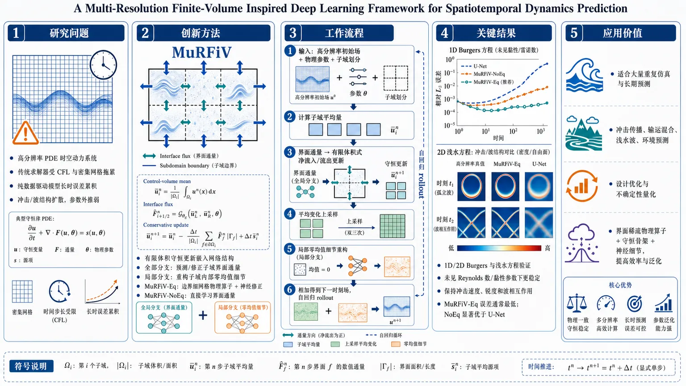
研究问题如何为高分辨率 PDE 时空动力系统构建一个既快速又长期稳定的神经代理模型：避免传统数值求解器受 CFL 条件和密集网格计算拖累，同时克服 U-Net 等纯数据驱动模型在长时自回归预测中误差累积、冲击/波结构扩散、未见 Reynolds 数或黏性参数外推能力弱的问题。创新方法MuRFiV 的 Aha 点是把有限体积法的“控制体平均量由边界净通量更新”直接做成网络结构，而不是只在损失函数里加物理残差。模型将高分辨率场拆成两层：全局模型在子域界面上预测或修正守恒通量，更新每个子域平均量；局部共享模型只重构子域内部零均值细节，保证局部纹理不会破坏全局守恒。MuRFiV-Eq 只在子域边界使用细网格数值算子并由神经网络修正通量积分误差，兼顾高质量物理通量和低计算成本；MuRFiV-NoEq 则直接从数据学习界面通量。工作流程输入高分辨率初始状态、物理参数和规则子域划分；先把全域网格切成线段/矩形/长方体子域，计算每个子域平均量；全局分支在子域界面上获取细网格通量，或直接学习界面通量，并用有限体积式边界净流入/流出更新子域平均变化；再将平均变化上采样回原始网格；局部分支读取当前子域及邻域状态，预测子域内部零均值波动；最后把上采样平均量变化与局部细节相加，得到下一时刻高分辨率场，并将该预测作为下一步输入持续自回归 rollout。关键结果在 1D Burgers、2D Burgers 和浅水方程上，MuRFiV 在未见物理参数和未见初始条件下保持更稳定的长期预测。1D Burgers 中用 48 条训练轨迹、1024 网格、129 个时间快照训练，在未见 Reynolds 数上能捕捉冲击形成与传播，而 U-Net 误差快速累积并出现物理不一致；2D Burgers 中在 1024×1024 网格上，MuRFiV 保持冲击速度、锐度和相互作用前沿，U-Net 出现相位误差和过度扩散；浅水方程中用 80 条训练轨迹、256×256 网格训练，MuRFiV 在未见黏性参数下保持波速、振幅和相互作用模式，U-Net 出现非物理波阻尼。整体上 MuRFiV-Eq 通常误差最低，MuRFiV-NoEq 也显著优于 U-Net。应用价值该框架适合需要大量重复仿真和长期预测的守恒型物理系统，如冲击传播、输运混合、浅水波、环境预测、设计优化和不确定性量化。它用“界面稀疏物理算子 + 子域平均守恒骨架 + 局部神经细节重构”降低高分辨率求解成本，同时提升长时稳定性和参数外推能力，为可泛化、物理一致的 PDE 神经代理建模提供结构化方案。第一部分：核心概览 (Overview)
MuRFiV 提出一种多分辨率、有限体积启发式神经代理框架，将子域平均量的守恒型通量更新与局部零均值细节重构分离。其核心地位在于把传统有限体积法的全局守恒归纳偏置嵌入深度学习架构，而非仅在损失函数中加入物理残差；在 Burgers 方程、浅水方程等 PDE 系统中表现出优于 U-Net 的长期自回归稳定性与参数外推能力。
---
第二部分：结构化快速回顾
《A Multi-Resolution Finite-Volume Inspired Deep Learning Framework for Spatiotemporal Dynamics Prediction》（None，）
背景
复杂时空动力系统常由 PDE 描述，传统数值方法受 CFL 条件、网格分辨率、多尺度耦合与重复仿真成本限制。纯数据驱动神经网络虽能快速推理，但在长时自回归 rollout 中容易误差累积，并对未见物理参数泛化不足。
方法
MuRFiV 将计算域分解为多个子域，采用两级模型：global model 预测子域平均量变化，借鉴有限体积法通过界面通量更新守恒量；local model 共享于所有子域，用于重构子域内部局部波动，并强制满足零均值约束。MuRFiV-Eq 使用嵌入式数值算子提供界面通量并由神经网络修正；MuRFiV-NoEq 则直接学习界面通量。
结果
在 1D Burgers、2D Burgers、浅水方程任务中，MuRFiV 在未见 Reynolds 数或黏性参数下保持稳定长期预测。1D Burgers 使用 48 条训练轨迹、1024 网格、129 个时间快照；2D Burgers 使用 1024×1024 网格；浅水方程使用 80 条训练轨迹、256×256 网格。MuRFiV-Eq 通常优于 MuRFiV-NoEq，二者均显著优于 U-Net。
讨论
优势来自两类归纳偏置：第一，有限体积式通量更新保证子域平均量演化与守恒结构一致；第二，多分辨率分解避免在全域高分辨率上密集调用数值算子，同时保留界面处高质量物理信息。
局限
可见正文未给出完整误差数值表、显著性检验、训练硬件成本、推理时间、参数量明细，也未完整呈现 Navier–Stokes 实验结果。局部模型对规则子域分解依赖较强，复杂几何、非结构网格、强源项或非守恒主导系统中的表现仍需验证。
结论
MuRFiV 展示了将有限体积守恒机制、界面稀疏物理算子与局部神经重构结合的有效性，为长期稳定、参数可泛化的 PDE 神经代理建模提供了一条结构化路径。
---
第三部分：逐章节冷凝解析 (Section-by-Section Condensing)
Abstract
- Problem pressure from numerical solvers and neural surrogates
复杂物理过程的时空预测面临双重困难：高精度数值解算器计算昂贵，纯数据驱动神经网络训练成本高、误差长期累积、对未见参数泛化弱。摘要明确指出：*"Predicting complex spatiotemporal dynamics in physical processes often demands computationally expensive numerical methods or data-driven neural networks that suffer from high training costs, error accumulation, and limited generalizability to unseen parameters."*
- Physics-informed deep learning as the conceptual route
解决思路不是单纯增大神经网络，而是引入物理先验，即 physics-informed deep learning (PiDL)。核心表述为：*"An effective approach to address these challenges is leveraging physics priors in training neural networks, known as physics-informed deep learning (PiDL)."*
- MuRFiV combines global conservation and local expressiveness
MuRFiV 的中心设计是将有限体积法的全局守恒性与深度学习的局部表达能力结合。摘要给出架构定位：*"designed to capitalize on the conservative property of finite volume on the global scale and the expressive power of deep learning on the local scale."*
- Benchmark coverage across multiple PDE systems
实验覆盖多类 PDE 系统，包括 Burgers’ equation、shallow water equations 和 incompressible Navier-Stokes equations。摘要证据为：*"including Burgers’ equation, shallow water equations, and incompressible Navier-Stokes equations."* 可用正文仅完整提供 Burgers 与浅水方程实验片段，Navier–Stokes 细节未在给定内容中完整出现。
- Long-term accuracy and stability claim
MuRFiV 的关键性能指标是长期预测精度和极长自回归 rollout 稳定性。摘要给出结论：*"MuRFiV achieves strong long-term prediction accuracy and remains stable over very long autoregressive rollouts, significantly outperforming data-driven neural network baselines."*
---
1 Introduction
- Spatiotemporal dynamics as a central scientific target
研究对象涵盖冲击形成、输运混合、湍流、大尺度环境预测等典型科学工程问题。原文直接界定应用范围：*"Spatiotemporal dynamics are central to many problems in science and engineering, including shock formation, transport and mixing, turbulence, and large-scale environmental prediction."*
- PDE initial-boundary value formulation
许多系统自然表述为 PDE 的初边值问题，这使得代理模型必须面对初值、边界条件和动力学方程三者耦合。原文为：*"Many of these systems are naturally posed as initial-boundary value problems for partial differential equations (PDEs)."*
- Classical numerical methods remain expensive
传统数值方法虽然可靠，但长期高分辨率求解代价高，主要受 CFL stability restriction、多尺度解析需求和重复仿真影响。证据为：*"Stability restrictions such as the Courant–Friedrichs–Lewy condition, the need to resolve disparate scales, and repeated simulations for design, control, or uncertainty quantification can together lead to large wall-clock costs even on modern hardware."*
- Classical discretization methods trade accuracy for cost
有限差分、有限体积、有限元和谱方法具有成熟精度与稳定性，但常需稠密网格和小时间步。原文强调：*"Classical finite-difference, finite-volume, finite-element, and spectral methods offer well-established accuracy and stability properties, but they often require dense meshes and small time steps to control truncation error over long horizons."*
- Data-driven surrogates amortize repeated solves
深度学习代理模型的基本经济性来自“训练一次、多次快速推理”。原文表述：*"Deep-learning-based surrogate models seek to amortize this cost by replacing repeated numerical solves with a training stage followed by fast inference."*
- Existing neural surrogates cover CNN, GNN, and neural operators
已有数据驱动模型包括规则网格上的 CNN、非规则网格上的 GNN simulator、跨离散化函数空间映射的 neural operator。原文列举：*"including convolutional neural network (CNN) models for Cartesian grids [1], graph neural network (GNN) simulators for irregular meshes [2, 3], and neural operators for learning mappings between function spaces across discretizations [4, 5]."*
- Pure data-driven models fail under distribution shift and rollout
纯数据驱动代理的关键弱点是黑箱性、对大量标注轨迹依赖、训练分布外泛化弱。特别在自回归 rollout 中，一步误差会累积为不稳定或物理不一致预测。原文为：*"purely data-driven surrogates are often black-box models that rely on large amounts of labeled trajectory data and can generalize poorly outside the training distribution"*；并进一步指出：*"small one-step errors can compound into unstable or physically inconsistent long-term predictions."*
- PINNs and constrained surrogates improve consistency but not enough
PINNs 和物理约束代理通过惩罚控制方程、守恒律、初边值条件的违反来减少标注数据依赖；但存在多目标损失权衡、归一化和权重敏感、刚性或强非线性残差优化困难等问题。证据包括：*"reduce the dependence on labeled data by penalizing violations of governing equations, conservation laws, initial conditions, and boundary conditions"*；以及：*"Multi-objective loss balancing can be sensitive to normalization and weighting, residuals from stiff or strongly nonlinear operators can be difficult to optimize."*
- Residual satisfaction does not guarantee rollout stability
一个重要判断是：训练时满足 PDE 残差不等于长期自回归稳定。原文清晰指出：*"satisfying residual constraints during training does not by itself guarantee stable long-term autoregressive prediction."*
- Differentiable solver hybrids offer stronger inductive bias
新近混合 PiDL 方法把数值算子嵌入神经网络，端到端训练。例子包括学习 PDE 离散格式、替换 Navier–Stokes 求解器局部模块、流固耦合混合神经建模。原文为：*"Recent advances in differentiable solvers have enabled another class of hybrid PiDL methods that couple neural networks with numerical operators and train the combined system end to end."*
- Remaining gap: weak alignment with conservative dynamics
许多混合方法中的可训练部分仍是通用神经架构，其内部表征与底层守恒结构弱对齐。原文指出：*"the trainable component is still a generic neural architecture whose internal representation is only weakly aligned with the conservative structure of the underlying dynamics."*
- Remaining gap: coarse operators lose fine scales; dense high-resolution operators are costly
在粗网格上嵌入数值算子会降低成本但损失细节；在高分辨率全域密集调用算子又继承传统求解器的计算负担和稳定性限制。原文为：*"applying embedded numerical operators on coarse meshes can reduce cost but may lose fine-scale information, whereas applying them densely at high resolution can inherit the computational burden and stability limitations of the original solver."*
- MuRFiV’s central decomposition principle
MuRFiV 将子域平均量演化与高分辨率局部结构重构分离。原文给出核心机制：*"The central idea is to separate the evolution of subdomain averages from the reconstruction of high-resolution local structure."*
- Two variants: MuRFiV-Eq and MuRFiV-NoEq
MuRFiV-Eq 使用嵌入式数值算子提供物理通量，再由全局网络修正；MuRFiV-NoEq 直接由全局网络学习界面通量。原文为：*"The framework can be used as MuRFiV-Eq, where an embedded numerical operator provides physics-based flux information corrected by the global network, or as MuRFiV-NoEq, where the global network learns the interface fluxes directly."*
- Contribution 1: finite-volume-inspired stable rollout architecture
贡献之一是基于域分解、通量式全局更新、局部残差重构的稳定 rollout 架构。原文为：*"We design MuRFiV around domain decomposition, flux-based global updates, and local residual reconstruction, embedding conservative structure directly into the prediction architecture."*
- Contribution 2: interface-only flux prediction
MuRFiV-Eq 只在子域界面上以原始细网格评估数值算子，避免全域密集计算，同时保留控制全局演化的高质量通量信息。原文为：*"the embedded numerical operator is evaluated on the original fine mesh only along subdomain interfaces"*；以及：*"preserves high-quality physics-based flux information at the locations that control global evolution, while keeping the cost low."*
- Contribution 3: robustness across canonical PDE systems
贡献三是跨 1D/2D Burgers、浅水方程、不可压 Navier–Stokes 的长期预测稳健性与参数泛化。原文为：*"Across one- and two-dimensional Burgers’ equations, shallow water equations, and incompressible Navier–Stokes equations, MuRFiV achieves accurate long-term autoregressive prediction."*
---
2 Methodology
2.1 Problem Formulation
- General conservative PDE target
建模对象是具有守恒结构的一般 PDE：状态变量 u(x,t) 的时间导数由散度形式通量 𝓕 和非散度源项 𝓠 共同构成。原文公式前说明为：*"We consider modeling spatiotemporal dynamics governed by general conservative PDEs of the following form"*，并给出
[
fracpartialboldsymbolupartial t
=
nablaḑotboldsymbolF(boldsymbolu,nablaboldsymbolu,nabla²boldsymbolu,ḑots,boldsymbolłambda)
+
boldsymbolQ(boldsymbolu)
]
其中参数 λ ∈ ℝᵐ。
- Initial and boundary conditions are explicitly included
形式化问题包含初值约束 𝓘[...] = 0 与边界约束 𝓑[...] = 0，定义域为 Ω × [0,T]。原文给出：*"𝓘[...] = 0, x ∈ Ω, t = 0"* 和 *"𝓑[...] = 0, x,t ∈ ∂Ω × [0,T]"*。
- Flux operator and source term distinction
𝓕 是由物理参数 λ 参数化的非线性通量算子；𝓠 表示无法写成散度形式的项，如体力、体源项、体汇项。原文为：*"𝓕 is a non-linear operator parameterized by λ, while the 𝓠 represents any other terms that cannot be formulated as divergence (e.g. body force, volumetric source/sink term)."*
- Numerical solver as composite time-advance operator
传统数值解算器被抽象为时间推进算子 𝓢：
[
boldsymboluₜ_ᵢ=boldsymbolS(boldsymboluₜᵢ₋₁,boldsymbolłambda)
]
原文说明：*"Traditionally, numerical methods are leveraged to resolve these spatiotemporal dynamics, where the numerical operator 𝓢 can be formulated as..."*
- Learning step ΔT can be much larger than solver step Δt
数据保存间隔 ΔT = tᵢ − tᵢ₋₁ 可远大于实际数值稳定步长 Δt，即 Δt ≪ ΔT；因此 𝓢 可代表多个微小数值时间步的复合。原文为：*"the time interval ... ΔT ... can be much longer than the actual numerical step size (Δt, Δt ≪ ΔT) used by the solver due to numerical stability consideration."*
- Training objective is autoregressive validation loss minimization
神经代理 𝓝 通过自回归 rollout 在验证集上最小化损失，参数为 θ，损失函数采用 MSE。原文为：*"In this work, Mean Squared Error (MSE) was used as the loss function."*；预测方式为：*"the spatiotemporal trajectory can be predicted by rolling out the surrogate model auto-regressively."*
2.2 Design Overview of MuRFiV
- Three-component architecture
MuRFiV 包含 local neural network 𝓝L、global neural network 𝓝G，以及可选的数值算子组件。图 1 说明为：*"MuRFiV consists of three components: local neural network ... global neural network ... and an optional numerical operators component approximating flux."*
- Global-local role separation
global network 捕捉大尺度动力学，local network 学习小尺度局部特征。原文为：*"the global network is designed to capture large-scale dynamics while the local network focuses on learning small-scale features."*
- Domain decomposition enables multiscale learning
计算域被分解为相连且不相交的子域，以实现多尺度学习。原文为：*"Domain decomposition is leveraged to achieve multi-scale learning effectively and the entire computational domain is decomposed into connected and disjoint subdomains."*
- Fine-mesh interface flux avoids coarse-operator accuracy loss
与在降采样网格上调用数值算子的混合神经求解器不同，MuRFiV 在原始高分辨率结果上计算子域界面通量，从而计算每个子域平均变化。原文指出：*"numerical operators work on down-sampled resolution for lower computational cost at the expense of degraded accuracy or missing details"*，而 MuRFiV 的机制是：*"evaluating the fluxes over subdomain interfaces based on the results at the original high resolution."*
- Sparsity of interfaces reduces cost
高精度之所以成本较低，是因为只在子域界面上计算，具有空间稀疏性。原文为：*"high accuracy is preserved but also it is achieved at a relatively low computational cost thanks to the spatial sparsity of the subdomain interfaces."*
2.3 Domain Decomposition
- General D-dimensional domain definition
计算域定义为欧氏空间中的 D 维区域 Ω = [l_d, h_d]^D，其中 l_d 和 h_d 分别为第 d 维低、高边界坐标。原文为：*"For a D-dimensional computational domain defined in a Euclidean space Ω=[l_d,h_d]^D."*
- Number of subdomains
域被分为
[
Nₛ₌prodd₌₁D n_d
]
个相连且互不重叠的子域 Ωⱼ。原文为：*"We decompose the computational domain into Ns = ∏ ... connected and disjoint subdomains Ωj."*
- Uniform orthotope decomposition
实现上使用均匀分解；每个子域都是正交多面体：1D 为线段，2D 为矩形，3D 为长方体。原文为：*"we use uniform decomposition for ease of implementation, where every subdomain is an orthotope (e.g., line segment in 1D, rectangle in 2D, cuboid in 3D, …) and is identical to the others."*
2.4 Global Model
- Finite-volume update from Gauss’s law
对守恒系统，有限体积法通过 Gauss’s Law 将体积分平均量变化转化为边界通量积分和体源项积分。原文为：*"For conservative systems, the Finite Volume Method calculates the integral average of the state variable by applying Gauss’s Law to the governing equation."*
- Subdomain average definition
子域平均量定义为
[
barboldsymbolubₒₗdₛyₘbₒₗⱼ
=
frac1Vbₒₗdₛyₘbₒₗⱼ
iiint_Ømegabₒₗdₛyₘbₒₗⱼboldsymbolu,dV
]
原文解释：*"where ūj is the integration average over the subdomain Ωj."*
- Training data as fixed-interval snapshots
训练集中的状态变量以固定学习时间间隔 ΔT 保存。子域平均变化为
[
Δ baruₜ_ᵢ,ⱼ=baruₜ_ᵢ,ⱼ-baruₜᵢ₋₁,j
]
原文为：*"all state variables are stored at discretized time steps with a fixed time interval ΔT (i.e. learning step size)."*
- Numerical solution treated as ground truth
数值解算器误差 ε 被视为趋近 0，因此训练目标将数值结果作为真值。原文为：*"we assume the solution obtained from numerical solvers is the ground truth (ε → 0)."*
- Global model predicts subdomain average change
MuRFiV 的全局模型 𝓜G 接收前一时刻高分辨率状态和物理参数，输出子域平均变化。原文为：*"MuRFiV uses a global model 𝓜G to predict the average change."*
2.4.1 Modeling Flux between Subdomain
- Embedded operator estimates average change using forward Euler
可选嵌入式数值算子 𝓢e 使用前一学习步的状态，通过 forward Euler scheme 近似子域平均变化。原文为：*"the optional embedded numerical operator (𝓢e) approximates the change of the integral average ... using forward Euler scheme based on the previous learning step."*
- Only large-time-step Euler error is introduced
Eq. 8 的误差只来自学习步长 ΔT 相对于真实数值求解器内部步长过大，而空间离散等价于原求解器在细网格上的高质量通量计算。原文为：*"The only error introduced in Eq. 8 is due to the large time step (ΔT) used in the Euler discretization."*
- Spatial discretization equivalence through Gauss’s law
空间离散与原始解算器 𝓢 在数学上等价，因为其基于细网格使用 Gauss 定律。原文为：*"the spatial discretization used in Eq. 8b is mathematically equivalent to 𝓢 attributed to applying Gauss’s Law on the fine mesh."*
- Boundary-only application reduces cost
嵌入式算子只作用在每个子域边界。原文为：*"such operators 𝓢e are only applied to the boundaries of each subdomain."* 由此得到：*"achieve high accuracy at a significantly lower computational cost."*
2.4.2 Global Neural Network
- MuRFiV-Eq corrects numerical flux integration error
在 MuRFiV-Eq 中，global network 𝓝G 不直接预测全部动力学，而是修正由大时间步 ΔT 引入的通量时间积分误差。原文为：*"a global neural network 𝓝G is designed to correct the error introduced by Eq. 8a due to large time step size ΔT."*
- Correction is defined on all subdomain interfaces
神经网络输出 Fᶰ_c(x,tᵢ)，表示时间区间 [tᵢ₋₁,tᵢ] 上通量积分的修正，定义在所有子域界面 ∂Ωᵇ。原文为：*"F Nc(x,ti) represents the correction of the integration of flux over time [ti−1,ti] predicted by the global neural network, while ∂Ωb denotes the interfaces of all subdomains."*
- MuRFiV-Eq combines physics flux and neural correction
子域平均变化由嵌入式算子项
[
fracΔ TVⱼSₑ₍...)
]
与界面神经修正通量求和组成。原文公式 Eq. 10 给出：*"= ΔT/Vj 𝓢e(...) + Σx∈∂Ωj FNc(x,ti)·n."*
- MuRFiV-NoEq directly predicts fluxes
不使用方程时，MuRFiV-NoEq 的 global network 直接预测界面通量 Fᴺ，再通过子域边界法向求和得到平均量变化。原文为：*"When no equations are leveraged (MuRFiV-NoEq), the Global Network 𝓝G will directly predict the fluxes instead of a correction of the fluxes."*
2.5 Local Model
- Local model predicts intra-subdomain variance
local model 𝓜L 用于预测每个子域内状态变量相对平均值的波动 u′。原文为：*"The local model 𝓜L is designed to predict the variance of the state variable within each subdomain."*
- Local model is shared across subdomains
同一个 local network 在所有子域共享，以提高训练数据和参数利用效率。原文为：*"the local model is shared among all the subdomains for efficient use of training data as well as trainable parameters."*
- Local fluctuation has zero-mean property
局部波动定义为
[
u'(x,tᵢ₎₌ᵤ₍ₓ,tᵢ₎₋baruₜ_ᵢ,ⱼ
]
因而对子域积分为零。原文为：*"Based on the definition above, the variable u′ has a “zero-mean” property for each subdomain."*
- Zero-mean normalization improves long-term robustness
在 forward pass 中对 local model 输出执行零均值归一化，可显著提升长期 rollout 稳健性。原文为：*"The local model takes advantage of the “zero-mean” property as an extra normalization during the model forward pass ... which significantly improves the robustness of MuRFiV in the long-term rollout."*
- Predicted average change is upsampled and injected into local prediction
local network 输出局部细节，同时加入由 𝓘n 上采样的全局平均变化 Δū。原文为：*"𝓘n is a deterministic interpolation function (e.g. nearest, linear, cubic), which up-samples the predicted average change over subdomain Ωj to the mesh resolution."*
- Discrete grid implementation reduces integral mean to algebraic average
在离散网格上，Eq. 14b 中的积分均值退化为代数平均。原文为：*"When the local neural network is predicting u′ at a discretized mesh grid, the integral mean in Eq. 14b will degrade to algebraic average."*
- Adjacent subdomains provide local context
local model 的输入不仅包含当前子域，也包含相邻子域，以捕捉局部方差受邻域状态影响的事实。原文为：*"both the historical information ... and its adjacent subdomain information ... will pose influence on the local variance."*
- Neighbor definition differs in 1D and 2D
1D 中相邻子域为左右邻居 Ωj₁−1, Ωj₁+1；2D 中使用 3×3 邻域，包括中心子域与八邻域。原文为：*"In one-dimensional cases, ΩAj is defined as Ωj1−1, Ωj1+1, while for two-dimensional cases ... given by"* 后接 3×3 子域矩阵。
2.6 Long-term Prediction of Spatiotemporal Dynamics at High Resolution
- High-resolution autoregressive rollout
MuRFiV 将全局平均量预测与局部波动重构相加，得到原始高分辨率预测；随后将自身预测作为下一步输入。原文为：*"MuRFiV predicts the spatiotemporal dynamics at the original high resolution in an autoregressive manner."*
- First step uses true initial condition, later steps use predicted states
第一步由真实初值 uₜ₀ 输入；当 i ≥ 2 时，输入为前一步预测 ũₜᵢ₋₁。原文公式 Eq. 15 给出：*"ũ(x,t1)=𝓜G(ut0,j,...)+𝓜L(ut0,j,...)"*，以及：*"ũ(x,ti)=𝓜G(ũti−1,j,...)+𝓜L(ũti−1,j,...), i ≥ 2."*
---
3 Results
- Evaluation against slightly larger U-Net baselines
实验比较 MuRFiV 两个变体与模型规模略大的 U-Net 基线。原文为：*"comparing them against U-Net baselines with slightly larger model size."*
- Same training procedure for fairness
所有模型采用同样训练流程：先进行 one-step teacher-forcing，再进行 autoregressive rollout training。原文为：*"all models undergo the same training procedure, consisting of one-step teacher-forcing followed by autoregressive rollout training."*
- Checkpoint selection by validation loss
模型评估采用验证损失最低的 checkpoint。原文为：*"Models are evaluated using the checkpoint with the lowest validation loss."*
3.1 One-dimensional Burgers’ Equation
- PDE and physical parameter definition
任务为 1D 黏性 Burgers 方程，周期边界，定义域 x ∈ [0,2π], t ∈ [0,∞)：
[
fracpartial upartial t=-ufracpartial upartial x+νfracpartial²upartial x²
]
Reynolds 数为 Re = 1/ν。原文为：*"We begin by evaluating MuRFiV on the one-dimensional viscous Burgers’ equation with periodic boundary conditions"*；以及：*"The Reynolds number is defined as Re = 1/ν."*
- Training dataset size and parameter coverage
训练集包含 48 条轨迹，覆盖四个 Reynolds 数 20, 80, 140, 200。原文为：*"The training dataset comprises 48 trajectories across four Reynolds numbers 20,80,140,200."*
- Resolution and temporal sampling
每条轨迹存储在 1024 cells 的均匀网格上，包含 129 个时间快照，时间间隔 ΔT = 0.01 seconds。原文为：*"stored on a uniform mesh with 1024 cells"*；以及：*"contains 129 temporal snapshots with a time interval ΔT = 0.01 seconds."*
- Initial condition distribution
初始条件随机采样自 16-dimensional function space。原文为：*"Each trajectory starts from an initial condition randomly sampled from a 16-dimensional function space."*
- Training schedule
三个模型均训练 100 epochs 的一步 teacher forcing，随后 50 epochs 的 eight-step rollout training。原文为：*"100 epochs of one-step teacher-forcing training followed by 50 epochs of eight-setp rollout training."*
- MuRFiV subdomain layout
1D 情况下域被划分为 32 个子域，每个子域 32 cells，总网格数与 1024 对应。原文为：*"we divide the domain into 32 subdomains of the same size, each with 32 cells."*
- Test set probes parameter and IC generalization
测试集包含 36 条轨迹，Reynolds 数为未见值 30, 50, 70，初始条件也未见但来自同一分布。原文为：*"evaluating its performance on 36 testing trajectories with unseen Reynolds numbers (Re ∈ 30,50,70) and unseen initial conditions."*
- MuRFiV captures shocks under extrapolation
在 Re = 50 和 Re = 170 的代表性测试中，MuRFiV 两个变体都能捕捉冲击形成和传播。原文图注给出代表参数：*"with Reynolds number Re = 50, and Re = 170, respectively"*；性能描述为：*"accurately capturing shock formation and propagation despite the shift in physical parameters."*
- U-Net fails physically consistent extrapolation
U-Net 在外推 regime 中表现显著退化，难以产生物理一致预测。原文为：*"the U-Net baseline exhibits significant performance degradation, failing to produce physically consistent predictions in the extrapolation regime."*
- Error accumulation differs between U-Net and MuRFiV
U-Net 在初始 rollout 步误差低于 MuRFiV，但随后迅速累积误差；MuRFiV 长期保持稳定。原文为：*"Although U-Net exhibits a lower error ε than MuRFiV during the initial rollout steps, it quickly accumulates error as autoregressive prediction proceeds."*；以及：*"both MuRFiV variants maintain stable and accurate predictions over long-term integration."*
- MuRFiV-Eq outperforms MuRFiV-NoEq
嵌入物理算子的 MuRFiV-Eq 在未见 Reynolds 数上误差低于 NoEq。原文为：*"MuRFiV-Eq demonstrates lower prediction error than MuRFiV-NoEq across the unseen Reynolds numbers."*
3.2 Two-dimensional Burgers’ Equation
- PDE definition and domain
2D 标量 Burgers 方程设定周期边界，定义域 (x,y) ∈ [0,2π]²，时间 t ∈ [0,∞)：
[
fracpartial upartial t
=
-(u uₓ₊ᵤ u_y)
+
ν(uₓₓ+uyy)
]
原文为：*"We extend our evaluation to the two-dimensional scalar Burgers’ equation with periodic boundary conditions."*
- Training Reynolds numbers and resolution
训练覆盖 Re = 1/ν ∈ 20, 40, 60, 80，网格为 1024 × 1024。原文为：*"varying Reynolds numbers (Re = 1/ν ∈ 20,40,60,80), stored on uniform mesh of size 1024 × 1024."*
- Number and dimensionality of training ICs
每个 Reynolds 数有 36 个不同初始条件，初始条件采样自 72-dimensional distributions。原文为：*"For each Reynolds number, the training trajectories starts from 36 different ICs randomly sampled from a 72-dimensional distributions."*
- Temporal sampling
每条轨迹包含 129 temporal snapshots，时间间隔 ΔT = 0.01 seconds。原文为：*"contains 129 temporal snapshots with a time interval ΔT = 0.01 seconds."*
- Training schedule and subdomains
模型训练为 100 epochs one-step teacher-forcing + 50 epochs 8-step rollout training；MuRFiV 将网格划分为 32 × 32 sub-domains，每个子域 32 × 32 cells。原文为：*"100 epochs of one-step teacher-forcing training followed by 50 epochs of 8-step rollout training"*；以及：*"32 × 32 sub-domains, each consists with 32 × 32 cells."*
- Test parameters
测试使用未见 Reynolds 数 30, 50, 70 和随机未见初始条件。原文为：*"on unseen Reynolds numbers (Re ∈ 30,50,70) and randomly sampled, unseen initial conditions."*
- Parameter-shift robustness
MuRFiV 在 Re = 30 和 Re = 70 的代表性案例中能正确预测冲击速度、冲击锐度和相互作用前沿形成的复杂干涉模式。原文为：*"MuRFiV correctly predicts the shock speed and sharpness, while preserving the complex interference patterns formed by interacting fronts."*
- U-Net phase and diffusion errors
U-Net 缺乏显式物理约束，表现为明显相位误差和过度扩散的冲击结构。原文为：*"The U-Net baseline, lacking explicit physical constraints, struggles to generalize and exhibits noticeable phase errors together with overly diffused shock structures."*
- MuRFiV-Eq lowest error over most rollout
误差曲线显示两种 MuRFiV 变体跨 Reynolds 数表现更一致，MuRFiV-Eq 在大部分 rollout 中误差最低。原文为：*"both MuRFiV variants deliver much more consistent performance across Reynolds numbers"*；以及：*"MuRFiV-Eq achieves the lowest error throughout most of the rollout."*
- Finite-volume and multiresolution hierarchy support operator learning
性能被归因于嵌入式有限体积结构和多分辨率层级，使模型学习底层物理算子，而非记忆训练分布。原文为：*"the embedded finite-volume structure and multi-resolution hierarchy enable MuRFiV to learn the underlying physical operators rather than simply overfitting to the training data distribution."*
3.3 Shallow Water Equation
- Physical system
浅水方程描述受重力和黏性影响的薄层流体流动。原文为：*"the two-dimensional shallow water equations, which govern the flow of a thin layer of fluid under the influence of gravity and viscosity."*
- State variables and parameters
状态变量包括流体柱高度 η 和速度分量 (u,v)；重力加速度 g = 10；黏性为 ν。原文为：*"η denotes the fluid column height, and (u,v) are the velocity components. g is the gravitational acceleration (set to 10), and ν represents the viscosity."*
- Training set size and viscosity regimes
训练集包含 80 条不同轨迹，由随机状态初始化，覆盖 5 个黏性参数：
[
1/ν in 1,2,4,8,16
]
原文为：*"The training set comprises 80 different trajectories initialized from random states, with 5 different viscosities (1/ν ∈ 1,2,4,8,16)."*
- Resolution and subdomain layout
训练数据保存于 256 × 256 cells 的均匀网格；MuRFiV 将网格等分为 16 × 16 subdomains。原文为：*"The training data is saved on uniform mesh with 256 × 256 cells, and we divide the mesh equally into 16 × 16 subdomins in MuRFiV."*
- Test regime
泛化测试使用 4 个未见黏性参数
[
1/ν in 1.5,3,6,12
]
以及 64 个随机初始条件。原文为：*"evaluate the generalization capability of MuRFiV on 4 unseen viscosities (1/ν ∈ 1.5,3,6,12) adn 64 randomly sampled initial conditions."*
- Representative visualization cases
图 4 展示最低和最高测试黏性代表案例，图注列出 1/ν = 1.5 与 1/ν = 12。原文为：*"with viscosity 1/ν = 1.5, and 1/ν = 12, respectively."*
- Wave propagation and interaction consistency
MuRFiV 在新物理参数下保持波传播速度、振幅和相互作用模式的物理一致性。原文为：*"maintaining physical consistency in wave propagation speeds, amplitudes, and interaction patterns."*
- U-Net damping and error growth
U-Net 在分布外浅水方程案例中出现显著误差增长和非物理波阻尼。原文为：*"U-Net exhibits significant error growth and unphysical wave damping when applied to out-of-distribution cases."*
- Visible text truncation limits quantitative extraction
给定 3.3 内容在误差分析句 *"while panels (d-f"* 后中断；可提取数值限于训练轨迹数、网格分辨率、参数集合、测试 IC 数等，缺少完整图 4(c–f) 文字结论和所有数值误差表。
---
第四部分：深度理解与语言支持 (Understanding & Nuance)
1. 术语解析
- Autoregressive rollout
指模型把上一步自己的预测作为下一步输入，逐步生成长期轨迹。微妙之处在于：一步预测误差很小并不保证长期稳定，因为误差会不断反馈进输入分布，形成累积漂移。对应语境：*"small one-step errors can compound into unstable or physically inconsistent long-term predictions."*
- Finite-volume-inspired inductive bias
“有限体积启发式归纳偏置”不是完整数值求解器，而是把有限体积法中“通过界面通量更新控制体平均量”的结构编码进神经网络。其作用是限制模型优先学习守恒型演化，而非任意黑箱映射。
- Subdomain averages
指每个子域内部状态变量的体积分平均值，是全局模型负责预测的低分辨率守恒量。它不同于普通降采样特征，因为它具有明确物理意义：控制体平均守恒变量。
- Interface-only flux prediction
指只在子域边界计算或学习通量，而不在整个高分辨率域上密集调用数值算子。微妙点在于：有限体积更新控制体平均量只需要边界通量，内部点不直接参与平均量变化计算。
- Zero-mean constraint
local model 输出的是相对平均值的局部波动，因此每个子域内部积分必须为零。该约束防止局部重构改变 global model 已经预测的子域平均量，从而维护全局-局部一致性。
2. 疑难查证
- 为什么只算子域界面通量仍能更新子域平均量？
对守恒 PDE，控制体内部总量变化等于穿过边界的净通量加源项。有限体积法的本质是：不需要知道控制体内每个点的时间导数，只需知道边界上流入流出的净量。MuRFiV 正是利用这一点，把昂贵的高分辨率数值算子限制在界面上。若子域边界通量准确，子域平均量更新就能保持物理一致。
- 为什么 global-local 分离能提升长期稳定性？
长期不稳定常来自两类误差混杂：平均量漂移和局部细节失真。MuRFiV 将平均量交给有限体积式 global model，用通量结构约束；将局部形状交给 shared local model，并用零均值约束保证局部修正不改变平均量。这相当于把“守恒骨架”和“高频纹理”分开学习，减少了黑箱网络同时处理全局守恒与局部细节时的自由度。
- MuRFiV-Eq 为什么通常优于 MuRFiV-NoEq？
MuRFiV-NoEq 需要从数据中完整学习界面通量；MuRFiV-Eq 已经由嵌入式数值算子提供物理合理的通量估计，神经网络只需学习大时间步积分误差或模型误差修正。后者学习目标更小、更结构化，因此在未见 Reynolds 数或黏性参数上更容易泛化。
- 为什么在粗网格上调用数值算子不等价于 MuRFiV？
粗网格算子会丢失细尺度梯度、冲击锐度和界面局部结构；MuRFiV 虽然只在界面处计算，但仍使用原始高分辨率网格上的状态，因此界面通量质量接近高分辨率求解器，同时避免全域密集计算。
---
第五部分：创新评估与关联 (Synthesis & Novelty)
1. 创新性判断
- 从“物理损失约束”转向“架构级守恒机制”
过去几年大量 PiDL 工作依赖 PDE residual、守恒律罚项或边界条件罚项；这些方法改善物理一致性，但训练时残差小不保证长期 rollout 稳定。MuRFiV 的新颖点在于把守恒更新直接写进预测结构：global model 通过子域界面通量更新平均量，local model 只能重构零均值波动。物理约束不再只是损失项，而是网络输出组织方式。
- 解决高分辨率物理算子成本与粗网格精度损失的矛盾
近年 differentiable solver-in-the-loop 方法常面临选择：在粗网格上嵌入算子以降成本，但损失细节；或在全高分辨率上嵌入算子，但代价高。MuRFiV 的 interface-only flux evaluation 是关键折中：只在控制平均量演化的子域界面上用原始细网格算子，避免全域高分辨率计算。
- 多分辨率机制具有明确物理语义
许多 U-Net 或 neural operator 的多尺度结构主要是特征层级，物理意义不明确。MuRFiV 的多分辨率不是普通 encoder-decoder，而是明确区分子域平均守恒量与子域内部零均值波动，因此多尺度结构直接对应有限体积控制体思想。
- 参数高效的共享局部重构
local network 在所有子域共享，使模型能从不同空间位置重复利用训练样本，同时减少参数数量。相比对全域高分辨率场直接建模，这种 patch/subdomain 共享方式更接近局部模板学习，并与 PDE 局部性相吻合。
- 两种知识条件下均可使用
MuRFiV-Eq 适用于已知方程或可用数值通量的情况；MuRFiV-NoEq 适用于缺少显式方程但有数据的情况。该双模式设计提高了框架适用范围：有方程时利用物理算子，无方程时仍保留有限体积式通量结构。
- 解决的前人未充分解决问题
核心解决对象是长时自回归稳定性、守恒一致性、高分辨率成本、参数外推泛化之间的耦合难题。已有 CNN/GNN/neural operator 可预测短期或插值分布内动力学，但在未见 Reynolds 数、长期 rollout、冲击传播与波相互作用中容易失稳或扩散。MuRFiV 通过“界面通量 + 子域平均 + 零均值局部重构”同时约束全局守恒和局部表达，在给定实验中显示出更强长期稳定性。
-
20
📊 含图深析
📄 摘要：为实时解析近壁物体轨迹，构建一自由度升沉球体靠近竖直壁的可解释参数化代理模型。高保真 CFD 生成不同壁距 WD 与下落高度 DH 下的升沉衰减响应，随后用 SINDy 识别非线性动力学，并结合神经网络形成随参数变化的降阶水动力模型。
💡 亮点：近壁升沉球体的 CFD 数据被压缩为 SINDy 与神经网络结合的参数化降阶模型。该框架兼顾可解释动力学方程和实时轨迹预测需求。
📖 展开分析 + 配图
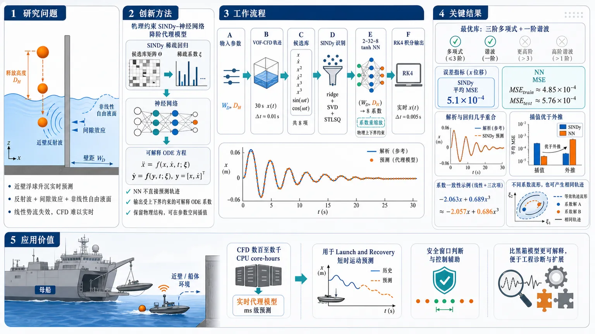
研究问题如何在近垂直壁环境中，实时预测浮球由不同下落高度 DH 释放后的升沉衰减运动；核心矛盾是近壁反射波、间隙效应、大幅自由液面非线性使线性势流模型失效，而高保真 CFD 虽准确却无法用于 LAR 发射回收场景的短时实时预报。创新方法提出“物理约束的 SINDy–神经网络降阶代理模型”：先用 SINDy 从每条 CFD 轨迹中识别三阶多项式与一阶正弦/余弦项组成的可解释非线性 ODE，再让神经网络学习从壁距 WD、下落高度 DH 到 8 个 ODE 系数的连续系数流形；Aha 点是神经网络不直接预测轨迹，而是输出受 SINDy 系数上下界约束的物理可解释水动力振子系数，既保留物理结构，又能在参数空间插值。工作流程输入二维工况参数 WD、DH；用 Ansys Fluent VOF-CFD 生成 30 s 近壁浮球升沉轨迹；对每条轨迹构造候选库 [x、ẋ、x²、ẋ²、x³、ẋ³、sin(ωt)、cos(ωt)]；通过 ridge 回归、SVD 伪逆和 STLSQ 稀疏阈值识别 ODE 系数；用 2–32–8 tanh 神经网络学习 (WD,DH)→系数；将网络输出重缩放到 SINDy 允许范围；用 RK4 积分该非线性 ODE，输出任意工况下的实时升沉时间序列 x(t)。关键结果最优 SINDy 动力学库为“三阶多项式 + 一阶谐波”，平均 MSE = 5.1×10⁻⁴；神经网络代理达到 MSEₜᵣₐᵢₙ≈4.85×10⁻⁴、MSEₜₑₛₜ≈5.76×10⁻⁴，接近 SINDy 可达到的精度上限；插值工况明显优于外推工况；解析静水三次项与回归系数高度一致，如 DH=5 m 时解析 -2.063x+0.689x³ 与回归 -2.057x+0.686x³ 几乎重合；同时发现 NN 学到的系数流形可不同于直接 SINDy 系数，却能产生几乎相同轨迹。应用价值该方法把一次需数百到数千 CPU core-hours 的 CFD 近壁升沉模拟压缩为可实时运行的物理约束降阶代理模型，可用于海军 Launch and Recovery 场景中小型无人艇靠近母船时的短时运动预测、安全窗口判断和控制辅助；相比黑箱深度学习，它输出可解释的静水、阻尼、反射激励相关 ODE 系数，便于工程诊断与后续扩展到更复杂近场多体水动力问题。第一部分：核心概览 (Overview)
该研究提出一种面向近壁浮体升沉衰减的物理约束降阶水动力代理模型：先用 CFD 生成不同壁距 WD 与初始下落高度 DH 下的 30 s 轨迹，再用 SINDy 识别可解释非线性 ODE 系数，最后用神经网络学习从 ((WD,DH)) 到 ODE 系数的连续映射。核心贡献在于将稀疏回归的可解释动力学结构与神经网络的参数空间插值能力结合，并用 SINDy 系数边界限制神经网络输出，使实时预测接近 CFD 精度，适用于海军 Launch and Recovery 场景中的短时运动预报。
---
第二部分：结构化快速回顾
《Reduced-Order Hydrodynamic Modelling of a Sphere Near a Wall Using Sparse Regression and Neural Networks》（None，）
背景：近壁小型无人水面艇回收涉及强反射、间隙波共振、大幅运动和非线性自由液面效应，传统线性势流和条带理论难以捕捉；高保真 CFD 精确但无法实时运行。
方法：以近垂直壁的一自由度升沉球体为简化 LARS 构型；用 Ansys Fluent 2025R1 建立 VOF-CFD 数据集；用 SINDy 从每条 CFD 轨迹中识别三阶多项式与一阶谐波组成的非线性 ODE；用单隐层神经网络学习 ((WD,DH)i̊ghtarrow Ξ) 的系数流形。
结果：最优 SINDy 库为三阶多项式 + 一阶谐波，平均误差 MSE = (5.1×10⁻⁴)；神经网络代理达到 MSE(ₜᵣₐᵢₙapprox4.85×10⁻⁴)、MSE(ₜₑₛₜapprox5.76×10⁻⁴)，接近 SINDy 上限精度。
讨论：插值点预测优于外推点；神经网络学到的系数流形与直接 SINDy 系数不完全重合，但可生成几乎相同轨迹，显示非线性 ODE 表示存在非唯一性。
局限：反射波激励仍用简单 sin/cos 近似，无法完整刻画与运动、辐射场耦合的真实非线性激励；训练需逐步 RK4 积分，CPU 串行计算约 24 h。
结论：稀疏回归可从 CFD 中恢复具有物理含义的低阶非线性水动力振子，神经网络可在参数空间内构造实时、物理约束的降阶代理模型，为 LAR 实时预测提供可行路径。
---
第三部分：逐章节冷凝解析 (Section-by-Section Condensing)
Abstract
- Real-time reduced-order prediction near a wall
研究目标是构建可实时预测的近壁浮球升沉衰减降阶模型，对象是“floating sphere dropped near a vertical wall”。核心任务明确为 *"real-time prediction of a floating sphere dropped near a vertical wall"*，应用场景指向 Launch and Recovery (LAR) 操作。
- A priori constrained neural-network ROM
关键方法创新是给神经网络设定先验边界，限制可学习解空间，而不是让网络直接自由拟合轨迹。原文表述为 *"a novel reduced-order model (ROM) formulation that sets a priori boundaries to restrict the solution space for neural network learning"*。这种设计降低了纯数据驱动模型产生非物理系数的风险。
- Canonical one-degree-of-freedom heave-decay setting
证明场景是一自由度升沉衰减，并非完整六自由度船舶运动。问题被限定为 *"a canonical one-degree-of-freedom heave-decay configuration"*，有利于在可控复杂度下验证非线性水动力代理建模流程。
- CFD-generated parametric trajectories
高保真 CFD 用于生成参数数据集，每条轨迹长度为 30 s，参数覆盖壁距 WD 与下落高度 DH。关键证据为 *"generate a parametric dataset consisting of 30 second motion trajectories spanning a range of wall distances (WD) and initial drop heights (DH)"*。
- SINDy identifies low-order nonlinear ODE coefficients
每条 CFD 轨迹通过 Sparse Identification of Non-linear Dynamics (SINDy) 转化为低阶非线性 ODE 系数。原文为 *"SINDy is applied to each CFD trajectory to identify the coefficients that describe a low-order non-linear ordinary differential equation (ODE) fluid oscillator"*。
- Neural network maps parameters to ODE coefficients
神经网络不直接输出 (x(t))，而是学习 ((WD,DH)i̊ghtarrow) ODE 系数的光滑映射。关键句为 *"learns a smooth mapping from WD and DH to the ODE coefficients"*，从而实现 *"predicting dynamics at arbitrary points in the input space without rerunning expensive CFD calculations"*。
- Real-time surrogate with CFD-level accuracy
代理模型能高精度复现 CFD 升沉衰减并实时运行。原文结论为 *"The surrogate reproduces CFD heave-decay responses with high accuracy while running in real-time"*，使该方法成为面向 LAR 的实用实时代理建模路径。
---
Introduction
- LAR is operationally important and dynamically difficult
小型 USV 从大型母船发射与回收是未来海军行动关键能力，但也是任务中最困难阶段之一。原文强调 *"Launch and recovery of small uncrewed surface vessels (USVs) from larger parent vessels is a key enabler for future naval operations"*，同时指出其 *"remains one of the most challenging phases of the mission"*。
- Close proximity and irregular seas create forecasting demand
回收过程发生在小艇与大船近距离、陡峭不规则海况中，短时实时预测可拓展安全回收海况范围。证据为 *"the USV is manoeuvred in close proximity to a much larger vessel, often in steep and irregular seas"*，并且 *"A short-horizon, real-time forecasting tool... could support safer unmanned recovery across a wider range of sea states"*。
- Linear potential-flow tools are efficient but assumption-limited
Strip theory 与线性势流方法在无黏、无旋、小幅运动假设下成熟且高效。原文为 *"Conventional tools... such as strip theory and linear potential-flow methods, are well established and computationally efficient under the assumptions of inviscid, irrotational flow and small-amplitude motions"*。
- Linear force decomposition becomes inadequate under stronger nonlinearity
线性区域中水动力通常分解为附加质量、辐射阻尼、静水刚度、一阶波浪激励，但随着波陡、运动幅值和几何复杂性增加，精度下降。证据包括 *"hydrodynamic forces are commonly decomposed into linear added mass, radiation damping, hydrostatic stiffness, and first-order wave-excitation components"*，以及 *"higher-order wave interactions, non-linear wave–radiation, and non-linear hydrostatic effects are no longer adequately captured"*。
- Close-proximity ship interactions add gap resonance and reflection nonlinearity
近距离船-船相互作用中，间隙波共振和强反射引入额外非线性。原文指出 *"wave resonance in gaps and strong reflection effects introduce additional non-linearities"*，这正对应近壁球体简化模型中的反射波影响。
- CFD resolves viscous and nonlinear free-surface physics but is too costly
CFD 能表达黏性效应和非线性自由液面动力学，但计算成本高。关键表述为 *"CFD... can represent viscous effects, and non-linear free-surface dynamics at the expense of substantially increased computational cost"*，因此 *"high-fidelity CFD remains too costly for real-time use"*。
- Existing surrogates include LSTM, CNN–RNN, POD/DMD, PINNs, operator learning, and SINDy
近年船舶运动代理模型包括 LSTM、CNN–RNN、POD/DMD、PINNs、operator-learning 与 SINDy。原文列举 *"Data-driven sequence models including LSTM"*、*"hybrid CNN–RNN architectures"*、*"POD and DMD"*、*"physics-informed (PINNs)"*、*"operator-learning methods"*，以及 *"sparse-regression techniques such as SINDy"*。
- Research gap: most surrogates address isolated single-body dynamics
现有代理多关注孤立单体动力学，较少覆盖 LAR 所需的多尺度、多体近场相互作用。原文明确指出 *"most existing surrogate models focus on isolated single-body dynamics"*，而 *"Comparatively little work has addressed the multi-scale, multi-body interactions characteristic of launch-and-recovery operations"*。
- Two-stage ROM strategy structures the study
研究组织为两阶段降阶建模：先用 SINDy 识别参数系数，再用神经网络回归输入参数到系数。原文为 *"The study is organised around a two-staged reduced-order modelling strategy"*，其中 *"a neural-network regression maps the input parameters to these coefficients"*。
---
Background
#### Simplified LARS Configuration
- Sphere-wall heave model idealises USV-mothership recovery
小型 USV 被理想化为一自由度升沉球体，大型母船被理想化为垂直壁。原文为 *"a small USV is idealised as a one-degree-of-freedom heaving sphere operating near a large vertical wall representing the mothership"*。
- Canonical simplification preserves key hydrodynamic mechanisms
该简化问题保留 LAR 相关关键水动力机制，同时有实验和解析研究支撑。证据为 *"it retains the key hydrodynamic mechanisms relevant to launch and recovery while remaining well-supported by prior studies"*，包括 *"experimental measurements of sphere heave-decay motion"*、*"responses of a sphere under regular wave forcing"* 和 *"analytically derived solutions"*。
#### CFD-Based Parametric Dataset
- Validated CFD supports nonlinear hydrodynamic capture
既有验证表明 CFD 能捕捉关键非线性水动力，并与实验和解析结果对比。原文为 *"CFD can capture key non-linear hydrodynamic through comparing the simulation output with benchmark experimental data and analytical solutions"*。
- Dataset spans wall distances and drop heights
参数空间为 (WDin(9,25)) m 与 (DHin(0.5,5)) m。原文精确给出 *"a parametric dataset of heave-decay responses across wall distances (WDin(9,25)) m and drop heights (DHin(0.5,5)) m was constructed"*。
- Drop heights kept below sphere radius to avoid entry physics
下落高度刻意低于球半径，以避免变成入水撞击问题。证据为 *"The drop heights considered are intentionally kept less than the sphere’s radius to ignore physics relating to an entry-type problem"*。
- Heave data normalised by drop height and sensitive to WD/DH
升沉响应以 (xₘₐₓ/DH) 归一化，并对输入条件显著敏感。原文为 *"normalised by dividing the initial heave position by the drop height"*，且 *"A strong sensitivity on the input conditions (WD,DH) is evident"*。
#### Motivation
- CFD infeasible for real-time LAR
尽管 CFD 适合解析 USV LAR 物理机制，但实时使用成本过高。原文为 *"CFD is an appropriate tool for resolving the underlying physics of USV launch and recovery, it remains too expensive to employ directly for real-time usage"*。
- Single simulation cost reaches hundreds to thousands of core-hours
一次 30 s 升沉衰减模拟需要 (O(10²⁻¹⁰³⁾) CPU core-hours，大规模参数扫描需数千次运行。关键证据为 *"A single 30 s heave decay simulation... can require (O(10²-10³)) CPU core-hours"*，以及 *"a comprehensive parametric study over WD and DH would demand thousands of such runs"*。
---
Methodology
#### High Fidelity Hydrodynamic Modelling
- Ansys Fluent 2025R1 solves incompressible Navier–Stokes
高保真模型使用 Ansys Fluent 2025R1 在结构化笛卡尔网格上求解等温不可压流。原文为 *"Ansys Fluent 2025R1 is used to numerically solve the Navier-Stokes for an isothermal and incompressible flow on a structured Cartesian grid"*。
- Dynamic overset mesh enables one-DOF heave motion
动态重叠网格支持一自由度升沉运动，并通过移动体表面积分力显式更新时间推进。证据为 *"A dynamic overset mesh with 1-DoF heave motion is updated explicitly by integrating forces over the moving body’s surface"*。
- Numerical schemes and stability parameters are specified
空间二阶、时间一阶，CFL < 0.3；梯度为 least-square cell-based，压力-速度耦合为 SIMPLEC。原文为 *"Flow variables are second order accurate in space and first order accurate in time (CFL<0.3)"*，以及 *"A least square cell-based gradient and SIMPLEC pressure-velocity coupling are used"*。
- VOF captures the air-water interface
使用显式 Volume of Fluid (VOF) 方法捕捉空气-水界面，体积分数满足 (0łeqα_qłeq1)。原文为 *"An explicit Volume of Fluid (VOF) approach... is adopted to capture the air-water interface using a Eulerian-Eulerian framework"*。
- Surface tension neglected due to high Weber number
表面张力被忽略，因为 Weber number 明显大于 1。证据为 *"Surface tension effects are neglected, justified by a Weber number well in excess of unity"*。
- k-ω SST turbulence model and interface damping are used
湍流由 k-ω SST 模型描述，并加入湍流阻尼源项以抑制 VOF 界面处涡黏性过预测。原文为 *"employing the k-ω SST turbulence model"*，以及 *"A turbulence damping source term was added to limit the over prediction of viscosity near the water-air interface"*。
- Refinement studies seek coarsest accurate discretisation
网格与时间步细化研究用于寻找在保持精度下最粗离散。原文为 *"Mesh and time-steps refinement studies were conducted to identify the coarsest discretisation that preserves solution accuracy"*。
---
Linear Hydrodynamic Reference Model
#### Decomposition of Hydrodynamic Forces
- Total heave force decomposed into hydrostatic, radiation, and excitation terms
升沉体总竖向水动力分解为静水力、辐射力和激励力：
[
Fₜₒₜₐₗ=Fₕₛ(x)+Fᵣₐd(x,dotx)+Fₑₓc(t)
]
原文为 *"the total vertical hydrodynamic force can be decomposed into hydrostatic (Fₕₛ), radiation (Fᵣₐd) and excitation (Fₑₓc) contributions"*。
- Linearisation yields forced damped spring-mass equation
线性假设下得到典型的受迫阻尼弹簧-质量系统：
[
(M+A)ddotx(t)+Cdotx(t)+Kx(t)=Fₑₓc(t)
]
原文为 *"Assuming linearity, this leads to the familiar forced damped-spring mass system"*。
#### Linear Properties of a Heaving Sphere
- Mass and hydrostatic stiffness follow sphere geometry
结构质量与线性静水刚度为
[
M=frac23h̊o_bπ r³,quad Kₗᵢₙₑₐᵣ=h̊o_w gπ r²
]
原文为 *"the structural mass and linear hydrostatic stiffness follow directly from the geometry"*。
- Sphere density is half water density
球体密度设为 (h̊o_b=frac12h̊o_w)，用于匹配前人实验。原文为 *"the spheres density chosen at (h̊o_b=frac12h̊o_w), to match the experimental cases"*。
- Added mass and damping taken from analytical work
线性附加质量 (A) 与阻尼 (C) 来自解析结果。证据为 *"The linear added mass (A) and damping (C) coefficients for the heaving sphere are obtained analytically"*。
#### Heave Decay Response of the Isolated Sphere
- Far-wall no-wave case reduces to homogeneous oscillator
远离墙且无入射波时，系统为仅由静水和辐射驱动的齐次阻尼振子：
[
(M+A)ddotx(t)+Cdotx(t)+Kx(t)=0
]
原文为 *"the system reduces to a homogeneous spring–mass–damper oscillator"*。
- Natural frequency and damping ratio defined by linear coefficients
无阻尼自然频率为 (ømega₀₌sqrtK/(M+A))，阻尼比形式为 (δ(ømega)=C/[2(M+A)])。原文给出 *"The undamped natural frequency and (frequency-dependent) damping ratio are..."*。
- Damped decay solution has standard exponential sinusoidal form
解为
[
x(t)=(C₁ₒ̧s(ømega_d t)+C₂sin(ømega_d t))e⁻δømega_d t
]
原文为 *"The resulting heave decay takes the standard damped-oscillator form"*。
- Linear model accurate only for small drops
小下落高度时，线性模型能较好复现 CFD 与实验衰减包络；大下落高度时会低估峰值和衰减频率。原文为 *"For small drop heights, this linear model reproduces the CFD and experimental heave-decay envelopes with good accuracy"*，但 *"as the drop height increases... the linear model under-predicting the peak amplitude and the decay frequency"*。
#### Sphere in Regular Waves: Linear Excitation Model
- Regular wave forcing uses first-order Stokes free surface
深水一阶线性 Stokes 波为 (η(t)=Aᵢₒ̧s(ømega t))。原文为 *"For a deep-water, first-order, linear Stokes wave theory, the free-surface elevation is given by..."*。
- Excitation force proportional to wave amplitude and WAMIT coefficient
升沉激励力写作 (Fₑₓc(t)=Aᵢₒ̧s(ømega t)X)，其中 (X(ømega)) 是单位波幅激励力系数。原文为 *"(X(ømega)) is the frequency dependent excitation force coefficient per unit wave amplitude of a sphere, calculated using the commercial potential flow solver WAMIT"*。
- Steady-state response characterised by RAO
稳态升沉为 (x(t)=x₀ₒ̧s(ømega t-ǎrphi))，RAO 为 (x₀/Aᵢ)。证据为 *"In a steady state, the linear solution has the form..."* 和 *"The associated response amplitude operator (RAO) in heave is..."*。
- CFD RAOs depart from linear model near resonance and higher steepness
当波周期接近球体固有频率且波陡增加时，CFD RAO 系统性偏离线性模型。原文为 *"CFD results systematically depart from the linear model... when the wave period is close to the spheres fundamental frequency and as wave steepness increase"*。
- PSD shows energy transfer to higher harmonics
在共振波周期 (Twₐᵥₑ=4.4) s 下，比较波陡 (s=0.01) 与 (s=0.002)，PSD 显示能量从基频 (ømega) 转移到 (2ømega)、(3ømega)。原文为 *"redistribution of energy from the fundamental frequency (ømega) into higher harmonics (e.g. (2ømega) and (3ømega))"*。
- Higher harmonics prove nonlinear dynamics
线性时不变系统不能频率间转移能量，因此谐波出现是非线性证据。原文为 *"a linear time-invariant system cannot transfer energy between frequencies; thus, the appearance of these harmonics provides clear evidence of non-linear dynamical behaviour"*。
- Single linear excitation coefficient is insufficient
大幅运动、自由液面、局部水线几何和散射波改变瞬时波场，因此真实激励不能由单一 (X) 表示。原文为 *"the instantaneous wave field around the sphere is strongly modified by the large body motion"*，并且 *"the true excitation cannot be represented by a single linear force coefficient (X)"*。
---
Non-linear Analytical Fluid Oscillator Model
#### Hydrodynamic Modelling for Launch and Recovery
- LAR violates linear assumptions through multiple nonlinear mechanisms
大相对运动、陡波和几何复杂性导致高阶波相互作用、非线性静水回复、非线性激励力。原文为 *"Large relative motions, steep waves, and geometric complexity introduce; higher-order wave interactions, non-linear changes in hydrostatic restoring force... and non-linear excitation forces"*。
- Excitation and radiation are no longer linearly separable
实验和 CFD 表明这些机制会造成显著偏离线性理论，且激励力与辐射力不可再线性分离。原文为 *"excitation and radiation forces are no longer linearly separable"*。
- Low-dimensional ODE retained but coefficients become nonlinear/state-dependent
策略不是放弃低维 ODE，而是把系数视为非线性函数并从 CFD 数据推断。原文为 *"rather than abandoning the low-dimensional ODE representation, its coefficients are treated as non-linear functions the system-state (x) and infer those functions directly from the CFD data"*。
- General nonlinear ODE includes nonlinear damping and stiffness
非线性形式为
[
(M+A)ddotx+C(x,dotx)dotx+K(x)x=Fₑₓc(t)
]
原文为 *"represent the dynamics using the following non-linear ODE"*。
#### Non-linear Hydrostatic Restoring Force
- Exact capped-sphere volume produces nonlinear restoring force
球冠体积为
[
V(h)=fracπ3h²⁽³r-h),quad h=DH,x+r
]
原文为 *"the exact hydrostatic restoring force can be written in terms of the volume as a function of height (V(h))"*。
- Hydrostatic force is normalised by added-mass-scaled drop height
归一化静水力为
[
hatFₕₛ=fracFₕₛ(M+A)DH=fracVh̊o g(M+A)DH
]
原文为 *"The vertical force is then normalised by drop height and mass"*。
- Expansion yields linear and cubic dependence on displacement
代入 (h=DHx+r) 后，静水回复项含线性与三次项。原文为 *"yields a hydrostatic relationship with a linear and cubic dependence on (x)"*。
- Analytical approximation gives specific coefficients
匹配系数得到
[
k(x,x²,x³⁾xapprox2.066x-0.02755DH²x³
]
原文直接给出 *"matching coefficients gives the analytical approximation (k(x,x²,x³)xapprox 2.066x-0.02755DH²x³)"*。
- Cubic behaviour departs from linear approximation
非维静水回复曲线显示与线性近似的偏离。图注称 *"showing the cubic hardening behaviour with increasing displacement"*，正文称 *"illustrates the departure from the linear approximation"*。
#### Numerical Time Integration of Non-linear ODEs
- Second-order ODE is recast as first-order state system
引入状态向量 (s(t)=[x(t),dotx(t)]^T)，将 (ddotx=f(x,dotx,t)) 转为一阶系统。原文为 *"recast as a first–order system by introducing the state vector"*。
- Fourth-order Runge–Kutta integrates trajectories
时间积分采用显式四阶 RK4。原文为 *"One explicit fourth–order Runge–Kutta (RK4) step"*，并给出 (k₁,k₂,k₃,k₄) 与 (sₙ₊₁) 更新公式。
- Integration window is 30 s with 1500 steps
统一时间步为 (Δ t=0.02) s，总步数 (N=1500)，覆盖 30 s。原文为 *"a uniform time step of (Δ t=0.02,s) is used, corresponding to (N=1500) steps, or (30,s) in real time"*。
#### Comparison with Regression-based Non-linear Model
- Nonlinear ODE lacks simple closed-form solution
加入非线性静水和阻尼项后通常没有简单显式解。原文为 *"the inclusion of non-linear hydrostatic and damping terms generally precludes a simple explicit solution to the ODE"*。
- Analytical and regression coefficients agree for large drop DH = 5 m
对 (DH=5) m，解析加速度模型为
[
ddotxₐₙₐₗyₜᵢcₐₗ=-2.063x+0.689x³⁻⁰.24dotx
]
CFD 回归模型为
[
ddotxᵣₑgᵣₑₛₛᵢₒₙ=-2.057x+0.686x³⁻⁰.148dotx
]
原文分别给出 *"(ddotxₐₙₐₗyₜᵢcₐₗ(DH=5,m)=-2.063x+0.689x³-0.24dotx)"* 和 *"(ddotxᵣₑgᵣₑₛₛᵢₒₙ(DH=5,m)=-2.057x+0.686x³-0.148dotx)"*。
- Hydrostatic nonlinear term is analytically captured
线性 (x) 和三次 (x³) 系数高度接近：(-2.063) vs (-2.057)，(0.689) vs (0.686)。原文结论为 *"The close agreement in the (x) and (x³) coefficients confirms that the non-linear hydrostatic contribution is well captured analytically"*。
#### Comparison Between Non-linear Analytical and Numerical
- Small drops remain nearly linear; large drops require nonlinear corrections
对 (DH=1) m，响应接近线性；对 (DH=5) m，三次静水项和幅值相关阻尼显著影响衰减包络。原文为 *"For small drops ((DH=1,m)), the response remains close to linear"*，而 *"for larger drops ((DH=5,m))... the cubic hydrostatic term and amplitude-dependent damping play a dominant role"*。
- Nonlinear analytical ODE improves CFD agreement
非线性模型与 CFD 轨迹对比显示大幅下落时拟合更好。证据为 *"improving agreement with the CFD solution"*，尤其体现于 (DH=5) m 情况。
---
Sparse Identification of Non-linear Dynamics (SINDy)
- Assumed fluid oscillator uses six polynomial and two harmonic terms
归一化升沉满足
[
ddotx(t)=sumₖ₌₁⁶ξₖΘₖ₍ₓ,dotx)+ξ₇sin(ømega₀ₜ₎₊ξ₈ₒ̧s(ømega₀ₜ₎
]
原文为 *"the normalised heave response satisfies a single-degree-of-freedom non-linear fluid oscillator"*。
- Candidate library includes displacement, velocity, powers, and harmonics
候选库为
[
Θ=[x,dotx,x²,dotx²,x³,dotx³,sin(ømega t),o̧s(ømega t)]
]
原文为 *"assemble a candidate library matrix for the linear and non-linear terms forming our ODE"*。
- Ridge regression estimates coefficients
系数通过带二范数正则的最小二乘求解：
[
Ξ=argmin|ddotx-ΘΞ|₂²⁺α|Ξ|₂²
]
原文为 *"where (α) is the two norm regularisation parameter"*。
- SVD pseudoinverse solves regularised system
正则方程
[
(Θ^TΘ+łambda I)Ξ=Θ^Tddotx
]
通过基于 SVD 的伪逆求解。原文为 *"a pseudoinverse... is taken based on singular value decomposition (SVD) (Θ=UΣ V^T)"*。
- STLSQ enforces sparsity
稀疏性通过 Sequential Thresholded Least Squares (STLSQ) 实现：小于阈值 (łambda) 的系数置零，再对剩余列重拟合直至活动集稳定。原文为 *"Sparsity is then enforced via Sequential Thresholded Least Squares (STLSQ)"* 和 *"This process is repeated until the active set stabilises"*。
- Identified terms retain physical meaning
多项式项对应非线性静水与辐射力，正弦项粗略代表墙面反射波激励。原文为 *"the polynomial terms represent non-linear hydrostatic and radiation forces, while the sinusoidal entries are a crude representation of the wave excitation force"*。
- Library selection uses average MSE over all cases
对每个 ((WD,DH)) 案例分别应用 SINDy，并用全数据集平均 MSE 评估候选库。原文为 *"SINDy is applied separately to each ((WD,DH)) case"*，并 *"evaluated by taking the average MSE over the entire dataset"*。
- Optimal library is third-order polynomial plus first-order harmonic
最优模型为三阶多项式 + 一阶谐波，误差 MSE = (5.1×10⁻⁴)。原文为 *"the optimal model was identified as the third-order polynomial plus first-order harmonic library"*，且 *"achieving an error of (MSE=5.1×10⁻⁴)"*。
- Higher harmonics do not improve accuracy
增加更高阶谐波没有改善精度。原文为 *"Including higher-order harmonics did not yield any improvement in accuracy"*，表明更好模型需要更真实激励力表达，而非简单增加谐波项。
---
Excitation Force Model
- Sin/cos terms approximate wall-reflected wave excitation
为表示墙面反射波激励，SINDy 特征库加入单频正弦和余弦项。原文为 *"augmented with single–frequency harmonic terms"*，并称其 *"act as a simple, low–order surrogate for the excitation force"*。
- SINDy estimates excitation amplitude and phase
(sin(ømega t)) 与 (o̧s(ømega t)) 的系数可估计有效激励幅值和相位。原文为 *"SINDy provides an estimate of the effective excitation amplitude and phase"*。
- The harmonic excitation approximation is physically crude
简单谐波模型可捕捉激励大小与相位的总体趋势，但不能完整捕捉真实物理。证据为 *"useful in capturing the general magnitude and phase of the excitation force"*，同时 *"it remains a crude approximation"*，且 *"incapable of fully capturing the true physics"*。
- Wall-free CFD used to isolate reflected excitation
额外进行无墙 CFD 模拟以估计齐次力贡献 (Fₕₒₘₒgₑₙₑₒᵤₛ)。原文为 *"an additional CFD simulation was performed for the same drop condition with no nearby wall"*，并 *"used to estimate the homogeneous force contribution"*。
- Linear superposition assumption fails
设 (Fₜₒₜₐₗ=Fₕₒₘₒgₑₙₑₒᵤₛ+Fₑₓc)，并用
[
hatFₑₓc=hatFₜₒₜₐₗ-hatFₕₒₘₒgₑₙₑₒᵤₛ
]
提取激励；但线性叠加实际失败。原文明确写出 *"In practice, this linear superposition fails"*，并给出不等式
[
(M+A)ddotx+C(x,dotx)dotx+Kx≠ Xη(t)
]
- True excitation is nonlinearly coupled to body motion and radiation
由减法推断的 (Fₑₓc) 重新积分无法复现 CFD 轨迹，真实激励与图 12 推断结果显著不同。原文为 *"does not reproduce the CFD heave time history when re–integrated"*，并指出 *"the true excitation force... differs markedly"*。
- Future improvement requires separating Froude–Krylov and radiation forces
更好的激励建模可能需要显式区分 Froude-Krylov 与辐射力。原文建议 *"explicitly considering the Froude-Krylov and radiation forces separately may be considered"*。
- Phase follows wave travel-time prediction
相位可由波传播往返时间估计：
[
tdₑₗₐy=frac2WDc,quadφ=ømega tdₑₗₐy
]
原文为 *"The phase of the excitation force can be predicted from a simple first-principles derived wave travel time argument"*，且 *"matches well with the phase extracted via SINDy"*。
- Excitation amplitude has minimum near WD = 15 m
在 WD = 15 m 附近，激励力幅值最小，该距离处反射波与球运动约 90° 相位偏移。原文为 *"Around WD=15 m, a minimal excitation forces amplitude is observed"*，并说明 *"the same distance where the wave is 90 degrees offset from the spheres motion"*。
- No simple analytical amplitude relation found
激励幅值尚无简单解析关系。原文为 *"No simple analytical relation for the excitation force magnitude has been found"*，意味着相位可由传播时间解释，幅值仍需更复杂的流体力建模。
---
SINDy-Informed Neural Network
- SINDy gives discrete ODEs; NN builds global coefficient surrogate
SINDy 为每个离散 ((WD,DH)) 点提供可解释 ODE，但目标是在完整二维参数域内学习连续系数函数 (Ξ(WD,DH))。原文为 *"coefficient vectors (Ξ) are only available at discrete points in the two-dimensional parameter space"*，目标是 *"a global surrogate valid across the full ((WD,DH)) domain"*。
- Novelty: NN outputs ODE coefficients, not trajectories
神经网络输出物理可解释非线性 ODE 系数，而非状态轨迹。原文为 *"the network outputs the coefficients of a physically interpretable non-linear ODE, rather than the state trajectory itself"*。
- Coefficient rescaling confines outputs to SINDy-derived admissible ranges
系数通过公式
[
Ξᵢ₌fracξⁱₘₐₓ-ξⁱₘᵢₙ2Ξᵢ₊fracξⁱₘₐₓ+ξⁱₘᵢₙ2
]
限制在 SINDy 识别范围内。原文为 *"these coefficients are explicitly confined to a SINDy-derived admissible range via coefficient rescaling"*，并称 *"acts as a prior, constraining the learned coefficients to plausible hydrodynamic values"*。
- Training targets trajectories, not SINDy coefficients
网络训练最小化轨迹误差而非系数误差，因为非线性 ODE 表示不唯一。原文为 *"the network is trained to match the trajectory (x(t)) rather than the coefficients themselves"*，理由是 *"multiple different coefficient matrices (Ξ) can generate almost identical dynamics"*。
- Network architecture is 2–32–8 with tanh
网络为全连接前馈结构
[
Nθ:R²ⁱ̊ghtarrowR⁸
]
架构为输入 (2(WD,DH))，单隐层宽度 32，输出 8 个归一化系数。原文为 *"single hidden layers of width 32 and a tanh non-linear activation"*，以及 *"(Ξₙₒᵣₘₐₗᵢₛₑdin[-1,1]⁸)"*。
- Loss integrates ODE with RK4 and compares full trajectories
损失为训练轨迹均方误差：
[
MSEₗₒₛₛ=frac1Nₜᵣsumᵢ₌₁Nₜᵣfrac1Tₛsumⱼ[x_θ⁽ⁱ⁾(tⱼ₎₋ₓ⁽ⁱ⁾(tⱼ₎]²
]
其中 (x_θ) 由 RK4 积分 NN 输出系数对应的 ODE 得到。原文为 *"(xθ⁽ⁱ⁾(tⱼ₎) is obtained by numerically integrating using RK4"*。
- Adam optimisation and test monitoring used
参数用 Adam 优化，并监控测试损失防止过拟合。原文为 *"The loss... is minimised using the Adam optimiser"* 和 *"The test loss is monitored to detect overfitting"*。
- Framework combines interpretable SINDy and smooth NN coefficient manifold
SINDy 提供结构与可解释性，NN 提供参数空间上的光滑系数流形。原文概括为 *"SINDy enforces interpretability, and provides the parametric structure, while the neural network supplies a smooth, data-driven coefficient manifold over parameter space"*。
#### Training
- Training is computationally expensive due to sequential integration
损失函数需要数值积分方程组，积分顺序执行，GPU 并行效率低。原文为 *"the computational efficiency is constrained by the nature of the loss function, which requires numerical integration"*，且 *"implemented sequentially, preventing effective parallelisation on a GPU"*。
- Training takes approximately 24 hours on CPU-dominated execution
前向和反向传播主要串行在 CPU 上执行，训练耗时约 24 h。原文为 *"forward and backward passes are executed primarily in series on the CPU, resulting in a training duration of approximately 24 hours"*。
- Constrained initialisation prevents early divergence
权重和偏置先在窄范围随机初始化，再逐渐放宽约束，以保持 ODE 重积分稳定。原文为 *"a constrained initialisation strategy was implemented"*，并 *"preventing divergence during the first few training epochs"*。
---
Results
#### Surrogate Accuracy
- Surrogate reaches high predictive fidelity
神经网络代理模型在测试案例中能高精度复现 CFD。原文为 *"The surrogate model demonstrates high predictive fidelity"*。
- SINDy-derived upper accuracy is about (5.1×10⁻⁴)
域内基于理想 SINDy 系数的最高可达精度约为 (5.1×10⁻⁴)。原文为 *"The maximum achievable accuracy over the domain, based on the idealised SINDy-derived coefficients, is approximately (5.1×10⁻⁴)"*。
- NN train and test MSE are close to SINDy ceiling
神经网络达到
[
MSEₜᵣₐᵢₙapprox4.85×10⁻⁴,quad MSEₜₑₛₜapprox5.76×10⁻⁴
]
原文直接给出 *"(MSEₜᵣₐᵢₙapprox4.85×10⁻⁴,quad MSEₜₑₛₜapprox5.76×10⁻⁴)"*。
- Reported test error excludes one extrapolated case
测试误差不包括外推点 (WD=25.0) m, (DH=1.30) m。原文为 *"the reported testing error excludes the extrapolated case at (WD=25.0,m, DH=1.30,m)"*。
- NN is not merely copying SINDy coefficients
训练误差略低于平均 SINDy 模型误差，且 NN 系数流形不与 SINDy 系数相交，说明网络学到的是另一组可产生更优轨迹的表示。原文为 *"the NN identified manifolds do not intersect the SINDy identified coefficients"*，并指出 *"the neural network is not replicating the linear-algebra-derived coefficients"*。
---
Discussion
#### Interpolation and Extrapolation
- Interpolation is more accurate than extrapolation
插值区域内验证和测试点比外推点更准确。原文为 *"As expected, interpolation yields more accurate trajectories, while extrapolated conditions produce noticeably larger errors"*。
#### Neural Network Outputs
- NN learns smooth coefficient manifolds over input space
NN 识别的系数曲面覆盖整个输入空间，训练数据点位于该流形上，说明网络学到平滑参数化系数表达。原文为 *"These surfaces represent the NN’s prediction throughout the entire input space"*，并 *"confirms that the NN has successfully learned a smooth parametric representation of the coefficient"*。
- NN manifolds differ from direct SINDy manifolds but dynamics match
神经网络平滑系数流形与 SINDy 线性代数直接求得的系数明显不同，但两者生成几乎相同动力学响应。原文为 *"deviates significantly from those obtained by direct linear algebra through SINDy"*，但 *"both sets generate nearly identical dynamical responses"*。
- Difference likely linked to regularisation and non-uniqueness
系数差异可能源于 NN 优化缺少 SINDy ridge regression 中的 (L₂) 正则参数 (α)，也源于非线性系统无唯一最优系数。原文为 *"likely due to the lack of a (L₂) regularisation parameter (α) within the NN optimisation"*，以及 *"for non-linear systems, there is no singular best solution"*。
- NN minimises trajectory error, not coefficient error
NN 目标是最小化轨迹误差，因此可接受不同系数表示。原文为 *"the neural network identifies a set of coefficients that minimises trajectory error rather than the error to the SINDy derived coefficient"*。
---
Conclusion
- Sparse regression reconstructs interpretable nonlinear ODEs from CFD
结果证明可从 CFD 数据中用稀疏回归恢复可解释非线性 ODE。原文为 *"interpretable non-linear ODEs can be reconstructed from CFD data using sparse regression"*。
- Parametric coefficients embedded in NN form efficient ROM surrogate
ODE 参数系数可嵌入神经网络，形成高效降阶代理。原文为 *"these parametric coefficients can be embedded into a NN to form an efficient reduced-order surrogate model"*。
- Recovered coefficients agree with analytical and validated models
在采样输入域内，SINDy 一致恢复与解析预期、线性与弱非线性球体模型相符的静水和辐射贡献。原文为 *"SINDy-based identification consistently recovers hydrostatic and radiation contributions that agree with analytical expectations"*。
- Linear and cubic stiffness agreement anchors physical validity
解析和回归得到的线性与三次刚度项高度一致，确认主导非线性静水机制被捕捉。原文为 *"the close agreement between analytically derived and regression-based coefficients for the linear and cubic stiffness terms confirms that the dominant non-linear hydrostatic mechanisms are well captured"*。
- Learned surrogate is physically anchored rather than purely empirical
代理模型由可解释力学分量支撑，而非纯黑箱轨迹拟合。结论中的关键句为 *"the learned surrogate is anchored to physically meaningful force components"*。
---
第四部分：深度理解与语言支持 (Understanding & Nuance)
1. 术语解析
- Reduced-order model (ROM)
降阶模型不是简单低精度模型，而是把高维流场动力学压缩为少数状态变量或参数。语境中 ROM 指一个低阶非线性 ODE 振子，用少量系数 (Ξ₁,łdots,Ξ₈) 替代昂贵 CFD。关键表达 *"low-order non-linear ordinary differential equation (ODE) fluid oscillator"* 强调“低阶”仍保留物理动力学结构。
- A priori boundaries
先验边界指在训练前由 SINDy 系数范围确定的可行区间，而非训练后正则化修补。表达 *"sets a priori boundaries to restrict the solution space"* 的微妙点在于：网络搜索空间从一开始就被限定在“物理可信”的系数范围内。
- Coefficient manifold
系数流形指 ((WD,DH)) 参数空间上每个点对应一组 ODE 系数，所有这些系数组成一个连续曲面/流形。语境中 *"smooth, data-driven coefficient manifold over parameter space"* 表示神经网络学到的不是离散表格，而是可在任意 WD、DH 处插值的连续函数。
- Linearly separable
线性可分离在水动力语境中不是机器学习分类概念，而是指静水、辐射、激励等力项能否独立相加。表达 *"excitation and radiation forces are no longer linearly separable"* 表明近壁、大幅运动下，各力项互相耦合，不能简单写成“总力 = 各独立线性力之和”。
- Trajectory error vs coefficient error
轨迹误差关注 (x(t)) 是否接近 CFD；系数误差关注 (Ξ) 是否接近 SINDy 解。语境中网络最小化轨迹误差，因为 *"multiple different coefficient matrices can generate almost identical dynamics"*。这说明物理系统识别存在“等效模型”问题。
2. 疑难查证
- 为什么 SINDy 系数和 NN 系数不同，却能产生几乎相同轨迹？
非线性 ODE 的参数识别通常存在结构非唯一性。例如 (x)、(x³)、(dotx)、(dotx³) 等项在有限时间窗口、有限振幅范围内可能高度相关；某一项系数变大，另一项系数变小，最终加速度 (ddotx(t)) 仍近似相同。SINDy 用 ridge + STLSQ 偏好稀疏且正则化的解；NN 用轨迹 MSE 训练，偏好能积分出正确 (x(t)) 的解。因此两者可落在不同系数组合上，却生成相似运动。
- 为什么简单相减不能得到真实墙面反射激励？
假设
[
Fwₐₗₗ=Fₕₒₘₒgₑₙₑₒᵤₛ+Fₑₓc
]
等价于认为“有墙”和“无墙”之间只差一个独立外力。但近壁自由液面中，反射波会改变球体附近的辐射场、局部水线、涡结构和附加质量/阻尼；球体运动又会改变反射波。真实激励不是独立输入，而是依赖 (x,dotx) 和波场历史的耦合项。因此原文给出
[
(M+A)ddotx+C(x,dotx)dotx+Kx≠ Xη(t)
]
说明单一线性 (Xη(t)) 无法代表真实近壁激励。
- 为什么相位可预测，幅值却难以解析？
相位主要由传播时间决定：波从球到墙再返回，近似走过 (2WD)，所以 (tdₑₗₐy=2WD/c)，(φ=ømega tdₑₗₐy)。幅值则取决于反射强度、散射、辐射阻尼、瞬时几何、水线变化、非线性自由液面等多因素，不能仅由传播距离推出。因此出现“相位匹配良好，但幅值无简单解析关系”的结果。
- 为什么三阶多项式足够，而高阶谐波没有改善？
升沉衰减的主要非线性来自球冠静水回复力展开后的三次项，以及速度相关辐射/阻尼项。高阶谐波只是更复杂的外力形状拟合，如果真实激励本质上与状态耦合，增加 (sin(2ømega t))、(o̧s(2ømega t)) 等项并不能修复模型结构错误。性能瓶颈不在谐波数量，而在激励力模型物理表达不足。
---
第五部分：创新评估与关联 (Synthesis & Novelty)
1. 创新性判断
- 从黑箱轨迹预测转向“可解释 ODE 系数预测”
近 2–5 年船舶运动代理模型大量使用 LSTM、CNN–RNN、PINNs、operator learning 等直接预测时间序列或算子映射。该研究的新颖点在于神经网络不直接输出 (x(t))，而是输出低阶非线性水动力 ODE 的系数 (Ξ)。这种形式保留了静水、阻尼、激励等物理解释。
- SINDy 与 NN 的职责分离更清晰
SINDy 负责发现动力学结构和每个离散工况的可解释系数；NN 负责在 ((WD,DH)) 参数空间中构造连续系数流形。相比纯 SINDy 只能处理离散工况、纯 NN 缺少可解释性，该组合解决了“离散 CFD 数据如何变成连续实时 ROM”的问题。
- SINDy-derived bounds 作为物理先验约束 NN 输出
关键创新不是简单把 SINDy 系数作为监督标签，而是用 SINDy 系数范围限制 NN 的输出空间。这样既允许 NN 寻找不同于 SINDy 的等效系数组合，又避免落入明显非物理区域。这比直接回归系数或直接回归轨迹更稳健。
- 面向近壁 LAR 非线性问题，而非孤立单体运动
现有很多代理模型集中于单体船舶或浮体运动，该研究把焦点放在近壁反射与回收场景，处理 (WD) 对反射波相位、幅值和升沉衰减的影响。研究空白正是近距离多体/壁面相互作用下的实时代理建模。
- 解析水动力与数据驱动识别互相校验
三次静水项不仅由 SINDy 识别，还能由球冠体积解析推导，并在 (DH=5) m 时得到极接近系数：解析 (-2.063x+0.689x³)，回归 (-2.057x+0.686x³)。这种交叉验证增强了模型可信度，区别于完全经验式深度学习代理。
- 明确揭示线性反射激励分解失败
研究不仅构建代理模型，还指出简单“有墙力 - 无墙力 = 反射激励力”的线性叠加无法复现 CFD 轨迹。这一发现对近壁水动力建模有价值：近壁激励是与运动和辐射场耦合的非线性过程，而非独立外力项。
- 解决的前人未充分解决问题
主要解决三类问题：
- 实时性问题：CFD 单次 30 s 轨迹需 (O(10²⁻¹⁰³⁾) core-hours，代理可实时评估。
- 可解释性问题：深度序列模型常为黑箱，该方法输出可解释 ODE 系数。
- 参数连续性问题：SINDy 通常对单条轨迹识别模型，该方法通过 NN 将离散工况扩展到连续 ((WD,DH)) 域。
-
21
📄 摘要：在磁性 Weyl 半金属 Co3Sn2S2 中调制异常霍尔角 θA。文中将 tanθA 表述为与材料输运参数相关的函数，并针对异常霍尔传感中纵向电流到横向自旋极化霍尔电流的转换效率进行优化；背景指出常规磁性材料 θA 通常仅 0.1–3°，该体系提供可调高效率平台。
💡 亮点：Co3Sn2S2 中异常霍尔角可通过输运参数调制，而非固定材料常数。磁性 Weyl 能带与异常霍尔传感效率在同一体系中建立了可操作联系。
-
22
📄 摘要：利用簇从属自旋方法研究 Haldane-Hubbard 模型中的奇宇称交替磁性。该磁性出现在交替磁性陈绝缘相中，可显著重构常规陈绝缘相的局域拓扑分布；尽管 Berry 曲率和局部拓扑特征被改变，总 Chern 数与常规陈绝缘相保持一致。结果揭示补偿共线磁序对关联拓扑相的局域影响。
💡 亮点：Haldane-Hubbard 模型中的奇宇称交替磁性可在不改变总 Chern 数的情况下重排 Berry 曲率。该结论把交替磁性引入关联陈绝缘体的局域拓扑工程。
-
23
📄 摘要：提出用于量子纠缠门片上标定的主动学习流程，以高斯过程替代模型和贝叶斯优化搜索最优控制参数。数值验证对象为囚禁离子 Mølmer-Sørensen 门的激光振幅和频率标定，目标是在难以精确建模真实哈密顿量时减少实验查询并提高门保真度。
💡 亮点：高斯过程贝叶斯优化可自动标定囚禁离子 Mølmer-Sørensen 门的激光参数。它把量子硬件调参转化为主动学习问题，降低模型误差影响。
-
24
📄 摘要：面向半导体良率筛选，比较连续变量和离散变量量子神经网络在 WM-811K 晶圆图八分类任务上的表现。为隔离量子线路影响，二者共享约 4.3M 参数的卷积骨干，并将量子模块作为唯一变量。任务背景来自 AI 加速器和高带宽存储中堆叠芯片对晶圆级缺陷识别的需求。
💡 亮点：在同一卷积骨干下比较连续变量与离散变量量子线路，使晶圆缺陷分类中的量子范式差异更可控。该设计为量子机器学习进入半导体制造检测提供了实验基准。
-
25
📄 摘要：面向自然语言需求到可部署韧性网络拓扑的自动生成，构建包含层次化建模与系统约束验证的流程。工作比较闭源和开源大语言模型在四个真实网络场景公共数据集上的表现，评估结构有效性和约束满足度。
💡 亮点：大语言模型被置于约束驱动管线中生成网络拓扑，而非直接自由回答。层次建模加验证为工程设计类科学自动化提供了可控范式。
-
26
📄 摘要：针对托卡马克等离子体位置和形状控制，使用神经网络模拟器实时生成虚拟回路，以解耦多个强耦合形状参数。传统虚拟回路需基于少量参考 Grad-Shafranov 平衡在实验前计算，无法实时覆盖情景演化；该方法面向在线形状控制。
💡 亮点：神经网络把 Grad-Shafranov 平衡相关虚拟回路推向实时计算。对聚变等离子体控制而言，数据驱动模拟器可替代离线少点预计算。
-
27
📄 摘要：提出 Graph-PRefLexOR 图原生推理模型，使用组相对策略优化微调，将材料设计推理组织为显式阶段并在概念图上重组知识。目标是生成可追踪、领域约束一致的科学假说，避免标准大语言模型在开放材料问题中给出流畅但中间推理支撑薄弱的回答。
💡 亮点：Graph-PRefLexOR 用概念图和 GRPO 约束材料假说生成的多步推理。它强调中间路径可追踪，适合材料发现中的可审查 AI 助手。
-
28
📄 摘要：针对 Nb 超导量子电路中表面和界面两能级系统导致的介电损耗，展示 Pt 表面合金化钝化策略以化学稳定 Nb 表面并抑制进一步氧化。Nb 在空气中易形成原生氧化物，带来有损介电界面；该工艺强调可扩展制备，并覆盖表面与侧壁区域保护。
💡 亮点：Pt 表面合金化直接瞄准 Nb 原生氧化物和侧壁界面的 TLS 损耗源。该材料工艺与 transmon 相干时间提升高度相关，是超导量子芯片界面工程的实用路线。
-
29
📄 摘要：对一维手性有机-无机钙钛矿 (R/S-PEA)PbI3 和 (R/S-NEA)PbI3 进行含自旋轨道耦合的第一性原理计算，比较两者自旋劈裂能带并寻找控制差异的因素。体系结合有机分子手性和 Pb/I 重元素强自旋轨道耦合，适合分析手性诱导自旋选择与能带自旋纹理。
💡 亮点：PEA 与 NEA 手性阳离子在 PbI3 链状钙钛矿中诱导不同自旋劈裂特征。第一性原理比较把分子手性、晶体结构和强自旋轨道耦合的关系具体化。
-
30
📄 摘要：围绕 Ta 超导量子电路中表面氧化物羟基缺陷展开表征与缓解。Ta 替代 Nb 用于电容极板可带来更长相干时间，但其空气暴露形成的氧化物仍可能承载两能级系统并造成微波损耗。文章利用表面分析手段识别 Ta 氧化层中的羟基，并讨论降低其对量子电路退相干影响的处理策略。
💡 亮点：Ta 氧化物中的羟基被定位为超导量子电路潜在 TLS 来源。对羟基的表征和去除把 Ta 器件的长相干优势与可控表面化学连接起来。
-
31
📄 摘要：在 Bernal 堆垛双层石墨烯中，层反对称栅压定义的量子点可打开局域能隙，并产生两个谷符号相反的质量项，从而在无磁场、无应变、无自旋轨道耦合条件下实现强谷依赖散射。基于四带连续模型和广义多重散射形式，分析高斯电子波包通过量子点阵列的谷选择电子光学行为。
💡 亮点：双层石墨烯电静量子点可用相反谷质量项实现无磁场谷选择散射。该平台为可调谷透镜、谷滤波和片上电子光学提供了纯栅控方案。
-
32
📄 摘要：面向量子电路低损耗材料，在 Si(001) 上溅射制备 Nb/V/Ta、Nb/V、V/Ta 和 V 四种钒薄膜结构，结合 X 射线衍射与原子尺度结构表征，分析缓冲层和盖层对薄膜结构及微波损耗的影响，目标是建立 V 薄膜材料性质与超导微波谐振器损耗之间的关联。
💡 亮点：该工作把 V 引入超导微波谐振器材料筛选，并系统比较 Nb 缓冲层、Ta 盖层组合。对量子电路而言，结构工程与微波损耗的对应关系比单纯追求高临界温度更关键。
-
33
📄 摘要：在电流偏置 NbN 条带中首次将太赫兹近场光电压纳米显微用于超导体，工作频率 2.52 THz，空间分辨率达 300 nm。借助涡旋相关响应，将太赫兹能标的局域电磁非均匀性转化为可成像光电压信号，从而定位超导弱区域和纳米尺度缺陷响应。
💡 亮点：2.52 THz 近场光电压显微把 NbN 超导弱点成像推进到 300 nm。它直接连接涡旋动力学、局域能隙尺度响应和器件失效热点，是超导纳米表征的关键工具。
-
34
📄 摘要：利用应变磁隧道结的电导可由门电压诱导机械应变连续调节这一特性，选取其电导—门电压转移曲线中的线性区实现模拟交流电压放大。器件以单个 s-MTJ 为核心，区别于 MTJ 常见的存储和逻辑用途，面向模拟信号处理。
💡 亮点：单个应变磁隧道结可在转移曲线线性区充当交流电压放大器。该思路把自旋电子器件从数字存储扩展到可调模拟电路。
-
35
📄 摘要：平均直径 27.0±6.5 nm 的有序 NiS2 纳米晶保持体相样的两级反铁磁转变，磁化和热容均可分辨。低温转变以下出现滞回铁磁响应、大矫顽力、交换偏置和场冷后的纵向回线位移；转变以上 M-H 近线性。结果指向低温反铁磁结构在表面产生的未补偿磁矩。
💡 亮点：NiS2 纳米晶在保持体相反铁磁转变的同时，低温出现由表面未补偿磁矩导致的弱铁磁性。纳米化把表面磁性引入强关联硫化物，为尺寸调控反铁磁响应提供了具体范例。
-
36
📄 摘要：研究 CoFeB-Al2O3 金属—绝缘体纳米颗粒复合薄膜，金属相含量约 15–50 at.%，在 7–80 GHz、4.2–300 K 范围进行电子自旋共振。除常规铁磁共振外，谱中出现有效 g 因子约 4 的额外吸收峰，可由巨自旋模型中的双量子跃迁解释，并讨论颗粒各向异性影响。
💡 亮点：CoFeB-Al2O3 纳米颗粒复合物在 ESR 中出现 g≈4 的双量子吸收峰。颗粒各向异性为巨自旋双量子激发提供可调参数。
-
37
📄 摘要：在量子处理器上结合中途测量与按测量结果条件反馈，研究量子多体动力学中的非平衡相变。工作同时解析单条量子轨迹层面的转变和平均量子信道层面的转变，针对真实硬件中测量保真度与中途测量延迟带来的困难进行实验实现。
💡 亮点：中途测量和反馈不只是纠错组件，也可驱动量子多体非平衡相变。该实验同时触及轨迹相变与通道相变，为可编程量子模拟提供新动力学范式。
-
38
📄 摘要：在磁静近似下计算面内磁化铁磁/顺磁双层的体和表面自旋波谱。层间偶极耦合使顺磁层极化，并反过来改变 Damon-Eshbach 表面磁静模式；顺磁磁化率按 1/(T-TC) 增大，在接近 Curie 温度时可显著影响谱线。分析给出表面自旋波受强顺磁响应调制的条件。
💡 亮点：铁磁/顺磁双层中，临近 Curie 温度的高顺磁磁化率可通过偶极耦合重塑 Damon-Eshbach 模式。该机制为温度可调的磁振子谱工程提供了简洁理论框架。
-
39
📄 摘要：讨论量子化磁场下含两个子带的量子阱电子—电子散射过程，计算包含 Landau 能级间各类跃迁的散射率矩阵。通过矩阵分析比较不同跃迁类型的相对速率，并考察量子化磁场取向对散射过程的影响。
💡 亮点：两子带量子阱中 Landau 能级间电子—电子散射被整理为完整速率矩阵。磁场取向对跃迁通道权重的影响为磁输运建模提供输入。
-
40
📄 摘要：采用无符号量子蒙特卡洛研究半填充方格晶格上 Néel 绝缘体与节点 d 波超导之间的转变。电子被表示为费米自旋子和玻色载流子，两类 parton 处于 π 通量背景并耦合量子涨落 SU(2) 晶格规范场，从而进入受挫磁有序区域。计算直接检验该转变的解禁闭临界行为。
💡 亮点：通过 SU(2) parton 规范场构造绕开符号问题，量子蒙特卡洛可直接访问 Néel 态到节点 d 波超导的临界区。该工作把解禁闭临界性与强关联超导转变放在同一可数值检验平台上。
-
41
📄 摘要：以磁电氧化物 Cr2O3 为例，利用非线性响应理论分析电场对磁振子自旋光电流的调控。外加电场诱导的 Dzyaloshinsky-Moriya 相互作用是改变自旋流电导的关键，并使响应对入射光偏振呈现明显各向异性。结果说明磁电耦合可作为自旋光电流的电学控制通道。
💡 亮点：Cr2O3 中电场诱导的 Dzyaloshinsky-Moriya 相互作用可显著调制磁振子自旋光电流。该机制把磁电效应与非线性自旋光响应直接连接，适合电控自旋光子器件。
-
42
📄 摘要：交错 SU(4) 铁磁自旋-轨道模型存在由自发对称性破缺导致的高度简并基态和 B 型 Goldstone 模。偶数体系的破缺模式为 SU(4) 到 U(1)×U(1)×U(1)，对应 3 个 B 型模；奇数体系为 SO(4)≈SU(2)×SU(2) 到 U(1)×U(1)，对应 2 个 B 型模。基态子空间具有抽象分形结构。
💡 亮点：交错 SU(4) 自旋-轨道铁磁链展示体系奇偶性依赖的对称性破缺和 B 型 Goldstone 模数。其分形化基态结构为多组分量子磁体的低能谱分类提供了特殊例子。
-
43
📄 摘要：研究双量子点与费米库耦合时量子失协和经典关联的瞬态非平衡动力学及稳态行为。通过量子 Langevin 方程得到体系精确约化密度矩阵，从而分析偏压、隧穿耦合和库作用下的量子关联。量子失协可在纠缠消失后仍保持有限，显示其对非平衡电子输运环境更稳健。
💡 亮点：双量子点非平衡输运中，量子失协相较纠缠更能抵抗库耦合和耗散。精确约化密度矩阵方法为量子器件中的非经典关联读出提供了可计算路径。
-
44
📄 摘要：提出液态金属衍生超导体框架，将室温液态金属作为动态金属反应介质，在近环境条件下快速制备超导相关材料。液态金属可同时充当溶剂、掺杂源、界面介质和结构模板，降低形成超导相或超导相关材料态的能垒。路线覆盖块体合金、印刷薄膜、二维材料等形态。
💡 亮点：液态金属被归纳为制备超导体的反应介质、掺杂库和模板，而非单一原料。该范式强调低温、快速和可印刷加工，适合探索非常规超导材料制备空间。
-
45
📄 摘要：合成并表征 kagome 金属反铁磁体 CrRhAs 单晶；输运、热容和磁化测量显示反铁磁转变温度 TN=150 K。Hall 电阻随磁场线性变化，未见非线性 Hall 分量。Hall 系数在温度变化中发生变号，提示多带载流子或费米面贡献随温度重排。
💡 亮点：CrRhAs 单晶在 150 K 进入反铁磁态，但 Hall 响应保持线性且无异常 Hall 分量。该结果为检验 kagome 金属中预言的矢量自旋手性和实际输运响应提供了基准。
-
46
📄 摘要：Science 论文报道基于相变忆阻器的神经动力系统，题名给出核心性能为亚 10 毫秒时间尺度。体系利用相变存储类忆阻器构建神经动力学硬件，面向快速物理计算和神经形态信息处理；摘要未提供器件结构、阵列规模或能耗等更多数值。
💡 亮点：相变忆阻器实现亚 10 毫秒神经动力系统，突出非易失相变器件的快速动力学可计算性。该硬件路线连接凝聚态相变材料与低延迟神经形态计算。
-
47
📄 摘要：构建拓扑工程化向列液晶弹性体网络，用体相取向序和向列—各向同性相变调控黏附，突破传统压敏胶中高强度与可逆脱黏的权衡。材料可实现超强黏附，并通过光触发按需快速脱黏，区别于依赖固定配方黏弹耗散的常规体系。
💡 亮点：向列液晶弹性体把黏附开关从界面配方转移到体相取向拓扑。光诱导相变使强黏附与快速脱黏在同一网络中兼容。
-
48
📄 摘要：Science 论文题名显示对象为 Al1-xScxN 铁电体，主题是交替原子偶极层及其极化翻转动力学。输入未给出摘要、组分 x、测试手段或关键数值，因此只能确认其关注 AlScN 中原子尺度偶极排列与开关过程；具体机制和动力学参数需以正文为准。
💡 亮点：Al1-xScxN 被作为氮化物铁电平台，聚焦交替原子偶极层如何参与极化翻转。若能解析原子层级开关路径，将直接关联 CMOS 兼容铁电存储与功率器件。
-
49
📄 摘要：Science 论文题名表明在反铁磁体 CoO 中研究由动态轨道角动量驱动的轨道磁阻。输入未包含摘要、温度、器件结构或磁阻幅度，无法给出数值结论；可确认主题是反铁磁绝缘氧化物中轨道自由度的动态响应及其对电输运或自旋轨道输运信号的贡献。
💡 亮点：CoO 中的轨道磁阻把反铁磁体的动态轨道角动量与可测输运响应相连。该方向拓展了反铁磁自旋电子学中除自旋外的轨道信息通道。
-
50
📄 摘要：构建磁性 Fe3O4/CoFe2O4/Ce-BDC 杂化纳米酶，与 TMB/H2O2 显色体系耦合用于 S2− 检测。该催化剂表现过氧化物酶模拟活性，可氧化 3,3’,5,5’-四甲基联苯胺生成蓝色 oxTMB，并通过比色和 RGB 双模式读取硫化物信号。磁性组分便于分离和重复操作。
💡 亮点：Fe3O4/CoFe2O4/Ce-BDC 将磁分离、纳米酶催化和 RGB 比色读出整合到硫化物检测。材料设计重点在磁性铁氧体与 Ce-BDC 界面对 TMB 氧化反应的协同。
-
51
📄 摘要：Science Bulletin 文章题名报告某重费米子铁磁体中的巨大反常 Hall 和 Nernst 效应。输入仅给出题名、期卷页和作者，未给出材料名称、转变温度、Hall 电导或 Nernst 系数，不能补充具体数值。可确认其核心为强关联重费米子铁磁态中的横向电荷与热电输运异常。
💡 亮点：重费米子铁磁体中的巨大反常 Hall 与 Nernst 响应指向强关联能带的 Berry 曲率增强。该类体系适合研究磁性、重准粒子和横向热电输运的耦合。
-
52
📄 摘要：提出统一张量网络方法求解超大尺度紧束缚问题，以处理莫尔、超莫尔异质结构和准晶中显式矩阵不可承受的体系。含 N=2^L 个格点的单粒子问题被映射为 L 个赝自旋的多体问题，再用张量网络算法求解。该表示显著降低大系统电子结构计算的存储瓶颈。
💡 亮点：把 N=2^L 格点紧束缚哈密顿量映射成 L 个赝自旋多体问题，是面向超大材料模型的关键压缩。该算法有望把莫尔和准晶电子结构推向介观甚至宏观尺度。
-
53
📄 摘要：针对可验证奖励强化学习依赖基础模型探索能力的问题，提出选择性专家指导以兼顾有效性和多样性。与直接模仿专家轨迹只提高解题有效性不同，该方法在强化学习过程中选择性引入专家信息，缓解探索质量不足导致的推理提升受限。
💡 亮点：选择性专家指导试图避免大语言模型强化学习中的单一专家模仿。它同时维护探索有效性与多样性，可服务科学推理模型训练。
-
54
📄 摘要：提出带人类反馈的生成式元学习框架，用专家直觉指导数据合成以缩小训练分布与目标环境的差距。理论分析给出泛化误差界，说明生成数据分布与人类对目标域的信念越一致，跨域泛化误差越可控。方法面向目标域数据完全缺失或部分缺失的场景。
💡 亮点：该框架把专家对目标域的先验转化为生成数据约束，并用泛化误差界刻画收益。对 AI for science 中稀缺实验条件、跨材料体系迁移学习具有方法参考价值。
-
55
📄 摘要：研究可重构智能表面辅助的低功耗移动用户跟踪与能量高效主动感知。由于定位导频主导终端能耗，引入基站到用户的低开销反馈链路实现动态上行功率控制，并提出双智能体深度学习框架，联合优化离散 RIS 相位配置与功率控制。
💡 亮点：双智能体学习同时处理 RIS 离散相位和用户上行功率。该主动感知框架把通信能耗约束纳入跟踪控制闭环。
-
56
📄 摘要：提出长短程神经网络 LSR-Net，用于平面区域、球面和一般流形上的图案动力学预测。方法将演化算子分解为长程分量和短程分量：长程项由基于指数和近似的紧凑傅里叶乘子表示，短程项适配几何和内禀对称性；点云流形中处理不规则采样。
💡 亮点：LSR-Net 把图案动力学算子拆成傅里叶长程项与几何短程项。该结构适合在球面和点云流形上学习偏微分方程演化。
-
57
📄 摘要：将大语言模型的记忆管理视为可训练的元记忆技能，把文件系统操作提升为与任务操作并列的记忆动作，使模型自行决定编码、检索和组织信息。训练同时优化支撑结构，包括提示、文件模式和动作词表，以及模型执行记忆策略的熟练度。
💡 亮点：AutoMem 让大语言模型学习何时写入、检索和组织外部文件记忆。对长程科学推理代理，记忆管理从手工工程变成可训练能力。
-
58
📄 摘要：面向心脏图像序列运动估计，比较四种学习隐式神经表示运动先验的策略，包括由人群数据学习的先验。INR 可给出连续、紧凑的运动场，但逐序列拟合耗时且依赖优化路径；学习先验用于引导拟合至更合理运动场并加速适配。
💡 亮点：心脏运动 INR 通过学习先验减少逐例优化的不稳定性。该思想对科学成像中的连续场重建和少样本适配同样可迁移。
-
59
📄 摘要：在亚热带森林野火强度梯度中，对 0–10、10–30、30–50 cm 土层进行宏基因组测序，分析微生物碳、氮、磷循环功能基因。结果显示火后养分重分配具有深度依赖性，垂向空间异质性改变不同元素循环功能之间的耦合，并导致微生物功能网络稳定性下降。
💡 亮点：野火对土壤微生物功能的影响沿 0–50 cm 剖面分层出现。碳氮磷循环基因的深度依赖解耦揭示了生态网络失稳机制。
-
60
📄 摘要：面向 5G 专网多接入边缘计算节点的实时服务质量异常诊断，提出可解释边缘智能框架。方法结合 LSTM 自编码器与 K-Means 压缩的解释模块，使系统不只输出标量异常分数，还给出可用于运维自动化的根因线索，弥补深度包检测和签名检测的局限。
💡 亮点：该框架把 LSTM 自编码异常检测与聚类压缩解释结合，用于 5G MEC QoS 根因分析。可解释输出比单一异常分数更适合自动化缓解。